<!DOCTYPE html>
<html lang="en">
<head>
<meta charset="UTF-8">
<!--[if IE]><meta http-equiv="X-UA-Compatible" content="IE=edge"><![endif]-->
<meta name="viewport" content="width=device-width, initial-scale=1.0">
<meta name="generator" content="Asciidoctor 1.5.6.1">
<title>Hazelcast Jet Reference Manual</title>
<style>
@import url(https://fonts.googleapis.com/css?family=Cousine);
/*! normalize.css v2.1.2 | MIT License | git.io/normalize */
/* ========================================================================== HTML5 display definitions ========================================================================== */
/** Correct `block` display not defined in IE 8/9. */
article, aside, details, figcaption, figure, footer, header, hgroup, main, nav, section, summary { display: block; }

/** Correct `inline-block` display not defined in IE 8/9. */
audio, canvas, video { display: inline-block; }

/** Prevent modern browsers from displaying `audio` without controls. Remove excess height in iOS 5 devices. */
audio:not([controls]) { display: none; height: 0; }

/** Address `[hidden]` styling not present in IE 8/9. Hide the `template` element in IE, Safari, and Firefox < 22. */
[hidden], template { display: none; }

script { display: none !important; }

/* ========================================================================== Base ========================================================================== */
/** 1. Set default font family to sans-serif. 2. Prevent iOS text size adjust after orientation change, without disabling user zoom. */
html { font-family: sans-serif; /* 1 */ -ms-text-size-adjust: 100%; /* 2 */ -webkit-text-size-adjust: 100%; /* 2 */ }

/** Remove default margin. */
body { margin: 0; }

/* ========================================================================== Links ========================================================================== */
/** Remove the gray background color from active links in IE 10. */
a { background: transparent; }

/** Address `outline` inconsistency between Chrome and other browsers. */
a:focus { outline: thin dotted; }

/** Improve readability when focused and also mouse hovered in all browsers. */
a:active, a:hover { outline: 0; }

/* ========================================================================== Typography ========================================================================== */
/** Address variable `h1` font-size and margin within `section` and `article` contexts in Firefox 4+, Safari 5, and Chrome. */
h1 { font-size: 2em; margin: 0.67em 0; }

/** Address styling not present in IE 8/9, Safari 5, and Chrome. */
abbr[title] { border-bottom: 1px dotted; }

/** Address style set to `bolder` in Firefox 4+, Safari 5, and Chrome. */
b, strong { font-weight: bold; }

/** Address styling not present in Safari 5 and Chrome. */
dfn { font-style: italic; }

/** Address differences between Firefox and other browsers. */
hr { -moz-box-sizing: content-box; box-sizing: content-box; height: 0; }

/** Address styling not present in IE 8/9. */
mark { background: #ff0; color: #000; }

/** Correct font family set oddly in Safari 5 and Chrome. */
code, kbd, pre, samp { font-family: monospace, serif; font-size: 1em; }

/** Improve readability of pre-formatted text in all browsers. */
pre { white-space: pre-wrap; }

/** Set consistent quote types. */
q { quotes: "\201C" "\201D" "\2018" "\2019"; }

/** Address inconsistent and variable font size in all browsers. */
small { font-size: 80%; }

/** Prevent `sub` and `sup` affecting `line-height` in all browsers. */
sub, sup { font-size: 75%; line-height: 0; position: relative; vertical-align: baseline; }

sup { top: -0.5em; }

sub { bottom: -0.25em; }

/* ========================================================================== Embedded content ========================================================================== */
/** Remove border when inside `a` element in IE 8/9. */
img { border: 0; }

/** Correct overflow displayed oddly in IE 9. */
svg:not(:root) { overflow: hidden; }

/* ========================================================================== Figures ========================================================================== */
/** Address margin not present in IE 8/9 and Safari 5. */
figure { margin: 0; }

/* ========================================================================== Forms ========================================================================== */
/** Define consistent border, margin, and padding. */
fieldset { border: 1px solid #c0c0c0; margin: 0 2px; padding: 0.35em 0.625em 0.75em; }

/** 1. Correct `color` not being inherited in IE 8/9. 2. Remove padding so people aren't caught out if they zero out fieldsets. */
legend { border: 0; /* 1 */ padding: 0; /* 2 */ }

/** 1. Correct font family not being inherited in all browsers. 2. Correct font size not being inherited in all browsers. 3. Address margins set differently in Firefox 4+, Safari 5, and Chrome. */
button, input, select, textarea { font-family: inherit; /* 1 */ font-size: 100%; /* 2 */ margin: 0; /* 3 */ }

/** Address Firefox 4+ setting `line-height` on `input` using `!important` in the UA stylesheet. */
button, input { line-height: normal; }

/** Address inconsistent `text-transform` inheritance for `button` and `select`. All other form control elements do not inherit `text-transform` values. Correct `button` style inheritance in Chrome, Safari 5+, and IE 8+. Correct `select` style inheritance in Firefox 4+ and Opera. */
button, select { text-transform: none; }

/** 1. Avoid the WebKit bug in Android 4.0.* where (2) destroys native `audio` and `video` controls. 2. Correct inability to style clickable `input` types in iOS. 3. Improve usability and consistency of cursor style between image-type `input` and others. */
button, html input[type="button"], input[type="reset"], input[type="submit"] { -webkit-appearance: button; /* 2 */ cursor: pointer; /* 3 */ }

/** Re-set default cursor for disabled elements. */
button[disabled], html input[disabled] { cursor: default; }

/** 1. Address box sizing set to `content-box` in IE 8/9. 2. Remove excess padding in IE 8/9. */
input[type="checkbox"], input[type="radio"] { box-sizing: border-box; /* 1 */ padding: 0; /* 2 */ }

/** 1. Address `appearance` set to `searchfield` in Safari 5 and Chrome. 2. Address `box-sizing` set to `border-box` in Safari 5 and Chrome (include `-moz` to future-proof). */
input[type="search"] { -webkit-appearance: textfield; /* 1 */ -moz-box-sizing: content-box; -webkit-box-sizing: content-box; /* 2 */ box-sizing: content-box; }

/** Remove inner padding and search cancel button in Safari 5 and Chrome on OS X. */
input[type="search"]::-webkit-search-cancel-button, input[type="search"]::-webkit-search-decoration { -webkit-appearance: none; }

/** Remove inner padding and border in Firefox 4+. */
button::-moz-focus-inner, input::-moz-focus-inner { border: 0; padding: 0; }

/** 1. Remove default vertical scrollbar in IE 8/9. 2. Improve readability and alignment in all browsers. */
textarea { overflow: auto; /* 1 */ vertical-align: top; /* 2 */ }

/* ========================================================================== Tables ========================================================================== */
/** Remove most spacing between table cells. */
table { border-collapse: collapse; border-spacing: 0; }

meta.foundation-mq-small { font-family: "only screen and (min-width: 768px)"; width: 768px; }

meta.foundation-mq-medium { font-family: "only screen and (min-width:1280px)"; width: 1280px; }

meta.foundation-mq-large { font-family: "only screen and (min-width:1440px)"; width: 1440px; }

*, *:before, *:after { -moz-box-sizing: border-box; -webkit-box-sizing: border-box; box-sizing: border-box; }

html, body { font-size: 16px; }

body { background: white; color: #222222; padding: 0; margin: 0; font-family: "Helvetica Neue", "Helvetica", Helvetica, Arial, sans-serif; font-weight: normal; font-style: normal; line-height: 1; position: relative; cursor: auto; }

a:hover { cursor: pointer; }

img, object, embed { max-width: 100%; height: auto; }

object, embed { height: 100%; }

img { -ms-interpolation-mode: bicubic; }

#map_canvas img, #map_canvas embed, #map_canvas object, .map_canvas img, .map_canvas embed, .map_canvas object { max-width: none !important; }

.left { float: left !important; }

.right { float: right !important; }

.text-left { text-align: left !important; }

.text-right { text-align: right !important; }

.text-center { text-align: center !important; }

.text-justify { text-align: justify !important; }

.hide { display: none; }

.antialiased { -webkit-font-smoothing: antialiased; }

img { display: inline-block; vertical-align: middle; }

textarea { height: auto; min-height: 50px; }

select { width: 100%; }

object, svg { display: inline-block; vertical-align: middle; }

.center { margin-left: auto; margin-right: auto; }

.spread { width: 100%; }

p.lead, .paragraph.lead > p, #preamble > .sectionbody > .paragraph:first-of-type p { font-size: 1.21875em; line-height: 1.6; }

.subheader, .admonitionblock td.content > .title, .audioblock > .title, .exampleblock > .title, .imageblock > .title, .listingblock > .title, .literalblock > .title, .stemblock > .title, .openblock > .title, .paragraph > .title, .quoteblock > .title, table.tableblock > .title, .verseblock > .title, .videoblock > .title, .dlist > .title, .olist > .title, .ulist > .title, .qlist > .title, .hdlist > .title { line-height: 1.4; color: #444444; font-weight: 300; margin-top: 0.2em; margin-bottom: 0.5em; }

/* Typography resets */
div, dl, dt, dd, ul, ol, li, h1, h2, h3, #toctitle, .sidebarblock > .content > .title, h4, h5, h6, pre, form, p, blockquote, th, td { margin: 0; padding: 0; direction: ltr; }

/* Default Link Styles */
a { color: #4183c4; text-decoration: none; line-height: inherit; }
a:hover, a:focus { color: #4183c4; }
a img { border: none; }

/* Default paragraph styles */
p { font-family: helvetica, arial, freesans, clean, sans-serif; font-weight: normal; font-size: 1em; line-height: 1.5; margin-bottom: 0.9375em; text-rendering: optimizeLegibility; }
p aside { font-size: 0.875em; line-height: 1.35; font-style: italic; }

/* Default header styles */
h1, h2, h3, #toctitle, .sidebarblock > .content > .title, h4, h5, h6 { font-family: helvetica, arial, freesans, clean, sans-serif; font-weight: bold; font-style: normal; color: #333333; text-rendering: optimizeLegibility; margin-top: 0.2em; margin-bottom: 0.5em; line-height: 1.2125em; }
h1 small, h2 small, h3 small, #toctitle small, .sidebarblock > .content > .title small, h4 small, h5 small, h6 small { font-size: 60%; color: gray; line-height: 0; }

h1 { font-size: 1.25em; }

h2 { font-size: 0.875em; }

h3, #toctitle, .sidebarblock > .content > .title { font-size: 0.8125em; }

h4 { font-size: 0.6875em; }

h5 { font-size: 1em; }

h6 { font-size: 1em; }

hr { border: solid #dddddd; border-width: 1px 0 0; clear: both; margin: 1.25em 0 1.1875em; height: 0; }

/* Helpful Typography Defaults */
em, i { font-style: italic; line-height: inherit; }

strong, b { font-weight: bold; line-height: inherit; }

small { font-size: 60%; line-height: inherit; }

code { font-family: Cousine, Consolas, "Liberation Mono", Courier, monospace; font-weight: normal; color: #c83b41; }

/* Lists */
ul, ol, dl { font-size: 1em; line-height: 1.5; margin-bottom: 0.9375em; list-style-position: outside; font-family: helvetica, arial, freesans, clean, sans-serif; }

ul, ol { margin-left: 0.65625em; }
ul.no-bullet, ol.no-bullet { margin-left: 0.65625em; }

/* Unordered Lists */
ul li ul, ul li ol { margin-left: 1.25em; margin-bottom: 0; font-size: 1em; /* Override nested font-size change */ }
ul.square li ul, ul.circle li ul, ul.disc li ul { list-style: inherit; }
ul.square { list-style-type: square; }
ul.circle { list-style-type: circle; }
ul.disc { list-style-type: disc; }
ul.no-bullet { list-style: none; }

/* Ordered Lists */
ol li ul, ol li ol { margin-left: 1.25em; margin-bottom: 0; }

/* Definition Lists */
dl dt { margin-bottom: 0.3125em; font-weight: bold; }
dl dd { margin-bottom: 1.25em; }

/* Abbreviations */
abbr, acronym { text-transform: uppercase; font-size: 90%; color: #333333; border-bottom: 1px dotted #dddddd; cursor: help; }

abbr { text-transform: none; }

/* Blockquotes */
blockquote { margin: 0 0 0.9375em; padding: 0; border-left: none; }
blockquote cite { display: block; font-size: 0.8125em; color: #666666; }
blockquote cite:before { content: "\2014 \0020"; }
blockquote cite a, blockquote cite a:visited { color: #666666; }

blockquote, blockquote p { line-height: 1.5; color: #666666; }

/* Microformats */
.vcard { display: inline-block; margin: 0 0 1.25em 0; border: 1px solid #dddddd; padding: 0.625em 0.75em; }
.vcard li { margin: 0; display: block; }
.vcard .fn { font-weight: bold; font-size: 0.9375em; }

.vevent .summary { font-weight: bold; }
.vevent abbr { cursor: auto; text-decoration: none; font-weight: bold; border: none; padding: 0 0.0625em; }

@media only screen and (min-width: 768px) { h1, h2, h3, #toctitle, .sidebarblock > .content > .title, h4, h5, h6 { line-height: 1.4; }
  h1 { font-size: 1.875em; }
  h2 { font-size: 1.5em; }
  h3, #toctitle, .sidebarblock > .content > .title { font-size: 1.125em; }
  h4 { font-size: 1em; } }
/* Tables */
table { background: white; margin-bottom: 1.25em; border: solid 1px #dddddd; }
table thead, table tfoot { background: whitesmoke; font-weight: bold; }
table thead tr th, table thead tr td, table tfoot tr th, table tfoot tr td { padding: 0.5em 0.625em 0.625em; font-size: 0.875em; color: #222222; text-align: left; }
table tr th, table tr td { padding: 0.5625em 0.625em; font-size: 0.9375em; color: #222222; }
table tr.even, table tr.alt, table tr:nth-of-type(even) { background: #f9f9f9; }
table thead tr th, table tfoot tr th, table tbody tr td, table tr td, table tfoot tr td { display: table-cell; line-height: 1.5; }

body { -moz-osx-font-smoothing: grayscale; -webkit-font-smoothing: antialiased; tab-size: 4; }

h1, h2, h3, #toctitle, .sidebarblock > .content > .title, h4, h5, h6 { line-height: 1.4; }

a:hover, a:focus { text-decoration: underline; }

.clearfix:before, .clearfix:after, .float-group:before, .float-group:after { content: " "; display: table; }
.clearfix:after, .float-group:after { clear: both; }

*:not(pre) > code { font-size: 0.9375em; font-style: normal !important; letter-spacing: 0; padding: 1px 5px 1px 5px; background-color: #f7f7f7; border: 1px solid #dddddd; -webkit-border-radius: 3px; border-radius: 3px; line-height: inherit; word-wrap: break-word; }
*:not(pre) > code.nobreak { word-wrap: normal; }
*:not(pre) > code.nowrap { white-space: nowrap; }

pre, pre > code { line-height: 1.45; color: #333333; font-family: Cousine, Consolas, "Liberation Mono", Courier, monospace; font-size: 0.9375em; font-weight: normal; }

em em { font-style: normal; }

strong strong { font-weight: normal; }

.keyseq { color: #666666; }

kbd { font-family: Cousine, Consolas, "Liberation Mono", Courier, monospace; display: inline-block; color: #333333; font-size: 0.65em; line-height: 1.45; background-color: #f7f7f7; border: 1px solid #ccc; -webkit-border-radius: 3px; border-radius: 3px; -webkit-box-shadow: 0 1px 0 rgba(0, 0, 0, 0.2), 0 0 0 0.1em white inset; box-shadow: 0 1px 0 rgba(0, 0, 0, 0.2), 0 0 0 0.1em white inset; margin: 0 0.15em; padding: 0.2em 0.5em; vertical-align: middle; position: relative; top: -0.1em; white-space: nowrap; }

.keyseq kbd:first-child { margin-left: 0; }

.keyseq kbd:last-child { margin-right: 0; }

.menuseq, .menuref { color: #000; }

.menuseq b:not(.caret), .menuref { font-weight: inherit; }

.menuseq { word-spacing: -0.02em; }
.menuseq b.caret { font-size: 1.25em; line-height: 0.8; }
.menuseq i.caret { font-weight: bold; text-align: center; width: 0.45em; }

b.button:before, b.button:after { position: relative; top: -1px; font-weight: normal; }

b.button:before { content: "["; padding: 0 3px 0 2px; }

b.button:after { content: "]"; padding: 0 2px 0 3px; }

#header, #content, #footnotes, #footer { width: 100%; margin-left: auto; margin-right: auto; margin-top: 0; margin-bottom: 0; max-width: 62.5em; *zoom: 1; position: relative; padding-left: 0.9375em; padding-right: 0.9375em; }
#header:before, #header:after, #content:before, #content:after, #footnotes:before, #footnotes:after, #footer:before, #footer:after { content: " "; display: table; }
#header:after, #content:after, #footnotes:after, #footer:after { clear: both; }

#content { margin-top: 1.25em; }

#content:before { content: none; }

#header > h1:first-child { color: #333333; font-weight: 300; margin-top: 2.25rem; margin-bottom: 0; }
#header > h1:first-child + #toc { margin-top: 8px; border-top: 1px solid #dddddd; }
#header > h1:only-child, body.toc2 #header > h1:nth-last-child(2) { border-bottom: 1px solid #dddddd; padding-bottom: 8px; }
#header .details { border-bottom: 1px solid #dddddd; line-height: 1.45; padding-top: 0.25em; padding-bottom: 0.25em; padding-left: 0.25em; color: #666666; display: -ms-flexbox; display: -webkit-flex; display: flex; -ms-flex-flow: row wrap; -webkit-flex-flow: row wrap; flex-flow: row wrap; }
#header .details span:first-child { margin-left: -0.125em; }
#header .details span.email a { color: #666666; }
#header .details br { display: none; }
#header .details br + span:before { content: "\00a0\2013\00a0"; }
#header .details br + span.author:before { content: "\00a0\22c5\00a0"; color: #666666; }
#header .details br + span#revremark:before { content: "\00a0|\00a0"; }
#header #revnumber { text-transform: capitalize; }
#header #revnumber:after { content: "\00a0"; }

#content > h1:first-child:not([class]) { color: #333333; font-weight: 300; border-bottom: 1px solid #dddddd; padding-bottom: 8px; margin-top: 0; padding-top: 1rem; margin-bottom: 1.25rem; }

#toc { border-bottom: 0 solid #dddddd; padding-bottom: 0.5em; }
#toc > ul { margin-left: 0.125em; }
#toc ul.sectlevel0 > li > a { font-style: italic; }
#toc ul.sectlevel0 ul.sectlevel1 { margin: 0.5em 0; }
#toc ul { font-family: helvetica, arial, freesans, clean, sans-serif; list-style-type: none; }
#toc li { line-height: 1.3334; margin-top: 0.3334em; }
#toc a { text-decoration: none; }
#toc a:active { text-decoration: underline; }

#toctitle { color: #444444; font-size: 1.2em; }

@media only screen and (min-width: 768px) { #toctitle { font-size: 1.375em; }
  body.toc2 { padding-left: 15em; padding-right: 0; }
  #toc.toc2 { margin-top: 0 !important; background-color: #f7f7f7; position: fixed; width: 15em; left: 0; top: 0; border-right: 1px solid #dddddd; border-top-width: 0 !important; border-bottom-width: 0 !important; z-index: 1000; padding: 1.25em 1em; height: 100%; overflow: auto; }
  #toc.toc2 #toctitle { margin-top: 0; margin-bottom: 0.8rem; font-size: 1.2em; }
  #toc.toc2 > ul { font-size: 0.9em; margin-bottom: 0; }
  #toc.toc2 ul ul { margin-left: 0; padding-left: 1em; }
  #toc.toc2 ul.sectlevel0 ul.sectlevel1 { padding-left: 0; margin-top: 0.5em; margin-bottom: 0.5em; }
  body.toc2.toc-right { padding-left: 0; padding-right: 15em; }
  body.toc2.toc-right #toc.toc2 { border-right-width: 0; border-left: 1px solid #dddddd; left: auto; right: 0; } }
@media only screen and (min-width: 1280px) { body.toc2 { padding-left: 20em; padding-right: 0; }
  #toc.toc2 { width: 20em; }
  #toc.toc2 #toctitle { font-size: 1.375em; }
  #toc.toc2 > ul { font-size: 0.95em; }
  #toc.toc2 ul ul { padding-left: 1.25em; }
  body.toc2.toc-right { padding-left: 0; padding-right: 20em; } }
#content #toc { border-style: solid; border-width: 1px; border-color: #dedede; margin-bottom: 1.25em; padding: 1.25em; background: #f7f7f7; -webkit-border-radius: 3px; border-radius: 3px; }
#content #toc > :first-child { margin-top: 0; }
#content #toc > :last-child { margin-bottom: 0; }

#footer { max-width: 100%; background-color: whitesmoke; padding: 1.25em; }

#footer-text { color: #333333; line-height: 1.35; }

#content { margin-bottom: 0.625em; }

.sect1 { padding-bottom: 0.625em; }

@media only screen and (min-width: 768px) { #content { margin-bottom: 1.25em; }
  .sect1 { padding-bottom: 1.25em; } }
.sect1:last-child { padding-bottom: 0; }

.sect1 + .sect1 { border-top: 0 solid #dddddd; }

#content h1 > a.anchor, h2 > a.anchor, h3 > a.anchor, #toctitle > a.anchor, .sidebarblock > .content > .title > a.anchor, h4 > a.anchor, h5 > a.anchor, h6 > a.anchor { position: absolute; z-index: 1001; width: 1.5ex; margin-left: -1.5ex; display: block; text-decoration: none !important; visibility: hidden; text-align: center; font-weight: normal; }
#content h1 > a.anchor:before, h2 > a.anchor:before, h3 > a.anchor:before, #toctitle > a.anchor:before, .sidebarblock > .content > .title > a.anchor:before, h4 > a.anchor:before, h5 > a.anchor:before, h6 > a.anchor:before { content: "\00A7"; font-size: 0.85em; display: block; padding-top: 0.1em; }
#content h1:hover > a.anchor, #content h1 > a.anchor:hover, h2:hover > a.anchor, h2 > a.anchor:hover, h3:hover > a.anchor, #toctitle:hover > a.anchor, .sidebarblock > .content > .title:hover > a.anchor, h3 > a.anchor:hover, #toctitle > a.anchor:hover, .sidebarblock > .content > .title > a.anchor:hover, h4:hover > a.anchor, h4 > a.anchor:hover, h5:hover > a.anchor, h5 > a.anchor:hover, h6:hover > a.anchor, h6 > a.anchor:hover { visibility: visible; }
#content h1 > a.link, h2 > a.link, h3 > a.link, #toctitle > a.link, .sidebarblock > .content > .title > a.link, h4 > a.link, h5 > a.link, h6 > a.link { color: #333333; text-decoration: none; }
#content h1 > a.link:hover, h2 > a.link:hover, h3 > a.link:hover, #toctitle > a.link:hover, .sidebarblock > .content > .title > a.link:hover, h4 > a.link:hover, h5 > a.link:hover, h6 > a.link:hover { color: #262626; }

.audioblock, .imageblock, .literalblock, .listingblock, .stemblock, .videoblock { margin-bottom: 1.25em; }

.admonitionblock td.content > .title, .audioblock > .title, .exampleblock > .title, .imageblock > .title, .listingblock > .title, .literalblock > .title, .stemblock > .title, .openblock > .title, .paragraph > .title, .quoteblock > .title, table.tableblock > .title, .verseblock > .title, .videoblock > .title, .dlist > .title, .olist > .title, .ulist > .title, .qlist > .title, .hdlist > .title { text-rendering: optimizeLegibility; text-align: left; font-size: 1rem; }

table.tableblock > caption.title { white-space: nowrap; overflow: visible; max-width: 0; }

.paragraph.lead > p, #preamble > .sectionbody > .paragraph:first-of-type p { color: #333333; }

table.tableblock #preamble > .sectionbody > .paragraph:first-of-type p { font-size: inherit; }

.admonitionblock > table { border-collapse: separate; border: 0; background: none; width: 100%; }
.admonitionblock > table td.icon { text-align: center; width: 80px; }
.admonitionblock > table td.icon img { max-width: none; }
.admonitionblock > table td.icon .title { font-weight: bold; font-family: helvetica, arial, freesans, clean, sans-serif; text-transform: uppercase; }
.admonitionblock > table td.content { padding-left: 1.125em; padding-right: 1.25em; border-left: 1px solid #dddddd; color: #666666; }
.admonitionblock > table td.content > :last-child > :last-child { margin-bottom: 0; }

.exampleblock > .content { border-style: solid; border-width: 1px; border-color: #e6e6e6; margin-bottom: 1.25em; padding: 1.25em; background: white; -webkit-border-radius: 3px; border-radius: 3px; }
.exampleblock > .content > :first-child { margin-top: 0; }
.exampleblock > .content > :last-child { margin-bottom: 0; }

.sidebarblock { border-style: solid; border-width: 1px; border-color: #dedede; margin-bottom: 1.25em; padding: 1.25em; background: #f7f7f7; -webkit-border-radius: 3px; border-radius: 3px; }
.sidebarblock > :first-child { margin-top: 0; }
.sidebarblock > :last-child { margin-bottom: 0; }
.sidebarblock > .content > .title { color: #444444; margin-top: 0; border-width: 0 0 1px 0; border-style: solid; border-color: #cacaca; }

.exampleblock > .content > :last-child > :last-child, .exampleblock > .content .olist > ol > li:last-child > :last-child, .exampleblock > .content .ulist > ul > li:last-child > :last-child, .exampleblock > .content .qlist > ol > li:last-child > :last-child, .sidebarblock > .content > :last-child > :last-child, .sidebarblock > .content .olist > ol > li:last-child > :last-child, .sidebarblock > .content .ulist > ul > li:last-child > :last-child, .sidebarblock > .content .qlist > ol > li:last-child > :last-child { margin-bottom: 0; }

.literalblock pre, .listingblock pre:not(.highlight), .listingblock pre[class="highlight"], .listingblock pre[class^="highlight "], .listingblock pre.CodeRay, .listingblock pre.prettyprint { background: #f9f9f9; }
.sidebarblock .literalblock pre, .sidebarblock .listingblock pre:not(.highlight), .sidebarblock .listingblock pre[class="highlight"], .sidebarblock .listingblock pre[class^="highlight "], .sidebarblock .listingblock pre.CodeRay, .sidebarblock .listingblock pre.prettyprint { background: #f2f1f1; }

.literalblock pre, .literalblock pre[class], .listingblock pre, .listingblock pre[class] { border: 2px solid #d4d4d4; -webkit-border-radius: 3px; border-radius: 3px; word-wrap: break-word; padding: 0.75em; font-size: 0.8125em; }
.literalblock pre.nowrap, .literalblock pre[class].nowrap, .listingblock pre.nowrap, .listingblock pre[class].nowrap { overflow-x: auto; white-space: pre; word-wrap: normal; }
@media only screen and (min-width: 768px) { .literalblock pre, .literalblock pre[class], .listingblock pre, .listingblock pre[class] { font-size: 0.90625em; } }
@media only screen and (min-width: 1280px) { .literalblock pre, .literalblock pre[class], .listingblock pre, .listingblock pre[class] { font-size: 1em; } }

.literalblock.output pre { color: #f9f9f9; background-color: #333333; }

.listingblock pre.highlightjs { padding: 0; }
.listingblock pre.highlightjs > code { padding: 0.75em; -webkit-border-radius: 3px; border-radius: 3px; }

.listingblock > .content { position: relative; }

.listingblock code[data-lang]:before { display: none; content: attr(data-lang); position: absolute; font-size: 0.75em; top: 0.425rem; right: 0.5rem; line-height: 1; text-transform: uppercase; color: #999; }

.listingblock:hover code[data-lang]:before { display: block; }

.listingblock.terminal pre .command:before { content: attr(data-prompt); padding-right: 0.5em; color: #999; }

.listingblock.terminal pre .command:not([data-prompt]):before { content: "$"; }

table.pyhltable { border-collapse: separate; border: 0; margin-bottom: 0; background: none; }

table.pyhltable td { vertical-align: top; padding-top: 0; padding-bottom: 0; line-height: 1.45; }

table.pyhltable td.code { padding-left: .75em; padding-right: 0; }

pre.pygments .lineno, table.pyhltable td:not(.code) { color: #999; padding-left: 0; padding-right: .5em; border-right: 1px solid #dddddd; }

pre.pygments .lineno { display: inline-block; margin-right: .25em; }

table.pyhltable .linenodiv { background: none !important; padding-right: 0 !important; }

.quoteblock { margin: 0 1em 0.9375em 1.5em; display: table; }
.quoteblock > .title { margin-left: -1.5em; margin-bottom: 0.75em; }
.quoteblock blockquote, .quoteblock blockquote p { color: #666666; font-size: 1.15rem; line-height: 1.75; word-spacing: 0.1em; letter-spacing: 0; font-style: italic; text-align: justify; }
.quoteblock blockquote { margin: 0; padding: 0; border: 0; }
.quoteblock blockquote:before { content: "\201c"; float: left; font-size: 2.75em; font-weight: bold; line-height: 0.6em; margin-left: -0.6em; color: #444444; text-shadow: 0 1px 2px rgba(0, 0, 0, 0.1); }
.quoteblock blockquote > .paragraph:last-child p { margin-bottom: 0; }
.quoteblock .attribution { margin-top: 0.5em; margin-right: 0.5ex; text-align: right; }
.quoteblock .quoteblock { margin-left: 0; margin-right: 0; padding: 0.5em 0; border-left: 3px solid #666666; }
.quoteblock .quoteblock blockquote { padding: 0 0 0 0.75em; }
.quoteblock .quoteblock blockquote:before { display: none; }

.verseblock { margin: 0 1em 0.9375em 1em; }
.verseblock pre { font-family: "Open Sans", "DejaVu Sans", sans; font-size: 1.15rem; color: #666666; font-weight: 300; text-rendering: optimizeLegibility; }
.verseblock pre strong { font-weight: 400; }
.verseblock .attribution { margin-top: 1.25rem; margin-left: 0.5ex; }

.quoteblock .attribution, .verseblock .attribution { font-size: 0.8125em; line-height: 1.45; font-style: italic; }
.quoteblock .attribution br, .verseblock .attribution br { display: none; }
.quoteblock .attribution cite, .verseblock .attribution cite { display: block; letter-spacing: -0.025em; color: #666666; }

.quoteblock.abstract { margin: 0 0 0.9375em 0; display: block; }
.quoteblock.abstract blockquote, .quoteblock.abstract blockquote p { text-align: left; word-spacing: 0; }
.quoteblock.abstract blockquote:before, .quoteblock.abstract blockquote p:first-of-type:before { display: none; }

table.tableblock { max-width: 100%; border-collapse: separate; }
table.tableblock td > .paragraph:last-child p > p:last-child, table.tableblock th > p:last-child, table.tableblock td > p:last-child { margin-bottom: 0; }

table.tableblock, th.tableblock, td.tableblock { border: 0 solid #dddddd; }

table.grid-all > thead > tr > .tableblock, table.grid-all > tbody > tr > .tableblock { border-width: 0 1px 1px 0; }

table.grid-all > tfoot > tr > .tableblock { border-width: 1px 1px 0 0; }

table.grid-cols > * > tr > .tableblock { border-width: 0 1px 0 0; }

table.grid-rows > thead > tr > .tableblock, table.grid-rows > tbody > tr > .tableblock { border-width: 0 0 1px 0; }

table.grid-rows > tfoot > tr > .tableblock { border-width: 1px 0 0 0; }

table.grid-all > * > tr > .tableblock:last-child, table.grid-cols > * > tr > .tableblock:last-child { border-right-width: 0; }

table.grid-all > tbody > tr:last-child > .tableblock, table.grid-all > thead:last-child > tr > .tableblock, table.grid-rows > tbody > tr:last-child > .tableblock, table.grid-rows > thead:last-child > tr > .tableblock { border-bottom-width: 0; }

table.frame-all { border-width: 1px; }

table.frame-sides { border-width: 0 1px; }

table.frame-topbot { border-width: 1px 0; }

th.halign-left, td.halign-left { text-align: left; }

th.halign-right, td.halign-right { text-align: right; }

th.halign-center, td.halign-center { text-align: center; }

th.valign-top, td.valign-top { vertical-align: top; }

th.valign-bottom, td.valign-bottom { vertical-align: bottom; }

th.valign-middle, td.valign-middle { vertical-align: middle; }

table thead th, table tfoot th { font-weight: bold; }

tbody tr th { display: table-cell; line-height: 1.5; background: whitesmoke; }

tbody tr th, tbody tr th p, tfoot tr th, tfoot tr th p { color: #222222; font-weight: bold; }

p.tableblock > code:only-child { background: none; padding: 0; }

p.tableblock { font-size: 1em; }

td > div.verse { white-space: pre; }

ol { margin-left: 0.90625em; }

ul li ol { margin-left: 0.65625em; }

dl dd { margin-left: 1.125em; }

dl dd:last-child, dl dd:last-child > :last-child { margin-bottom: 0; }

ol > li p, ul > li p, ul dd, ol dd, .olist .olist, .ulist .ulist, .ulist .olist, .olist .ulist { margin-bottom: 0.46875em; }

ul.checklist, ul.none, ol.none, ul.no-bullet, ol.no-bullet, ol.unnumbered, ul.unstyled, ol.unstyled { list-style-type: none; }

ul.no-bullet, ol.no-bullet, ol.unnumbered { margin-left: 0.625em; }

ul.unstyled, ol.unstyled { margin-left: 0; }

ul.checklist { margin-left: 0.625em; }

ul.checklist li > p:first-child > .fa-square-o:first-child, ul.checklist li > p:first-child > .fa-check-square-o:first-child { width: 1.25em; font-size: 0.8em; position: relative; bottom: 0.125em; }

ul.checklist li > p:first-child > input[type="checkbox"]:first-child { margin-right: 0.25em; }

ul.inline { display: -ms-flexbox; display: -webkit-box; display: flex; -ms-flex-flow: row wrap; -webkit-flex-flow: row wrap; flex-flow: row wrap; list-style: none; margin: 0 0 0.46875em -0.9375em; }

ul.inline > li { margin-left: 0.9375em; }

.unstyled dl dt { font-weight: normal; font-style: normal; }

ol.arabic { list-style-type: decimal; }

ol.decimal { list-style-type: decimal-leading-zero; }

ol.loweralpha { list-style-type: lower-alpha; }

ol.upperalpha { list-style-type: upper-alpha; }

ol.lowerroman { list-style-type: lower-roman; }

ol.upperroman { list-style-type: upper-roman; }

ol.lowergreek { list-style-type: lower-greek; }

.hdlist > table, .colist > table { border: 0; background: none; }
.hdlist > table > tbody > tr, .colist > table > tbody > tr { background: none; }

td.hdlist1, td.hdlist2 { vertical-align: top; padding: 0 0.625em; }

td.hdlist1 { font-weight: bold; padding-bottom: 0.9375em; }

.literalblock + .colist, .listingblock + .colist { margin-top: -0.5em; }

.colist td:not([class]):first-child { padding: 0.4em 0.75em 0 0.75em; line-height: 1; vertical-align: top; }
.colist td:not([class]):first-child img { max-width: none; }
.colist td:not([class]):last-child { padding: 0.25em 0; }

.thumb, .th { line-height: 0; display: inline-block; border: solid 4px white; -webkit-box-shadow: 0 0 0 1px #dddddd; box-shadow: 0 0 0 1px #dddddd; }

.imageblock.left, .imageblock[style*="float: left"] { margin: 0.25em 0.625em 1.25em 0; }
.imageblock.right, .imageblock[style*="float: right"] { margin: 0.25em 0 1.25em 0.625em; }
.imageblock > .title { margin-bottom: 0; }
.imageblock.thumb, .imageblock.th { border-width: 6px; }
.imageblock.thumb > .title, .imageblock.th > .title { padding: 0 0.125em; }

.image.left, .image.right { margin-top: 0.25em; margin-bottom: 0.25em; display: inline-block; line-height: 0; }
.image.left { margin-right: 0.625em; }
.image.right { margin-left: 0.625em; }

a.image { text-decoration: none; display: inline-block; }
a.image object { pointer-events: none; }

sup.footnote, sup.footnoteref { font-size: 0.875em; position: static; vertical-align: super; }
sup.footnote a, sup.footnoteref a { text-decoration: none; }
sup.footnote a:active, sup.footnoteref a:active { text-decoration: underline; }

#footnotes { padding-top: 0.75em; padding-bottom: 0.75em; margin-bottom: 0.625em; }
#footnotes hr { width: 20%; min-width: 6.25em; margin: -0.25em 0 0.75em 0; border-width: 1px 0 0 0; }
#footnotes .footnote { padding: 0 0.375em 0 0.225em; line-height: 1.3334; font-size: 0.875em; margin-left: 1.2em; margin-bottom: 0.2em; }
#footnotes .footnote a:first-of-type { font-weight: bold; text-decoration: none; margin-left: -1.05em; }
#footnotes .footnote:last-of-type { margin-bottom: 0; }
#content #footnotes { margin-top: -0.625em; margin-bottom: 0; padding: 0.75em 0; }

.gist .file-data > table { border: 0; background: #fff; width: 100%; margin-bottom: 0; }
.gist .file-data > table td.line-data { width: 99%; }

div.unbreakable { page-break-inside: avoid; }

.big { font-size: larger; }

.small { font-size: smaller; }

.underline { text-decoration: underline; }

.overline { text-decoration: overline; }

.line-through { text-decoration: line-through; }

.aqua { color: #00bfbf; }

.aqua-background { background-color: #00fafa; }

.black { color: black; }

.black-background { background-color: black; }

.blue { color: #0000bf; }

.blue-background { background-color: #0000fa; }

.fuchsia { color: #bf00bf; }

.fuchsia-background { background-color: #fa00fa; }

.gray { color: #606060; }

.gray-background { background-color: #7d7d7d; }

.green { color: #006000; }

.green-background { background-color: #007d00; }

.lime { color: #00bf00; }

.lime-background { background-color: #00fa00; }

.maroon { color: #600000; }

.maroon-background { background-color: #7d0000; }

.navy { color: #000060; }

.navy-background { background-color: #00007d; }

.olive { color: #606000; }

.olive-background { background-color: #7d7d00; }

.purple { color: #600060; }

.purple-background { background-color: #7d007d; }

.red { color: #bf0000; }

.red-background { background-color: #fa0000; }

.silver { color: #909090; }

.silver-background { background-color: #bcbcbc; }

.teal { color: #006060; }

.teal-background { background-color: #007d7d; }

.white { color: #bfbfbf; }

.white-background { background-color: #fafafa; }

.yellow { color: #bfbf00; }

.yellow-background { background-color: #fafa00; }

span.icon > .fa { cursor: default; }
a span.icon > .fa { cursor: inherit; }

.admonitionblock td.icon [class^="fa icon-"] { font-size: 2.5em; text-shadow: 1px 1px 2px rgba(0, 0, 0, 0.5); cursor: default; }
.admonitionblock td.icon .icon-note:before { content: "\f05a"; color: #2e6295; }
.admonitionblock td.icon .icon-tip:before { content: "\f0eb"; text-shadow: 1px 1px 2px rgba(155, 155, 0, 0.8); color: #111; }
.admonitionblock td.icon .icon-warning:before { content: "\f071"; color: #bf6900; }
.admonitionblock td.icon .icon-caution:before { content: "\f06d"; color: #bf3400; }
.admonitionblock td.icon .icon-important:before { content: "\f06a"; color: #bf0000; }

.conum[data-value] { display: inline-block; color: #fff !important; background-color: #333333; -webkit-border-radius: 100px; border-radius: 100px; text-align: center; font-size: 0.75em; width: 1.67em; height: 1.67em; line-height: 1.67em; font-family: "Open Sans", "DejaVu Sans", sans-serif; font-style: normal; font-weight: bold; }
.conum[data-value] * { color: #fff !important; }
.conum[data-value] + b { display: none; }
.conum[data-value]:after { content: attr(data-value); }
pre .conum[data-value] { position: relative; top: -0.125em; }

b.conum * { color: inherit !important; }

.conum:not([data-value]):empty { display: none; }

p.lead, .paragraph.lead > p, #preamble > .sectionbody > .paragraph:first-of-type p { font-size: 1em; color: #666666; }

h2 { color: #325D72; border-bottom: 1px solid #dddddd; }

#content h1 > a.anchor, h2 > a.anchor, h3 > a.anchor, #toctitle > a.anchor, .sidebarblock > .content > .title > a.anchor, h4 > a.anchor, h5 > a.anchor, h6 > a.anchor { color: #333333; }

#header, #content, #footnotes { max-width: 700px; padding-left: 0; padding-right: 0; }

body.toc2.toc-left #toc.toc2 #toctitle { font-size: 0.9375em; }

.olist.procedure > ol { counter-reset: li; list-style: none; position: relative; }
.olist.procedure > ol > li { position: relative; padding: 5px 0 5px 55px; margin-bottom: 5px; }
.olist.procedure > ol > li:before { content: counter(li); counter-increment: li; position: absolute; top: 0; left: 0; height: 100%; width: 30px; padding: 0 10px 0 0; color: #999; font-size: 1.375em; font-weight: bold; line-height: 1.6; text-align: right; border-right: 1px solid #ddd; }

.quoteblock blockquote { padding-left: 1em; }

.sidebarblock > .content > .title { margin-top: -20px; margin-right: -20px; margin-left: -20px; margin-bottom: 20px; padding: 1em; font-size: 0.75em; background: #eaeaea; }

.literalblock pre, .listingblock pre { background: #f9f9f9; font-size: 0.9375em; }

</style>
<link rel="stylesheet" href="https://cdnjs.cloudflare.com/ajax/libs/font-awesome/4.6.3/css/font-awesome.min.css">
<style>
/* Stylesheet for CodeRay to match GitHub theme | MIT License | http://foundation.zurb.com */
/*pre.CodeRay {background-color:#f7f7f8;}*/
.CodeRay .line-numbers{border-right:1px solid #d8d8d8;padding:0 0.5em 0 .25em}
.CodeRay span.line-numbers{display:inline-block;margin-right:.5em;color:rgba(0,0,0,.3)}
.CodeRay .line-numbers strong{color:rgba(0,0,0,.4)}
table.CodeRay{border-collapse:separate;border-spacing:0;margin-bottom:0;border:0;background:none}
table.CodeRay td{vertical-align: top;line-height:1.45}
table.CodeRay td.line-numbers{text-align:right}
table.CodeRay td.line-numbers>pre{padding:0;color:rgba(0,0,0,.3)}
table.CodeRay td.code{padding:0 0 0 .5em}
table.CodeRay td.code>pre{padding:0}
.CodeRay .debug{color:#fff !important;background:#000080 !important}
.CodeRay .annotation{color:#007}
.CodeRay .attribute-name{color:#000080}
.CodeRay .attribute-value{color:#700}
.CodeRay .binary{color:#509}
.CodeRay .comment{color:#998;font-style:italic}
.CodeRay .char{color:#04d}
.CodeRay .char .content{color:#04d}
.CodeRay .char .delimiter{color:#039}
.CodeRay .class{color:#458;font-weight:bold}
.CodeRay .complex{color:#a08}
.CodeRay .constant,.CodeRay .predefined-constant{color:#008080}
.CodeRay .color{color:#099}
.CodeRay .class-variable{color:#369}
.CodeRay .decorator{color:#b0b}
.CodeRay .definition{color:#099}
.CodeRay .delimiter{color:#000}
.CodeRay .doc{color:#970}
.CodeRay .doctype{color:#34b}
.CodeRay .doc-string{color:#d42}
.CodeRay .escape{color:#666}
.CodeRay .entity{color:#800}
.CodeRay .error{color:#808}
.CodeRay .exception{color:inherit}
.CodeRay .filename{color:#099}
.CodeRay .function{color:#900;font-weight:bold}
.CodeRay .global-variable{color:#008080}
.CodeRay .hex{color:#058}
.CodeRay .integer,.CodeRay .float{color:#099}
.CodeRay .include{color:#555}
.CodeRay .inline{color:#000}
.CodeRay .inline .inline{background:#ccc}
.CodeRay .inline .inline .inline{background:#bbb}
.CodeRay .inline .inline-delimiter{color:#d14}
.CodeRay .inline-delimiter{color:#d14}
.CodeRay .important{color:#555;font-weight:bold}
.CodeRay .interpreted{color:#b2b}
.CodeRay .instance-variable{color:#008080}
.CodeRay .label{color:#970}
.CodeRay .local-variable{color:#963}
.CodeRay .octal{color:#40e}
.CodeRay .predefined{color:#369}
.CodeRay .preprocessor{color:#579}
.CodeRay .pseudo-class{color:#555}
.CodeRay .directive{font-weight:bold}
.CodeRay .type{font-weight:bold}
.CodeRay .predefined-type{color:inherit}
.CodeRay .reserved,.CodeRay .keyword {color:#000;font-weight:bold}
.CodeRay .key{color:#808}
.CodeRay .key .delimiter{color:#606}
.CodeRay .key .char{color:#80f}
.CodeRay .value{color:#088}
.CodeRay .regexp .delimiter{color:#808}
.CodeRay .regexp .content{color:#808}
.CodeRay .regexp .modifier{color:#808}
.CodeRay .regexp .char{color:#d14}
.CodeRay .regexp .function{color:#404;font-weight:bold}
.CodeRay .string{color:#d20}
.CodeRay .string .string .string{background:#ffd0d0}
.CodeRay .string .content{color:#d14}
.CodeRay .string .char{color:#d14}
.CodeRay .string .delimiter{color:#d14}
.CodeRay .shell{color:#d14}
.CodeRay .shell .delimiter{color:#d14}
.CodeRay .symbol{color:#990073}
.CodeRay .symbol .content{color:#a60}
.CodeRay .symbol .delimiter{color:#630}
.CodeRay .tag{color:#008080}
.CodeRay .tag-special{color:#d70}
.CodeRay .variable{color:#036}
.CodeRay .insert{background:#afa}
.CodeRay .delete{background:#faa}
.CodeRay .change{color:#aaf;background:#007}
.CodeRay .head{color:#f8f;background:#505}
.CodeRay .insert .insert{color:#080}
.CodeRay .delete .delete{color:#800}
.CodeRay .change .change{color:#66f}
.CodeRay .head .head{color:#f4f}
</style>
<meta name="keywords" content="hazelcast jet, distributed computing, stream processing, batch processing, pipeline api, java.util.stream">
<meta name="description" content="Hazelcast Jet Reference Manual includes concepts, instructions and samples to guide you on how to use Hazelcast Jet to build and execute computation jobs.">
<link rel="shortcut icon" href="https://jet.hazelcast.org/favicon.png">

</head>
<body class="article toc2 toc-left">
<div id="header">
<div id="toc" class="toc2">
<div id="toctitle">Hazelcast Jet 0.7 Reference Manual</div>
<ul class="sectlevel1">
<li><a href="#hazelcast-jet-reference-manual">Hazelcast Jet Reference Manual</a></li>
<li><a href="#summary-of-contents">Summary of Contents</a></li>
<li><a href="#preface">Preface</a>
<ul class="sectlevel2">
<li><a href="#naming">Naming</a></li>
<li><a href="#licensing">Licensing</a></li>
<li><a href="#trademarks">Trademarks</a></li>
<li><a href="#getting-help">Getting Help</a></li>
</ul>
</li>
<li><a href="#overview">1. Overview of Jet</a></li>
<li><a href="#get-started">2. Get Started</a>
<ul class="sectlevel2">
<li><a href="#requirements">2.1. Requirements</a></li>
<li><a href="#install-hazelcast-jet">2.2. Install Hazelcast Jet</a></li>
<li><a href="#install-hazelcast-jet-enterprise-optional">2.3. Install Hazelcast Jet Enterprise (Optional)</a></li>
<li><a href="#verify-your-setup">2.4. Verify Your Setup With a Word Count Example</a></li>
<li><a href="#java-util-stream">2.5. Reuse Your java.util.stream Knowledge</a></li>
</ul>
</li>
<li><a href="#work-with-jet">3. Work With Jet</a>
<ul class="sectlevel2">
<li><a href="#start-jet">3.1. Start Jet</a></li>
<li><a href="#build-pipeline">3.2. Build the Computation Pipeline</a></li>
<li><a href="#serializable-lambda">3.3. Watch out for Capturing Lambdas</a></li>
<li><a href="#job">3.4. Submit a Jet Job and Manage its Lifecycle</a></li>
<li><a href="#fault-tolerance">3.5. Configure Fault Tolerance</a></li>
<li><a href="#performance-considerations">3.6. Performance Considerations</a></li>
<li><a href="#logging-and-debugging">3.7. Monitor Execution and Diagnose Problems</a></li>
<li><a href="#management-center">3.8. Management Center</a></li>
</ul>
</li>
<li><a href="#pipeline-api">4. The Pipeline API</a>
<ul class="sectlevel2">
<li><a href="#the-shape-of-a-pipeline">4.1. The Shape of a Pipeline</a></li>
<li><a href="#pipeline-source-sink">4.2. Choose Your Data Sources and Sinks</a></li>
<li><a href="#basic-transforms-map-filter-flatmap">4.3. Basic Transforms: map, filter, flatMap</a></li>
<li><a href="#distinct">4.4. Suppress Duplicates</a></li>
<li><a href="#merge">4.5. Merge Streams</a></li>
<li><a href="#enrich-your-stream">4.6. Enrich Your Stream</a></li>
<li><a href="#hash-join">4.7. Hash-Join</a></li>
<li><a href="#enrich-by-lookup">4.8. Enrich Using Direct Lookup</a></li>
<li><a href="#group-and-aggregate">4.9. Group and Aggregate</a></li>
<li><a href="#cogroup">4.10. Correlate and Join Streams</a></li>
<li><a href="#windowed-aggregation">4.11. Windowed Aggregation</a></li>
<li><a href="#kinds-of-windows">4.12. Kinds of Windows</a></li>
<li><a href="#rolling-aggregation">4.13. Rolling Aggregation</a></li>
<li><a href="#pipeline-cheatsheet">4.14. Pipeline API Cheatsheet</a></li>
<li><a href="#implement-your-aggregate-operation">4.15. Implement Your Aggregate Operation</a></li>
</ul>
</li>
<li><a href="#source-sink-connectors">5. Source and Sink Connectors</a>
<ul class="sectlevel2">
<li><a href="#concerns">5.1. Concerns</a></li>
<li><a href="#overview-of-sources-and-sinks">5.2. Overview of Sources and Sinks</a></li>
<li><a href="#connector-imdg">5.3. Hazelcast IMap and ICache</a></li>
<li><a href="#imdg-list">5.4. Hazelcast IList</a></li>
<li><a href="#kafka">5.5. Kafka</a></li>
<li><a href="#hdfs">5.6. HDFS</a></li>
<li><a href="#connector-files">5.7. Files</a></li>
<li><a href="#connector-socket">5.8. TCP/IP Socket</a></li>
<li><a href="#jdbc">5.9. JDBC</a></li>
<li><a href="#jms">5.10. JMS</a></li>
<li><a href="#source-sink-builder">5.11. Source and Sink Builders</a></li>
</ul>
</li>
<li><a href="#configuration">6. Configuration</a>
<ul class="sectlevel2">
<li><a href="#programmatic-configuration-2">6.1. Programmatic Configuration</a></li>
<li><a href="#declarative-configuration">6.2. Declarative Configuration</a></li>
<li><a href="#configure-the-underlying-hazelcast-instance">6.3. Configure the Underlying Hazelcast Instance</a></li>
<li><a href="#spring-integration">6.4. Spring Integration</a></li>
<li><a href="#configuring-tls-enterprise-only">6.5. Configuring TLS (Enterprise only)</a></li>
</ul>
</li>
<li><a href="#concepts">7. Jet Concepts</a>
<ul class="sectlevel2">
<li><a href="#word-count-dag-model">7.1. Modeling the Computation as a DAG</a></li>
<li><a href="#unbounded-stream-processing">7.2. Unbounded Stream Processing</a></li>
<li><a href="#sliding-and-tumbling-window">7.3. Sliding and Tumbling Window</a></li>
<li><a href="#session-window">7.4. Session Window</a></li>
<li><a href="#fault-tolerance-and-processing-guarantees">7.5. Fault Tolerance and Processing Guarantees</a></li>
<li><a href="#jet-execution-model">7.6. Jet&#8217;s Execution Model</a></li>
<li><a href="#running-a-jet-job">7.7. What Happens When you Submit a Job</a></li>
<li><a href="#distributed-snapshot">7.8. Distributed Snapshot</a></li>
<li><a href="#stream-skew">7.9. Stream Skew</a></li>
<li><a href="#pitfalls-alo">7.10. The Pitfalls of At-Least-Once Processing</a></li>
</ul>
</li>
<li><a href="#expert-zone">8. Expert Zone&#8201;&#8212;&#8201;The Core API</a>
<ul class="sectlevel2">
<li><a href="#dag">8.1. DAG</a></li>
<li><a href="#how-to-build-a-dag">8.2. How to Build a DAG</a></li>
<li><a href="#processor">8.3. Processor</a></li>
<li><a href="#abstract-processor">8.4. AbstractProcessor</a></li>
<li><a href="#watermark-policy">8.5. WatermarkPolicy</a></li>
<li><a href="#vertices">8.6. Vertices in the Library</a></li>
<li><a href="#custom-source-sink-vertex">8.7. Implement a Custom Source or Sink Vertex</a></li>
<li><a href="#core-best-practices">8.8. Best Practices</a></li>
<li><a href="#jmx-and-management-center-integration">8.9. JMX and Management Center Integration</a></li>
</ul>
</li>
<li><a href="#phone-homes">Appendix A: Phone Homes</a>
<ul class="sectlevel2">
<li><a href="#what-is-sent-in">A.1. What is sent in?</a></li>
<li><a href="#phone-home-code">A.2. Phone Home Code</a></li>
<li><a href="#disabling-phone-homes">A.3. Disabling Phone Homes</a></li>
<li><a href="#phone-home-url">A.4. Phone Home URL</a></li>
</ul>
</li>
<li><a href="#license-questions">Appendix B: License Questions</a>
<ul class="sectlevel2">
<li><a href="#embedded-dependencies">B.1. Embedded Dependencies</a></li>
</ul>
</li>
<li><a href="#faq">Appendix C: FAQ</a></li>
<li><a href="#common-exceptions">Appendix D: Common Exceptions</a></li>
<li><a href="#glossary">Glossary</a></li>
</ul>
</div>
</div>
<div id="content">
<div class="imageblock">
<div class="content">

</div>
</div>
<div class="sect1">
<h2 id="hazelcast-jet-reference-manual"><a class="anchor" href="#hazelcast-jet-reference-manual"></a><a class="link" href="#hazelcast-jet-reference-manual">Hazelcast Jet Reference Manual</a></h2>
<div class="sectionbody">
<div class="paragraph">
<p>Version 0.7</p>
</div>
<div class="paragraph">
<p>Welcome to the Hazelcast Jet Reference Manual. This manual includes
concepts, instructions, and samples to guide you on how to use Hazelcast
Jet to build and execute computation jobs.</p>
</div>
<div class="paragraph">
<p>As the reader of this manual you should be familiar with the Java
programming language.</p>
</div>
</div>
</div>
<div class="sect1">
<h2 id="summary-of-contents"><a class="anchor" href="#summary-of-contents"></a><a class="link" href="#summary-of-contents">Summary of Contents</a></h2>
<div class="sectionbody">
<div class="olist arabic">
<ol class="arabic">
<li>
<p><a href="#overview">Overview</a> presents the basic concepts of Hazelast Jet
and provides high-level orientation.</p>
</li>
<li>
<p><a href="#get-started">Get Started</a> leads you through the steps to get Hazelcast Jet up
and running on your machine. You can copy-paste the provided code to
execute your first Jet job.</p>
</li>
<li>
<p><a href="#work-with-jet">Work With Jet</a> show you how to configure Jet, start a Jet cluster,
manage jobs, etc.</p>
</li>
<li>
<p><a href="#pipeline-api">The Pipeline API</a> introduces Jet&#8217;s Pipeline API. This is the API you
use to build the computation you want Jet to execute.</p>
</li>
<li>
<p><a href="#source-sink-connectors">Source and Sink Connectors</a> presents the source and sink connectors
that Jet provides.</p>
</li>
<li>
<p><a href="#configuration">Configuration</a> explains how to configure Jet. You can tune its
performance, level of safety in fault-tolerant jobs, configure the
underlying IMDG cluster, etc.</p>
</li>
<li>
<p><a href="#concepts">Jet Concepts</a> presents some fundamental concepts that
make Jet work. Understanding them will help you get the most of
Hazelcast Jet.</p>
</li>
<li>
<p><a href="#expert-zone">Expert Zone&#8201;&#8212;&#8201;The Core API</a> presents the material you need to understand if you
want to successfully use the Core API. You don&#8217;t need this knowledge to
use Jet. It is relevant only if you plan to implement custom processors
or build the DAG by directly using the Core API.</p>
</li>
</ol>
</div>
</div>
</div>
<div class="sect1">
<h2 id="preface"><a class="anchor" href="#preface"></a><a class="link" href="#preface">Preface</a></h2>
<div class="sectionbody">
<div class="sect2">
<h3 id="naming"><a class="anchor" href="#naming"></a><a class="link" href="#naming">Naming</a></h3>
<div class="ulist">
<ul>
<li>
<p><strong>Hazelcast Jet</strong> or just <strong>Jet</strong> refers to the distributed data
processing engine provided by Hazelcast, Inc.</p>
</li>
<li>
<p><strong>Hazelcast IMDG</strong> or just <strong>Hazelcast</strong> refers to the Hazelcast in-memory
data grid middleware. <strong>Hazelcast</strong> is also the name of the company
(Hazelcast, Inc.) providing Hazelcast IMDG and Hazelcast Jet.</p>
</li>
</ul>
</div>
</div>
<div class="sect2">
<h3 id="licensing"><a class="anchor" href="#licensing"></a><a class="link" href="#licensing">Licensing</a></h3>
<div class="paragraph">
<p>Hazelcast Jet and Hazelcast Jet Reference Manual are free and provided
under the Apache License, Version 2.0.</p>
</div>
</div>
<div class="sect2">
<h3 id="trademarks"><a class="anchor" href="#trademarks"></a><a class="link" href="#trademarks">Trademarks</a></h3>
<div class="paragraph">
<p>Hazelcast is a registered trademark of Hazelcast, Inc. All other
trademarks in this manual are held by their respective owners.</p>
</div>
</div>
<div class="sect2">
<h3 id="getting-help"><a class="anchor" href="#getting-help"></a><a class="link" href="#getting-help">Getting Help</a></h3>
<div class="paragraph">
<p>The Jet team provides support to its community via these channels:</p>
</div>
<div class="ulist">
<ul>
<li>
<p><a href="https://stackoverflow.com/questions/tagged/hazelcast-jet">Stack Overflow</a>
(ask a question on how to use Jet properly and troubleshoot your setup)</p>
</li>
<li>
<p><a href="https://groups.google.com/forum/#!forum/hazelcast-jet">Hazelcast Jet mailing list</a>
(propose features and discuss your ideas with the team)</p>
</li>
<li>
<p><a href="https://github.com/hazelcast/hazelcast-jet/isses">GitHub&#8217;s issue tracking</a>
(report your confirmed issues)</p>
</li>
</ul>
</div>
<div class="paragraph">
<p>For information on the commercial support for Hazelcast Jet, please see
<a href="https://hazelcast.com/pricing/hazelcast-jet-annual-subscription-plans">this page on hazelcast.com</a>.</p>
</div>
</div>
</div>
</div>
<div class="sect1">
<h2 id="overview"><a class="anchor" href="#overview"></a><a class="link" href="#overview">1. Overview of Jet</a></h2>
<div class="sectionbody">
<div class="paragraph">
<p>Jet is a distributed data processing engine that treats the data as a
stream. It can process both static datasets (i.e., <em>batch jobs</em>) and
live event streams. It can compute aggregate functions over infinite
data streams by using the concept of <a href="#kinds-of-windows"><em>windowing</em></a>:
dividing the stream into a sequence of subsets (windows) and applying
the aggregate function over each window.</p>
</div>
<div class="paragraph">
<p>With unbounded event streams there arises the issue of failures in the
cluster. Jet can <a href="#fault-tolerance">tolerate failures</a> of individual
members without loss, offering the <em>exactly-once</em> processing guarantee.</p>
</div>
<div class="paragraph">
<p>You deploy Jet to a cluster of machines and then submit your processing
jobs to it. Jet will automatically make all the cluster members
participate in processing your data. It can <a href="#source-sink-connectors">connect</a> to a distributed data source such as Kafka, Hadoop Distributed
File System, or a Hazelcast IMDG cluster. Each member of the Jet cluster
will consume a slice of the distributed data, which makes it easy to
scale up to any level of throughput.</p>
</div>
<div class="paragraph">
<p>Jet is built on top of the Hazelcast IMDG technology and thanks to this
the Jet cluster can also play the role of the data source and sink. If
you use Jet this way, you can achieve perfect data locality and
top-of-the-class throughputs.</p>
</div>
<div class="imageblock" style="text-align: center">
<div class="content">
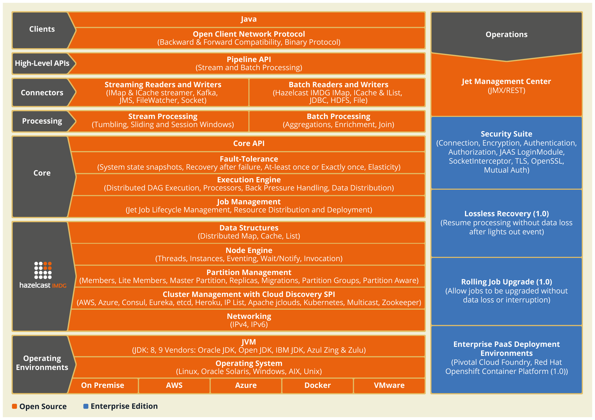
</div>
</div>
<div class="paragraph">
<p>The main programming paradigm you&#8217;ll use with Jet is that of a
<em>processing pipeline</em>, which is a network of interconnected <em>stages</em>.
The stages form a <em>directed acyclic graph</em> (a DAG) and the connections
between them indicate the path along which the data flows. Data
processing happens inside each stage. You describe the pipeline using
the <a href="#pipeline-api">Pipeline API</a>.</p>
</div>
<div class="paragraph">
<p>Internally Jet converts the pipeline into its native representation, the
<a href="#dag">Core API DAG</a>, which describes the layout of the processing
units and the rules for routing the data between them. It is possible to
use the Core API to directly create the native representation, but it&#8217;s
much more complex and error-prone.</p>
</div>
<div class="paragraph">
<p>To run the computation Jet uses a <a href="#cooperative-multithreading">cooperative multithreading</a> execution engine, which means it can run
many Core API <code>Processor</code> s on the same JVM thread. A processor
corresponds to a standalone single-threaded task that processes a stream
of data. The processors are implemented in such a way that they don&#8217;t
block the thread while waiting for more data, or while waiting for the
receiving processor to accept it. By not dependending on OS-level thread
scheduling Jet can achieve greater throughput and better saturate the
CPU cores. It can also drive many more processors than the OS can
manage native threads.</p>
</div>
</div>
</div>
<div class="sect1">
<h2 id="get-started"><a class="anchor" href="#get-started"></a><a class="link" href="#get-started">2. Get Started</a></h2>
<div class="sectionbody">
<div class="paragraph">
<p>In this section we&#8217;ll get you started using Hazelcast Jet. We&#8217;ll show
you how to set up a Java project with the proper dependencies and a
quick Hello World example to verify your setup.</p>
</div>
<div class="sect2">
<h3 id="requirements"><a class="anchor" href="#requirements"></a><a class="link" href="#requirements">2.1. Requirements</a></h3>
<div class="paragraph">
<p>In the good tradition of Hazelcast products, Jet is distributed as a JAR
with no other dependencies. It requires JRE version 8 or higher to run.</p>
</div>
</div>
<div class="sect2">
<h3 id="install-hazelcast-jet"><a class="anchor" href="#install-hazelcast-jet"></a><a class="link" href="#install-hazelcast-jet">2.2. Install Hazelcast Jet</a></h3>
<div class="paragraph">
<p>The easiest way to start using Hazelcast Jet is to add it as a
dependency to your project.</p>
</div>
<div class="paragraph">
<p>Hazelcast Jet is published on the Maven repositories. Add the following
lines to your <code>pom.xml</code>:</p>
</div>
<div class="listingblock">
<div class="content">
<pre class="CodeRay highlight"><code data-lang="xml"><span class="tag">&lt;dependencies&gt;</span>
  <span class="tag">&lt;dependency&gt;</span>
    <span class="tag">&lt;groupId&gt;</span>com.hazelcast.jet<span class="tag">&lt;/groupId&gt;</span>
    <span class="tag">&lt;artifactId&gt;</span>hazelcast-jet<span class="tag">&lt;/artifactId&gt;</span>
    <span class="tag">&lt;version&gt;</span>0.7<span class="tag">&lt;/version&gt;</span>
  <span class="tag">&lt;/dependency&gt;</span>
<span class="tag">&lt;/dependencies&gt;</span></code></pre>
</div>
</div>
<div class="paragraph">
<p>If you prefer to use Gradle, execute the following command:</p>
</div>
<div class="listingblock">
<div class="content">
<pre class="CodeRay highlight"><code data-lang="groovy">compile <span class="string"><span class="delimiter">'</span><span class="content">com.hazelcast.jet:hazelcast-jet:0.7</span><span class="delimiter">'</span></span></code></pre>
</div>
</div>
<div class="paragraph">
<p>Alternatively you can download the latest
<a href="http://jet.hazelcast.org/download">distribution package of Hazelcast Jet</a>
and add the <code>hazelcast-jet-0.7.jar</code> file to your classpath.</p>
</div>
</div>
<div class="sect2">
<h3 id="install-hazelcast-jet-enterprise-optional"><a class="anchor" href="#install-hazelcast-jet-enterprise-optional"></a><a class="link" href="#install-hazelcast-jet-enterprise-optional">2.3. Install Hazelcast Jet Enterprise (Optional)</a></h3>
<div class="paragraph">
<p>Hazelcast Jet Enterprise is a commercial edition of Hazelcast Jet. It&#8217;s
built on top of Hazelcast Jet open source and extends it with the
following features:</p>
</div>
<div class="ulist">
<ul>
<li>
<p><a href="#configuring-tls-enterprise-only">Security Suite</a></p>
</li>
<li>
<p>Lossless Recovery (in Jet 1.0)</p>
</li>
<li>
<p>Rolling Job Upgrades (in Jet 1.0)</p>
</li>
<li>
<p>Enterprise PaaS Deployment Environment
(<a href="https://docs.pivotal.io/partners/hazelcast-jet/index.html">Pivotal Cloud
Foundry</a>, Openshift Container Platform (Jet 1.0))</p>
</li>
</ul>
</div>
<div class="paragraph">
<p>Hazelcast Jet Enterprise is available on a Hazelcast Maven repository.
Add the following lines to your <code>pom.xml</code>:</p>
</div>
<div class="listingblock">
<div class="content">
<pre class="CodeRay highlight"><code data-lang="xml"><span class="tag">&lt;repository&gt;</span>
   <span class="tag">&lt;id&gt;</span>Hazelcast Private Snapshot Repository<span class="tag">&lt;/id&gt;</span>
   <span class="tag">&lt;url&gt;</span>https://repository-hazelcast-l337.forge.cloudbees.com/snapshot/<span class="tag">&lt;/url&gt;</span>
<span class="tag">&lt;/repository&gt;</span>
<span class="tag">&lt;repository&gt;</span>
   <span class="tag">&lt;id&gt;</span>Hazelcast Private Release Repository<span class="tag">&lt;/id&gt;</span>
   <span class="tag">&lt;url&gt;</span>https://repository-hazelcast-l337.forge.cloudbees.com/release/<span class="tag">&lt;/url&gt;</span>
<span class="tag">&lt;/repository&gt;</span></code></pre>
</div>
</div>
<div class="listingblock">
<div class="content">
<pre class="CodeRay highlight"><code data-lang="xml"><span class="tag">&lt;dependency&gt;</span>
   <span class="tag">&lt;groupId&gt;</span>com.hazelcast<span class="tag">&lt;/groupId&gt;</span>
   <span class="tag">&lt;artifactId&gt;</span>hazelcast-enterprise<span class="tag">&lt;/artifactId&gt;</span>
   <span class="tag">&lt;version&gt;</span>0.7<span class="tag">&lt;/version&gt;</span>
<span class="tag">&lt;/dependency&gt;</span></code></pre>
</div>
</div>
<div class="paragraph">
<p>You can download the Hazelcast Jet Enterprise package from
<a href="https://hazelcast.com/hazelcast-enterprise-download/">hazelcast.com</a>.</p>
</div>
<div class="sect3">
<h4 id="set-the-license-key"><a class="anchor" href="#set-the-license-key"></a><a class="link" href="#set-the-license-key">2.3.1. Set the License Key</a></h4>
<div class="paragraph">
<p>To use Hazelcast Jet Enterprise, you must set the license key using one
of the configuration methods shown below. You can request a trial
license key at <a href="https://hazelcast.com/hazelcast-enterprise-download/">hazelcast.com</a>.</p>
</div>
<div class="paragraph">
<p>Hazelcast Jet Enterprise license keys are required only to run the Jet
cluster. A Jet client can access the Enterprise features without the
license key.</p>
</div>
<div class="paragraph">
<p>The license key can be configured using one of the following methods:</p>
</div>
<div class="sect4">
<h5 id="hazelcast-configuration-file"><a class="anchor" href="#hazelcast-configuration-file"></a><a class="link" href="#hazelcast-configuration-file">Hazelcast Configuration File</a></h5>
<div class="paragraph">
<p>Replace the value for the <code>&lt;license-key&gt;</code> tag inside the <code>hazelcast.xml</code>
file in the config folder:</p>
</div>
<div class="listingblock">
<div class="content">
<pre class="CodeRay highlight"><code data-lang="xml"><span class="tag">&lt;hazelcast</span> <span class="attribute-name">..</span><span class="tag">&gt;</span>
    ...
    <span class="tag">&lt;license-key&gt;</span>ENTER LICENSE KEY HERE<span class="tag">&lt;/license-key&gt;</span>
    ...
<span class="tag">&lt;/hazelcast&gt;</span></code></pre>
</div>
</div>
<div class="sect5">
<h6 id="programmatic-configuration"><a class="anchor" href="#programmatic-configuration"></a><a class="link" href="#programmatic-configuration">Programmatic Configuration</a></h6>
<div class="paragraph">
<p>License key also can be set in the Jet config object as follows:</p>
</div>
<div class="listingblock">
<div class="content">
<pre class="CodeRay highlight"><code data-lang="java">JetConfig config = <span class="keyword">new</span> JetConfig();
config.getHazelcastConfig().setLicenseKey( <span class="string"><span class="delimiter">&quot;</span><span class="content">Your Enterprise License Key</span><span class="delimiter">&quot;</span></span> );</code></pre>
</div>
</div>
</div>
</div>
<div class="sect4">
<h5 id="system-property"><a class="anchor" href="#system-property"></a><a class="link" href="#system-property">System Property</a></h5>
<div class="paragraph">
<p>Set the following system property:</p>
</div>
<div class="listingblock">
<div class="content">
<pre>-Dhazelcast.enterprise.license.key=Your Enterprise License Key</pre>
</div>
</div>
</div>
</div>
<div class="sect3">
<h4 id="hazelcast-jet-management-center"><a class="anchor" href="#hazelcast-jet-management-center"></a><a class="link" href="#hazelcast-jet-management-center">2.3.2. Hazelcast Jet Management Center</a></h4>
<div class="paragraph">
<p>Hazelcast Jet Management Center is a management and monitoring suite
providing a live overview of the Hazelcast Jet cluster. It&#8217;s a
standalone tool with a web console.</p>
</div>
<div class="paragraph">
<p>Please see the
<a href="https://docs.hazelcast.org/docs/jet-management-center/latest/manual/">Hazelcast
Jet Management Center Reference Manual</a> for the installation
instructions.</p>
</div>
</div>
</div>
<div class="sect2">
<h3 id="verify-your-setup"><a class="anchor" href="#verify-your-setup"></a><a class="link" href="#verify-your-setup">2.4. Verify Your Setup With a Word Count Example</a></h3>
<div class="paragraph">
<p>You can verify your setup by running this simple program. It processes
the contents of a Hazelcast <code>IList</code> that contains lines of text, finds
the number of occurrences of each word in it, and stores its results
in a Hazelcast <code>IMap</code>. In a distributed  computation job the input and
output cannot be simple in-memory structures like a Java <code>List</code>; they
must be accessible to any member of the computing cluster and must
persist after a job ends. This is why we use Hazelcast structures.</p>
</div>
<div class="listingblock">
<div class="content">
<pre class="CodeRay highlight"><code data-lang="java"><span class="keyword">import</span> <span class="include">com.hazelcast.jet.Jet</span>;
<span class="keyword">import</span> <span class="include">com.hazelcast.jet.JetInstance</span>;
<span class="keyword">import</span> <span class="include">com.hazelcast.jet.pipeline.Pipeline</span>;
<span class="keyword">import</span> <span class="include">com.hazelcast.jet.pipeline.Sinks</span>;
<span class="keyword">import</span> <span class="include">com.hazelcast.jet.pipeline.Sources</span>;

<span class="keyword">import</span> <span class="include">java.util.List</span>;
<span class="keyword">import</span> <span class="include">java.util.Map</span>;

<span class="keyword">import</span> <span class="include">static</span> <span class="include">com.hazelcast.jet.Traversers.traverseArray</span>;
<span class="keyword">import</span> <span class="include">static</span> <span class="include">com.hazelcast.jet.aggregate.AggregateOperations.counting</span>;
<span class="keyword">import</span> <span class="include">static</span> <span class="include">com.hazelcast.jet.function.DistributedFunctions.wholeItem</span>;

<span class="directive">public</span> <span class="type">class</span> <span class="class">HelloWorld</span> {
    <span class="directive">public</span> <span class="directive">static</span> <span class="type">void</span> main(<span class="predefined-type">String</span><span class="type">[]</span> args) {
        <span class="comment">// Create the specification of the computation pipeline. Note</span>
        <span class="comment">// it's a pure POJO: no instance of Jet needed to create it.</span>
        Pipeline p = Pipeline.create();
        p.drawFrom(Sources.&lt;<span class="predefined-type">String</span>&gt;list(<span class="string"><span class="delimiter">&quot;</span><span class="content">text</span><span class="delimiter">&quot;</span></span>))
         .flatMap(line -&gt; traverseArray(line.toLowerCase().split(<span class="string"><span class="delimiter">&quot;</span><span class="char">\\</span><span class="content">W+</span><span class="delimiter">&quot;</span></span>)))
         .filter(word -&gt; !word.isEmpty())
         .groupingKey(wholeItem())
         .aggregate(counting())
         .drainTo(Sinks.map(<span class="string"><span class="delimiter">&quot;</span><span class="content">counts</span><span class="delimiter">&quot;</span></span>));

        <span class="comment">// Start Jet, populate the input list</span>
        JetInstance jet = Jet.newJetInstance();
        <span class="keyword">try</span> {
            <span class="predefined-type">List</span>&lt;<span class="predefined-type">String</span>&gt; text = jet.getList(<span class="string"><span class="delimiter">&quot;</span><span class="content">text</span><span class="delimiter">&quot;</span></span>);
            text.add(<span class="string"><span class="delimiter">&quot;</span><span class="content">hello world hello hello world</span><span class="delimiter">&quot;</span></span>);
            text.add(<span class="string"><span class="delimiter">&quot;</span><span class="content">world world hello world</span><span class="delimiter">&quot;</span></span>);

            <span class="comment">// Perform the computation</span>
            jet.newJob(p).join();

            <span class="comment">// Check the results</span>
            <span class="predefined-type">Map</span>&lt;<span class="predefined-type">String</span>, <span class="predefined-type">Long</span>&gt; counts = jet.getMap(<span class="string"><span class="delimiter">&quot;</span><span class="content">counts</span><span class="delimiter">&quot;</span></span>);
            <span class="predefined-type">System</span>.out.println(<span class="string"><span class="delimiter">&quot;</span><span class="content">Count of hello: </span><span class="delimiter">&quot;</span></span>
                    + counts.get(<span class="string"><span class="delimiter">&quot;</span><span class="content">hello</span><span class="delimiter">&quot;</span></span>));
            <span class="predefined-type">System</span>.out.println(<span class="string"><span class="delimiter">&quot;</span><span class="content">Count of world: </span><span class="delimiter">&quot;</span></span>
                    + counts.get(<span class="string"><span class="delimiter">&quot;</span><span class="content">world</span><span class="delimiter">&quot;</span></span>));
        } <span class="keyword">finally</span> {
            Jet.shutdownAll();
        }
    }
}</code></pre>
</div>
</div>
<div class="paragraph">
<p>You should expect to see a lot of logging output from Jet (sent to
<code>stderr</code>) and two lines on <code>stdout</code>:</p>
</div>
<div class="listingblock">
<div class="content">
<pre>Count of hello: 4
Count of world: 5</pre>
</div>
</div>
</div>
<div class="sect2">
<h3 id="java-util-stream"><a class="anchor" href="#java-util-stream"></a><a class="link" href="#java-util-stream">2.5. Reuse Your java.util.stream Knowledge</a></h3>
<div class="paragraph">
<p>If you&#8217;ve already used Java&#8217;s Stream API, you&#8217;ll find many similarities
in Jet&#8217;s Pipeline API. They both construct a processing pipeline by
adding processing steps (stages). Both are FP-oriented APIs with lambdas
playing a key role. Simple transformations like map/filter even look
exactly the same. The main concern is knowing where the similiarities
end. Here are some typical gotchas if the Stream API has set some
expectations for you:</p>
</div>
<div class="ulist">
<ul>
<li>
<p>All lambdas in Jet <a href="#serializable-lambda">get serialized</a> so they can
be sent to remote cluster members. If your lambda captures a variable
from the surrounding scope, that variable&#8217;s contents must be serialized
as well. If you refer to an instance variable, the entire instance
holding it must be serialized. It&#8217;s quite easy to accidentally capture
and serialize the entire <code>this</code> object and everything it refers to.</p>
</li>
<li>
<p>The pipeline you construct doesn&#8217;t execute itself, you must explicitly
<a href="http://docs.hazelcast.org/docs/jet/latest-dev/javadoc/com/hazelcast/jet/JetInstance.html#newJob-com.hazelcast.jet.pipeline.Pipeline-">submit</a>
it to a Jet cluster.</p>
</li>
<li>
<p>Since you&#8217;re submitting the computation to an external system, you
don&#8217;t get the result in the return value of a method call. The pipeline
explicitly specifies where it will store the results (to a
<a href="#pipeline-source-sink">data sink</a>).</p>
</li>
<li>
<p>Whereas in the Stream API aggregation is the terminal step, the one
that immediately makes your pipeline execute, in Jet it is just another
transformation (an intermediate step).</p>
</li>
</ul>
</div>
<div class="paragraph">
<p>Finally, you&#8217;ll notice that Jet&#8217;s Pipeline API is much more powerful
than the Stream API. Here are a few highlights:</p>
</div>
<div class="ulist">
<ul>
<li>
<p><a href="#cogroup">joining streams</a></p>
</li>
<li>
<p><a href="#windowed-aggregation">windowed aggregation over infinite streams</a></p>
</li>
<li>
<p><a href="#fault-tolerance">fault tolerance</a></p>
</li>
<li>
<p><a href="#source-sink-connectors">connectors to 3rd party systems</a></p>
</li>
</ul>
</div>
<div class="sect3">
<h4 id="example-list-transformation"><a class="anchor" href="#example-list-transformation"></a><a class="link" href="#example-list-transformation">2.5.1. Example: List Transformation</a></h4>
<div class="paragraph">
<p>Here&#8217;s a simple example of list transformation with the Stream API:</p>
</div>
<div class="listingblock">
<div class="content">
<pre class="CodeRay highlight"><code data-lang="java"><span class="predefined-type">List</span>&lt;<span class="predefined-type">String</span>&gt; strings = <span class="predefined-type">Arrays</span>.asList(<span class="string"><span class="delimiter">&quot;</span><span class="content">a</span><span class="delimiter">&quot;</span></span>, <span class="string"><span class="delimiter">&quot;</span><span class="content">b</span><span class="delimiter">&quot;</span></span>);

<span class="predefined-type">List</span>&lt;<span class="predefined-type">String</span>&gt; uppercased = strings
        .stream()
        .map(<span class="predefined-type">String</span>::toUpperCase)
        .collect(toList());

uppercased.forEach(<span class="predefined-type">System</span>.out::println);</code></pre>
</div>
</div>
<div class="paragraph">
<p>Here&#8217;s the equivalent in Jet. Note that we&#8217;re transforming Hazelcast
<code>IList</code> s:</p>
</div>
<div class="listingblock">
<div class="content">
<pre class="CodeRay highlight"><code data-lang="java">JetInstance jet = newJetInstance();
IList&lt;<span class="predefined-type">String</span>&gt; strings = jet.getList(<span class="string"><span class="delimiter">&quot;</span><span class="content">strings</span><span class="delimiter">&quot;</span></span>);
strings.addAll(<span class="predefined-type">Arrays</span>.asList(<span class="string"><span class="delimiter">&quot;</span><span class="content">a</span><span class="delimiter">&quot;</span></span>, <span class="string"><span class="delimiter">&quot;</span><span class="content">b</span><span class="delimiter">&quot;</span></span>));
IList&lt;<span class="predefined-type">String</span>&gt; uppercased = jet.getList(<span class="string"><span class="delimiter">&quot;</span><span class="content">uppercased</span><span class="delimiter">&quot;</span></span>);

Pipeline pipeline = Pipeline.create();
pipeline.drawFrom(Sources.list(strings))
        .map(<span class="predefined-type">String</span>::toUpperCase)
        .drainTo(Sinks.list(uppercased));
jet.newJob(pipeline).join();

uppercased.forEach(<span class="predefined-type">System</span>.out::println);</code></pre>
</div>
</div>
</div>
<div class="sect3">
<h4 id="example-grouping-and-aggregation"><a class="anchor" href="#example-grouping-and-aggregation"></a><a class="link" href="#example-grouping-and-aggregation">2.5.2. Example: Grouping and Aggregation</a></h4>
<div class="paragraph">
<p>Here&#8217;s an example of grouping and aggregation with the Stream API. We
compute a histogram of words by their length:</p>
</div>
<div class="listingblock">
<div class="content">
<pre class="CodeRay highlight"><code data-lang="java"><span class="predefined-type">List</span>&lt;<span class="predefined-type">String</span>&gt; strings = <span class="predefined-type">Arrays</span>.asList(<span class="string"><span class="delimiter">&quot;</span><span class="content">a</span><span class="delimiter">&quot;</span></span>, <span class="string"><span class="delimiter">&quot;</span><span class="content">b</span><span class="delimiter">&quot;</span></span>, <span class="string"><span class="delimiter">&quot;</span><span class="content">aa</span><span class="delimiter">&quot;</span></span>, <span class="string"><span class="delimiter">&quot;</span><span class="content">bb</span><span class="delimiter">&quot;</span></span>);
<span class="predefined-type">Map</span>&lt;<span class="predefined-type">Integer</span>, <span class="predefined-type">Long</span>&gt; histogram = strings
        .stream()
        .collect(groupingBy(<span class="predefined-type">String</span>::length, Collectors.counting()));

histogram.forEach((length, count) -&gt; <span class="predefined-type">System</span>.out.format(
        <span class="string"><span class="delimiter">&quot;</span><span class="content">%d chars: %d occurrences%n</span><span class="delimiter">&quot;</span></span>, length, count));</code></pre>
</div>
</div>
<div class="paragraph">
<p>And here&#8217;s how to aggregate in Jet:</p>
</div>
<div class="listingblock">
<div class="content">
<pre class="CodeRay highlight"><code data-lang="java">JetInstance jet = newJetInstance();
IList&lt;<span class="predefined-type">String</span>&gt; strings = jet.getList(<span class="string"><span class="delimiter">&quot;</span><span class="content">strings</span><span class="delimiter">&quot;</span></span>);
strings.addAll(<span class="predefined-type">Arrays</span>.asList(<span class="string"><span class="delimiter">&quot;</span><span class="content">a</span><span class="delimiter">&quot;</span></span>, <span class="string"><span class="delimiter">&quot;</span><span class="content">b</span><span class="delimiter">&quot;</span></span>, <span class="string"><span class="delimiter">&quot;</span><span class="content">aa</span><span class="delimiter">&quot;</span></span>, <span class="string"><span class="delimiter">&quot;</span><span class="content">bb</span><span class="delimiter">&quot;</span></span>));
IMap&lt;<span class="predefined-type">Integer</span>, <span class="predefined-type">Long</span>&gt; histogram = jet.getMap(<span class="string"><span class="delimiter">&quot;</span><span class="content">histogram</span><span class="delimiter">&quot;</span></span>);

Pipeline pipeline = Pipeline.create();
pipeline.drawFrom(Sources.list(strings))
        .groupingKey(<span class="predefined-type">String</span>::length)
        .aggregate(AggregateOperations.counting())
        .drainTo(Sinks.map(histogram));
jet.newJob(pipeline).join();

histogram.forEach((length, count) -&gt; <span class="predefined-type">System</span>.out.format(
        <span class="string"><span class="delimiter">&quot;</span><span class="content">%d chars: %d occurrences%n</span><span class="delimiter">&quot;</span></span>, length, count));</code></pre>
</div>
</div>
<div class="paragraph">
<p>Note that the result of <code>aggregate</code> is just another pipeline stage, you
can apply more transforms to it before draining to the sink.</p>
</div>
</div>
<div class="sect3">
<h4 id="example-collector-vs-aggregateoperation"><a class="anchor" href="#example-collector-vs-aggregateoperation"></a><a class="link" href="#example-collector-vs-aggregateoperation">2.5.3. Example: Collector vs. AggregateOperation</a></h4>
<div class="paragraph">
<p>If you have ever written your own
<a href="https://docs.oracle.com/javase/9/docs/api/java/util/stream/Collector.html">Collector</a> for the
Stream API, you&#8217;ll find that Jet&#8217;s <a href="#implement-your-aggregate-operation">AggregateOperation</a> is quite similar and you can transfer your skill
to it.</p>
</div>
<div class="paragraph">
<p>Here&#8217;s a Stream API collector that computes the sum of input items:</p>
</div>
<div class="listingblock">
<div class="content">
<pre class="CodeRay highlight"><code data-lang="java">Collector&lt;<span class="predefined-type">Long</span>, LongAccumulator, <span class="predefined-type">Long</span>&gt; summingLong = Collector.of(
        LongAccumulator::<span class="keyword">new</span>,
        (LongAccumulator acc, <span class="predefined-type">Long</span> t) -&gt; acc.add(t),
        (acc0, acc1) -&gt; acc0.add(acc1),
        LongAccumulator::get
);</code></pre>
</div>
</div>
<div class="paragraph">
<p>And here&#8217;s Jet&#8217;s aggregate operation doing the same:</p>
</div>
<div class="listingblock">
<div class="content">
<pre class="CodeRay highlight"><code data-lang="java">AggregateOperation1&lt;<span class="predefined-type">Long</span>, LongAccumulator, <span class="predefined-type">Long</span>&gt; summingLong = AggregateOperation
        .withCreate(LongAccumulator::<span class="keyword">new</span>)
        .andAccumulate((LongAccumulator acc, <span class="predefined-type">Long</span> t) -&gt; acc.add(t))
        .andCombine((acc0, acc1) -&gt; acc0.add(acc1))
        .andDeduct((acc0, acc1) -&gt; acc0.subtract(acc1))
        .andExportFinish(LongAccumulator::get);</code></pre>
</div>
</div>
<div class="paragraph">
<p>Compared to <code>Collector</code>, <code>AggregateOperation</code> defines two more
primitives:</p>
</div>
<div class="ulist">
<ul>
<li>
<p><code>deduct</code> reverses a previous <code>combine</code>. It&#8217;s an optional primitive and
serves to optimize sliding window aggregation.</p>
</li>
<li>
<p><code>export</code> is similar to <code>finish</code>, the difference being that <code>export</code>
must preserve the accumulator&#8217;s state and <code>finish</code> doesn&#8217;t. Jet uses
<code>finish</code> wherever applicable as it can be implemented more optimally.
In this example we use the same lambda for both primitives.</p>
</li>
</ul>
</div>
</div>
</div>
</div>
</div>
<div class="sect1">
<h2 id="work-with-jet"><a class="anchor" href="#work-with-jet"></a><a class="link" href="#work-with-jet">3. Work With Jet</a></h2>
<div class="sectionbody">
<div class="sect2">
<h3 id="start-jet"><a class="anchor" href="#start-jet"></a><a class="link" href="#start-jet">3.1. Start Jet</a></h3>
<div class="paragraph">
<p>To create a Jet cluster, we simply start some Jet instances. Normally
these would be started on separate machines, but for simple practice
we can use the same JVM for two instances. Even though they are in the
same JVM, they&#8217;ll communicate over the network interface.</p>
</div>
<div class="listingblock">
<div class="content">
<pre class="CodeRay highlight"><code data-lang="java">JetInstance jet = Jet.newJetInstance();
Jet.newJetInstance();</code></pre>
</div>
</div>
<div class="paragraph">
<p>These two instances should automatically discover each other using IP
multicast and form a cluster. You should see a log output similar to the
following:</p>
</div>
<div class="literalblock">
<div class="content">
<pre>Members [2] {
  Member [10.0.1.3]:5701 - f1e30062-e87e-4e97-83bc-6b4756ef6ea3
  Member [10.0.1.3]:5702 - d7b66a8c-5bc1-4476-a528-795a8a2d9d97 this
}</pre>
</div>
</div>
<div class="paragraph">
<p>This means the members successfully formed a cluster. Since the Jet
instances start their own threads, it is important to explicitly shut
them down at the end of your program; otherwise the Java process will
remain alive after the <code>main()</code> method completes:</p>
</div>
<div class="listingblock">
<div class="content">
<pre class="CodeRay highlight"><code data-lang="java"><span class="directive">public</span> <span class="directive">static</span> <span class="type">void</span> main(<span class="predefined-type">String</span><span class="type">[]</span> args) {
    <span class="keyword">try</span> {
        JetInstance jet = Jet.newJetInstance();
        Jet.newJetInstance();

        <span class="comment">// work with Jet</span>

    } <span class="keyword">finally</span> {
        Jet.shutdownAll();
    }
}</code></pre>
</div>
</div>
</div>
<div class="sect2">
<h3 id="build-pipeline"><a class="anchor" href="#build-pipeline"></a><a class="link" href="#build-pipeline">3.2. Build the Computation Pipeline</a></h3>
<div class="paragraph">
<p>The general shape of any data processing pipeline is <code>drawFromSource &#8594;
transform &#8594; drainToSink</code> and the natural way to build it is from source
to sink. The <a href="#pipeline-api">Pipeline API</a> follows this pattern. For
example,</p>
</div>
<div class="listingblock">
<div class="content">
<pre class="CodeRay highlight"><code data-lang="java">Pipeline p = Pipeline.create();
p.drawFrom(Sources.&lt;<span class="predefined-type">String</span>&gt;list(<span class="string"><span class="delimiter">&quot;</span><span class="content">input</span><span class="delimiter">&quot;</span></span>))
 .map(<span class="predefined-type">String</span>::toUpperCase)
 .drainTo(Sinks.list(<span class="string"><span class="delimiter">&quot;</span><span class="content">result</span><span class="delimiter">&quot;</span></span>));</code></pre>
</div>
</div>
<div class="paragraph">
<p>Refer to the chapter on the <a href="#pipeline-api">Pipeline API</a> for full
details.</p>
</div>
</div>
<div class="sect2">
<h3 id="serializable-lambda"><a class="anchor" href="#serializable-lambda"></a><a class="link" href="#serializable-lambda">3.3. Watch out for Capturing Lambdas</a></h3>
<div class="paragraph">
<p>A typical Jet pipeline involves lambda expressions. Since the whole
pipeline definition must be serialized to be sent to the cluster, the
lambda expressions must be serializable as well. The Java standard
provides an essential building block: if the static type of the lambda
is a subtype of <code>Serializable</code>, you will automatically get a lambda
instance that can serialize itself.</p>
</div>
<div class="paragraph">
<p>None of the functional interfaces in the JDK extend <code>Serializable</code>, so
we had to mirror the entire <code>java.util.function</code> package in our own
<code>com.hazelcast.jet.function</code> with all the interfaces subtyped and made
<code>Serializable</code>. Each subtype has the name of the original with
<code>Distributed</code> prepended. For example, a <code>DistributedFunction</code> is just
like <code>Function</code>, but implements <code>Serializable</code>. We use these types
everywhere in the Pipeline API.</p>
</div>
<div class="paragraph">
<p>As always with this kind of magic, auto-serializability of lambdas has
its flipside: it is easy to overlook what&#8217;s going on.</p>
</div>
<div class="paragraph">
<p>If the lambda references a variable in the outer scope, the variable is
captured and must also be serializable. If it references an instance
variable of the enclosing class, it implicitly captures <code>this</code> so the
entire class will be serialized. For example, this will fail because
<code>JetJob1</code> doesn&#8217;t implement <code>Serializable</code>:</p>
</div>
<div class="listingblock">
<div class="content">
<pre class="CodeRay highlight"><code data-lang="java"><span class="type">class</span> <span class="class">JetJob1</span> {
    <span class="directive">private</span> <span class="predefined-type">String</span> instanceVar;

    Pipeline buildPipeline() {
        Pipeline p = Pipeline.create();
        p.drawFrom(Sources.list(<span class="string"><span class="delimiter">&quot;</span><span class="content">input</span><span class="delimiter">&quot;</span></span>))
         .filter(item -&gt; item.equals(instanceVar)); <i class="conum" data-value="1"></i><b>(1)</b>
        <span class="keyword">return</span> p;
    }
}</code></pre>
</div>
</div>
<div class="colist arabic">
<table>
<tr>
<td><i class="conum" data-value="1"></i><b>1</b></td>
<td>Refers to <code>instanceVar</code>, capturing <code>this</code>, but <code>JetJob1</code> is not
<code>Serializable</code> so this call will fail.</td>
</tr>
</table>
</div>
<div class="paragraph">
<p>Just adding <code>implements Serializable</code> to <code>JetJob1</code> would be a viable
workaround here. However, consider something just a bit different:</p>
</div>
<div class="listingblock">
<div class="content">
<pre class="CodeRay highlight"><code data-lang="java"><span class="type">class</span> <span class="class">JetJob2</span> {
    <span class="directive">private</span> <span class="predefined-type">String</span> instanceVar;
    <span class="directive">private</span> <span class="predefined-type">OutputStream</span> fileOut; <i class="conum" data-value="1"></i><b>(1)</b>

    Pipeline buildPipeline() {
        Pipeline p = Pipeline.create();
        p.drawFrom(Sources.list(<span class="string"><span class="delimiter">&quot;</span><span class="content">input</span><span class="delimiter">&quot;</span></span>))
         .filter(item -&gt; item.equals(instanceVar)); <i class="conum" data-value="2"></i><b>(2)</b>
        <span class="keyword">return</span> p;
    }
}</code></pre>
</div>
</div>
<div class="colist arabic">
<table>
<tr>
<td><i class="conum" data-value="1"></i><b>1</b></td>
<td>A non-serializable field.</td>
</tr>
<tr>
<td><i class="conum" data-value="2"></i><b>2</b></td>
<td>Refers to <code>instanceVar</code>, capturing <code>this</code>. <code>JetJob2</code> is declared as
<code>Serializable</code>, but has a non-serializable field and this fails.</td>
</tr>
</table>
</div>
<div class="paragraph">
<p>Even though we never refer to <code>fileOut</code>, we are still capturing the
entire <code>JetJob2</code> instance. We might mark <code>fileOut</code> as <code>transient</code>, but
the sane approach is to avoid referring to instance variables of the
surrounding class. We can simply achieve this by assigning to a local
variable, then referring to that variable inside the lambda:</p>
</div>
<div class="listingblock">
<div class="content">
<pre class="CodeRay highlight"><code data-lang="java"><span class="type">class</span> <span class="class">JetJob3</span> {
    <span class="directive">private</span> <span class="predefined-type">String</span> instanceVar;

    Pipeline buildPipeline() {
        Pipeline p = Pipeline.create();
        <span class="predefined-type">String</span> findMe = instanceVar; <i class="conum" data-value="1"></i><b>(1)</b>
        p.drawFrom(Sources.list(<span class="string"><span class="delimiter">&quot;</span><span class="content">input</span><span class="delimiter">&quot;</span></span>))
         .filter(item -&gt; item.equals(findMe)); <i class="conum" data-value="2"></i><b>(2)</b>
        <span class="keyword">return</span> p;
    }
}</code></pre>
</div>
</div>
<div class="colist arabic">
<table>
<tr>
<td><i class="conum" data-value="1"></i><b>1</b></td>
<td>Declare a local variable that loads the value of the instance field.</td>
</tr>
<tr>
<td><i class="conum" data-value="2"></i><b>2</b></td>
<td>By referring to the local variable <code>findMe</code> we avoid capturing
<code>this</code> and the job runs fine.</td>
</tr>
</table>
</div>
<div class="paragraph">
<p>Another common pitfall is capturing an instance of <code>DateTimeFormatter</code>
or a similar non-serializable class:</p>
</div>
<div class="listingblock">
<div class="content">
<pre class="CodeRay highlight"><code data-lang="java">DateTimeFormatter formatter = DateTimeFormatter
        .ofPattern(<span class="string"><span class="delimiter">&quot;</span><span class="content">HH:mm:ss.SSS</span><span class="delimiter">&quot;</span></span>)
        .withZone(ZoneId.systemDefault());
Pipeline p = Pipeline.create();
BatchStage&lt;<span class="predefined-type">Long</span>&gt; src = p.drawFrom(Sources.list(<span class="string"><span class="delimiter">&quot;</span><span class="content">input</span><span class="delimiter">&quot;</span></span>));
src.map((<span class="predefined-type">Long</span> tstamp) -&gt; formatter.format(Instant.ofEpochMilli(tstamp))); <i class="conum" data-value="1"></i><b>(1)</b></code></pre>
</div>
</div>
<div class="colist arabic">
<table>
<tr>
<td><i class="conum" data-value="1"></i><b>1</b></td>
<td>Captures the non-serializable <code>formatter</code>, so this fails.</td>
</tr>
</table>
</div>
<div class="paragraph">
<p>Sometimes we can get away by using one of the preconfigured formatters
available in the JDK:</p>
</div>
<div class="listingblock">
<div class="content">
<pre class="CodeRay highlight"><code data-lang="java">src.map((<span class="predefined-type">Long</span> tstamp) -&gt; DateTimeFormatter.ISO_LOCAL_TIME <i class="conum" data-value="1"></i><b>(1)</b>
        .format(Instant.ofEpochMilli(tstamp).atZone(ZoneId.systemDefault())));</code></pre>
</div>
</div>
<div class="colist arabic">
<table>
<tr>
<td><i class="conum" data-value="1"></i><b>1</b></td>
<td>Accesses the static final field <code>ISO_LOCAL_TIME</code>. Static fields are
not subject to lambda capture, they are dereferenced when the code runs
on the target machine.</td>
</tr>
</table>
</div>
<div class="paragraph">
<p>This refers to a <code>static final</code> field in the JDK, so the instance is
available on any JVM. If this is not available, you may create a
static final field in your own class, but you can also use
<code>mapUsingContext()</code>. In this case you provide a serializable factory
that Jet will ask to create an object on the target member. The object
it returns doesn&#8217;t have to be serializable. Here&#8217;s an example of that:</p>
</div>
<div class="listingblock">
<div class="content">
<pre class="CodeRay highlight"><code data-lang="java">Pipeline p = Pipeline.create();
BatchStage&lt;<span class="predefined-type">Long</span>&gt; src = p.drawFrom(Sources.list(<span class="string"><span class="delimiter">&quot;</span><span class="content">input</span><span class="delimiter">&quot;</span></span>));
ContextFactory&lt;DateTimeFormatter&gt; contextFactory = ContextFactory.withCreateFn( <i class="conum" data-value="1"></i><b>(1)</b>
        x -&gt; DateTimeFormatter.ofPattern(<span class="string"><span class="delimiter">&quot;</span><span class="content">HH:mm:ss.SSS</span><span class="delimiter">&quot;</span></span>)
                              .withZone(ZoneId.systemDefault()));
src.mapUsingContext(contextFactory, <i class="conum" data-value="2"></i><b>(2)</b>
        (formatter, tstamp) -&gt; formatter.format(Instant.ofEpochMilli(tstamp))); <i class="conum" data-value="3"></i><b>(3)</b></code></pre>
</div>
</div>
<div class="colist arabic">
<table>
<tr>
<td><i class="conum" data-value="1"></i><b>1</b></td>
<td>Create a <code>ContextFactory</code>.</td>
</tr>
<tr>
<td><i class="conum" data-value="2"></i><b>2</b></td>
<td>Supply it to <code>mapUsingContext()</code>.</td>
</tr>
<tr>
<td><i class="conum" data-value="3"></i><b>3</b></td>
<td>Your mapping function now gets the object the factory created.</td>
</tr>
</table>
</div>
</div>
<div class="sect2">
<h3 id="job"><a class="anchor" href="#job"></a><a class="link" href="#job">3.4. Submit a Jet Job and Manage its Lifecycle</a></h3>
<div class="paragraph">
<p>This is how you submit a Jet pipeline for execution:</p>
</div>
<div class="listingblock">
<div class="content">
<pre class="CodeRay highlight"><code data-lang="java">Pipeline pipeline = buildPipeline();
jet.newJob(pipeline).join();</code></pre>
</div>
</div>
<div class="paragraph">
<p>If you want to submit a Core API DAG, the syntax is identical:</p>
</div>
<div class="listingblock">
<div class="content">
<pre class="CodeRay highlight"><code data-lang="java">DAG dag = buildDag();
jet.newJob(dag).join();</code></pre>
</div>
</div>
<div class="paragraph">
<p>Job submission is a fire-and-forget action: once a client submits it,
the job has a life of its own independent of the submitter. It can
disconnect and any other client or Jet member can obtain its own <code>Job</code>
instance that controls the same job.</p>
</div>
<div class="paragraph">
<p>You can use the same API to submit a job from either a client machine
or directly on an instance of a Jet cluster member. The same <code>Pipeline</code>
or <code>DAG</code> instance can be submitted for execution many times.</p>
</div>
<div class="sect3">
<h4 id="jobconfig"><a class="anchor" href="#jobconfig"></a><a class="link" href="#jobconfig">3.4.1. JobConfig</a></h4>
<div class="paragraph">
<p>To gain more control over how Jet will run your job, you can pass in a
<code>JobConfig</code> instance. For example, you can give your job a
human-readable name:</p>
</div>
<div class="listingblock">
<div class="content">
<pre class="CodeRay highlight"><code data-lang="java">JobConfig cfg = <span class="keyword">new</span> JobConfig();
cfg.setName(<span class="string"><span class="delimiter">&quot;</span><span class="content">my-job</span><span class="delimiter">&quot;</span></span>);
jet.newJob(pipeline, cfg);</code></pre>
</div>
</div>
</div>
<div class="sect3">
<h4 id="remember-that-a-jet-job-is-distributed"><a class="anchor" href="#remember-that-a-jet-job-is-distributed"></a><a class="link" href="#remember-that-a-jet-job-is-distributed">3.4.2. Remember that a Jet Job is Distributed</a></h4>
<div class="paragraph">
<p>The API to submit a job to Jet is in a way deceptively simple: "just
call a method." As long as you&#8217;re toying around with Jet instances
started locally in a single JVM, everything will indeed work. However,
as soon as you try to deploy to an actual cluster, you&#8217;ll face the
consequences of the fact that your job definition must travel over the
wire to reach remote members which don&#8217;t have your code on their
classpath.</p>
</div>
<div class="paragraph">
<p>Your custom code must be packaged with the Jet job. For simple examples
you can have everything in a single class and use code like this:</p>
</div>
<div class="listingblock">
<div class="content">
<pre class="CodeRay highlight"><code data-lang="java"><span class="type">class</span> <span class="class">JetExample</span> {
    <span class="directive">static</span> Job createJob(JetInstance jet) {
        JobConfig jobConfig = <span class="keyword">new</span> JobConfig();
        jobConfig.addClass(JetExample.class);
        <span class="keyword">return</span> jet.newJob(buildPipeline(), jobConfig);
    }

    <span class="directive">static</span> Pipeline buildPipeline() {
        Pipeline p = Pipeline.create();
        <span class="comment">// ...</span>
        <span class="keyword">return</span> p;
    }
}</code></pre>
</div>
</div>
<div class="paragraph">
<p>If you forget to do this, or don&#8217;t add all the classes involved, you
may get a quite confusing exception:</p>
</div>
<div class="listingblock">
<div class="content">
<pre class="CodeRay highlight"><code data-lang="java">java.lang.ClassCastException:
cannot assign instance of java.lang.invoke.SerializedLambda
to field com.hazelcast.jet.core.ProcessorMetaSupplier<span class="error">$</span><span class="integer">1</span>.val<span class="error">$</span>addressToSupplier
of type com.hazelcast.jet.function.DistributedFunction
in instance of com.hazelcast.jet.core.ProcessorMetaSupplier<span class="error">$</span><span class="integer">1</span></code></pre>
</div>
</div>
<div class="paragraph">
<p><code>SerializedLambda</code> actually declares <code>readResolve()</code>, which would
normally transform it into an instance of the correct functional
interface type. If this method throws an exception, Java doesn&#8217;t report
it but keeps the <code>SerializedLambda</code> instance and continues the
deserialization. Later in the process it will try to assign it to
a field whose type is the target type of the lambda
(<code>DistributedFunction</code> in the example above) and at that point it will
fail with the <code>ClassCastException</code>. If you see this kind of error,
double-check the list of classes you have added to the Jet job.</p>
</div>
<div class="paragraph">
<p>For more complex jobs it will become more practical to first package the
job in a JAR and then use a command-line utility to submit it, as
explained next.</p>
</div>
</div>
<div class="sect3">
<h4 id="submit-a-job-from-the-command-line"><a class="anchor" href="#submit-a-job-from-the-command-line"></a><a class="link" href="#submit-a-job-from-the-command-line">3.4.3. Submit a Job from the Command Line</a></h4>
<div class="paragraph">
<p>Jet comes with the <code>jet-submit.sh</code> script, which allows you to submit a
Jet job packaged in a JAR file. You can find it in the Jet distribution
zipfile, in the <code>bin</code> directory. On Windows use <code>jet-submit.bat</code>. To use
it, follow these steps:</p>
</div>
<div class="ulist">
<ul>
<li>
<p>Write your <code>main()</code> method and your Jet code the usual way, but call
<a href="http://docs.hazelcast.org/docs/jet/latest-dev/javadoc/com/hazelcast/jet/server/JetBootstrap.html"><code>JetBootstrap.getInstance()</code></a>
instead of <code>Jet.newJetClient()</code> to acquire a Jet client instance.</p>
</li>
<li>
<p>Create a runnable JAR which declares its <code>Main-Class</code> in <code>MANIFEST.MF</code>.</p>
</li>
<li>
<p>Run your JAR, but instead of <code>java -jar jetjob.jar</code> use <code>jet-submit.sh
jetjob.jar</code>.</p>
</li>
<li>
<p>The script will create a Jet client and configure it from
<code>hazelcast-client.xml</code> located in the <code>config</code> directory of Jet&#8217;s
distribution. Adjust that file to suit your needs.</p>
</li>
</ul>
</div>
<div class="paragraph">
<p>For example, write a class like this:</p>
</div>
<div class="listingblock">
<div class="content">
<pre class="CodeRay highlight"><code data-lang="java"><span class="type">class</span> <span class="class">CustomJetJob</span> {
    <span class="directive">public</span> <span class="directive">static</span> <span class="type">void</span> main(<span class="predefined-type">String</span><span class="type">[]</span> args) {
        JetInstance jet = JetBootstrap.getInstance();
        jet.newJob(buildPipeline()).join();
    }

    <span class="directive">static</span> Pipeline buildPipeline() {
        Pipeline p = Pipeline.create();
        <span class="comment">// ...</span>
        <span class="keyword">return</span> p;
    }
}</code></pre>
</div>
</div>
<div class="paragraph">
<p>After building the JAR, submit the job:</p>
</div>
<div class="listingblock">
<div class="content">
<pre>$ jet-submit.sh jetjob.jar</pre>
</div>
</div>
</div>
<div class="sect3">
<h4 id="manage-a-submitted-job"><a class="anchor" href="#manage-a-submitted-job"></a><a class="link" href="#manage-a-submitted-job">3.4.4. Manage a Submitted Job</a></h4>
<div class="paragraph">
<p><code>jet.newJob()</code> and <code>jet.getJob(jobId)</code> return a
<a href="http://docs.hazelcast.org/docs/jet/latest-dev/javadoc/com/hazelcast/jet/Job.html">Job</a> object, which you can use to monitor the
job and change its status:</p>
</div>
<div class="ulist">
<ul>
<li>
<p><a href="http://docs.hazelcast.org/docs/jet/latest-dev/javadoc/com/hazelcast/jet/Job.html#suspend--">Job.suspend</a>: the job will stop
running, but its metadata will be kept and it can be resumed later. Use
this for example if you want to restart the members one by one and you
don&#8217;t want the job to restart multiple times in the meantime</p>
</li>
<li>
<p><a href="http://docs.hazelcast.org/docs/jet/latest-dev/javadoc/com/hazelcast/jet/Job.html#resume--">Job.resume</a>: resumes a previously
suspended job</p>
</li>
<li>
<p><a href="http://docs.hazelcast.org/docs/jet/latest-dev/javadoc/com/hazelcast/jet/Job.html#restart--">Job.restart</a>: stops and restarts the
job to make use of new members added to the cluster (if automatic
scaling is disabled)</p>
</li>
<li>
<p><a href="http://docs.hazelcast.org/docs/jet/latest-dev/javadoc/com/hazelcast/jet/Job.html#cancel--">Job.cancel</a>: the job will stop
running and will be marked as completed. It cannot be restarted later</p>
</li>
</ul>
</div>
<div class="paragraph">
<p>You can also get the job&#8217;s name, configuration, and submission time via
<code>job.getName()</code>, <code>job.getConfig()</code>, and <code>job.getSubmissionTime()</code>.
<code>job.getStatus()</code> will give you the current status of the job (running,
failed, completed etc.). You can also call <code>job.getFuture()</code> to block
until the job completes and then get its final outcome (either success
or failure).</p>
</div>
<div class="paragraph">
<p>Jet does not support canceling the job with <code>future.cancel()</code>, instead
you must call <code>job.cancel()</code>. This is due to the mismatch in the
semantics between <code>future.cancel()</code> on one side and <code>job.cancel()</code> plus
<code>job.getStatus()</code> on the other: the future immediately transitions to
&#8220;completed by cancellation&#8221;, but it will take some time until the
actual job in the cluster changes to that state. Not to confuse the
users with these differences we decided to make <code>future.cancel()</code> fail
with an exception.</p>
</div>
</div>
<div class="sect3">
<h4 id="get-a-list-of-all-submitted-jobs"><a class="anchor" href="#get-a-list-of-all-submitted-jobs"></a><a class="link" href="#get-a-list-of-all-submitted-jobs">3.4.5. Get a List of All Submitted Jobs</a></h4>
<div class="paragraph">
<p>Jet keeps an inventory of all the jobs submitted to it, including those
that have already completed. Access the full list with <code>jet.getJobs()</code>.
You can use any <code>Job</code> instance from that list to monitor and manage a
job, whether it was you or some other client that submitted it.</p>
</div>
<div class="paragraph">
<p>This example tells you what Jet has been up to in the last five minutes:</p>
</div>
<div class="listingblock">
<div class="content">
<pre class="CodeRay highlight"><code data-lang="java"><span class="type">int</span> total = <span class="integer">0</span>;
<span class="type">int</span> completed = <span class="integer">0</span>;
<span class="type">int</span> failed = <span class="integer">0</span>;
<span class="type">int</span> inProgress = <span class="integer">0</span>;
<span class="type">long</span> fiveMinutesAgo = <span class="predefined-type">System</span>.currentTimeMillis() - MINUTES.toMillis(<span class="integer">5</span>);
<span class="keyword">for</span> (Job job : jet.getJobs()) {
    <span class="keyword">if</span> (job.getSubmissionTime() &lt; fiveMinutesAgo) {
        <span class="keyword">continue</span>;
    }
    total++;
    <span class="keyword">switch</span> (job.getStatus()) {
        <span class="keyword">case</span> COMPLETED:
            completed++;
            <span class="keyword">break</span>;
        <span class="keyword">case</span> FAILED:
            failed++;
            <span class="keyword">break</span>;
        <span class="keyword">default</span>:
            inProgress++;
    }
    <span class="predefined-type">System</span>.out.format(
        <span class="string"><span class="delimiter">&quot;</span><span class="content">In the last five minutes %d jobs were submitted to Jet, of which %d</span><span class="delimiter">&quot;</span></span> +
        <span class="string"><span class="delimiter">&quot;</span><span class="content"> already completed, %d jobs failed, and %d jobs are still running.%n</span><span class="delimiter">&quot;</span></span>,
        total, completed, failed, inProgress);
}</code></pre>
</div>
</div>
<div class="paragraph">
<p>To only return all jobs submitted with a particular name, you can call
<code>jet.getJobs(name)</code>, or <code>jet.getJob(name)</code> to get just the latest one.</p>
</div>
<div class="paragraph">
<p>Here&#8217;s how you can check the statistics on a job named <code>my-job</code>:</p>
</div>
<div class="listingblock">
<div class="content">
<pre class="CodeRay highlight"><code data-lang="java"><span class="predefined-type">List</span>&lt;Job&gt; myJobs = jet.getJobs(<span class="string"><span class="delimiter">&quot;</span><span class="content">my-job</span><span class="delimiter">&quot;</span></span>);
<span class="type">long</span> failedCount = myJobs.stream().filter(j -&gt; j.getStatus() == FAILED).count();
<span class="predefined-type">System</span>.out.format(<span class="string"><span class="delimiter">&quot;</span><span class="content">Jet ran 'my-job' %d times and it failed %d times.%n</span><span class="delimiter">&quot;</span></span>,
        myJobs.size(), failedCount);</code></pre>
</div>
</div>
<div class="paragraph">
<p><strong>Note:</strong> data about about completed jobs are evicted after 7 days.</p>
</div>
</div>
</div>
<div class="sect2">
<h3 id="fault-tolerance"><a class="anchor" href="#fault-tolerance"></a><a class="link" href="#fault-tolerance">3.5. Configure Fault Tolerance</a></h3>
<div class="paragraph">
<p>Jet has features to allow an unbounded stream processing job to proceed
correctly in the face of Jet members failing and leaving the cluster.</p>
</div>
<div class="paragraph">
<p>Jet takes snapshots of the entire state of the computation at regular
intervals. It coordinates the snapshot across the cluster and
synchronizes it with a checkpoint on the data source. The source must
ensure that, in the case of a restart, it will be able to replay all the
data it emitted after the last checkpoint. Each of the other components
in the job will restore its processing state to exactly what it was at
the time of the last snapshot. If a cluster member goes away, Jet will
restart the job on the remaining members, rewind the sources to the
last checkpoint, restore the state of processing from the last
snapshot, and then seamlessly continue from that point.</p>
</div>
<div class="sect3">
<h4 id="exactly-once"><a class="anchor" href="#exactly-once"></a><a class="link" href="#exactly-once">3.5.1. Exactly-Once</a></h4>
<div class="paragraph">
<p>"Exactly-once processing" means the output is consistent with processing
each stream item exactly once. This is the ultimate guarantee you can
ask for.</p>
</div>
<div class="paragraph">
<p>As of version 0.6, Hazelcast Jet supports exactly-once processing with
the source being either a Hazelcast <code>IMap</code> journal or a Kafka topic,
and the sink being a Hazelcast <code>IMap</code>.</p>
</div>
<div class="paragraph">
<p>If you configure Jet for exactly-once but use Kafka as the sink, after a
job restart you may get duplicates in the output. As opposed to doubly
processing an input item, this is more benign because it just means
getting the exact same result twice.</p>
</div>
</div>
<div class="sect3">
<h4 id="at-least-once"><a class="anchor" href="#at-least-once"></a><a class="link" href="#at-least-once">3.5.2. At-Least-Once</a></h4>
<div class="paragraph">
<p>"At-least-once processing" means the output is consistent with
processing each stream item at least once. Some items may get processed
again after a restart, as if they represented new events. This is a
lesser guarantee that Jet can deliver at a higher throughput and lower
latency. In some cases it is good enough.</p>
</div>
<div class="paragraph">
<p>In some other cases, however, duplicate processing of data items can
have quite surprising consequences. There is more information about this
in our <a href="#pitfalls-alo">Under the Hood</a> chapter.</p>
</div>
</div>
<div class="sect3">
<h4 id="enable-fault-tolerance"><a class="anchor" href="#enable-fault-tolerance"></a><a class="link" href="#enable-fault-tolerance">3.5.3. Enable Fault Tolerance</a></h4>
<div class="paragraph">
<p>Fault tolerance is off by default. To activate it for a job, create a
<code>JobConfig</code> object and set the
<a href="http://docs.hazelcast.org/docs/jet/latest-dev/javadoc/com/hazelcast/jet/config/JobConfig.html#setProcessingGuarantee-com.hazelcast.jet.config.ProcessingGuarantee-"><em>processing guarantee</em></a>.
You can also configure
<a href="http://docs.hazelcast.org/docs/jet/latest-dev/javadoc/com/hazelcast/jet/config/JobConfig.html#setSnapshotIntervalMillis-long-"><em>snapshot interval</em></a>.</p>
</div>
<div class="listingblock">
<div class="content">
<pre class="CodeRay highlight"><code data-lang="java">JobConfig jobConfig = <span class="keyword">new</span> JobConfig();
jobConfig.setProcessingGuarantee(ProcessingGuarantee.EXACTLY_ONCE);
jobConfig.setSnapshotIntervalMillis(SECONDS.toMillis(<span class="integer">10</span>));</code></pre>
</div>
</div>
<div class="paragraph">
<p>Using less frequent snapshots, more data will have to be replayed
and the temporary spike in the latency of the output will be greater.
More frequent snapshots will reduce the throughput and introduce more
latency variation during regular processing.</p>
</div>
</div>
<div class="sect3">
<h4 id="automatic-elasticity"><a class="anchor" href="#automatic-elasticity"></a><a class="link" href="#automatic-elasticity">3.5.4. Automatic Elasticity</a></h4>
<div class="paragraph">
<p>You can
<a href="http://docs.hazelcast.org/docs/jet/latest-dev/javadoc/com/hazelcast/jet/config/JobConfig.html#setAutoScaling-boolean-">configure</a>
the behavior of what will happen when members are added or removed from
the cluster.</p>
</div>
<div class="ulist">
<ul>
<li>
<p>If auto-scaling is enabled and a member is added or removed, the job
will automatically restart. In case of member addition, it will
restart after a delay.</p>
</li>
<li>
<p>If auto-scaling is disabled and a member is added, Jet takes no
action and the job will not use the added member; you have to manually
restart it. If a member is removed (after a shutdown or a failure), Jet
suspends the job. You have to manually resume it.</p>
</li>
</ul>
</div>
<div class="paragraph">
<p>By default, auto-scaling is enabled.</p>
</div>
</div>
<div class="sect3">
<h4 id="level-of-safety"><a class="anchor" href="#level-of-safety"></a><a class="link" href="#level-of-safety">3.5.5. Level of Safety</a></h4>
<div class="paragraph">
<p>Jet doesn&#8217;t delegate its fault tolerance to an outside system, it backs
up the state to its own <code>IMap</code> objects. <code>IMap</code> is a replicated
in-memory data structure, storing each key-value pair on a configurable
number of cluster members. By default it will make a single backup
copy, resulting in a system that tolerates the failure of a single
member at a time. You can tweak this setting when starting Jet, for
example increase the backup count to two:</p>
</div>
<div class="listingblock">
<div class="content">
<pre class="CodeRay highlight"><code data-lang="java">JetConfig config = <span class="keyword">new</span> JetConfig();
config.getInstanceConfig().setBackupCount(<span class="integer">2</span>);
JetInstance instance = Jet.newJetInstance(config);</code></pre>
</div>
</div>
<div class="paragraph">
<p><em>Note:</em> if multiple members are lost simultaneously, some data from the
backing IMaps can be lost. This is not currently checked and the job
will restart with some state data from the snapshot missing, or it
might fail if classpath resources were added and are missing. We plan
to address this in future releases.</p>
</div>
</div>
<div class="sect3">
<h4 id="split-brain-protection"><a class="anchor" href="#split-brain-protection"></a><a class="link" href="#split-brain-protection">3.5.6. Split-Brain Protection</a></h4>
<div class="paragraph">
<p>A specific kind of failure is a so-called "split brain". It happens on
network failure when a member or members think the other members left
the cluster, but in fact they still run, but don&#8217;t see each other over
the network. Now we have two or more fully-functioning Jet clusters
where there was supposed to be one. Each one will recover and restart
the same Jet job, making it to run multiple times.</p>
</div>
<div class="paragraph">
<p>Hazelcast Jet offers a mechanism to reduce this hazard:
<a href="http://docs.hazelcast.org/docs/jet/latest-dev/javadoc/com/hazelcast/jet/config/JobConfig.html#setSplitBrainProtection-boolean-"><em>split-brain
protection</em></a>. It works by ensuring that a job can be restarted only in
a cluster whose size is more than half of what it was before the job
was suspended. Enable split-brain protection like this:</p>
</div>
<div class="listingblock">
<div class="content">
<pre class="CodeRay highlight"><code data-lang="java">jobConfig.setSplitBrainProtection(<span class="predefined-constant">true</span>);</code></pre>
</div>
</div>
<div class="paragraph">
<p>If there&#8217;s an even number of members in your cluster, this may mean the
job will not be able to restart at all if the cluster splits into two
equally-sized parts. We recommend having an odd number of members.</p>
</div>
<div class="paragraph">
<p>Note also that you should ensure there is no split-brain condition at
the moment you are introducing new members to the cluster. If that
happens, both sub-clusters may grow to more than half of the previous
size. This will defuse the split-brain protection mechanism.</p>
</div>
</div>
</div>
<div class="sect2">
<h3 id="performance-considerations"><a class="anchor" href="#performance-considerations"></a><a class="link" href="#performance-considerations">3.6. Performance Considerations</a></h3>
<div class="sect3">
<h4 id="standard-java-serialization-is-slow"><a class="anchor" href="#standard-java-serialization-is-slow"></a><a class="link" href="#standard-java-serialization-is-slow">3.6.1. Standard Java Serialization is Slow</a></h4>
<div class="paragraph">
<p>When it comes to serializing the description of a Jet job, performance
is not critical. However, for the data passing through the pipeline,
the cost of the serialize-deserialize cycle can easily dwarf the cost of
actual data transfer, especially on high-end LANs typical for data
centers. In this context the performance of Java serialization is so
poor that it regularly becomes the bottleneck. This is due to its heavy
usage of reflection, overheads in the serialized form, etc.</p>
</div>
<div class="paragraph">
<p>Since Hazelcast IMDG faced the same problem a long time ago, we have
mature support for optimized custom serialization and in Jet you can
use it for stream data. In essence, you must implement a
<code>StreamSerializer</code> for the objects you emit from your processors and
register it in Jet configuration:</p>
</div>
<div class="listingblock">
<div class="content">
<pre class="CodeRay highlight"><code data-lang="java">SerializerConfig serializerConfig = <span class="keyword">new</span> SerializerConfig()
        .setImplementation(<span class="keyword">new</span> MyItemSerializer())
        .setTypeClass(MyItem.class);
JetConfig config = <span class="keyword">new</span> JetConfig();
config.getHazelcastConfig().getSerializationConfig()
      .addSerializerConfig(serializerConfig);
JetInstance jet = Jet.newJetInstance(config);</code></pre>
</div>
</div>
<div class="paragraph">
<p>Consult the chapter on
<a href="http://docs.hazelcast.org/docs/3.10.4/manual/html-single/index.html#custom-serialization">custom serialization</a>
in Hazelcast IMDG&#8217;s reference manual for more details.</p>
</div>
<div class="paragraph">
<p>Note the limitation implied here: the serializers must be registered
with Jet on startup because this is how it is supported in Hazelcast
IMDG. There is a plan to improve this and allow serializers to be
registered on individual Jet jobs.</p>
</div>
</div>
<div class="sect3">
<h4 id="capacity-of-the-concurrent-queues"><a class="anchor" href="#capacity-of-the-concurrent-queues"></a><a class="link" href="#capacity-of-the-concurrent-queues">3.6.2. Capacity of the Concurrent Queues</a></h4>
<div class="paragraph">
<p>By default, Jet runs each internal DAG vertex, roughly equivalent to
each step of the computation (such as <code>map</code> or <code>aggregate</code>), at maximum
parallelism (equal to the number of CPU cores). This means that even a
single Jet job uses quite a lot of parallel tasks. Since Jet&#8217;s
cooperative <em>tasklets</em> are very cheap to switch between, there&#8217;s almost
no overhead from this. However, every pair of tasklets that communicate
uses a dedicated 1-to-1 concurrent queue so the number of queues scales
with the square of the number of CPU cores. The default queue capacity
is 1024, which translates to 4-8 kilobytes RAM overhead per tasklet pair
and potentially a lot of data items in flight before the queues fill up.</p>
</div>
<div class="paragraph">
<p>If you experience RAM shortage on the Jet cluster, consider lowering the
queue size. This is how you set the default queue size for the whole Jet
cluster:</p>
</div>
<div class="listingblock">
<div class="content">
<pre class="CodeRay highlight"><code data-lang="java">JetConfig cfg = <span class="keyword">new</span> JetConfig();
cfg.getDefaultEdgeConfig().setQueueSize(<span class="integer">128</span>);
JetInstance jet = Jet.newJetInstance(cfg);</code></pre>
</div>
</div>
<div class="paragraph">
<p>You can also set queue sizes individually on each Core API DAG edge.
You must first convert your pipeline to the Core DAG, apply the
configuration, and then submit the DAG for execution:</p>
</div>
<div class="listingblock">
<div class="content">
<pre class="CodeRay highlight"><code data-lang="java">Pipeline p = Pipeline.create();
p.drawFrom(Sources.&lt;<span class="predefined-type">String</span>&gt;list(<span class="string"><span class="delimiter">&quot;</span><span class="content">a</span><span class="delimiter">&quot;</span></span>)).setName(<span class="string"><span class="delimiter">&quot;</span><span class="content">source</span><span class="delimiter">&quot;</span></span>)
 .map(<span class="predefined-type">String</span>::toLowerCase)
 .drainTo(Sinks.list(<span class="string"><span class="delimiter">&quot;</span><span class="content">b</span><span class="delimiter">&quot;</span></span>));

DAG dag = p.toDag();
dag.getOutboundEdges(<span class="string"><span class="delimiter">&quot;</span><span class="content">source</span><span class="delimiter">&quot;</span></span>).get(<span class="integer">0</span>)
   .setConfig(<span class="keyword">new</span> EdgeConfig().setQueueSize(<span class="integer">128</span>));

jet.newJob(dag);</code></pre>
</div>
</div>
</div>
</div>
<div class="sect2">
<h3 id="logging-and-debugging"><a class="anchor" href="#logging-and-debugging"></a><a class="link" href="#logging-and-debugging">3.7. Monitor Execution and Diagnose Problems</a></h3>
<div class="sect3">
<h4 id="configure-logging"><a class="anchor" href="#configure-logging"></a><a class="link" href="#configure-logging">3.7.1. Configure Logging</a></h4>
<div class="paragraph">
<p>Jet, like Hazelcast IMDG, does not depend on a specific logging
framework and has built-in adapters for a variety of logging frameworks.
You can also write a new adapter to integrate with loggers Jet doesn&#8217;t
natively support. To use one of the built-in adapters, set the
<code>hazelcast.logging.type</code> property to one of the following:</p>
</div>
<div class="ulist">
<ul>
<li>
<p><code>jdk</code>: java.util.logging (default)</p>
</li>
<li>
<p><code>log4j</code>: Apache Log4j</p>
</li>
<li>
<p><code>log4j2</code>: Apache Log4j 2</p>
</li>
<li>
<p><code>slf4j</code>: SLF4J</p>
</li>
<li>
<p><code>none</code>: Turn off logging</p>
</li>
</ul>
</div>
<div class="paragraph">
<p>For example, to configure Jet to use Log4j, you can do one of the
following:</p>
</div>
<div class="listingblock">
<div class="content">
<pre class="CodeRay highlight"><code data-lang="java"><span class="predefined-type">System</span>.setProperty(<span class="string"><span class="delimiter">&quot;</span><span class="content">hazelcast.logging.type</span><span class="delimiter">&quot;</span></span>, <span class="string"><span class="delimiter">&quot;</span><span class="content">log4j</span><span class="delimiter">&quot;</span></span>);</code></pre>
</div>
</div>
<div class="paragraph">
<p>or</p>
</div>
<div class="listingblock">
<div class="content">
<pre class="CodeRay highlight"><code data-lang="java">JetConfig config = <span class="keyword">new</span> JetConfig();
config.getHazelcastConfig()
      .setProperty(<span class="string"><span class="delimiter">&quot;</span><span class="content">hazelcast.logging.type</span><span class="delimiter">&quot;</span></span>, <span class="string"><span class="delimiter">&quot;</span><span class="content">log4j</span><span class="delimiter">&quot;</span></span>);</code></pre>
</div>
</div>
<div class="paragraph">
<p>For more detailed information about how to configure logging, please
refer to the <a href="http://docs.hazelcast.org/docs/3.10.4/manual/html-single/index.html#logging-configuration">IMDG reference manual</a>.</p>
</div>
</div>
<div class="sect3">
<h4 id="inspect-output-of-individual-stages"><a class="anchor" href="#inspect-output-of-individual-stages"></a><a class="link" href="#inspect-output-of-individual-stages">3.7.2. Inspect Output of Individual Stages</a></h4>
<div class="paragraph">
<p>While debugging your pipeline you&#8217;ll want to see the output of an
individual stage. You can achieve it by using the
<a href="http://docs.hazelcast.org/docs/jet/latest-dev/javadoc/com/hazelcast/jet/GeneralStage.html#peek--"><code>peek()</code></a> stage. For example:</p>
</div>
<div class="listingblock">
<div class="content">
<pre class="CodeRay highlight"><code data-lang="java">Pipeline p = Pipeline.create();
p.drawFrom(Sources.&lt;<span class="predefined-type">String</span>&gt;list(<span class="string"><span class="delimiter">&quot;</span><span class="content">inputList</span><span class="delimiter">&quot;</span></span>))
 .flatMap(line -&gt; traverseArray(line.toLowerCase().split(<span class="string"><span class="delimiter">&quot;</span><span class="char">\\</span><span class="content">W+</span><span class="delimiter">&quot;</span></span>)))
 .filter(word -&gt; !word.isEmpty())
 .peek() <i class="conum" data-value="1"></i><b>(1)</b>
 .groupingKey(wholeItem())
 .aggregate(counting())
 .drainTo(Sinks.map(<span class="string"><span class="delimiter">&quot;</span><span class="content">counts</span><span class="delimiter">&quot;</span></span>));</code></pre>
</div>
</div>
<div class="colist arabic">
<table>
<tr>
<td><i class="conum" data-value="1"></i><b>1</b></td>
<td>Captures all the word tokens entering the aggregating stage</td>
</tr>
</table>
</div>
<div class="paragraph">
<p>If you run it like this:</p>
</div>
<div class="listingblock">
<div class="content">
<pre class="CodeRay highlight"><code data-lang="java">JetInstance jet = Jet.newJetInstance();
<span class="keyword">try</span> {
    jet.getList(<span class="string"><span class="delimiter">&quot;</span><span class="content">inputList</span><span class="delimiter">&quot;</span></span>)
       .addAll(asList(<span class="string"><span class="delimiter">&quot;</span><span class="content">The quick brown fox</span><span class="delimiter">&quot;</span></span>, <span class="string"><span class="delimiter">&quot;</span><span class="content">jumped over the lazy dog</span><span class="delimiter">&quot;</span></span>));
    jet.newJob(p).join();
} <span class="keyword">finally</span> {
    Jet.shutdownAll();
}</code></pre>
</div>
</div>
<div class="paragraph">
<p>this is how your output may look:</p>
</div>
<div class="literalblock">
<div class="content">
<pre>Mar 20, 2018 2:43:24 PM com.hazelcast.jet.impl.processor.PeekWrappedP.filter#1
INFO: [192.168.5.12]:5702 [jet] [0.7-SNAPSHOT] Output to ordinal 0: quick
Mar 20, 2018 2:43:24 PM com.hazelcast.jet.impl.processor.PeekWrappedP.filter#2
INFO: [192.168.5.12]:5702 [jet] [0.7-SNAPSHOT] Output to ordinal 0: brown
Mar 20, 2018 2:43:24 PM com.hazelcast.jet.impl.processor.PeekWrappedP.filter#0
INFO: [192.168.5.12]:5702 [jet] [0.7-SNAPSHOT] Output to ordinal 0: the
Mar 20, 2018 2:43:24 PM com.hazelcast.jet.impl.processor.PeekWrappedP.filter#4
INFO: [192.168.5.12]:5702 [jet] [0.7-SNAPSHOT] Output to ordinal 0: dog
Mar 20, 2018 2:43:24 PM com.hazelcast.jet.impl.processor.PeekWrappedP.filter#3
INFO: [192.168.5.12]:5702 [jet] [0.7-SNAPSHOT] Output to ordinal 0: lazy
Mar 20, 2018 2:43:24 PM com.hazelcast.jet.impl.processor.PeekWrappedP.filter#0
INFO: [192.168.5.12]:5702 [jet] [0.7-SNAPSHOT] Output to ordinal 0: jumped
Mar 20, 2018 2:43:24 PM com.hazelcast.jet.impl.processor.PeekWrappedP.filter#2
INFO: [192.168.5.12]:5702 [jet] [0.7-SNAPSHOT] Output to ordinal 0: the
Mar 20, 2018 2:43:24 PM com.hazelcast.jet.impl.processor.PeekWrappedP.filter#1
INFO: [192.168.5.12]:5702 [jet] [0.7-SNAPSHOT] Output to ordinal 0: over
Mar 20, 2018 2:43:24 PM com.hazelcast.jet.impl.processor.PeekWrappedP.filter#3
INFO: [192.168.5.12]:5702 [jet] [0.7-SNAPSHOT] Output to ordinal 0: fox</pre>
</div>
</div>
<div class="paragraph">
<p>The logger name of
<code>com.hazelcast.jet.impl.processor.PeekWrappedP.filter#1</code> consists of the
following parts:</p>
</div>
<div class="ulist">
<ul>
<li>
<p><code>com.hazelcast.jet.impl.processor.PeekWrappedP</code>: the type of the
processor writing the log message</p>
</li>
<li>
<p><code>filter</code>: the name of the vertex the processor belongs to</p>
</li>
<li>
<p><code>#0</code>: index of the processor within the vertex. The index is unique
cluster-wide.</p>
</li>
</ul>
</div>
<div class="paragraph">
<p>For more information about logging when using the Core API, see the
<a href="#inspecting-processor-input-and-output">Best Practices</a> section.</p>
</div>
</div>
</div>
<div class="sect2">
<h3 id="management-center"><a class="anchor" href="#management-center"></a><a class="link" href="#management-center">3.8. Management Center</a></h3>
<div class="paragraph">
<p>Hazelcast Jet Management Center is a management and monitoring suite providing
a live overview of the Hazelcast Jet cluster.
Management Center includes a tool for diagnosing data flow within the
running Hazelcast Jet job. It provides a visualization of the computational
stages and allows you to peek into the stats across the dataflow graph
enabling you to diagnose bottlenecks.</p>
</div>
<div class="paragraph">
<p>Please refer to the <a href="https://docs.hazelcast.org/docs/jet-management-center/latest/manual/">Hazelcast Jet Management Center Reference Manual</a> for installation and usage instructions.</p>
</div>
<div class="imageblock" style="text-align: center">
<div class="content">
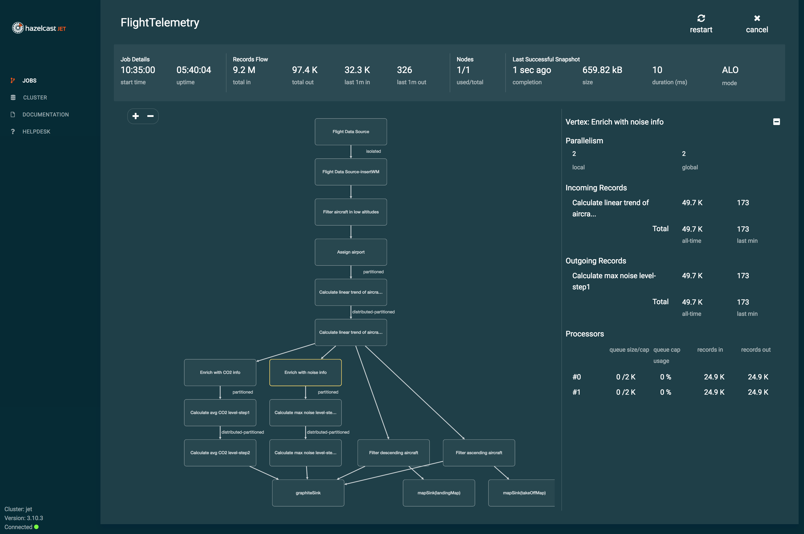
</div>
</div>
</div>
</div>
</div>
<div class="sect1">
<h2 id="pipeline-api"><a class="anchor" href="#pipeline-api"></a><a class="link" href="#pipeline-api">4. The Pipeline API</a></h2>
<div class="sectionbody">
<div class="sect2">
<h3 id="the-shape-of-a-pipeline"><a class="anchor" href="#the-shape-of-a-pipeline"></a><a class="link" href="#the-shape-of-a-pipeline">4.1. The Shape of a Pipeline</a></h3>
<div class="paragraph">
<p>The general shape of any data processing pipeline is <code>drawFromSource &#8594;
transform &#8594; drainToSink</code> and the natural way to build it is from source
to sink. The <a href="http://docs.hazelcast.org/docs/jet/latest-dev/javadoc/com/hazelcast/jet/Pipeline.html">Pipeline</a> API follows this
pattern. For example,</p>
</div>
<div class="listingblock">
<div class="content">
<pre class="CodeRay highlight"><code data-lang="java">Pipeline p = Pipeline.create();
p.drawFrom(Sources.&lt;<span class="predefined-type">String</span>&gt;list(<span class="string"><span class="delimiter">&quot;</span><span class="content">input</span><span class="delimiter">&quot;</span></span>))
 .map(<span class="predefined-type">String</span>::toUpperCase)
 .drainTo(Sinks.list(<span class="string"><span class="delimiter">&quot;</span><span class="content">result</span><span class="delimiter">&quot;</span></span>));</code></pre>
</div>
</div>
<div class="paragraph">
<p>In each step, such as <code>drawFrom</code> or <code>drainTo</code>, you create a pipeline
<em>stage</em>. The stage resulting from a <code>drainTo</code> operation is called a
<em>sink stage</em> and you can&#8217;t attach more stages to it. All others are
called <em>compute stages</em> and expect you to attach stages to them.</p>
</div>
<div class="paragraph">
<p>The API differentiates between batch (bounded) and stream (unbounded)
sources and this is reflected in the naming: there is a <code>BatchStage</code>
and a <code>StreamStage</code>, each offering the operations appropriate to its
kind. In this section we&#8217;ll mostly use batch stages, for simplicity,
but the API of operations common to both kinds is identical. We&#8217;ll
explain later on how to apply windowing, which is necessary to aggregate
over unbounded streams.</p>
</div>
<div class="paragraph">
<p>Your pipeline can consist of multiple sources, each starting its own
pipeline branch, and you are allowed to mix both kinds of stages in the
same pipeline. You can merge the branches with joining transforms. For
example, the <a href="#hash-join">hash-join</a> transform can join a stream stage
with batch stages:</p>
</div>
<div class="listingblock">
<div class="content">
<pre class="CodeRay highlight"><code data-lang="java">Pipeline p = Pipeline.create();
StreamStage&lt;Trade&gt; trades = p.drawFrom(Sources.mapJournal(<span class="string"><span class="delimiter">&quot;</span><span class="content">trades</span><span class="delimiter">&quot;</span></span>,
        mapPutEvents(), mapEventNewValue(), START_FROM_CURRENT));
BatchStage&lt;Entry&lt;<span class="predefined-type">Integer</span>, Product&gt;&gt; products =
        p.drawFrom(Sources.map(<span class="string"><span class="delimiter">&quot;</span><span class="content">products</span><span class="delimiter">&quot;</span></span>));
StreamStage&lt;Tuple2&lt;Trade, Product&gt;&gt; joined = trades.hashJoin(
        products,
        joinMapEntries(Trade::productId),
        Tuple2::tuple2
);</code></pre>
</div>
</div>
<div class="paragraph">
<p>Symmetrically, you can fork the output of a stage and send it to more
than one destination:</p>
</div>
<div class="listingblock">
<div class="content">
<pre class="CodeRay highlight"><code data-lang="java">Pipeline p = Pipeline.create();
BatchStage&lt;<span class="predefined-type">String</span>&gt; src = p.drawFrom(Sources.list(<span class="string"><span class="delimiter">&quot;</span><span class="content">src</span><span class="delimiter">&quot;</span></span>));
src.map(<span class="predefined-type">String</span>::toUpperCase)
   .drainTo(Sinks.list(<span class="string"><span class="delimiter">&quot;</span><span class="content">uppercase</span><span class="delimiter">&quot;</span></span>));
src.map(<span class="predefined-type">String</span>::toLowerCase)
   .drainTo(Sinks.list(<span class="string"><span class="delimiter">&quot;</span><span class="content">lowercase</span><span class="delimiter">&quot;</span></span>));</code></pre>
</div>
</div>
</div>
<div class="sect2">
<h3 id="pipeline-source-sink"><a class="anchor" href="#pipeline-source-sink"></a><a class="link" href="#pipeline-source-sink">4.2. Choose Your Data Sources and Sinks</a></h3>
<div class="paragraph">
<p>Hazelcast Jet has support for these data sources and sinks:</p>
</div>
<div class="ulist">
<ul>
<li>
<p>Hazelcast <code>IMap</code> and <code>ICache</code>, both as a batch source of just their
contents and their event journal as an infinite source</p>
</li>
<li>
<p>Hazelcast <code>IList</code> (batch)</p>
</li>
<li>
<p>Hadoop Distributed File System (HDFS) (batch)</p>
</li>
<li>
<p>Java Database Connectivity (JDBC) (batch)</p>
</li>
<li>
<p>Java Messaging Services (JMS) queue and topic (infinite stream)</p>
</li>
<li>
<p>Kafka topic (infinite stream)</p>
</li>
<li>
<p>TCP socket (infinite stream)</p>
</li>
<li>
<p>a directory on the filesystem, both as a batch source of the current
file contents and an infinite source of append events to the files</p>
</li>
<li>
<p>Apache Avro files (batch)</p>
</li>
<li>
<p>any source/sink you create on your own by using the
<a href="http://docs.hazelcast.org/docs/jet/latest-dev/javadoc/com/hazelcast/jet/pipeline/SourceBuilder.html"><code>SourceBuilder</code></a> and the
<a href="http://docs.hazelcast.org/docs/jet/latest-dev/javadoc/com/hazelcast/jet/pipeline/SinkBuilder.html"><code>SinkBuilder</code></a>.</p>
</li>
</ul>
</div>
<div class="paragraph">
<p>You can access most of these via the
<a href="http://docs.hazelcast.org/docs/jet/latest-dev/javadoc/com/hazelcast/jet/pipeline/Sources.html"><code>Sources</code></a> and
<a href="http://docs.hazelcast.org/docs/jet/latest-dev/javadoc/com/hazelcast/jet/pipeline/Sinks.html"><code>Sinks</code></a> utility classes.
<a href="http://docs.hazelcast.org/docs/jet/latest-dev/javadoc/com/hazelcast/jet/kafka/KafkaSources.html">Kafka</a>,
<a href="http://docs.hazelcast.org/docs/jet/latest-dev/javadoc/com/hazelcast/jet/hadoop/HdfsSources.html">HDFS</a> and
<a href="http://docs.hazelcast.org/docs/jet/latest-dev/javadoc/com/hazelcast/jet/avro/AvroSources.html">Avro</a> connectors are in their
separate modules. The
<a href="http://docs.hazelcast.org/docs/jet/latest-dev/javadoc/com/hazelcast/jet/pipeline/SourceBuilder.html#batch-java.lang.String-com.hazelcast.jet.function.DistributedFunction-">source</a>
and <a href="http://docs.hazelcast.org/docs/jet/latest-dev/javadoc/com/hazelcast/jet/pipeline/SinkBuilder.html#sinkBuilder-java.lang.String-com.hazelcast.jet.function.DistributedFunction-">sink</a>
builder factories are in their respective classes.</p>
</div>
<div class="paragraph">
<p>There&#8217;s a <a href="#source-sink-connectors">dedicated chapter</a> that discusses
the topic of data sources and sinks in more detail.</p>
</div>
</div>
<div class="sect2">
<h3 id="basic-transforms-map-filter-flatmap"><a class="anchor" href="#basic-transforms-map-filter-flatmap"></a><a class="link" href="#basic-transforms-map-filter-flatmap">4.3. Basic Transforms: map, filter, flatMap</a></h3>
<div class="paragraph">
<p>The simplest kind of transformation is one that can be done on each item
individually and independent of other items. The major examples are
<a href="http://docs.hazelcast.org/docs/jet/latest-dev/javadoc/com/hazelcast/jet/pipeline/BatchStage.html#map-com.hazelcast.jet.function.DistributedFunction-"><code>map</code></a>,
<a href="http://docs.hazelcast.org/docs/jet/latest-dev/javadoc/com/hazelcast/jet/pipeline/BatchStage.html#filter-com.hazelcast.jet.function.DistributedPredicate-"><code>filter</code></a>
and
<a href="http://docs.hazelcast.org/docs/jet/latest-dev/javadoc/com/hazelcast/jet/pipeline/BatchStage.html#flatMap-com.hazelcast.jet.function.DistributedFunction-"><code>flatMap</code></a>.
We already saw them in use in the previous examples. <code>map</code> transforms
each item to another item; <code>filter</code> discards items that don&#8217;t match its
predicate; and <code>flatMap</code> transforms each item into zero or more output
items. You can refer to their Javadoc for finer detail and here we&#8217;ll
move on to other kinds of transformations.</p>
</div>
</div>
<div class="sect2">
<h3 id="distinct"><a class="anchor" href="#distinct"></a><a class="link" href="#distinct">4.4. Suppress Duplicates</a></h3>
<div class="paragraph">
<p>The <code>distinct</code> operation suppresses the duplicates from a stream. If you
perform it after adding a grouping key, it emits a single item for every
distinct key. The operation works on both batch and stream stages. In
the latter case it emits distinct items within a window. Two different
windows are processed independently.</p>
</div>
<div class="paragraph">
<p>In this example we have a batch of <code>Person</code> objects and we choose an
arbitrary one from each 5-year age bracket:</p>
</div>
<div class="listingblock">
<div class="content">
<pre class="CodeRay highlight"><code data-lang="java">Pipeline p = Pipeline.create();
BatchSource&lt;Person&gt; personSource = Sources.list(<span class="string"><span class="delimiter">&quot;</span><span class="content">people</span><span class="delimiter">&quot;</span></span>);
p.drawFrom(personSource)
 .groupingKey(person -&gt; person.getAge() / <span class="integer">5</span>)
 .distinct()
 .drainTo(Sinks.list(<span class="string"><span class="delimiter">&quot;</span><span class="content">sampleByAgeBracket</span><span class="delimiter">&quot;</span></span>));</code></pre>
</div>
</div>
</div>
<div class="sect2">
<h3 id="merge"><a class="anchor" href="#merge"></a><a class="link" href="#merge">4.5. Merge Streams</a></h3>
<div class="paragraph">
<p>The <code>merge</code> operation combines two pipeline stages in the simplest
manner: it just emits all the items from both stages. In this example
we merge the trading events from the New York and Tokyo stock exchanges:</p>
</div>
<div class="listingblock">
<div class="content">
<pre class="CodeRay highlight"><code data-lang="java">Pipeline p = Pipeline.create();
StreamStage&lt;Trade&gt; tradesNewYork = p.drawFrom(Sources.mapJournal(
        <span class="string"><span class="delimiter">&quot;</span><span class="content">trades-newyork</span><span class="delimiter">&quot;</span></span>, mapPutEvents(), mapEventNewValue(), START_FROM_CURRENT));
StreamStage&lt;Trade&gt; tradesTokyo = p.drawFrom(Sources.mapJournal(
        <span class="string"><span class="delimiter">&quot;</span><span class="content">trades-tokyo</span><span class="delimiter">&quot;</span></span>, mapPutEvents(), mapEventNewValue(), START_FROM_CURRENT));
StreamStage&lt;Trade&gt; merged = tradesNewYork.merge(tradesTokyo);</code></pre>
</div>
</div>
</div>
<div class="sect2">
<h3 id="enrich-your-stream"><a class="anchor" href="#enrich-your-stream"></a><a class="link" href="#enrich-your-stream">4.6. Enrich Your Stream</a></h3>
<div class="paragraph">
<p>As the data comes in, before you perform any reasoning on it, you must
look up and attach to each item all the knowledge you have about it. If
the data item represents a trade event, you want the data on the
valuable being traded, the buyer, seller, etc. We call this step <em>data
enrichment</em>.</p>
</div>
<div class="paragraph">
<p>Jet offers two basic techniques to enrich your data stream:</p>
</div>
<div class="olist arabic">
<ol class="arabic">
<li>
<p><a href="#hash-join">Hash-join</a> the stream with one or more datasets that you
ingest as bounded streams. If your enriching dataset doesn&#8217;t change for
the duration of the Jet job, this is your best tool.</p>
</li>
<li>
<p><a href="#enrich-by-lookup">Directly look up</a> the enriching data for each
item by contacting the system that stores it. If you&#8217;re enriching an
infinite stream and want to observe updates to the enriching dataset,
you should use the this approach.</p>
</li>
</ol>
</div>
</div>
<div class="sect2">
<h3 id="hash-join"><a class="anchor" href="#hash-join"></a><a class="link" href="#hash-join">4.7. Hash-Join</a></h3>
<div class="paragraph">
<p><a href="http://docs.hazelcast.org/docs/jet/latest-dev/javadoc/com/hazelcast/jet/pipeline/BatchStage.html#hashJoin-com.hazelcast.jet.pipeline.BatchStage-com.hazelcast.jet.pipeline.JoinClause-com.hazelcast.jet.function.DistributedBiFunction-">Hash-join</a>
is a kind of join operation optimized for the use case of data
enrichment. It is like a many-to-one SQL JOIN that matches a foreign
key in the stream-to-be-enriched with the primary key in the enriching
dataset. You can perform several such joins in one operation, enriching
your stream from arbitrarily many sources.</p>
</div>
<div class="paragraph">
<p>The stream-to-be-enriched (we&#8217;ll call in the <em>primary</em> stream for short)
can be an unbounded data stream. The <em>enriching streams</em> must be bounded
and Jet will consume them in full before starting to enrich the primary
stream. It will store their contents in hashtables for fast lookup,
which is why we call this the "hash-join".</p>
</div>
<div class="paragraph">
<p>For each enriching stream you specify a pair of key-extracting functions:
one for the enriching item and one for the primary item. This means that
you can define a different join key for each of the enriching streams.
The following example shows a three-way hash-join between the primary
stream of stock trade events and two enriching streams: <em>products</em> and
<em>brokers</em>:</p>
</div>
<div class="listingblock">
<div class="content">
<pre class="CodeRay highlight"><code data-lang="java">Pipeline p = Pipeline.create();

<span class="comment">// The primary stream (stream to be enriched): trades</span>
StreamStage&lt;Trade&gt; trades = p.drawFrom(Sources.mapJournal(
        <span class="string"><span class="delimiter">&quot;</span><span class="content">trades</span><span class="delimiter">&quot;</span></span>, mapPutEvents(), mapEventNewValue(), START_FROM_CURRENT));

<span class="comment">// The enriching streams: products and brokers</span>
BatchStage&lt;Entry&lt;<span class="predefined-type">Integer</span>, Product&gt;&gt; prodEntries = p.drawFrom(Sources.map(<span class="string"><span class="delimiter">&quot;</span><span class="content">products</span><span class="delimiter">&quot;</span></span>));
BatchStage&lt;Entry&lt;<span class="predefined-type">Integer</span>, Broker&gt;&gt; brokEntries = p.drawFrom(Sources.map(<span class="string"><span class="delimiter">&quot;</span><span class="content">brokers</span><span class="delimiter">&quot;</span></span>));

<span class="comment">// Join the trade stream with the product and broker streams</span>
StreamStage&lt;Tuple3&lt;Trade, Product, Broker&gt;&gt; joined = trades.hashJoin2(
        prodEntries, joinMapEntries(Trade::productId),
        brokEntries, joinMapEntries(Trade::brokerId),
        Tuple3::tuple3
);</code></pre>
</div>
</div>
<div class="paragraph">
<p>Products are joined on <code>Trade.productId</code> and brokers on <code>Trade.brokerId</code>.
<code>joinMapEntries()</code> returns a <code>JoinClause</code>, which is a holder of the
three functions that specify how to perform a join:</p>
</div>
<div class="olist arabic">
<ol class="arabic">
<li>
<p>the key extractor for the primary stream&#8217;s item</p>
</li>
<li>
<p>the key extractor for the enriching stream&#8217;s item</p>
</li>
<li>
<p>the projection function that transforms the enriching stream&#8217;s item
into the item that will be used for enrichment.</p>
</li>
</ol>
</div>
<div class="paragraph">
<p>Typically the enriching streams will be <code>Map.Entry</code> s coming from a
key-value store, but you want just the entry value to appear as the
enriching item. In that case you&#8217;ll specify <code>Map.Entry::getValue</code> as the
projection function. This is what <code>joinMapEntries()</code> does for you. It
takes just one function, primary stream&#8217;s key extractor, and fills in
<code>Entry::getKey</code> and <code>Entry::getValue</code> for the enriching stream key
extractor and the projection function, respectively.</p>
</div>
<div class="paragraph">
<p>In the interest of performance Jet pulls the entire enriching dataset
into each cluster member. That&#8217;s why this operation is also known as a
<em>replicated</em> join. This is something to keep in mind when estimating
the RAM requirements for a hash-join operation.</p>
</div>
<div class="sect3">
<h4 id="hash-join-with-four-or-more-streams-using-the-builder"><a class="anchor" href="#hash-join-with-four-or-more-streams-using-the-builder"></a><a class="link" href="#hash-join-with-four-or-more-streams-using-the-builder">4.7.1. Hash-Join With Four or More Streams Using the Builder</a></h4>
<div class="paragraph">
<p>You can hash-join a stream with up to two enriching streams using the
API we demonstrated above. If you have more than two enriching streams,
you&#8217;ll use the
<a href="http://docs.hazelcast.org/docs/jet/latest-dev/javadoc/com/hazelcast/jet/pipeline/StreamStage.html#hashJoinBuilder--">hash-join builder</a>.
For example, you may want to enrich a trade with its associated product,
broker, and market:</p>
</div>
<div class="listingblock">
<div class="content">
<pre class="CodeRay highlight"><code data-lang="java">Pipeline p = Pipeline.create();

<span class="comment">// The stream to be enriched: trades</span>
StreamStage&lt;Trade&gt; trades = p.drawFrom(Sources.mapJournal(
        <span class="string"><span class="delimiter">&quot;</span><span class="content">trades</span><span class="delimiter">&quot;</span></span>, mapPutEvents(), mapEventNewValue(), START_FROM_CURRENT));

<span class="comment">// The enriching streams: products, brokers and markets</span>
BatchStage&lt;Entry&lt;<span class="predefined-type">Integer</span>, Product&gt;&gt; prodEntries =
        p.drawFrom(Sources.map(<span class="string"><span class="delimiter">&quot;</span><span class="content">products</span><span class="delimiter">&quot;</span></span>));
BatchStage&lt;Entry&lt;<span class="predefined-type">Integer</span>, Broker&gt;&gt; brokEntries =
        p.drawFrom(Sources.map(<span class="string"><span class="delimiter">&quot;</span><span class="content">brokers</span><span class="delimiter">&quot;</span></span>));
BatchStage&lt;Entry&lt;<span class="predefined-type">Integer</span>, Market&gt;&gt; marketEntries =
        p.drawFrom(Sources.map(<span class="string"><span class="delimiter">&quot;</span><span class="content">markets</span><span class="delimiter">&quot;</span></span>));

<span class="comment">// Obtain a hash-join builder object from the stream to be enriched</span>
StreamHashJoinBuilder&lt;Trade&gt; builder = trades.hashJoinBuilder();

<span class="comment">// Add enriching streams to the builder</span>
Tag&lt;Product&gt; productTag = builder.add(prodEntries,
        joinMapEntries(Trade::productId));
Tag&lt;Broker&gt; brokerTag = builder.add(brokEntries,
        joinMapEntries(Trade::brokerId));
Tag&lt;Market&gt; marketTag = builder.add(marketEntries,
        joinMapEntries(Trade::marketId));

<span class="comment">// Build the hash join pipeline</span>
StreamStage&lt;Tuple2&lt;Trade, ItemsByTag&gt;&gt; joined = builder.build(Tuple2::tuple2);</code></pre>
</div>
</div>
<div class="paragraph">
<p>The data type on the hash-joined stage is <code>Tuple2&lt;Trade, ItemsByTag&gt;</code>.
The next snippet shows how to use it to access the primary and enriching
items:</p>
</div>
<div class="listingblock">
<div class="content">
<pre class="CodeRay highlight"><code data-lang="java">StreamStage&lt;<span class="predefined-type">String</span>&gt; mapped = joined.map((Tuple2&lt;Trade, ItemsByTag&gt; tuple) -&gt; {
    Trade trade = tuple.f0();
    ItemsByTag ibt = tuple.f1();
    Product product = ibt.get(productTag);
    Broker broker = ibt.get(brokerTag);
    Market market = ibt.get(marketTag);
    <span class="keyword">return</span> trade + <span class="string"><span class="delimiter">&quot;</span><span class="content">: </span><span class="delimiter">&quot;</span></span> + product + <span class="string"><span class="delimiter">&quot;</span><span class="content">, </span><span class="delimiter">&quot;</span></span> + broker + <span class="string"><span class="delimiter">&quot;</span><span class="content">, </span><span class="delimiter">&quot;</span></span> + market;
});</code></pre>
</div>
</div>
</div>
</div>
<div class="sect2">
<h3 id="enrich-by-lookup"><a class="anchor" href="#enrich-by-lookup"></a><a class="link" href="#enrich-by-lookup">4.8. Enrich Using Direct Lookup</a></h3>
<div class="paragraph">
<p>If you&#8217;re enriching an infinite stream, you most likely need to observe
the changes that happen to the enriching dataset over the long timespan
of the Jet job. In this case you can&#8217;t use the hash-join, which
basically takes a snapshot of the enriching dataset at the beginning of
the job. You may also encounter RAM shortage if your enriching dataset
is very large.</p>
</div>
<div class="paragraph">
<p>The <code>xUsingY</code> transforms (such as <a href="#map-using-imap"><code>mapUsingIMap</code></a> or
<a href="#map-using-context"><code>filterUsingContext</code></a>) can enrich a stream by
looking up from the original data source each time. There&#8217;s direct
support for <a href="#map-using-imap">Hazelcast maps</a> and Jet <a href="#map-using-context">exposes the underlying machinery</a> as well so you can write your own
code to join with an arbitrary external dataset.</p>
</div>
<div class="sect3">
<h4 id="map-using-imap"><a class="anchor" href="#map-using-imap"></a><a class="link" href="#map-using-imap">4.8.1. Look Up from Hazelcast Map</a></h4>
<div class="paragraph">
<p>Hazelcast Jet allows you to enrich your stream directly from a Hazelcast
<code>IMap</code> or <code>ReplicatedMap</code>. Since it must look up the data again for each
item, performance is lower than with a <a href="#hash-join">hash-join</a>, but the
data is kept fresh this way. This matters especially for unbounded
streaming jobs, where a hash-join would use data frozen in time at the
beginning of the job.</p>
</div>
<div class="paragraph">
<p>If you enrich from a Hazelcast map (<code>IMap</code> or <code>ReplicatedMap</code>) that is
stored inside the Jet cluster, you can achieve data locality. For
<code>ReplicatedMap</code> that&#8217;s trivial because its entire contents are present
on every cluster member. <code>IMap</code>, on the other hand, is partitioned so a
given member holds only a part of the data. You must give Jet the
key-extracting function so it can do the following for each item in your
stream:</p>
</div>
<div class="olist arabic">
<ol class="arabic">
<li>
<p>extract the lookup key</p>
</li>
<li>
<p>find its partition ID</p>
</li>
<li>
<p>send the item to the member holding the <code>IMap</code> data with that
partition ID</p>
</li>
<li>
<p>on the target member, use the lookup key again to fetch the enriching
data</p>
</li>
</ol>
</div>
<div class="paragraph">
<p>We didn&#8217;t completely avoid the network here, but we replaced the
request-response cycle with just a one-way send. We eliminated the cost
of the request-response latency and pay just the overhead of network
transfer.</p>
</div>
<div class="paragraph">
<p>In this example we enrich a stream of trades with detailed stock info.
The stock info (the enriching dataset) is stored in a Hazelcast <code>IMap</code>
so we use <code>groupingKey()</code> to let Jet partition our stream and use local
<code>IMap</code> lookups:</p>
</div>
<div class="listingblock">
<div class="content">
<pre class="CodeRay highlight"><code data-lang="java">IMap&lt;<span class="predefined-type">String</span>, StockInfo&gt; stockMap = jet.getMap(<span class="string"><span class="delimiter">&quot;</span><span class="content">stock-info</span><span class="delimiter">&quot;</span></span>); <i class="conum" data-value="1"></i><b>(1)</b>
<span class="predefined-type">StreamSource</span>&lt;Trade&gt; tradesSource = Sources.mapJournal(<span class="string"><span class="delimiter">&quot;</span><span class="content">trades</span><span class="delimiter">&quot;</span></span>,
        mapPutEvents(), mapEventNewValue(), START_FROM_CURRENT);

Pipeline p = Pipeline.create();
p.drawFrom(tradesSource)
 .groupingKey(Trade::ticker) <i class="conum" data-value="2"></i><b>(2)</b>
 .mapUsingIMap(stockMap, Trade::setStockInfo) <i class="conum" data-value="3"></i><b>(3)</b>
 .drainTo(Sinks.list(<span class="string"><span class="delimiter">&quot;</span><span class="content">result</span><span class="delimiter">&quot;</span></span>));</code></pre>
</div>
</div>
<div class="colist arabic">
<table>
<tr>
<td><i class="conum" data-value="1"></i><b>1</b></td>
<td>Obtain the <code>IMap</code> from a Hazelcast Jet instance</td>
</tr>
<tr>
<td><i class="conum" data-value="2"></i><b>2</b></td>
<td>Set the lookup key, this enables data locality</td>
</tr>
<tr>
<td><i class="conum" data-value="3"></i><b>3</b></td>
<td>Enrich the stream by setting the looked-up <code>StockInfo</code> on <code>Trade</code>
items. This syntax works if the setter has fluent API and returns
<code>this</code>.</td>
</tr>
</table>
</div>
<div class="paragraph">
<p>In the example above the syntax looks very simple, but it hides a layer
of complexity: you can&#8217;t just fetch a Hazelcast map instance and add it
to the pipeline. It&#8217;s a proxy object that&#8217;s valid only in the JVM
process where you obtained it. <code>mapUsingIMap</code> actually remembers just
the name of the map and will obtain a map with the same name from the
Jet cluster where the job runs.</p>
</div>
</div>
<div class="sect3">
<h4 id="map-using-context"><a class="anchor" href="#map-using-context"></a><a class="link" href="#map-using-context">4.8.2. Look Up From an External System</a></h4>
<div class="paragraph">
<p>Hazelcast Jet exposes the facility to look up from an external system.
In this case you must define a factory object that creates a client
instance and fetches the data from the remote system of record.</p>
</div>
<div class="paragraph">
<p>Jet will use the factory to create a context object for each <code>Processor</code>
in the cluster that executes your transforming step. You can also
specify a function that extracts the key from your items. Even though
Jet won&#8217;t do any lookup or grouping by that key, it will set up the job
so that all the items with the same key get paired with the same context
object.</p>
</div>
<div class="paragraph">
<p>For example, you may be fetching data from a remote Hazelcast cluster.
To optimize performance, you can enable the near-cache on the client and
you can save a lot of memory by specifying the key function: since Jet
executes your enriching code in parallel, each worker has its own
Hazelcast client instance, with its own near-cache. With the key
function, each near-cache will hold a non-overlapping subset of the keys:</p>
</div>
<div class="listingblock">
<div class="content">
<pre class="CodeRay highlight"><code data-lang="java">ContextFactory&lt;IMap&lt;<span class="predefined-type">String</span>, StockInfo&gt;&gt; ctxFac = ContextFactory
        .&lt;IMap&lt;<span class="predefined-type">String</span>, StockInfo&gt;&gt;withCreateFn(x -&gt; {
            ClientConfig cc = <span class="keyword">new</span> ClientConfig();
            cc.getNearCacheConfigMap().put(<span class="string"><span class="delimiter">&quot;</span><span class="content">stock-info</span><span class="delimiter">&quot;</span></span>, <span class="keyword">new</span> NearCacheConfig());
            <span class="keyword">return</span> Jet.newJetClient(cc).getMap(<span class="string"><span class="delimiter">&quot;</span><span class="content">stock-info</span><span class="delimiter">&quot;</span></span>);
        })
        .shareLocally()
        .nonCooperative();
<span class="predefined-type">StreamSource</span>&lt;Trade&gt; tradesSource = Sources.mapJournal(<span class="string"><span class="delimiter">&quot;</span><span class="content">trades</span><span class="delimiter">&quot;</span></span>,
        mapPutEvents(), mapEventNewValue(), START_FROM_CURRENT);

Pipeline p = Pipeline.create();
p.drawFrom(tradesSource)
 .groupingKey(Trade::ticker)
 .mapUsingContext(ctxFac, (map, key, trade) -&gt; trade.setStockInfo(map.get(key)))
 .drainTo(Sinks.list(<span class="string"><span class="delimiter">&quot;</span><span class="content">result</span><span class="delimiter">&quot;</span></span>));</code></pre>
</div>
</div>
<div class="paragraph">
<p>In a similar fashion you can integrate other external systems with a
Jet pipeline.</p>
</div>
</div>
<div class="sect3">
<h4 id="weak-consistency-of-direct-lookup"><a class="anchor" href="#weak-consistency-of-direct-lookup"></a><a class="link" href="#weak-consistency-of-direct-lookup">4.8.3. Weak Consistency of Direct Lookup</a></h4>
<div class="paragraph">
<p>When you use the <code>xUsingY</code> transform to enrich an infinite stream, your
output will reflect the fact that the enriching dataset is changing. Two
items with the same key may be enriched with different data. This is
expected. However, the output may also behave in a surprising way. Say
you update the enriching data for some key from A to B. You expect to
see a sequence &#8230;&#8203;<code>A-A-B-B</code>&#8230;&#8203; in the output, but when you sort it by
timestamp, you can observe any order, such as <code>A-B-A-B</code> or <code>B-B-A-A</code>.
This is because Jet doesn&#8217;t enforce the processing order to strictly
follow the timestamp order of events.</p>
</div>
<div class="paragraph">
<p>In effect, your lookups will be <em>eventually consistent</em>, but won&#8217;t have
the <em>monotonic read</em> consistency. Currently there is no feature in Jet
that would achieve monotonic reads while enriching an event stream from
a changing dataset.</p>
</div>
</div>
</div>
<div class="sect2">
<h3 id="group-and-aggregate"><a class="anchor" href="#group-and-aggregate"></a><a class="link" href="#group-and-aggregate">4.9. Group and Aggregate</a></h3>
<div class="paragraph">
<p>Data aggregation is the cornerstone of distributed stream processing. It
computes an aggregate function (simple examples: sum or average) over
the data items. Typically you don&#8217;t want to agregate all the items
together, but classify them by some key and then aggregate over each
group separately. This is the <em>group-and-aggregate</em> transformation. You
can join several streams on a key and simultaneously group-aggregate
them on the same key. This is the <a href="#cogroup"><em>cogroup-and-aggregate</em></a>
transformation. If you&#8217;re processing an unbounded event stream, you must
define a bounded <a href="#windowed-aggregation"><em>window</em></a> over the stream
within which Jet will aggregate the data.</p>
</div>
<div class="paragraph">
<p>This is how a very simple batch aggregation without grouping may look
(the list named <code>text</code> contains lines of text):</p>
</div>
<div class="listingblock">
<div class="content">
<pre class="CodeRay highlight"><code data-lang="java">Pipeline p = Pipeline.create();
p.drawFrom(Sources.list(<span class="string"><span class="delimiter">&quot;</span><span class="content">text</span><span class="delimiter">&quot;</span></span>))
 .aggregate(counting())
 .drainTo(Sinks.list(<span class="string"><span class="delimiter">&quot;</span><span class="content">result</span><span class="delimiter">&quot;</span></span>));</code></pre>
</div>
</div>
<div class="paragraph">
<p>We count all the lines and push the count to a list named &#8220;result&#8221;.
Add this code to try it out:</p>
</div>
<div class="listingblock">
<div class="content">
<pre class="CodeRay highlight"><code data-lang="java">JetInstance jet = Jet.newJetInstance();
jet.getList(<span class="string"><span class="delimiter">&quot;</span><span class="content">text</span><span class="delimiter">&quot;</span></span>).addAll(asList(<span class="string"><span class="delimiter">&quot;</span><span class="content">foo foo bar</span><span class="delimiter">&quot;</span></span>, <span class="string"><span class="delimiter">&quot;</span><span class="content">foo bar foo</span><span class="delimiter">&quot;</span></span>));
jet.newJob(p).join();
jet.getList(<span class="string"><span class="delimiter">&quot;</span><span class="content">result</span><span class="delimiter">&quot;</span></span>).forEach(<span class="predefined-type">System</span>.out::println);
Jet.shutdownAll();</code></pre>
</div>
</div>
<div class="paragraph">
<p>The program will print <code>2</code> because we added two items to the <code>text</code> list.</p>
</div>
<div class="admonitionblock tip">
<table>
<tr>
<td class="icon">
<i class="fa icon-tip" title="Tip"></i>
</td>
<td class="content">
To get cleaner output, without Jet&#8217;s logging, add
<code>System.setProperty("hazelcast.logging.type", "none");</code> to the top.
</td>
</tr>
</table>
</div>
<div class="paragraph">
<p>Let&#8217;s count all the words instead:</p>
</div>
<div class="listingblock">
<div class="content">
<pre class="CodeRay highlight"><code data-lang="java">Pipeline p = Pipeline.create();
p.drawFrom(Sources.&lt;<span class="predefined-type">String</span>&gt;list(<span class="string"><span class="delimiter">&quot;</span><span class="content">text</span><span class="delimiter">&quot;</span></span>))
 .flatMap(line -&gt; traverseArray(line.toLowerCase().split(<span class="string"><span class="delimiter">&quot;</span><span class="char">\\</span><span class="content">W+</span><span class="delimiter">&quot;</span></span>)))
 .aggregate(counting())
 .drainTo(Sinks.list(<span class="string"><span class="delimiter">&quot;</span><span class="content">result</span><span class="delimiter">&quot;</span></span>));</code></pre>
</div>
</div>
<div class="paragraph">
<p>We split up the lines into words using a regular expression. The program
prints <code>6</code> now because there are six words in the input.</p>
</div>
<div class="paragraph">
<p>Now let&#8217;s turn this into something more insigtful: a word frequency
histogram, giving us for each distinct word the number of its
occurrences:</p>
</div>
<div class="listingblock">
<div class="content">
<pre class="CodeRay highlight"><code data-lang="java">Pipeline p = Pipeline.create();
p.drawFrom(Sources.&lt;<span class="predefined-type">String</span>&gt;list(<span class="string"><span class="delimiter">&quot;</span><span class="content">text</span><span class="delimiter">&quot;</span></span>))
 .flatMap(line -&gt; traverseArray(line.toLowerCase().split(<span class="string"><span class="delimiter">&quot;</span><span class="char">\\</span><span class="content">W+</span><span class="delimiter">&quot;</span></span>)))
 .groupingKey(wholeItem())
 .aggregate(counting())
 .drainTo(Sinks.list(<span class="string"><span class="delimiter">&quot;</span><span class="content">result</span><span class="delimiter">&quot;</span></span>));</code></pre>
</div>
</div>
<div class="paragraph">
<p>We added a grouping key, in this case it is the word itself
(<code>DistributedFunctions.wholeItem()</code> returns the identity function). Now
the program will perform the counting aggregation on each group of equal
words. It will print</p>
</div>
<div class="listingblock">
<div class="content">
<pre>bar=2
foo=4</pre>
</div>
</div>
<div class="paragraph">
<p>What we&#8217;ve just built up is the classical Word Count task.</p>
</div>
<div class="paragraph">
<p>The definition of the aggregate operation hides behind the <code>counting()</code>
method call. This is a static method in our
<a href="http://docs.hazelcast.org/docs/jet/latest-dev/javadoc/com/hazelcast/jet/aggregate/AggregateOperations.html"><code>AggregateOperations</code></a>
utility class, which provides you with some predefined aggregate
operations. You can also implement your own aggregate operations; refer
to the section <a href="#implement-your-aggregate-operation">dedicated to this</a>.</p>
</div>
</div>
<div class="sect2">
<h3 id="cogroup"><a class="anchor" href="#cogroup"></a><a class="link" href="#cogroup">4.10. Correlate and Join Streams</a></h3>
<div class="paragraph">
<p>In Jet you can join any number of streams on a common key, which can
be anything you can calculate from the data item. This works great for
correlating the data from two or more streams. In the same step you
apply an aggregate function to all the grouped items, separated by the
originating stream. The aggregate function can produce a summary value
like an average or linear trend, but it can also keep a list of all the
items, effectively <a href="#join-without-aggregating">avoiding actual
aggregation</a>. You can achieve any kind of join: inner/outer/full, left
and right. The constraint, as already noted, is that the join condition
cannot be fully general, but must amount to matching a computed key.</p>
</div>
<div class="paragraph">
<p>Here&#8217;s a simple example where we calculate the ratio of page visits to
add-to-cart actions for each user. We accumulate the event counts and
then do the maths on them in the end:</p>
</div>
<div class="listingblock">
<div class="content">
<pre class="CodeRay highlight"><code data-lang="java"><i class="conum" data-value="1"></i><b>(1)</b>
JetInstance jet = Jet.newJetInstance();
IList&lt;PageVisit&gt; pageVisits = jet.getList(<span class="string"><span class="delimiter">&quot;</span><span class="content">pageVisit</span><span class="delimiter">&quot;</span></span>);
IList&lt;AddToCart&gt; addToCarts = jet.getList(<span class="string"><span class="delimiter">&quot;</span><span class="content">addToCart</span><span class="delimiter">&quot;</span></span>);
IList&lt;Entry&lt;<span class="predefined-type">Integer</span>, <span class="predefined-type">Double</span>&gt;&gt; results = jet.getList(<span class="string"><span class="delimiter">&quot;</span><span class="content">result</span><span class="delimiter">&quot;</span></span>);

<i class="conum" data-value="2"></i><b>(2)</b>
pageVisits.add(<span class="keyword">new</span> PageVisit(<span class="integer">1</span>));
pageVisits.add(<span class="keyword">new</span> PageVisit(<span class="integer">1</span>));
addToCarts.add(<span class="keyword">new</span> AddToCart(<span class="integer">1</span>));

pageVisits.add(<span class="keyword">new</span> PageVisit(<span class="integer">2</span>));
addToCarts.add(<span class="keyword">new</span> AddToCart(<span class="integer">2</span>));

<i class="conum" data-value="3"></i><b>(3)</b>
Pipeline p = Pipeline.create();
BatchStageWithKey&lt;PageVisit, <span class="predefined-type">Integer</span>&gt; pageVisit =
        p.drawFrom(Sources.list(pageVisits))
         .groupingKey(pv -&gt; pv.userId());
BatchStageWithKey&lt;AddToCart, <span class="predefined-type">Integer</span>&gt; addToCart =
        p.drawFrom(Sources.list(addToCarts))
         .groupingKey(atc -&gt; atc.userId());
BatchStage&lt;Entry&lt;<span class="predefined-type">Integer</span>, <span class="predefined-type">Double</span>&gt;&gt; coAggregated =
        pageVisit.aggregate2(counting(),            <i class="conum" data-value="4"></i><b>(4)</b>
            addToCart, counting(),                  <i class="conum" data-value="5"></i><b>(5)</b>
            (userId, visitCount, addCount) -&gt;
                    entry(userId, (<span class="type">double</span>) addCount / visitCount));

<i class="conum" data-value="6"></i><b>(6)</b>
coAggregated.drainTo(Sinks.list(results));
jet.newJob(p).join();
results.forEach(<span class="predefined-type">System</span>.out::println);
Jet.shutdownAll();</code></pre>
</div>
</div>
<div class="colist arabic">
<table>
<tr>
<td><i class="conum" data-value="1"></i><b>1</b></td>
<td>Start Jet, acquire source and sink lists from it</td>
</tr>
<tr>
<td><i class="conum" data-value="2"></i><b>2</b></td>
<td>Fill the source lists (the numbers <code>1</code> and <code>2</code> are user IDs)</td>
</tr>
<tr>
<td><i class="conum" data-value="3"></i><b>3</b></td>
<td>Construct the pipeline</td>
</tr>
<tr>
<td><i class="conum" data-value="4"></i><b>4</b></td>
<td>Supply the aggregate operation for <code>pageVisits</code></td>
</tr>
<tr>
<td><i class="conum" data-value="5"></i><b>5</b></td>
<td>Supply the aggregate operation for <code>addToCarts</code></td>
</tr>
<tr>
<td><i class="conum" data-value="6"></i><b>6</b></td>
<td>Run the job, print the results</td>
</tr>
</table>
</div>
<div class="paragraph">
<p>The way we prepared the data, user <code>1</code> made two visits and added one
item to the shopping cart; user <code>2</code> made one visit and added one item.
Given that, we should expect to see the following output:</p>
</div>
<div class="listingblock">
<div class="content">
<pre>1=0.5
2=1.0</pre>
</div>
</div>
<div class="paragraph">
<p>Note how we supplied a separate aggregate operation for each input stage.
We calculate the overall result based on the results obtained for each
input stage in isolation. We have a full code sample at our
<a href="https://github.com/hazelcast/hazelcast-jet-code-samples/blob/master/co-group/src/main/java/BatchCoGroup.java">code samples
repository</a>.</p>
</div>
<div class="paragraph">
<p>You also have the option of constructing a two-input aggregate operation
that has immediate access to all the items. Refer to the
<a href="#implement-your-aggregate-operation">section on <code>AggregateOperation</code></a>.</p>
</div>
<div class="sect3">
<h4 id="join-without-aggregating"><a class="anchor" href="#join-without-aggregating"></a><a class="link" href="#join-without-aggregating">4.10.1. Join Without Aggregating</a></h4>
<div class="paragraph">
<p>Let&#8217;s assume you have these input stages:</p>
</div>
<div class="listingblock">
<div class="content">
<pre class="CodeRay highlight"><code data-lang="java">BatchStageWithKey&lt;PageVisit, <span class="predefined-type">Integer</span>&gt; pageVisit =
        p.drawFrom(Sources.&lt;PageVisit&gt;list(<span class="string"><span class="delimiter">&quot;</span><span class="content">pageVisit</span><span class="delimiter">&quot;</span></span>))
         .groupingKey(PageVisit::userId);
BatchStageWithKey&lt;AddToCart, <span class="predefined-type">Integer</span>&gt; addToCart =
        p.drawFrom(Sources.&lt;AddToCart&gt;list(<span class="string"><span class="delimiter">&quot;</span><span class="content">addToCart</span><span class="delimiter">&quot;</span></span>))
         .groupingKey(AddToCart::userId);</code></pre>
</div>
</div>
<div class="paragraph">
<p>You may have expected to find a joining transform in the Pipeline API
that outputs a stream of all matching pairs of items:</p>
</div>
<div class="listingblock">
<div class="content">
<pre class="CodeRay highlight"><code data-lang="java">BatchStage&lt;Tuple2&lt;PageVisit, AddToCart&gt;&gt; joined = pageVisits.join(addToCarts);</code></pre>
</div>
</div>
<div class="paragraph">
<p>This would more closely match the semantics of an SQL JOIN, but in the
context of a Java API it doesn&#8217;t work well. For M page visits joined
with N add-to-carts, Jet would have to materialize M * N tuples and feed
them into the next stage. It would also be forced to buffer all the data
from one stream before receiving the other.</p>
</div>
<div class="paragraph">
<p>To allow you to get the best performance, Jet strongly couples joining
with aggregation and encourages you to frame your solution in these
terms.</p>
</div>
<div class="paragraph">
<p>This doesn&#8217;t stop you from getting the "exploded" output with all the
joined data, it just makes it a less straightforward option. If your use
case can&#8217;t be solved any other way than by keeping all individual items,
you can specify <code>toList()</code> as the aggregate operation and get all the
items in lists:</p>
</div>
<div class="listingblock">
<div class="content">
<pre class="CodeRay highlight"><code data-lang="java">BatchStage&lt;Tuple2&lt;<span class="predefined-type">List</span>&lt;PageVisit&gt;, <span class="predefined-type">List</span>&lt;AddToCart&gt;&gt;&gt; joinedLists =
    pageVisit.aggregate2(toList(), addToCart, toList(),
        (userId, pageVisits, addToCarts) -&gt; tuple2(pageVisits, addToCarts));</code></pre>
</div>
</div>
<div class="paragraph">
<p>If you need something else than the full join, you can filter out some
pairs of lists. In this example we create a LEFT OUTER JOIN by removing
the pairs with empty left-hand list:</p>
</div>
<div class="listingblock">
<div class="content">
<pre class="CodeRay highlight"><code data-lang="java">BatchStage&lt;Tuple2&lt;<span class="predefined-type">List</span>&lt;PageVisit&gt;, <span class="predefined-type">List</span>&lt;AddToCart&gt;&gt;&gt; leftOuterJoined =
        joinedLists.filter(pair -&gt; !pair.f0().isEmpty());</code></pre>
</div>
</div>
<div class="paragraph">
<p>If you specifically need to get a stream of all the combinations of
matched items, you can add a flatmapping stage:</p>
</div>
<div class="listingblock">
<div class="content">
<pre class="CodeRay highlight"><code data-lang="java">BatchStage&lt;Tuple2&lt;PageVisit, AddToCart&gt;&gt; fullJoined = joinedLists
    .flatMap(pair -&gt; traverseStream(
            nonEmptyStream(pair.f0())
                .flatMap(pVisit -&gt; nonEmptyStream(pair.f1())
                        .map(addCart -&gt; tuple2(pVisit, addCart)))));</code></pre>
</div>
</div>
<div class="paragraph">
<p>We used this helper method:</p>
</div>
<div class="listingblock">
<div class="content">
<pre class="CodeRay highlight"><code data-lang="java"><span class="directive">static</span> &lt;T&gt; Stream&lt;T&gt; nonEmptyStream(<span class="predefined-type">List</span>&lt;T&gt; input) {
    <span class="keyword">return</span> input.isEmpty() ? Stream.of((T) <span class="predefined-constant">null</span>) : input.stream();
}</code></pre>
</div>
</div>
</div>
<div class="sect3">
<h4 id="cogroup-builder"><a class="anchor" href="#cogroup-builder"></a><a class="link" href="#cogroup-builder">4.10.2. Join Four or More Streams Using the Aggregate Builder</a></h4>
<div class="paragraph">
<p>If you need to join more than three streams, you&#8217;ll have to use the
<a href="http://docs.hazelcast.org/docs/jet/latest-dev/javadoc/com/hazelcast/jet/pipeline/StageWithGroupingAndWindow.html#aggregateBuilder--">builder</a>
object. For example, your goal may be correlating events coming from
different systems, where all the systems serve the same user base. In an
online store you may have separate event streams for product page visits,
adding-to-cart events, payments, and deliveries. You want to correlate
all the events associated with the same user. The example below
calculates statistics per category for each user:</p>
</div>
<div class="listingblock">
<div class="content">
<pre class="CodeRay highlight"><code data-lang="java">Pipeline p = Pipeline.create();

<i class="conum" data-value="1"></i><b>(1)</b>
BatchStageWithKey&lt;PageVisit, <span class="predefined-type">Integer</span>&gt; pageVisits =
        p.drawFrom(Sources.&lt;PageVisit&gt;list(<span class="string"><span class="delimiter">&quot;</span><span class="content">pageVisit</span><span class="delimiter">&quot;</span></span>))
         .groupingKey(PageVisit::userId);
BatchStageWithKey&lt;AddToCart, <span class="predefined-type">Integer</span>&gt; addToCarts =
        p.drawFrom(Sources.&lt;AddToCart&gt;list(<span class="string"><span class="delimiter">&quot;</span><span class="content">addToCart</span><span class="delimiter">&quot;</span></span>))
         .groupingKey(AddToCart::userId);
BatchStageWithKey&lt;Payment, <span class="predefined-type">Integer</span>&gt; payments =
        p.drawFrom(Sources.&lt;Payment&gt;list(<span class="string"><span class="delimiter">&quot;</span><span class="content">payment</span><span class="delimiter">&quot;</span></span>))
         .groupingKey(Payment::userId);
BatchStageWithKey&lt;Delivery, <span class="predefined-type">Integer</span>&gt; deliveries =
        p.drawFrom(Sources.&lt;Delivery&gt;list(<span class="string"><span class="delimiter">&quot;</span><span class="content">delivery</span><span class="delimiter">&quot;</span></span>))
         .groupingKey(Delivery::userId);

<i class="conum" data-value="2"></i><b>(2)</b>
GroupAggregateBuilder&lt;<span class="predefined-type">Integer</span>, <span class="predefined-type">List</span>&lt;PageVisit&gt;&gt; builder =
        pageVisits.aggregateBuilder(toList());

<i class="conum" data-value="3"></i><b>(3)</b>
Tag&lt;<span class="predefined-type">List</span>&lt;PageVisit&gt;&gt; visitTag = builder.tag0();
Tag&lt;<span class="predefined-type">List</span>&lt;AddToCart&gt;&gt; cartTag = builder.add(addToCarts, toList());
Tag&lt;<span class="predefined-type">List</span>&lt;Payment&gt;&gt; payTag = builder.add(payments, toList());
Tag&lt;<span class="predefined-type">List</span>&lt;Delivery&gt;&gt; deliveryTag = builder.add(deliveries, toList());

<i class="conum" data-value="4"></i><b>(4)</b>
BatchStage&lt;<span class="predefined-type">String</span>&gt; coGrouped = builder.build((key, ibt) -&gt;
        <span class="predefined-type">String</span>.format(<span class="string"><span class="delimiter">&quot;</span><span class="content">User ID %d: %d visits, %d add-to-carts,</span><span class="delimiter">&quot;</span></span> +
                        <span class="string"><span class="delimiter">&quot;</span><span class="content"> %d payments, %d deliveries</span><span class="delimiter">&quot;</span></span>,
                key, ibt.get(visitTag).size(), ibt.get(cartTag).size(),
                ibt.get(payTag).size(), ibt.get(deliveryTag).size()));</code></pre>
</div>
</div>
<div class="colist arabic">
<table>
<tr>
<td><i class="conum" data-value="1"></i><b>1</b></td>
<td>Create four source streams</td>
</tr>
<tr>
<td><i class="conum" data-value="2"></i><b>2</b></td>
<td>Obtain a builder object for the co-group transform, specify the
aggregate operation for <code>PageVisits</code></td>
</tr>
<tr>
<td><i class="conum" data-value="3"></i><b>3</b></td>
<td>Add the co-grouped streams to the builder, specifying the aggregate
operation to perform on each</td>
</tr>
<tr>
<td><i class="conum" data-value="4"></i><b>4</b></td>
<td>Build the co-group transform, retrieve the individual aggregation
results using the tags you got in step 3 (<code>ibt</code> is an <code>ItemsByTag</code>)</td>
</tr>
</table>
</div>
</div>
</div>
<div class="sect2">
<h3 id="windowed-aggregation"><a class="anchor" href="#windowed-aggregation"></a><a class="link" href="#windowed-aggregation">4.11. Windowed Aggregation</a></h3>
<div class="paragraph">
<p>The process of data aggregation takes a finite batch of data and
produces a result. We can make it work with an infinite stream if we
break up the stream into finite chunks. This is called <em>windowing</em>.</p>
</div>
<div class="paragraph">
<p>Let&#8217;s demonstrate windowing on the example of the Word Count task. If
you have a finite batch of tweets you want to analyze for word
frequencies, this is how the pipeline can look:</p>
</div>
<div class="listingblock">
<div class="content">
<pre class="CodeRay highlight"><code data-lang="java">BatchStage&lt;<span class="predefined-type">String</span>&gt; tweets = p.drawFrom(Sources.list(<span class="string"><span class="delimiter">&quot;</span><span class="content">tweets</span><span class="delimiter">&quot;</span></span>));

tweets.flatMap(tweet -&gt; traverseArray(tweet.toLowerCase().split(<span class="string"><span class="delimiter">&quot;</span><span class="char">\\</span><span class="content">W+</span><span class="delimiter">&quot;</span></span>)))
      .filter(word -&gt; !word.isEmpty())
      .groupingKey(wholeItem())
      .aggregate(counting())
      .drainTo(Sinks.map(<span class="string"><span class="delimiter">&quot;</span><span class="content">counts</span><span class="delimiter">&quot;</span></span>));</code></pre>
</div>
</div>
<div class="paragraph">
<p>To make it work for an infinite stream, you have to add two things&#8201;&#8212;&#8201;event timestamps and the specification of the window:</p>
</div>
<div class="listingblock">
<div class="content">
<pre class="CodeRay highlight"><code data-lang="java">StreamStage&lt;<span class="predefined-type">String</span>&gt; tweets = p.drawFrom(Sources.mapJournal(<span class="string"><span class="delimiter">&quot;</span><span class="content">tweets</span><span class="delimiter">&quot;</span></span>,
        mapPutEvents(), mapEventNewValue(), START_FROM_CURRENT));

tweets.flatMap(tweet -&gt; traverseArray(tweet.toLowerCase().split(<span class="string"><span class="delimiter">&quot;</span><span class="char">\\</span><span class="content">W+</span><span class="delimiter">&quot;</span></span>)))
      .filter(word -&gt; !word.isEmpty())
      .addTimestamps()
      .window(sliding(MINUTES.toMillis(<span class="integer">1</span>), SECONDS.toMillis(<span class="integer">1</span>)))
      .groupingKey(wholeItem())
      .aggregate(counting())
      .drainTo(Sinks.list(<span class="string"><span class="delimiter">&quot;</span><span class="content">result</span><span class="delimiter">&quot;</span></span>));</code></pre>
</div>
</div>
<div class="paragraph">
<p>Now we&#8217;ve got a Jet job that does live tracking of words currently
trending in tweets. The sliding window definition tells Jet to aggregate
the events that occurred within the last minute and update this result
every second.</p>
</div>
<div class="paragraph">
<p>We employed the simplest way of dealing with the notion of time: we
ignored the time when the event actually happened and just slapped the
current time on it. Usually the event contains its own timestamp and
Jet must honor it. To achieve that you must pass a function that
extracts the timestamp from the event. When you do that, you must also
deal with the fact that events can arrive in an order different from
their timestamp order. We discuss these concerns in the <a href="#time-ordering">Jet Concepts chapter</a>.</p>
</div>
<div class="paragraph">
<p>Here&#8217;s an example with <code>Tweet</code> objects that carry their own timestamp:</p>
</div>
<div class="listingblock">
<div class="content">
<pre class="CodeRay highlight"><code data-lang="java">Pipeline p = Pipeline.create();
p.&lt;Tweet&gt;drawFrom(Sources.mapJournal(<span class="string"><span class="delimiter">&quot;</span><span class="content">tweets</span><span class="delimiter">&quot;</span></span>,
        mapPutEvents(), mapEventNewValue(), START_FROM_CURRENT))
 .flatMap(tweet -&gt; traverseArray(tweet.text().toLowerCase().split(<span class="string"><span class="delimiter">&quot;</span><span class="char">\\</span><span class="content">W+</span><span class="delimiter">&quot;</span></span>))
         .map(word -&gt; <span class="keyword">new</span> TweetWord(tweet.timestamp(), word)))
 .filter(tweetWord -&gt; !tweetWord.word().isEmpty())
 .addTimestamps(TweetWord::timestamp, SECONDS.toMillis(<span class="integer">5</span>))
 .window(sliding(MINUTES.toMillis(<span class="integer">1</span>), SECONDS.toMillis(<span class="integer">1</span>)))
 .groupingKey(TweetWord::word)
 .aggregate(counting())
 .drainTo(Sinks.list(<span class="string"><span class="delimiter">&quot;</span><span class="content">result</span><span class="delimiter">&quot;</span></span>));</code></pre>
</div>
</div>
<div class="paragraph">
<p>In the line <code>.addTimestamps(TweetWord::timestamp, SECONDS.toMillis(5))</code>
we specified two things: how to extract the timestamp and how much event
lag we want to tolerate. We said that the timestamp of an event we
receive can be at most five seconds behind the highest timestamp we
already received. This also means that Jet will have to delay emitting a
windowed result until it receives an event that&#8217;s five seconds past the
window&#8217;s end, so the latency will typically be five seconds or more.</p>
</div>
<div class="paragraph">
<p>Notice how we had to struggle a bit to hold on to the timestamp through
the flatmapping transformation. We needed two classes: <code>Tweet</code> and
<code>TweetWord</code>. We can avoid this need if we assign timestamps earlier on:</p>
</div>
<div class="listingblock">
<div class="content">
<pre class="CodeRay highlight"><code data-lang="java">Pipeline p = Pipeline.create();
p.&lt;Tweet&gt;drawFrom(Sources.mapJournal(<span class="string"><span class="delimiter">&quot;</span><span class="content">tweets</span><span class="delimiter">&quot;</span></span>,
        mapPutEvents(), mapEventNewValue(), START_FROM_CURRENT))
 .addTimestamps(Tweet::timestamp, SECONDS.toMillis(<span class="integer">5</span>))
 .flatMap(tweet -&gt; traverseArray(tweet.text().toLowerCase().split(<span class="string"><span class="delimiter">&quot;</span><span class="char">\\</span><span class="content">W+</span><span class="delimiter">&quot;</span></span>)))
 .filter(word -&gt; !word.isEmpty())
 .window(sliding(MINUTES.toMillis(<span class="integer">1</span>), SECONDS.toMillis(<span class="integer">1</span>)))
 .groupingKey(wholeItem())
 .aggregate(counting())
 .drainTo(Sinks.list(<span class="string"><span class="delimiter">&quot;</span><span class="content">result</span><span class="delimiter">&quot;</span></span>));</code></pre>
</div>
</div>
<div class="paragraph">
<p>Now the <code>flatMap</code> stage emits just the words as strings. This will work
correctly because Jet keeps the event timestamps internally and
correlates the input item with all the output items of a transformation
such as <code>flatMap</code> and <code>filter</code>, propagating the timestamp value.</p>
</div>
<div class="paragraph">
<p>When you set the timestamps as the first thing after a source stage,
Jet is able to push the timestamping logic into the source. Some sources,
especially partitioned ones such as Kafka, have advanced logic that
keeps track of the timestamps on each partition and knows how to
reconcile the temporary differences in timestamps that occur between
them. This often results in less latency and less events dropped as late.</p>
</div>
</div>
<div class="sect2">
<h3 id="kinds-of-windows"><a class="anchor" href="#kinds-of-windows"></a><a class="link" href="#kinds-of-windows">4.12. Kinds of Windows</a></h3>
<div class="paragraph">
<p>Jet supports these kinds of windows:</p>
</div>
<div class="ulist">
<ul>
<li>
<p><em>tumbling</em> window: a window of constant size that "tumbles" along the
time axis: the consecutive positions of the window don&#8217;t overlap. If you
use a window size of 1 second, Jet will group together all events that
occur within the same second and you&#8217;ll get window results for intervals
[0-1) seconds, then [1-2) seconds, and so on.</p>
</li>
<li>
<p><em>sliding</em> window: a window of constant size that slides along the
time axis. It slides in discrete steps that are a fraction of the
window&#8217;s length. A typical setting is to slide by 1% of the window size.
Jet outputs the aggregation result each time the window moves on. If you
use a window of size 1 second sliding by 10 milliseconds, Jet will
output window results for intervals [0.00-1.00) seconds, then [0.01-1.01)
seconds, and so on.</p>
</li>
<li>
<p><em>session</em> window: it captures a burst of events separated by periods
of quiescence. You define the "session timeout", i.e., the length of the
quiet period that causes the window to close. If you define a grouping
key, there is a separate, independent session window for each key.</p>
</li>
</ul>
</div>
</div>
<div class="sect2">
<h3 id="rolling-aggregation"><a class="anchor" href="#rolling-aggregation"></a><a class="link" href="#rolling-aggregation">4.13. Rolling Aggregation</a></h3>
<div class="paragraph">
<p>Jet supports a way to aggregate an unbounded stream without windowing:
for each input item you get the current aggregation value as output, as
if this item was the last one to be aggregated. You use the same
<code>AggregateOperation</code> implementations that work with Jet&#8217;s <code>aggregate</code>
API. Note that Jet doesn&#8217;t enforce processing in the order of event time;
what you get accounts for the items that Jet happens to have processed
so far.</p>
</div>
<div class="paragraph">
<p>This kind of aggregation is useful in jobs that monitor a stream for
extremes or totals. For example, if you have a stream of web server
monitoring metrics, you can keep track of the worst latency ever
experienced, the highest throughput seen, total number of transactions
processed, and so on.</p>
</div>
<div class="paragraph">
<p>In the following example we process a stream of trading events and get
the "largest" trade seen so far (with the highest worth in dollars).
Note that the rolling aggregation outputs an item every time, not just
after a new record-breaking trade.</p>
</div>
<div class="listingblock">
<div class="content">
<pre class="CodeRay highlight"><code data-lang="java">Pipeline p = Pipeline.create();
<span class="predefined-type">StreamSource</span>&lt;Trade&gt; tradesSource = Sources.mapJournal(<span class="string"><span class="delimiter">&quot;</span><span class="content">trades</span><span class="delimiter">&quot;</span></span>,
        mapPutEvents(), mapEventNewValue(), START_FROM_CURRENT);
StreamStage&lt;Trade&gt; currLargestTrade =
        p.drawFrom(tradesSource)
         .rollingAggregate(maxBy(DistributedComparator.comparing(Trade::worth)));</code></pre>
</div>
</div>
</div>
<div class="sect2">
<h3 id="pipeline-cheatsheet"><a class="anchor" href="#pipeline-cheatsheet"></a><a class="link" href="#pipeline-cheatsheet">4.14. Pipeline API Cheatsheet</a></h3>
<table class="tableblock frame-all grid-all spread">
<colgroup>
<col style="width: 5%;">
<col style="width: 95%;">
</colgroup>
<tbody>
<tr>
<td class="tableblock halign-left valign-top"><p class="tableblock"><strong>Transform</strong></p></td>
<td class="tableblock halign-left valign-top"><p class="tableblock"><strong>Sample</strong></p></td>
</tr>
<tr>
<td class="tableblock halign-left valign-top"><p class="tableblock"><strong>Map</strong></p></td>
<td class="tableblock halign-left valign-top"><div><div class="paragraph">
<p>Apply a mapping function to each input item independently. You can also
do filtering by mapping to <code>null</code>.</p>
</div>
<div class="paragraph">
<p>This example converts the input lines of text to lowercase:</p>
</div>
<div class="listingblock">
<div class="content">
<pre class="CodeRay highlight"><code data-lang="java">BatchStage&lt;<span class="predefined-type">String</span>&gt; lines = p.drawFrom(list(<span class="string"><span class="delimiter">&quot;</span><span class="content">lines</span><span class="delimiter">&quot;</span></span>));
BatchStage&lt;<span class="predefined-type">String</span>&gt; lowercased = lines.map(<span class="predefined-type">String</span>::toLowerCase);</code></pre>
</div>
</div></div></td>
</tr>
<tr>
<td class="tableblock halign-left valign-top"><p class="tableblock"><strong>Filter</strong></p></td>
<td class="tableblock halign-left valign-top"><div><div class="paragraph">
<p>Apply a filtering function to each input item to decide whether to
pass it to the output.</p>
</div>
<div class="paragraph">
<p>This example removes all empty strings from the stream:</p>
</div>
<div class="listingblock">
<div class="content">
<pre class="CodeRay highlight"><code data-lang="java">BatchStage&lt;<span class="predefined-type">String</span>&gt; lines = p.drawFrom(list(<span class="string"><span class="delimiter">&quot;</span><span class="content">lines</span><span class="delimiter">&quot;</span></span>));
BatchStage&lt;<span class="predefined-type">String</span>&gt; nonEmpty = lines.filter(string -&gt; !string.isEmpty());</code></pre>
</div>
</div></div></td>
</tr>
<tr>
<td class="tableblock halign-left valign-top"><p class="tableblock"><strong>Flatmap</strong></p></td>
<td class="tableblock halign-left valign-top"><div><div class="paragraph">
<p>Map each item to arbitrarily many items using a function that returns a
<code>Traverser</code> over the result items.</p>
</div>
<div class="paragraph">
<p>This example splits the lines of text into individual words:</p>
</div>
<div class="listingblock">
<div class="content">
<pre class="CodeRay highlight"><code data-lang="java">BatchStage&lt;<span class="predefined-type">String</span>&gt; lines = p.drawFrom(list(<span class="string"><span class="delimiter">&quot;</span><span class="content">lines</span><span class="delimiter">&quot;</span></span>));
BatchStage&lt;<span class="predefined-type">String</span>&gt; words = lines.flatMap(
        line -&gt; traverseArray(line.split(<span class="string"><span class="delimiter">&quot;</span><span class="char">\\</span><span class="content">W+</span><span class="delimiter">&quot;</span></span>)));</code></pre>
</div>
</div></div></td>
</tr>
<tr>
<td class="tableblock halign-left valign-top"><p class="tableblock"><strong>Distinct</strong></p></td>
<td class="tableblock halign-left valign-top"><div><div class="paragraph">
<p>Suppress duplicate items from a stream. If you apply a grouping key,
two items mapping to the same key will be duplicates. This operation
applies primarily to batch streams, but also works on a windowed
unbounded stream.</p>
</div>
<div class="paragraph">
<p>This example takes a batch stage with strings and creates a stage with
distinct strings and another where the four-character prefix of the
strings is unique:</p>
</div>
<div class="listingblock">
<div class="content">
<pre class="CodeRay highlight"><code data-lang="java">BatchStage&lt;<span class="predefined-type">String</span>&gt; strings = someStrings();
BatchStage&lt;<span class="predefined-type">String</span>&gt; distinctStrings = strings.distinct();
BatchStage&lt;<span class="predefined-type">String</span>&gt; distinctByPrefix =
        strings.groupingKey(s -&gt; s.substring(<span class="integer">0</span>, <span class="integer">4</span>)).distinct();</code></pre>
</div>
</div></div></td>
</tr>
<tr>
<td class="tableblock halign-left valign-top"><p class="tableblock"><strong>Merge</strong></p></td>
<td class="tableblock halign-left valign-top"><div><div class="paragraph">
<p>Merge the contents of two streams into one. The item type in the
right-hand stage must be the same or a subtype of the one in the
left-hand stage.</p>
</div>
<div class="paragraph">
<p>This example merges the streams from New York and Tokyo stock exchanges:</p>
</div>
<div class="listingblock">
<div class="content">
<pre class="CodeRay highlight"><code data-lang="java">StreamStage&lt;Trade&gt; tradesNewYork = trades(<span class="string"><span class="delimiter">&quot;</span><span class="content">new-york</span><span class="delimiter">&quot;</span></span>);
StreamStage&lt;Trade&gt; tradesTokyo = trades(<span class="string"><span class="delimiter">&quot;</span><span class="content">tokyo</span><span class="delimiter">&quot;</span></span>);
StreamStage&lt;Trade&gt; tradesNyAndTokyo =
        tradesNewYork.merge(tradesTokyo);</code></pre>
</div>
</div></div></td>
</tr>
<tr>
<td class="tableblock halign-left valign-top"><p class="tableblock"><strong>Enrich by Many-to-One Join</strong></p></td>
<td class="tableblock halign-left valign-top"><div><div class="paragraph">
<p>Perform a many-to-one join with arbitrarily many enriching streams.
The stream on which you invoke <code>hashJoin</code> holds foreign keys for
the items in the enriching streams.</p>
</div>
<div class="paragraph">
<p>This example enriches a stream of stock trades with detailed info on the
stock involved:</p>
</div>
<div class="listingblock">
<div class="content">
<pre class="CodeRay highlight"><code data-lang="java">BatchStage&lt;Trade&gt; trades = p.drawFrom(list(<span class="string"><span class="delimiter">&quot;</span><span class="content">trades</span><span class="delimiter">&quot;</span></span>));
BatchStage&lt;Entry&lt;<span class="predefined-type">String</span>, StockInfo&gt;&gt; stockInfo =
        p.drawFrom(list(<span class="string"><span class="delimiter">&quot;</span><span class="content">stockInfo</span><span class="delimiter">&quot;</span></span>));
BatchStage&lt;Trade&gt; joined = trades.hashJoin(stockInfo,
        joinMapEntries(Trade::ticker), Trade::setStockInfo);</code></pre>
</div>
</div></div></td>
</tr>
<tr>
<td class="tableblock halign-left valign-top"><p class="tableblock"><strong>Enrich by Map Lookup</strong></p></td>
<td class="tableblock halign-left valign-top"><div><div class="paragraph">
<p>For each stream item, look up a value from a Hazelcast map and
transform (enrich) the item using it. Similar to a hash-join with the
map&#8217;s entry set, but values don&#8217;t get stale (at the expense of
throughput).</p>
</div>
<div class="paragraph">
<p>This example enriches a stream of stock trades with detailed info on the
stock involved:</p>
</div>
<div class="listingblock">
<div class="content">
<pre class="CodeRay highlight"><code data-lang="java"><span class="predefined-type">StreamSource</span>&lt;Trade&gt; tradesSource = Sources.mapJournal(<span class="string"><span class="delimiter">&quot;</span><span class="content">trades</span><span class="delimiter">&quot;</span></span>,
        mapPutEvents(), mapEventNewValue(), START_FROM_CURRENT);
IMap&lt;<span class="predefined-type">String</span>, StockInfo&gt; stockMap = jet.getMap(<span class="string"><span class="delimiter">&quot;</span><span class="content">stock-info</span><span class="delimiter">&quot;</span></span>);

Pipeline p = Pipeline.create();
p.drawFrom(tradesSource)
 .groupingKey(Trade::ticker)
 .mapUsingIMap(stockMap, Trade::setStockInfo)
 .drainTo(Sinks.list(<span class="string"><span class="delimiter">&quot;</span><span class="content">result</span><span class="delimiter">&quot;</span></span>));</code></pre>
</div>
</div></div></td>
</tr>
<tr>
<td class="tableblock halign-left valign-top"><p class="tableblock"><strong>Aggregate</strong></p></td>
<td class="tableblock halign-left valign-top"><div><div class="paragraph">
<p>Aggregates all the stream items with the <code>AggregateOperation</code> you
supply.</p>
</div>
<div class="paragraph">
<p>This example counts the stream items:</p>
</div>
<div class="listingblock">
<div class="content">
<pre class="CodeRay highlight"><code data-lang="java">BatchStage&lt;<span class="predefined-type">String</span>&gt; lines = p.drawFrom(list(<span class="string"><span class="delimiter">&quot;</span><span class="content">lines</span><span class="delimiter">&quot;</span></span>));
BatchStage&lt;<span class="predefined-type">Long</span>&gt; count = lines.aggregate(counting());</code></pre>
</div>
</div></div></td>
</tr>
<tr>
<td class="tableblock halign-left valign-top"><p class="tableblock"><strong>Group and Aggregate</strong></p></td>
<td class="tableblock halign-left valign-top"><div><div class="paragraph">
<p>Group the items by key and perform an <code>AggregateOperation</code> on each
group.</p>
</div>
<div class="paragraph">
<p>This example calculates the number of occurrences of each word in the
stream:</p>
</div>
<div class="listingblock">
<div class="content">
<pre class="CodeRay highlight"><code data-lang="java">BatchStage&lt;<span class="predefined-type">String</span>&gt; words = p.drawFrom(list(<span class="string"><span class="delimiter">&quot;</span><span class="content">words</span><span class="delimiter">&quot;</span></span>));
BatchStage&lt;Entry&lt;<span class="predefined-type">String</span>, <span class="predefined-type">Long</span>&gt;&gt; wordsAndCounts =
        words.groupingKey(wholeItem())
             .aggregate(counting());</code></pre>
</div>
</div></div></td>
</tr>
<tr>
<td class="tableblock halign-left valign-top"><p class="tableblock"><strong>Windowed Group and Aggregate</strong></p></td>
<td class="tableblock halign-left valign-top"><div><div class="paragraph">
<p>Perform grouping and aggregation on an unbounded stream by splitting it
into bounded windows.</p>
</div>
<div class="paragraph">
<p>This example calculates the number of occurrences of each word in a
stream of tweets within the last second:</p>
</div>
<div class="listingblock">
<div class="content">
<pre class="CodeRay highlight"><code data-lang="java">StreamStage&lt;Entry&lt;<span class="predefined-type">Long</span>, <span class="predefined-type">String</span>&gt;&gt; tweetWords = p.drawFrom(
        Sources.mapJournal(<span class="string"><span class="delimiter">&quot;</span><span class="content">tweet-words</span><span class="delimiter">&quot;</span></span>, START_FROM_OLDEST));
StreamStage&lt;TimestampedEntry&lt;<span class="predefined-type">String</span>, <span class="predefined-type">Long</span>&gt;&gt; wordFreqs =
        tweetWords.addTimestamps(e -&gt; e.getKey(), <span class="integer">1000</span>)
                  .window(sliding(<span class="integer">1000</span>, <span class="integer">10</span>))
                  .groupingKey(entryValue())
                  .aggregate(counting());</code></pre>
</div>
</div></div></td>
</tr>
<tr>
<td class="tableblock halign-left valign-top"><p class="tableblock"><strong>Join on Common Key</strong></p></td>
<td class="tableblock halign-left valign-top"><div><div class="paragraph">
<p>Perform a many-to-many join of several streams on a common key.
Apply an <code>AggregateOperation</code> on each group. As a special case, you can
specify an aggregate operation that gives you all the joined items
without transformation.</p>
</div>
<div class="paragraph">
<p>This example joins a "page visits" stream with a "payments" stream in a
Web Shop application. For each user it gives you all the recorded page
views and payments:</p>
</div>
<div class="listingblock">
<div class="content">
<pre class="CodeRay highlight"><code data-lang="java">BatchStageWithKey&lt;PageVisit, <span class="predefined-type">Integer</span>&gt; pageVisits =
        p.drawFrom(Sources.&lt;PageVisit&gt;list(<span class="string"><span class="delimiter">&quot;</span><span class="content">pageVisit</span><span class="delimiter">&quot;</span></span>))
         .groupingKey(pageVisit -&gt; pageVisit.userId());
BatchStageWithKey&lt;Payment, <span class="predefined-type">Integer</span>&gt; payments =
        p.drawFrom(Sources.&lt;Payment&gt;list(<span class="string"><span class="delimiter">&quot;</span><span class="content">payment</span><span class="delimiter">&quot;</span></span>))
         .groupingKey(payment -&gt; payment.userId());
BatchStage&lt;Entry&lt;<span class="predefined-type">Integer</span>, Tuple2&lt;<span class="predefined-type">List</span>&lt;PageVisit&gt;, <span class="predefined-type">List</span>&lt;Payment&gt;&gt;&gt;&gt;
    joined = pageVisits.aggregate2(toList(), payments, toList());</code></pre>
</div>
</div></div></td>
</tr>
<tr>
<td class="tableblock halign-left valign-top"><p class="tableblock"><strong>Streaming Join on a Common Key</strong></p></td>
<td class="tableblock halign-left valign-top"><div><div class="paragraph">
<p>Like the above, but also apply a window to the unbounded stream. It
joins all the items belonging to the same window.</p>
</div>
<div class="paragraph">
<p>This example joins two unbounded streams, "page visits" and "payments".
For each user it gives you all the page views and payments that they
performed within the last minute and updates the result every second:</p>
</div>
<div class="listingblock">
<div class="content">
<pre class="CodeRay highlight"><code data-lang="java">StreamStageWithKey&lt;PageVisit, <span class="predefined-type">Integer</span>&gt; pageVisits =
        p.&lt;PageVisit&gt;drawFrom(Sources.mapJournal(<span class="string"><span class="delimiter">&quot;</span><span class="content">pageVisits</span><span class="delimiter">&quot;</span></span>,
                mapPutEvents(), mapEventNewValue(), START_FROM_OLDEST))
                .addTimestamps(PageVisit::timestamp, <span class="integer">1000</span>)
                .groupingKey(PageVisit::userId);
StreamStageWithKey&lt;Payment, <span class="predefined-type">Integer</span>&gt; payments =
        p.&lt;Payment&gt;drawFrom(Sources.mapJournal(<span class="string"><span class="delimiter">&quot;</span><span class="content">payments</span><span class="delimiter">&quot;</span></span>,
                mapPutEvents(), mapEventNewValue(), START_FROM_OLDEST))
                .addTimestamps(Payment::timestamp, <span class="integer">1000</span>)
                .groupingKey(Payment::userId);
StreamStage&lt;TimestampedEntry&lt;<span class="predefined-type">Integer</span>,
                            Tuple2&lt;<span class="predefined-type">List</span>&lt;PageVisit&gt;, <span class="predefined-type">List</span>&lt;Payment&gt;&gt;&gt;&gt;
    joined = pageVisits.window(sliding(<span class="integer">60</span>_000, <span class="integer">1000</span>))
                       .aggregate2(toList(), payments, toList());</code></pre>
</div>
</div></div></td>
</tr>
<tr>
<td class="tableblock halign-left valign-top"><p class="tableblock"><strong>Rolling Aggregation</strong></p></td>
<td class="tableblock halign-left valign-top"><div><div class="paragraph">
<p>Keep performing the same aggregate operation forever, getting the
current result after each item.</p>
</div>
<div class="paragraph">
<p>This example tracks the largest trade observed in a stream:</p>
</div>
<div class="listingblock">
<div class="content">
<pre class="CodeRay highlight"><code data-lang="java">Pipeline p = Pipeline.create();
<span class="predefined-type">StreamSource</span>&lt;Trade&gt; tradesSource = Sources.mapJournal(<span class="string"><span class="delimiter">&quot;</span><span class="content">trades</span><span class="delimiter">&quot;</span></span>,
        mapPutEvents(), mapEventNewValue(), START_FROM_CURRENT);
StreamStage&lt;Trade&gt; currLargestTrade =
        p.drawFrom(tradesSource)
         .rollingAggregate(maxBy(comparing(Trade::worth)));</code></pre>
</div>
</div></div></td>
</tr>
</tbody>
</table>
</div>
<div class="sect2">
<h3 id="implement-your-aggregate-operation"><a class="anchor" href="#implement-your-aggregate-operation"></a><a class="link" href="#implement-your-aggregate-operation">4.15. Implement Your Aggregate Operation</a></h3>
<div class="paragraph">
<p>The single most important kind of processing Jet does is aggregation. In
general it is a transformation of a set of input values into a single
output value. The function that does this transformation is called the
&#8220;aggregate function&#8221;. A basic example is <code>sum</code> applied to a set of
integer numbers, but the result can also be a complex value, for example
a list of all the input items.</p>
</div>
<div class="paragraph">
<p>Jet&#8217;s library contains a range of
<a href="http://docs.hazelcast.org/docs/jet/latest-dev/javadoc/com/hazelcast/jet/aggregate/AggregateOperations.html">predefined aggregate functions</a>,
but it also exposes an abstraction, called
<a href="http://docs.hazelcast.org/docs/jet/latest-dev/javadoc/com/hazelcast/jet/aggregate/AggregateOperation.html"><code>AggregateOperation</code></a>,
that allows you to plug in your own. Since Jet does the aggregation in a
parallelized and distributed way, you can&#8217;t simply supply a piece of
Java code that implements the aggregate function; we need you to break
it down into several smaller pieces that fit into Jet&#8217;s processing
engine.</p>
</div>
<div class="paragraph">
<p>The ability to compute the aggregate function in parallel comes at a
cost: Jet must be able to give a slice of the total data set to each
processing unit and then combine the partial results from all the units.
The combining step is crucial: it will only make sense if we&#8217;re
combining the partial results of a <em>commutative associative</em> function
(CA for short). On the example of <code>sum</code> this is trivial: we know from
elementary school that <code>+</code> is a CA operation. If you have a stream of
numbers: <code>{17, 37, 5, 11, 42}</code>, you can sum up <code>{17, 5}</code> separately from
<code>{42, 11, 37}</code> and then combine the partial sums (also note the
reordering of the elements).</p>
</div>
<div class="paragraph">
<p>If you need something more complex, like <code>average</code>, it doesn&#8217;t by itself
have this property; however if you add one more ingredient, the <code>finish</code>
function, you can express it easily. Jet allows you to first compute
some CA function, whose partial results can be combined, and then at the
very end apply the <code>finish</code> function on the fully combined result. To
compute the average, your CA function will output the pair <code>(sum,
count)</code>. Two such pairs are trivial to combine by summing each
component. The <code>finish</code> function will be <code>sum / count</code>.</p>
</div>
<div class="paragraph">
<p>In addition to the mathematical side, there is also the practical one:
you have to provide Jet with a specific mutable object, called the
<code>accumulator</code>, which will keep the &#8220;running score&#8221; of the operation in
progress. For the <code>average</code> example, it would be something like</p>
</div>
<div class="listingblock">
<div class="content">
<pre class="CodeRay highlight"><code data-lang="java"><span class="directive">public</span> <span class="type">class</span> <span class="class">AvgAccumulator</span> {
    <span class="directive">private</span> <span class="type">long</span> sum;
    <span class="directive">private</span> <span class="type">long</span> count;

    <span class="directive">public</span> <span class="type">void</span> accumulate(<span class="type">long</span> value) {
        sum += value;
        count++;
    }

    <span class="directive">public</span> <span class="type">void</span> combine(AvgAccumulator that) {
        <span class="local-variable">this</span>.sum += that.sum;
        <span class="local-variable">this</span>.count += that.sum;
    }

    <span class="directive">public</span> <span class="type">double</span> finish() {
        <span class="keyword">return</span> (<span class="type">double</span>) sum / count;
    }
}</code></pre>
</div>
</div>
<div class="paragraph">
<p>This object will also have to be serializable, and preferably with
Hazelcast&#8217;s serialization instead of Java&#8217;s because in a
group-and-aggregate operation there&#8217;s one accumulator per each key and
all of them have to be sent across the network to be combined and
finished.</p>
</div>
<div class="paragraph">
<p>Instead of requiring you to write a complete class from scratch, Jet
separates the concern of holding the accumulated state from that of the
computation performed on it. This means that you just need one
accumulator class for each kind of structure that holds the accumulated
data, as opposed to one for each aggregate operation. Jet&#8217;s library
offers in the
<a href="http://docs.hazelcast.org/docs/jet/latest-dev/javadoc/com/hazelcast/jet/accumulator/package-summary.html"><code>com.hazelcast.jet.accumulator</code></a>
package several such classes, one of them being
<a href="http://docs.hazelcast.org/docs/jet/latest-dev/javadoc/com/hazelcast/jet/accumulator/LongLongAccumulator.html"><code>LongLongAccumulator</code></a>,
which is a match for our <code>average</code> function. You&#8217;ll just have to supply
the logic on top of it.</p>
</div>
<div class="paragraph">
<p>Specifically, you have to provide a set of six functions (we call them
&#8220;primitives&#8221;):</p>
</div>
<div class="ulist">
<ul>
<li>
<p><code>create</code> a new accumulator object.</p>
</li>
<li>
<p><code>accumulate</code> the data of an item by mutating the accumulator&#8217;s state.</p>
</li>
<li>
<p><code>combine</code> the contents of the right-hand accumulator into the
left-hand one.</p>
</li>
<li>
<p><code>deduct</code> the contents of the right-hand accumulator from the left-hand
one (undo the effects of <code>combine</code>).</p>
</li>
<li>
<p><code>finish</code> accumulation by transforming the accumulator object into the
final result.</p>
</li>
<li>
<p><code>export</code> the result of aggregation in a way that&#8217;s not destructive for
the accumulator (used in rolling aggregations).</p>
</li>
</ul>
</div>
<div class="paragraph">
<p>We already mentioned most of these above. The <code>deduct</code> primitive is
optional and Jet can manage without it, but if you are computing a
sliding window over an infinite stream, this primitive can give a
significant performance boost because it allows Jet to reuse the results
of the previous calculations.</p>
</div>
<div class="paragraph">
<p>In a similar fashion Jet discerns between the <code>export</code> and <code>finish</code>
primitives for optimization purposes. Every function that works as the
<code>export</code> primitive will also work as <code>finish</code>, but you can specify a
different <code>finish</code> that reuses the state already allocated in the
accumulator. Jet applies <code>finish</code> only if it will never again use that
accumulator.</p>
</div>
<div class="paragraph">
<p>If you happen to have a deeper familiarity with JDK&#8217;s java.util.stream
API, you&#8217;ll find <code>AggregateOperation</code> quite similar to
<a href="https://docs.oracle.com/javase/9/docs/api/java/util/stream/Collector.html"><code>Collector</code></a>,
which is also a holder of several functional primitives. Jet&#8217;s
definitions are slightly different, though, and there are the additional
optimizing primitives we just mentioned.</p>
</div>
<div class="paragraph">
<p>Let&#8217;s see how this works with our <code>average</code> function. Using
<code>LongLongAccumulator</code> we can express our <code>accumulate</code> primitive as</p>
</div>
<div class="listingblock">
<div class="content">
<pre class="CodeRay highlight"><code data-lang="java">(acc, n) -&gt; {
    acc.set1(acc.get1() + n);
    acc.set2(acc.get2() + <span class="integer">1</span>);
}</code></pre>
</div>
</div>
<div class="paragraph">
<p>The <code>export</code>/<code>finish</code> primitive will be</p>
</div>
<div class="listingblock">
<div class="content">
<pre class="CodeRay highlight"><code data-lang="java">acc -&gt; (<span class="type">double</span>) acc.get1() / acc.get2()</code></pre>
</div>
</div>
<div class="paragraph">
<p>Now we have to define the other three primitives to match our main
logic. For <code>create</code> we just refer to the constructor:
<code>LongLongAccumulator::new</code>. The <code>combine</code> primitive expects you to
update the left-hand accumulator with the contents of the right-hand
one, so:</p>
</div>
<div class="listingblock">
<div class="content">
<pre class="CodeRay highlight"><code data-lang="java">(left, right) -&gt; {
    left.set1(left.get1() + right.get1());
    left.set2(left.get2() + right.get2());
}</code></pre>
</div>
</div>
<div class="paragraph">
<p>Deducting must undo the effect of a previous <code>combine</code>:</p>
</div>
<div class="listingblock">
<div class="content">
<pre class="CodeRay highlight"><code data-lang="java">(left, right) -&gt; {
    left.set1(left.get1() - right.get1());
    left.set2(left.get2() - right.get2());
}</code></pre>
</div>
</div>
<div class="paragraph">
<p>All put together, we can define our averaging operation as follows:</p>
</div>
<div class="listingblock">
<div class="content">
<pre class="CodeRay highlight"><code data-lang="java">AggregateOperation1&lt;<span class="predefined-type">Long</span>, LongLongAccumulator, <span class="predefined-type">Double</span>&gt; aggrOp = AggregateOperation
        .withCreate(LongLongAccumulator::<span class="keyword">new</span>)
        .&lt;<span class="predefined-type">Long</span>&gt;andAccumulate((acc, n) -&gt; {
            acc.set1(acc.get1() + n);
            acc.set2(acc.get2() + <span class="integer">1</span>);
        })
        .andCombine((left, right) -&gt; {
            left.set1(left.get1() + right.get1());
            left.set2(left.get2() + right.get2());
        })
        .andDeduct((left, right) -&gt; {
            left.set1(left.get1() - right.get1());
            left.set2(left.get2() - right.get2());
        })
        .andExportFinish(acc -&gt; (<span class="type">double</span>) acc.get1() / acc.get2());</code></pre>
</div>
</div>
<div class="paragraph">
<p>Let&#8217;s stop for a second to look at the type we got:
<code>AggregateOperation1&lt;Long, LongLongAccumulator, Double&gt;</code>. Its type
parameters are:</p>
</div>
<div class="olist arabic">
<ol class="arabic">
<li>
<p><code>Long</code>: the type of the input item</p>
</li>
<li>
<p><code>LongLongAccumulator</code>: the type of the accumulator</p>
</li>
<li>
<p><code>Double</code>: the type of the result</p>
</li>
</ol>
</div>
<div class="paragraph">
<p>Specifically note the <code>1</code> at the end of the type&#8217;s name: it signifies
that it&#8217;s the specialization of the general <code>AggregateOperation</code> to
exactly one input stream. In Hazelcast Jet you can also perform a
<a href="#cogroup">co-aggregating</a> operation, aggregating several input streams
together. Since the number of input types is variable, the general
<code>AggregateOperation</code> type cannot statically capture them and we need
separate subtypes. We decided to statically support up to three input
types; if you need more, you&#8217;ll have to resort to the less type-safe,
general <code>AggregateOperation</code>.</p>
</div>
<div class="sect3">
<h4 id="multi-aggregate"><a class="anchor" href="#multi-aggregate"></a><a class="link" href="#multi-aggregate">4.15.1. Aggregating over multiple inputs</a></h4>
<div class="paragraph">
<p>Hazelcast Jet can join several streams and simultaneously perform
aggregation on all of them. You specify a separate aggregate operation
for each input stream and have the opportunity to combine their results
when done. You can use aggregate operations
<a href="http://docs.hazelcast.org/docs/jet/latest-dev/javadoc/com/hazelcast/jet/aggregate/AggregateOperations.html">provided in the
library</a> (see the section on <a href="#cogroup">co-aggregation</a> for an example).</p>
</div>
<div class="paragraph">
<p>If you cannot express your aggregation logic using this approach, you
can also specify a custom multi-input aggregate operation that can
combine the items into the accumulator immediately as it receives them.</p>
</div>
<div class="paragraph">
<p>We&#8217;ll present a simple example on how to build a custom multi-input
aggregate operation. Note that the same logic can also be expressed
using separate single-input operations; the point of the example is
introducing the API.</p>
</div>
<div class="paragraph">
<p>Say we are interested in the behavior of users in
an online shop application and want to gather the following statistics
for each user:</p>
</div>
<div class="olist arabic">
<ol class="arabic">
<li>
<p>total load time of the visited product pages</p>
</li>
<li>
<p>quantity of items added to the shopping cart</p>
</li>
<li>
<p>amount paid for bought items</p>
</li>
</ol>
</div>
<div class="paragraph">
<p>This data is dispersed among separate datasets: <code>PageVisit</code>, <code>AddToCart</code>
and <code>Payment</code>. Note that in each case we&#8217;re dealing with a simple <code>sum</code>
applied to a field in the input item. We can perform a
cogroup-and-aggregate transform with the following aggregate operation:</p>
</div>
<div class="listingblock">
<div class="content">
<pre class="CodeRay highlight"><code data-lang="java">Pipeline p = Pipeline.create();
BatchStage&lt;PageVisit&gt; pageVisit = p.drawFrom(Sources.list(<span class="string"><span class="delimiter">&quot;</span><span class="content">pageVisit</span><span class="delimiter">&quot;</span></span>));
BatchStage&lt;AddToCart&gt; addToCart = p.drawFrom(Sources.list(<span class="string"><span class="delimiter">&quot;</span><span class="content">addToCart</span><span class="delimiter">&quot;</span></span>));
BatchStage&lt;Payment&gt; payment = p.drawFrom(Sources.list(<span class="string"><span class="delimiter">&quot;</span><span class="content">payment</span><span class="delimiter">&quot;</span></span>));

AggregateOperation3&lt;PageVisit, AddToCart, Payment, LongAccumulator<span class="type">[]</span>, <span class="type">long</span><span class="type">[]</span>&gt;
    aggrOp = AggregateOperation
        .withCreate(() -&gt; <span class="keyword">new</span> LongAccumulator<span class="type">[]</span> {
                <span class="keyword">new</span> LongAccumulator(),
                <span class="keyword">new</span> LongAccumulator(),
                <span class="keyword">new</span> LongAccumulator()
        })
        .&lt;PageVisit&gt;andAccumulate0((accs, pv) -&gt; accs[<span class="integer">0</span>].add(pv.loadTime()))
        .&lt;AddToCart&gt;andAccumulate1((accs, atc) -&gt; accs[<span class="integer">1</span>].add(atc.quantity()))
        .&lt;Payment&gt;andAccumulate2((accs, pm) -&gt; accs[<span class="integer">2</span>].add(pm.amount()))
        .andCombine((accs1, accs2) -&gt; {
            accs1[<span class="integer">0</span>].add(accs2[<span class="integer">0</span>]);
            accs1[<span class="integer">1</span>].add(accs2[<span class="integer">1</span>]);
            accs1[<span class="integer">2</span>].add(accs2[<span class="integer">2</span>]);
        })
        .andExportFinish(accs -&gt; <span class="keyword">new</span> <span class="type">long</span><span class="type">[]</span> {
                accs[<span class="integer">0</span>].get(),
                accs[<span class="integer">1</span>].get(),
                accs[<span class="integer">2</span>].get()
        });

BatchStage&lt;Entry&lt;<span class="predefined-type">Integer</span>, <span class="type">long</span><span class="type">[]</span>&gt;&gt; coGrouped =
        pageVisit.groupingKey(PageVisit::userId)
                 .aggregate3(
                         addToCart.groupingKey(AddToCart::userId),
                         payment.groupingKey(Payment::userId),
                         aggrOp);</code></pre>
</div>
</div>
<div class="paragraph">
<p>Note how we got an <code>AggregateOperation3</code> and how it captured each input
type. When we use it as an argument to a cogroup-and-aggregate
transform, the compiler will ensure that the <code>ComputeStage</code> s we attach
it to have the correct type and are in the correct order.</p>
</div>
<div class="paragraph">
<p>On the other hand, if you use the <a href="#cogroup-builder">co-aggregation
builder</a> object, you&#8217;ll construct the aggregate operation by calling
<code>andAccumulate(tag, accFn)</code> with all the tags you got from the
co-aggregation builder, and the static type will be just
<code>AggregateOperation</code>. The compiler won&#8217;t be able to match up the inputs
to their treatment in the aggregate operation.</p>
</div>
</div>
</div>
</div>
</div>
<div class="sect1">
<h2 id="source-sink-connectors"><a class="anchor" href="#source-sink-connectors"></a><a class="link" href="#source-sink-connectors">5. Source and Sink Connectors</a></h2>
<div class="sectionbody">
<div class="paragraph">
<p>Jet accesses data sources and sinks via its <em>connectors</em>. They are a
computation job&#8217;s point of contact with the outside world.</p>
</div>
<div class="sect2">
<h3 id="concerns"><a class="anchor" href="#concerns"></a><a class="link" href="#concerns">5.1. Concerns</a></h3>
<div class="paragraph">
<p>Although the connectors do their best to unify the various kinds of
resources under the same &#8220;data stream&#8221; paradigm, there are still many
concerns that need your attention.</p>
</div>
<div class="sect3">
<h4 id="is-it-unbounded"><a class="anchor" href="#is-it-unbounded"></a><a class="link" href="#is-it-unbounded">5.1.1. Is it Unbounded?</a></h4>
<div class="paragraph">
<p>The first decision when building a Jet computation job is whether it
will deal with bounded or unbounded data. A typical example of a bounded
resource is a persistent storage system, whereas an unbounded one is
usually like a FIFO queue, discarding old data. This is true both for
sources and sinks.</p>
</div>
<div class="paragraph">
<p>Bounded data is handled in batch jobs and there are less concerns to
deal with. Examples of finite resources are the Hazelcast <code>IMap</code>/<code>ICache</code>
and the Hadoop Distributed File System (HDFS). In the unbounded category
the most popular choice is Kafka, but a Hazelcast <code>IMap</code>/<code>ICache</code> can
also be used as an infinite source of update events (via the Event
Journal feature). You can also set up an <code>IMap</code>/<code>ICache</code> as a sink for
an infinite amount of data, either by ensuring that the size of the
keyset will be finite or by allowing the eviction of old entries.</p>
</div>
</div>
<div class="sect3">
<h4 id="is-it-replayable"><a class="anchor" href="#is-it-replayable"></a><a class="link" href="#is-it-replayable">5.1.2. Is it Replayable?</a></h4>
<div class="paragraph">
<p>Most finite data sources are replayable because they come from
persistent storage. You can easily replay the whole dataset. However, an
infinite data source may be of such nature that it can be consumed only
once. An example is the TCP socket connector. Such sources are bad at
fault tolerance: if anything goes wrong during the computation, it
cannot be retried.</p>
</div>
<div class="sect4">
<h5 id="does-it-support-checkpointing"><a class="anchor" href="#does-it-support-checkpointing"></a><a class="link" href="#does-it-support-checkpointing">Does it Support Checkpointing?</a></h5>
<div class="paragraph">
<p>You cannot retry to process an infinite data stream from the very
beginning. You must save the complete state at regular intervals, then
replay the input stream from the last saved position (<em>checkpoint</em>).
Jet can create snapshots of its internal processing state, but for this
to be useful the data source must have the ability to replay its data
from the chosen point, discarding everything before it. Both Kafka and
the Hazelcast Event Journal support this.</p>
</div>
</div>
</div>
<div class="sect3">
<h4 id="is-it-distributed"><a class="anchor" href="#is-it-distributed"></a><a class="link" href="#is-it-distributed">5.1.3. Is it Distributed?</a></h4>
<div class="paragraph">
<p>A distributed computation engine prefers to work with distributed data
resources. If the resource is not distributed, all Jet members will have
to contend for access to a single endpoint. Kafka, HDFS, <code>IMap</code> and
<code>ICache</code> are all distributed. On the other hand, an <code>IList</code> is not: it
resides on a single member. When used as a source, only one Jet member
pulls its data. When used as a sink, all Jet members send their data
to the one that holds it.</p>
</div>
<div class="paragraph">
<p>A <a href="#file-sources">file</a> source/sink operating in local mode is a sort
of a "manually distributed" resource, each member accessing its own
local filesystem. You have to manually arrange the files so that on each
member there is a subset of the full dataset. When used as a sink, you
have to manually gather all the pieces that Jet created.</p>
</div>
<div class="paragraph">
<p>The file source/sink can also operate in shared mode, accessing a shared
filesystem mounted as a local directory.</p>
</div>
</div>
<div class="sect3">
<h4 id="what-about-data-locality"><a class="anchor" href="#what-about-data-locality"></a><a class="link" href="#what-about-data-locality">5.1.4. What about Data Locality?</a></h4>
<div class="paragraph">
<p>If you&#8217;re looking to achieve record-breaking throughput for your
application, you&#8217;ll have to think carefully how close you can deliver
your data to the location where Jet will consume and process it. For
example, if your source is HDFS, you should align the topologies of the
Hadoop and Jet clusters so that each machine that hosts an HDFS member
also hosts a Jet member. Jet will automatically figure this out and
arrange for each member to consume only the slice of data stored
locally.</p>
</div>
<div class="paragraph">
<p>If you&#8217;re using <code>IMap</code>/<code>ICache</code> as data sources, you have two basic
choices: have Jet connect to a Hazelcast IMDG cluster, or use Jet itself
to host the data (since a Jet cluster is at the same time a Hazelcast
IMDG cluster). In the second case Jet will automatically ensure a
data-local access pattern, but there&#8217;s a caveat: if the Jet job causes
an error of unrestricted scope, such as <code>OutOfMemoryError</code> or
<code>StackOverflowError</code>, it will have unpredictable consequences for the
state of the whole Jet member, jeopardizing the integrity of the data
stored on it.</p>
</div>
</div>
</div>
<div class="sect2">
<h3 id="overview-of-sources-and-sinks"><a class="anchor" href="#overview-of-sources-and-sinks"></a><a class="link" href="#overview-of-sources-and-sinks">5.2. Overview of Sources and Sinks</a></h3>
<div class="paragraph">
<p>The table below gives you a high-level overview of all the source and
sink connectors we deliver with Jet. There are links to Javadoc and
code samples. The sections following this one present each connector in
more detail.</p>
</div>
<table class="tableblock frame-all grid-all spread">
<caption class="title">Table 1. Sources and Sinks</caption>
<colgroup>
<col style="width: 12.5%;">
<col style="width: 12.5%;">
<col style="width: 12.5%;">
<col style="width: 12.5%;">
<col style="width: 12.5%;">
<col style="width: 12.5%;">
<col style="width: 12.5%;">
<col style="width: 12.5%;">
</colgroup>
<thead>
<tr>
<th class="tableblock halign-left valign-top">Resource</th>
<th class="tableblock halign-left valign-top">Javadoc</th>
<th class="tableblock halign-left valign-top">Sample</th>
<th class="tableblock halign-left valign-top">Unbounded?</th>
<th class="tableblock halign-left valign-top">Replayable?</th>
<th class="tableblock halign-left valign-top">Checkpointing?</th>
<th class="tableblock halign-left valign-top">Distributed?</th>
<th class="tableblock halign-left valign-top">Data Locality</th>
</tr>
</thead>
<tbody>
<tr>
<td class="tableblock halign-left valign-top"><p class="tableblock"><a href="#connector-imdg">IMap</a></p></td>
<td class="tableblock halign-left valign-top"><p class="tableblock"><a href="http://docs.hazelcast.org/docs/jet/latest-dev/javadoc/com/hazelcast/jet/pipeline/Sources.html#map-java.lang.String-com.hazelcast.query.Predicate-com.hazelcast.projection.Projection-">Source</a></p>
<p class="tableblock"><a href="http://docs.hazelcast.org/docs/jet/latest-dev/javadoc/com/hazelcast/jet/pipeline/Sinks.html#map-java.lang.String-">Sink</a></p></td>
<td class="tableblock halign-left valign-top"><p class="tableblock"><a href="https://github.com/hazelcast/hazelcast-jet-code-samples/blob/master/hazelcast-connectors/src/main/java/MapSourceAndSinks.java">Sample</a></p></td>
<td class="tableblock halign-left valign-top"><p class="tableblock">❌</p></td>
<td class="tableblock halign-left valign-top"><p class="tableblock">✅</p></td>
<td class="tableblock halign-left valign-top"><p class="tableblock">❌</p></td>
<td class="tableblock halign-left valign-top"><p class="tableblock">✅</p></td>
<td class="tableblock halign-left valign-top"><p class="tableblock">Src ✅</p>
<p class="tableblock">Sink ❌</p></td>
</tr>
<tr>
<td class="tableblock halign-left valign-top"><p class="tableblock"><a href="#connector-imdg">ICache</a></p></td>
<td class="tableblock halign-left valign-top"><p class="tableblock"><a href="http://docs.hazelcast.org/docs/jet/latest-dev/javadoc/com/hazelcast/jet/pipeline/Sources.html#cache-java.lang.String-">Source</a></p>
<p class="tableblock"><a href="http://docs.hazelcast.org/docs/jet/latest-dev/javadoc/com/hazelcast/jet/pipeline/Sinks.html#cache-java.lang.String-">Sink</a></p></td>
<td class="tableblock halign-left valign-top"><p class="tableblock"><a href="https://github.com/hazelcast/hazelcast-jet-code-samples/blob/master/hazelcast-connectors/src/main/java/CacheSourceAndSink.java">Sample</a></p></td>
<td class="tableblock halign-left valign-top"><p class="tableblock">❌</p></td>
<td class="tableblock halign-left valign-top"><p class="tableblock">✅</p></td>
<td class="tableblock halign-left valign-top"><p class="tableblock">❌</p></td>
<td class="tableblock halign-left valign-top"><p class="tableblock">✅</p></td>
<td class="tableblock halign-left valign-top"><p class="tableblock">Src ✅</p>
<p class="tableblock">Sink ❌</p></td>
</tr>
<tr>
<td class="tableblock halign-left valign-top"><p class="tableblock"><a href="#connector-imdg-external">IMap in another cluster</a></p></td>
<td class="tableblock halign-left valign-top"><p class="tableblock"><a href="http://docs.hazelcast.org/docs/jet/latest-dev/javadoc/com/hazelcast/jet/pipeline/Sources.html#remoteMap-java.lang.String-com.hazelcast.client.config.ClientConfig-com.hazelcast.query.Predicate-com.hazelcast.projection.Projection-">Source</a></p>
<p class="tableblock"><a href="http://docs.hazelcast.org/docs/jet/latest-dev/javadoc/com/hazelcast/jet/pipeline/Sinks.html#remoteMap-java.lang.String-com.hazelcast.client.config.ClientConfig-">Sink</a></p></td>
<td class="tableblock halign-left valign-top"><p class="tableblock"><a href="https://github.com/hazelcast/hazelcast-jet-code-samples/blob/master/hazelcast-connectors/src/main/java/RemoteMapSourceAndSink.java">Sample</a></p></td>
<td class="tableblock halign-left valign-top"><p class="tableblock">❌</p></td>
<td class="tableblock halign-left valign-top"><p class="tableblock">✅</p></td>
<td class="tableblock halign-left valign-top"><p class="tableblock">❌</p></td>
<td class="tableblock halign-left valign-top"><p class="tableblock">✅</p></td>
<td class="tableblock halign-left valign-top"><p class="tableblock">❌</p></td>
</tr>
<tr>
<td class="tableblock halign-left valign-top"><p class="tableblock"><a href="#connector-imdg-external">ICache in another cluster</a></p></td>
<td class="tableblock halign-left valign-top"><p class="tableblock"><a href="http://docs.hazelcast.org/docs/jet/latest-dev/javadoc/com/hazelcast/jet/pipeline/Sources.html#remoteCache-java.lang.String-com.hazelcast.client.config.ClientConfig-">Source</a></p>
<p class="tableblock"><a href="http://docs.hazelcast.org/docs/jet/latest-dev/javadoc/com/hazelcast/jet/pipeline/Sinks.html#remoteCache-java.lang.String-com.hazelcast.client.config.ClientConfig-">Sink</a></p></td>
<td class="tableblock halign-left valign-top"></td>
<td class="tableblock halign-left valign-top"><p class="tableblock">❌</p></td>
<td class="tableblock halign-left valign-top"><p class="tableblock">✅</p></td>
<td class="tableblock halign-left valign-top"><p class="tableblock">❌</p></td>
<td class="tableblock halign-left valign-top"><p class="tableblock">✅</p></td>
<td class="tableblock halign-left valign-top"><p class="tableblock">❌</p></td>
</tr>
<tr>
<td class="tableblock halign-left valign-top"><p class="tableblock"><a href="#connector-imdg-journal">IMap&#8217;s Event Journal</a></p></td>
<td class="tableblock halign-left valign-top"><p class="tableblock"><a href="http://docs.hazelcast.org/docs/jet/latest-dev/javadoc/com/hazelcast/jet/pipeline/Sources.html#mapJournal-java.lang.String-com.hazelcast.jet.function.DistributedPredicate-com.hazelcast.jet.function.DistributedFunction-com.hazelcast.jet.pipeline.JournalInitialPosition-">Source</a></p></td>
<td class="tableblock halign-left valign-top"><p class="tableblock"><a href="https://github.com/hazelcast/hazelcast-jet-code-samples/blob/master/event-journal/src/main/java/MapJournalSource.java">Sample</a></p></td>
<td class="tableblock halign-left valign-top"><p class="tableblock">✅</p></td>
<td class="tableblock halign-left valign-top"><p class="tableblock">✅</p></td>
<td class="tableblock halign-left valign-top"><p class="tableblock">✅</p></td>
<td class="tableblock halign-left valign-top"><p class="tableblock">✅</p></td>
<td class="tableblock halign-left valign-top"><p class="tableblock">✅</p></td>
</tr>
<tr>
<td class="tableblock halign-left valign-top"><p class="tableblock"><a href="#connector-imdg-journal">ICache&#8217;s Event Journal</a></p></td>
<td class="tableblock halign-left valign-top"><p class="tableblock"><a href="http://docs.hazelcast.org/docs/jet/latest-dev/javadoc/com/hazelcast/jet/pipeline/Sources.html#cacheJournal-java.lang.String-com.hazelcast.jet.function.DistributedPredicate-com.hazelcast.jet.function.DistributedFunction-com.hazelcast.jet.pipeline.JournalInitialPosition-">Source</a></p></td>
<td class="tableblock halign-left valign-top"></td>
<td class="tableblock halign-left valign-top"><p class="tableblock">✅</p></td>
<td class="tableblock halign-left valign-top"><p class="tableblock">✅</p></td>
<td class="tableblock halign-left valign-top"><p class="tableblock">✅</p></td>
<td class="tableblock halign-left valign-top"><p class="tableblock">✅</p></td>
<td class="tableblock halign-left valign-top"><p class="tableblock">✅</p></td>
</tr>
<tr>
<td class="tableblock halign-left valign-top"><p class="tableblock">Event Journal of IMap in another cluster</p></td>
<td class="tableblock halign-left valign-top"><p class="tableblock"><a href="http://docs.hazelcast.org/docs/jet/latest-dev/javadoc/com/hazelcast/jet/pipeline/Sources.html#remoteMapJournal-java.lang.String-com.hazelcast.client.config.ClientConfig-com.hazelcast.jet.function.DistributedPredicate-com.hazelcast.jet.function.DistributedFunction-com.hazelcast.jet.pipeline.JournalInitialPosition-">Source</a></p></td>
<td class="tableblock halign-left valign-top"><p class="tableblock"><a href="https://github.com/hazelcast/hazelcast-jet-code-samples/blob/master/event-journal/src/main/java/RemoteMapJournalSource.java">Sample</a></p></td>
<td class="tableblock halign-left valign-top"><p class="tableblock">✅</p></td>
<td class="tableblock halign-left valign-top"><p class="tableblock">✅</p></td>
<td class="tableblock halign-left valign-top"><p class="tableblock">✅</p></td>
<td class="tableblock halign-left valign-top"><p class="tableblock">✅</p></td>
<td class="tableblock halign-left valign-top"><p class="tableblock">❌</p></td>
</tr>
<tr>
<td class="tableblock halign-left valign-top"><p class="tableblock">Event Journal of ICache in another cluster</p></td>
<td class="tableblock halign-left valign-top"><p class="tableblock"><a href="http://docs.hazelcast.org/docs/jet/latest-dev/javadoc/com/hazelcast/jet/pipeline/Sources.html#remoteCacheJournal-java.lang.String-com.hazelcast.client.config.ClientConfig-com.hazelcast.jet.function.DistributedPredicate-com.hazelcast.jet.function.DistributedFunction-com.hazelcast.jet.pipeline.JournalInitialPosition-">Source</a></p></td>
<td class="tableblock halign-left valign-top"></td>
<td class="tableblock halign-left valign-top"><p class="tableblock">✅</p></td>
<td class="tableblock halign-left valign-top"><p class="tableblock">✅</p></td>
<td class="tableblock halign-left valign-top"><p class="tableblock">✅</p></td>
<td class="tableblock halign-left valign-top"><p class="tableblock">✅</p></td>
<td class="tableblock halign-left valign-top"><p class="tableblock">❌</p></td>
</tr>
<tr>
<td class="tableblock halign-left valign-top"><p class="tableblock"><a href="#imdg-list">IList</a></p></td>
<td class="tableblock halign-left valign-top"><p class="tableblock"><a href="http://docs.hazelcast.org/docs/jet/latest-dev/javadoc/com/hazelcast/jet/pipeline/Sources.html#list-java.lang.String-">Source</a></p>
<p class="tableblock"><a href="http://docs.hazelcast.org/docs/jet/latest-dev/javadoc/com/hazelcast/jet/pipeline/Sinks.html#list-java.lang.String-">Sink</a></p></td>
<td class="tableblock halign-left valign-top"><p class="tableblock"><a href="https://github.com/hazelcast/hazelcast-jet-code-samples/blob/master/hazelcast-connectors/src/main/java/ListSourceAndSink.java">Sample</a></p></td>
<td class="tableblock halign-left valign-top"><p class="tableblock">❌</p></td>
<td class="tableblock halign-left valign-top"><p class="tableblock">✅</p></td>
<td class="tableblock halign-left valign-top"><p class="tableblock">❌</p></td>
<td class="tableblock halign-left valign-top"><p class="tableblock">❌</p></td>
<td class="tableblock halign-left valign-top"><p class="tableblock">✅</p></td>
</tr>
<tr>
<td class="tableblock halign-left valign-top"><p class="tableblock">IList in another cluster</p></td>
<td class="tableblock halign-left valign-top"><p class="tableblock"><a href="http://docs.hazelcast.org/docs/jet/latest-dev/javadoc/com/hazelcast/jet/pipeline/Sources.html#remoteList-java.lang.String-com.hazelcast.client.config.ClientConfig-">Source</a></p>
<p class="tableblock"><a href="http://docs.hazelcast.org/docs/jet/latest-dev/javadoc/com/hazelcast/jet/pipeline/Sinks.html#remoteList-java.lang.String-com.hazelcast.client.config.ClientConfig-">Sink</a></p></td>
<td class="tableblock halign-left valign-top"><p class="tableblock"><a href="https://github.com/hazelcast/hazelcast-jet-code-samples/blob/master/hazelcast-connectors/src/main/java/RemoteListSourceAndSink.java">Sample</a></p></td>
<td class="tableblock halign-left valign-top"><p class="tableblock">❌</p></td>
<td class="tableblock halign-left valign-top"><p class="tableblock">✅</p></td>
<td class="tableblock halign-left valign-top"><p class="tableblock">❌</p></td>
<td class="tableblock halign-left valign-top"><p class="tableblock">❌</p></td>
<td class="tableblock halign-left valign-top"><p class="tableblock">❌</p></td>
</tr>
<tr>
<td class="tableblock halign-left valign-top"><p class="tableblock"><a href="#hdfs">HDFS</a></p></td>
<td class="tableblock halign-left valign-top"><p class="tableblock"><a href="http://docs.hazelcast.org/docs/jet/latest-dev/javadoc/com/hazelcast/jet/hadoop/HdfsSources.html">Source</a></p>
<p class="tableblock"><a href="http://docs.hazelcast.org/docs/jet/latest-dev/javadoc/com/hazelcast/jet/hadoop/HdfsSinks.html">Sink</a></p></td>
<td class="tableblock halign-left valign-top"><p class="tableblock"><a href="https://github.com/hazelcast/hazelcast-jet-code-samples/blob/master/hadoop/src/main/java/HadoopWordCount.java">Sample</a></p></td>
<td class="tableblock halign-left valign-top"><p class="tableblock">❌</p></td>
<td class="tableblock halign-left valign-top"><p class="tableblock">✅</p></td>
<td class="tableblock halign-left valign-top"><p class="tableblock">❌</p></td>
<td class="tableblock halign-left valign-top"><p class="tableblock">✅</p></td>
<td class="tableblock halign-left valign-top"><p class="tableblock">✅</p></td>
</tr>
<tr>
<td class="tableblock halign-left valign-top"><p class="tableblock"><a href="#kafka">Kafka</a></p></td>
<td class="tableblock halign-left valign-top"><p class="tableblock"><a href="http://docs.hazelcast.org/docs/jet/latest-dev/javadoc/com/hazelcast/jet/kafka/KafkaSources.html">Source</a></p>
<p class="tableblock"><a href="http://docs.hazelcast.org/docs/jet/latest-dev/javadoc/com/hazelcast/jet/kafka/KafkaSinks.html">Sink</a></p></td>
<td class="tableblock halign-left valign-top"><p class="tableblock"><a href="https://github.com/hazelcast/hazelcast-jet-code-samples/blob/master/kafka/src/main/java/KafkaSource.java">Source</a></p></td>
<td class="tableblock halign-left valign-top"><p class="tableblock">✅</p></td>
<td class="tableblock halign-left valign-top"><p class="tableblock">✅</p></td>
<td class="tableblock halign-left valign-top"><p class="tableblock">✅</p></td>
<td class="tableblock halign-left valign-top"><p class="tableblock">✅</p></td>
<td class="tableblock halign-left valign-top"><p class="tableblock">❌</p></td>
</tr>
<tr>
<td class="tableblock halign-left valign-top"><p class="tableblock"><a href="#connector-files">Files</a></p></td>
<td class="tableblock halign-left valign-top"><p class="tableblock"><a href="http://docs.hazelcast.org/docs/jet/latest-dev/javadoc/com/hazelcast/jet/pipeline/Sources.html#files-java.lang.String-">Source</a></p>
<p class="tableblock"><a href="http://docs.hazelcast.org/docs/jet/latest-dev/javadoc/com/hazelcast/jet/pipeline/Sinks.html#files-java.lang.String-">Sink</a></p></td>
<td class="tableblock halign-left valign-top"><p class="tableblock"><a href="https://github.com/hazelcast/hazelcast-jet-code-samples/blob/master/file-io/src/main/java/AccessLogAnalyzer.java">Sample</a></p></td>
<td class="tableblock halign-left valign-top"><p class="tableblock">❌</p></td>
<td class="tableblock halign-left valign-top"><p class="tableblock">✅</p></td>
<td class="tableblock halign-left valign-top"><p class="tableblock">❌</p></td>
<td class="tableblock halign-left valign-top"><p class="tableblock">✅</p></td>
<td class="tableblock halign-left valign-top"><p class="tableblock">Local FS ✅</p>
<p class="tableblock"> Shared FS ❌</p></td>
</tr>
<tr>
<td class="tableblock halign-left valign-top"><p class="tableblock"><a href="#connector-files">File Watcher</a></p></td>
<td class="tableblock halign-left valign-top"><p class="tableblock"><a href="http://docs.hazelcast.org/docs/jet/latest-dev/javadoc/com/hazelcast/jet/pipeline/Sources.html#fileWatcher-java.lang.String-">Source</a></p></td>
<td class="tableblock halign-left valign-top"><p class="tableblock"><a href="https://github.com/hazelcast/hazelcast-jet-code-samples/blob/master/file-io/src/main/java/AccessLogStreamAnalyzer.java">Sample</a></p></td>
<td class="tableblock halign-left valign-top"><p class="tableblock">✅</p></td>
<td class="tableblock halign-left valign-top"><p class="tableblock">❌</p></td>
<td class="tableblock halign-left valign-top"><p class="tableblock">❌</p></td>
<td class="tableblock halign-left valign-top"><p class="tableblock">✅</p></td>
<td class="tableblock halign-left valign-top"><p class="tableblock">Local FS ✅</p>
<p class="tableblock"> Shared FS ❌</p></td>
</tr>
<tr>
<td class="tableblock halign-left valign-top"><p class="tableblock"><a href="#connector-files-avro">Avro</a></p></td>
<td class="tableblock halign-left valign-top"><p class="tableblock"><a href="http://docs.hazelcast.org/docs/jet/latest-dev/javadoc/com/hazelcast/jet/avro/AvroSources.html#files-java.lang.String-java.lang.Class-">Source</a></p>
<p class="tableblock"><a href="http://docs.hazelcast.org/docs/jet/latest-dev/javadoc/com/hazelcast/jet/avro/AvroSinks.html#files-java.lang.String-com.hazelcast.jet.function.DistributedSupplier-">Sink</a></p></td>
<td class="tableblock halign-left valign-top"><p class="tableblock"><a href="https://github.com/hazelcast/hazelcast-jet-code-samples/blob/master/file-io/src/main/java/avro/AvroSource.java">Source Sample</a></p>
<p class="tableblock"><a href="https://github.com/hazelcast/hazelcast-jet-code-samples/blob/master/file-io/src/main/java/avro/AvroSink.java">Sink Sample</a></p></td>
<td class="tableblock halign-left valign-top"><p class="tableblock">❌</p></td>
<td class="tableblock halign-left valign-top"><p class="tableblock">✅</p></td>
<td class="tableblock halign-left valign-top"><p class="tableblock">❌</p></td>
<td class="tableblock halign-left valign-top"><p class="tableblock">✅</p></td>
<td class="tableblock halign-left valign-top"><p class="tableblock">Local FS ✅</p>
<p class="tableblock"> Shared FS ❌</p></td>
</tr>
<tr>
<td class="tableblock halign-left valign-top"><p class="tableblock"><a href="#connector-socket">TCP Socket</a></p></td>
<td class="tableblock halign-left valign-top"><p class="tableblock"><a href="http://docs.hazelcast.org/docs/jet/latest-dev/javadoc/com/hazelcast/jet/pipeline/Sources.html#socket-java.lang.String-int-java.nio.charset.Charset-">Source</a></p>
<p class="tableblock"><a href="http://docs.hazelcast.org/docs/jet/latest-dev/javadoc/com/hazelcast/jet/pipeline/Sinks.html#socket-java.lang.String-int-com.hazelcast.jet.function.DistributedFunction-java.nio.charset.Charset-">Sink</a></p></td>
<td class="tableblock halign-left valign-top"><p class="tableblock"><a href="https://github.com/hazelcast/hazelcast-jet-code-samples/blob/master/sockets/src/main/java/StreamTextSocket.java">Source</a></p>
<p class="tableblock"><a href="https://github.com/hazelcast/hazelcast-jet-code-samples/blob/master/sockets/src/main/java/WriteTextSocket.java">Sink</a></p></td>
<td class="tableblock halign-left valign-top"><p class="tableblock">✅</p></td>
<td class="tableblock halign-left valign-top"><p class="tableblock">❌</p></td>
<td class="tableblock halign-left valign-top"><p class="tableblock">❌</p></td>
<td class="tableblock halign-left valign-top"><p class="tableblock">❌</p></td>
<td class="tableblock halign-left valign-top"><p class="tableblock">❌</p></td>
</tr>
<tr>
<td class="tableblock halign-left valign-top"><p class="tableblock"><a href="#jms">JMS</a></p></td>
<td class="tableblock halign-left valign-top"><p class="tableblock"><a href="http://docs.hazelcast.org/docs/jet/latest-dev/javadoc/com/hazelcast/jet/pipeline/Sources.html#jmsQueue-com.hazelcast.jet.function.DistributedSupplier-java.lang.String-">Queue Source</a>
<a href="http://docs.hazelcast.org/docs/jet/latest-dev/javadoc/com/hazelcast/jet/pipeline/Sources.html#jmsTopic-com.hazelcast.jet.function.DistributedSupplier-java.lang.String-">Topic Source</a></p>
<p class="tableblock"><a href="http://docs.hazelcast.org/docs/jet/latest-dev/javadoc/com/hazelcast/jet/pipeline/Sinks.html#jmsQueue-com.hazelcast.jet.function.DistributedSupplier-java.lang.String-">Queue Sink</a>
<a href="http://docs.hazelcast.org/docs/jet/latest-dev/javadoc/com/hazelcast/jet/pipeline/Sinks.html#jmsTopic-com.hazelcast.jet.function.DistributedSupplier-java.lang.String-">Topic Sink</a></p></td>
<td class="tableblock halign-left valign-top"><p class="tableblock"><a href="https://github.com/hazelcast/hazelcast-jet-code-samples/blob/master/jms/src/main/java/JmsQueueSample.java">Queue Sample</a></p>
<p class="tableblock"><a href="https://github.com/hazelcast/hazelcast-jet-code-samples/blob/master/jms/src/main/java/JmsTopicSample.java">Topic Sample</a></p></td>
<td class="tableblock halign-left valign-top"><p class="tableblock">✅</p></td>
<td class="tableblock halign-left valign-top"><p class="tableblock">❌</p></td>
<td class="tableblock halign-left valign-top"><p class="tableblock">❌</p></td>
<td class="tableblock halign-left valign-top"><p class="tableblock">Queue Source ✅</p>
<p class="tableblock">Queue Sink ✅</p>
<p class="tableblock">Topic Source ❌</p>
<p class="tableblock">Topic Sink ✅</p></td>
<td class="tableblock halign-left valign-top"><p class="tableblock">❌</p></td>
</tr>
<tr>
<td class="tableblock halign-left valign-top"><p class="tableblock"><a href="#jdbc">JDBC</a></p></td>
<td class="tableblock halign-left valign-top"><p class="tableblock"><a href="http://docs.hazelcast.org/docs/jet/latest-dev/javadoc/com/hazelcast/jet/pipeline/Sources.html#jdbc-com.hazelcast.jet.function.DistributedSupplier-com.hazelcast.jet.function.ToResultSetFunction-com.hazelcast.jet.function.DistributedFunction-">Source</a></p>
<p class="tableblock"><a href="http://docs.hazelcast.org/docs/jet/latest-dev/javadoc/com/hazelcast/jet/pipeline/Sinks.html#jdbc-java.lang.String-com.hazelcast.jet.function.DistributedSupplier-com.hazelcast.jet.function.DistributedBiConsumer-">Sink</a></p></td>
<td class="tableblock halign-left valign-top"><p class="tableblock"><a href="https://github.com/hazelcast/hazelcast-jet-code-samples/blob/master/jdbc/src/main/java/JdbcSource.java">Source Sample</a></p>
<p class="tableblock"><a href="https://github.com/hazelcast/hazelcast-jet-code-samples/blob/master/jdbc/src/main/java/JdbcSink.java">Sink Sample</a></p></td>
<td class="tableblock halign-left valign-top"><p class="tableblock">❌</p></td>
<td class="tableblock halign-left valign-top"><p class="tableblock">✅</p></td>
<td class="tableblock halign-left valign-top"><p class="tableblock">❌</p></td>
<td class="tableblock halign-left valign-top"><p class="tableblock">✅</p></td>
<td class="tableblock halign-left valign-top"><p class="tableblock">❌</p></td>
</tr>
<tr>
<td class="tableblock halign-left valign-top"><p class="tableblock">Application Log</p></td>
<td class="tableblock halign-left valign-top"><p class="tableblock"><a href="http://docs.hazelcast.org/docs/jet/latest-dev/javadoc/com/hazelcast/jet/pipeline/Sinks.html#logger-com.hazelcast.jet.function.DistributedFunction-">Sink</a></p></td>
<td class="tableblock halign-left valign-top"><p class="tableblock"><a href="https://github.com/hazelcast/hazelcast-jet-code-samples/blob/master/enrichment/src/main/java/Enrichment.java">Sink</a></p></td>
<td class="tableblock halign-left valign-top"><p class="tableblock">N/A</p></td>
<td class="tableblock halign-left valign-top"><p class="tableblock">N/A</p></td>
<td class="tableblock halign-left valign-top"><p class="tableblock">❌</p></td>
<td class="tableblock halign-left valign-top"><p class="tableblock">❌</p></td>
<td class="tableblock halign-left valign-top"><p class="tableblock">✅</p></td>
</tr>
</tbody>
</table>
</div>
<div class="sect2">
<h3 id="connector-imdg"><a class="anchor" href="#connector-imdg"></a><a class="link" href="#connector-imdg">5.3. Hazelcast IMap and ICache</a></h3>
<div class="paragraph">
<p>Hazelcast IMDG&#8217;s <code>IMap</code> and <code>ICache</code> are very similar in the way Jet
uses them and largely interchangeable. <code>IMap</code> has a bit more features.
The simplest way to use them is as finite sources of their contents, but
if you enable the Event Journal on a map/cache, you&#8217;ll be able to use
it as a source of an infinite stream of update events
(<a href="#connector-imdg-journal">see below</a>).</p>
</div>
<div class="paragraph">
<p>The most basic usage is very simple, here are snippets to use <code>IMap</code>
and <code>ICache</code> as a source and a sink:</p>
</div>
<div class="listingblock">
<div class="content">
<pre class="CodeRay highlight"><code data-lang="java">Pipeline p = Pipeline.create();
BatchStage&lt;Entry&lt;<span class="predefined-type">String</span>, <span class="predefined-type">Long</span>&gt;&gt; stage = p.drawFrom(Sources.map(<span class="string"><span class="delimiter">&quot;</span><span class="content">myMap</span><span class="delimiter">&quot;</span></span>));
stage.drainTo(Sinks.map(<span class="string"><span class="delimiter">&quot;</span><span class="content">myMap</span><span class="delimiter">&quot;</span></span>));</code></pre>
</div>
</div>
<div class="listingblock">
<div class="content">
<pre class="CodeRay highlight"><code data-lang="java">Pipeline p = Pipeline.create();
BatchStage&lt;Entry&lt;<span class="predefined-type">String</span>, <span class="predefined-type">Long</span>&gt;&gt; stage = p.drawFrom(Sources.cache(<span class="string"><span class="delimiter">&quot;</span><span class="content">inCache</span><span class="delimiter">&quot;</span></span>));
stage.drainTo(Sinks.cache(<span class="string"><span class="delimiter">&quot;</span><span class="content">outCache</span><span class="delimiter">&quot;</span></span>));</code></pre>
</div>
</div>
<div class="paragraph">
<p>In these snippets we draw from and drain to the same kind of structure,
but you can use any combination.</p>
</div>
<div class="sect3">
<h4 id="connector-imdg-external"><a class="anchor" href="#connector-imdg-external"></a><a class="link" href="#connector-imdg-external">5.3.1. Access an External Cluster</a></h4>
<div class="paragraph">
<p>To access a Hazelcast IMDG cluster separate from the Jet cluster, you
have to provide Hazelcast client configuration for the connection. In
this simple example we use programmatic configuration to draw from and
drain to remote <code>IMap</code> and <code>ICache</code>. Just for variety, we funnel the
data from <code>IMap</code> to <code>ICache</code> and vice versa:</p>
</div>
<div class="listingblock">
<div class="content">
<pre class="CodeRay highlight"><code data-lang="java">ClientConfig cfg = <span class="keyword">new</span> ClientConfig();
cfg.getGroupConfig().setName(<span class="string"><span class="delimiter">&quot;</span><span class="content">myGroup</span><span class="delimiter">&quot;</span></span>).setPassword(<span class="string"><span class="delimiter">&quot;</span><span class="content">pAssw0rd</span><span class="delimiter">&quot;</span></span>);
cfg.getNetworkConfig().addAddress(<span class="string"><span class="delimiter">&quot;</span><span class="content">node1.mydomain.com</span><span class="delimiter">&quot;</span></span>, <span class="string"><span class="delimiter">&quot;</span><span class="content">node2.mydomain.com</span><span class="delimiter">&quot;</span></span>);

Pipeline p = Pipeline.create();
BatchStage&lt;Entry&lt;<span class="predefined-type">String</span>, <span class="predefined-type">Long</span>&gt;&gt; fromMap =
        p.drawFrom(Sources.remoteMap(<span class="string"><span class="delimiter">&quot;</span><span class="content">inputMap</span><span class="delimiter">&quot;</span></span>, cfg));
BatchStage&lt;Entry&lt;<span class="predefined-type">String</span>, <span class="predefined-type">Long</span>&gt;&gt; fromCache =
        p.drawFrom(Sources.remoteCache(<span class="string"><span class="delimiter">&quot;</span><span class="content">inputCache</span><span class="delimiter">&quot;</span></span>, cfg));
fromMap.drainTo(Sinks.remoteCache(<span class="string"><span class="delimiter">&quot;</span><span class="content">outputCache</span><span class="delimiter">&quot;</span></span>, cfg));
fromCache.drainTo(Sinks.remoteMap(<span class="string"><span class="delimiter">&quot;</span><span class="content">outputMap</span><span class="delimiter">&quot;</span></span>, cfg));</code></pre>
</div>
</div>
<div class="paragraph">
<p>For a full discussion on how to configure your client connection, refer
to the <a href="http://docs.hazelcast.org/docs/3.10.4/manual/html-single/index.html#configuring-java-client">Hazelcast IMDG documentation</a>
on this topic.</p>
</div>
</div>
<div class="sect3">
<h4 id="optimize-data-traffic-at-the-source"><a class="anchor" href="#optimize-data-traffic-at-the-source"></a><a class="link" href="#optimize-data-traffic-at-the-source">5.3.2. Optimize Data Traffic at the Source</a></h4>
<div class="paragraph">
<p>If your use case calls for some filtering and/or transformation of the
data you retrieve, you can optimize the traffic volume by providing a
filtering predicate and an arbitrary transformation function to the
source connector itself and they&#8217;ll get applied on the remote side,
before sending:</p>
</div>
<div class="listingblock">
<div class="content">
<pre class="CodeRay highlight"><code data-lang="java">Pipeline p = Pipeline.create();
p.drawFrom(Sources.&lt;<span class="predefined-type">Integer</span>, <span class="predefined-type">String</span>, Person&gt;remoteMap(
        <span class="string"><span class="delimiter">&quot;</span><span class="content">inputMap</span><span class="delimiter">&quot;</span></span>, clientConfig,
        e -&gt; e.getValue().getAge() &gt; <span class="integer">21</span>,
        e -&gt; e.getValue().getAge()));</code></pre>
</div>
</div>
<div class="paragraph">
<p>The same optimization works on a local <code>IMap</code>, too, but has less impact.
However, Hazelcast IMDG goes a step further in optimizing your filtering
and mapping to a degree that matters even locally. If you don&#8217;t need
fully general functions, but can express your predicate via
<a href="http://docs.hazelcast.org/docs/3.10.4/javadoc/com/hazelcast/query/Predicates.html"><code>Predicates</code></a>
or
<a href="http://docs.hazelcast.org/docs/3.10.4/javadoc/com/hazelcast/com/hazelcast/query/PredicateBuilder.html"><code>PredicateBuilder</code></a>,
they will create a specialized predicate instance that can test the
object without deserializing it. Similarly, if the mapping you need is
of a constrained kind where you just extract one or more object fields
(attributes), you can specify a <em>projection</em> instead of a general
mapping lambda:
<a href="http://docs.hazelcast.org/docs/3.10.4/javadoc/com/hazelcast/projection/Projections.html#singleAttribute-java.lang.String-"><code>Projections.singleAttribute()</code></a>
or <a href="http://docs.hazelcast.org/docs/3.10.4/javadoc/com/hazelcast/projection/Projections.html#multiAttribute-java.lang.String&#8230;&#8203;-">
<code>Projections.multiAttribute()</code></a>.
These will extract the listed attributes without deserializing the whole
object. For these optimizations to work, however, your objects must
employ Hazelcast&#8217;s <a href="http://docs.hazelcast.org/docs/3.10.4/manual/html-single/index.html#implementing-portable-serialization">portable serialization</a>.
They are especially relevant if the volume of data you need in the Jet
job is significantly less than the volume of the stored data.</p>
</div>
<div class="paragraph">
<p>Note that the above feature is not available on <code>ICache</code>. It is,
however, available on `ICache&#8217;s event journal, which we introduce next.</p>
</div>
</div>
<div class="sect3">
<h4 id="connector-imdg-journal"><a class="anchor" href="#connector-imdg-journal"></a><a class="link" href="#connector-imdg-journal">5.3.3. Receive an Infinite Stream of Update Events</a></h4>
<div class="paragraph">
<p>You can use <code>IMap</code>/<code>ICache</code> as sources of infinite event streams. For
this to work you have to enable the Event Journal on your data
structure. This is a feature you set in the Jet/IMDG instance
configuration, which means you cannot change it while the cluster is
running.</p>
</div>
<div class="paragraph">
<p>This is how you enable the Event Journal on an <code>IMap</code>:</p>
</div>
<div class="listingblock">
<div class="content">
<pre class="CodeRay highlight"><code data-lang="java">JetConfig cfg = <span class="keyword">new</span> JetConfig();
cfg.getHazelcastConfig()
   .getMapEventJournalConfig(<span class="string"><span class="delimiter">&quot;</span><span class="content">inputMap</span><span class="delimiter">&quot;</span></span>)
   .setEnabled(<span class="predefined-constant">true</span>)
   .setCapacity(<span class="integer">1000</span>)         <span class="comment">// how many events to keep before evicting</span>
   .setTimeToLiveSeconds(<span class="integer">10</span>); <span class="comment">// evict events older than this</span>
JetInstance jet = Jet.newJetInstance(cfg);</code></pre>
</div>
</div>
<div class="paragraph">
<p>The default journal capacity is 10,000 and the default time-to-live is 0
(which means &#8220;unlimited&#8221;). Since the entire event journal is kept in
RAM, you should take care to adjust these values to match your use case.</p>
</div>
<div class="paragraph">
<p>The configuration API for <code>ICache</code> is identical:</p>
</div>
<div class="listingblock">
<div class="content">
<pre class="CodeRay highlight"><code data-lang="java">cfg.getHazelcastConfig()
   .getCacheEventJournalConfig(<span class="string"><span class="delimiter">&quot;</span><span class="content">inputCache</span><span class="delimiter">&quot;</span></span>)
   .setEnabled(<span class="predefined-constant">true</span>)
   .setCapacity(<span class="integer">1000</span>)
   .setTimeToLiveSeconds(<span class="integer">10</span>);</code></pre>
</div>
</div>
<div class="paragraph">
<p>Once properly configured, you use Event Journal sources like this:</p>
</div>
<div class="listingblock">
<div class="content">
<pre class="CodeRay highlight"><code data-lang="java">Pipeline p = Pipeline.create();
StreamStage&lt;Entry&lt;<span class="predefined-type">String</span>, <span class="predefined-type">Long</span>&gt;&gt; fromMap = p.drawFrom(
        Sources.mapJournal(<span class="string"><span class="delimiter">&quot;</span><span class="content">inputMap</span><span class="delimiter">&quot;</span></span>, START_FROM_CURRENT));
StreamStage&lt;Entry&lt;<span class="predefined-type">String</span>, <span class="predefined-type">Long</span>&gt;&gt; fromCache = p.drawFrom(
        Sources.cacheJournal(<span class="string"><span class="delimiter">&quot;</span><span class="content">inputCache</span><span class="delimiter">&quot;</span></span>, START_FROM_CURRENT));</code></pre>
</div>
</div>
<div class="paragraph">
<p><code>IMap</code> and <code>ICache</code> are on an equal footing here. The second argument,
<code>START_FROM_CURRENT</code> here, means "start receiving from events that occur
after the processing starts". If you specify <code>START_FROM_OLDEST</code>, you&#8217;ll
get all the events still on record.</p>
</div>
<div class="paragraph">
<p>This version of methods will only emit <code>ADDED</code> and <code>UPDATED</code> event
types. Also, it will map the event object to simple <code>Map.Entry</code> with the
key and new value. To make a different choice, use the overloads that
allow you to specify your own projection and filtering. For example,
you can request all event types and full event objects:</p>
</div>
<div class="listingblock">
<div class="content">
<pre class="CodeRay highlight"><code data-lang="java">Pipeline p = Pipeline.create();
StreamStage&lt;EventJournalMapEvent&lt;<span class="predefined-type">String</span>, <span class="predefined-type">Long</span>&gt;&gt; allFromMap = p.drawFrom(
    Sources.mapJournal(<span class="string"><span class="delimiter">&quot;</span><span class="content">inputMap</span><span class="delimiter">&quot;</span></span>,
            alwaysTrue(), identity(), START_FROM_CURRENT));
StreamStage&lt;EventJournalCacheEvent&lt;<span class="predefined-type">String</span>, <span class="predefined-type">Long</span>&gt;&gt; allFromCache = p.drawFrom(
    Sources.cacheJournal(<span class="string"><span class="delimiter">&quot;</span><span class="content">inputMap</span><span class="delimiter">&quot;</span></span>,
            alwaysTrue(), identity(), START_FROM_CURRENT));</code></pre>
</div>
</div>
<div class="paragraph">
<p>Note the type of the stream element: <code>EventJournalMapEvent</code> and
<code>EventJournalCacheEvent</code>. These are almost the same and have these
methods:</p>
</div>
<div class="ulist">
<ul>
<li>
<p><code>getKey()</code></p>
</li>
<li>
<p><code>getOldValue()</code></p>
</li>
<li>
<p><code>getNewValue()</code></p>
</li>
<li>
<p><code>getType()</code></p>
</li>
</ul>
</div>
<div class="paragraph">
<p>The only difference is the return type of <code>getType()</code> which is specific
to each kind of structure and gives detailed insight into what kind of
event it reports. <em>Add</em>, <em>remove</em> and <em>update</em> are the basic ones, but
there are also <em>evict</em>, <em>clear</em>, <em>expire</em> and some others.</p>
</div>
<div class="paragraph">
<p>Finally, you can get all of the above from a map/cache in another
cluster, you just have to prepend <code>remote</code> to the source names and add a
<code>ClientConfig</code>, for example:</p>
</div>
<div class="listingblock">
<div class="content">
<pre class="CodeRay highlight"><code data-lang="java">Pipeline p = Pipeline.create();
StreamStage&lt;Entry&lt;<span class="predefined-type">String</span>, <span class="predefined-type">Long</span>&gt;&gt; fromRemoteMap = p.drawFrom(
    Sources.remoteMapJournal(<span class="string"><span class="delimiter">&quot;</span><span class="content">inputMap</span><span class="delimiter">&quot;</span></span>,
            someClientConfig, START_FROM_CURRENT));
StreamStage&lt;Entry&lt;<span class="predefined-type">String</span>, <span class="predefined-type">Long</span>&gt;&gt; fromRemoteCache = p.drawFrom(
    Sources.remoteCacheJournal(<span class="string"><span class="delimiter">&quot;</span><span class="content">inputCache</span><span class="delimiter">&quot;</span></span>,
            someClientConfig, START_FROM_CURRENT));</code></pre>
</div>
</div>
</div>
<div class="sect3">
<h4 id="update-entries-in-imap"><a class="anchor" href="#update-entries-in-imap"></a><a class="link" href="#update-entries-in-imap">5.3.4. Update Entries in IMap</a></h4>
<div class="paragraph">
<p>When you use an <code>IMap</code> as a sink, instead of just pushing the data into
it you may have to merge the new with the existing data or delete the
existing data. Hazelcast Jet supports this with map-updating sinks which
rely on Hazelcast IMDG&#8217;s <a href="http://docs.hazelcast.org/docs/3.10.4/manual/html-single/index.html#entry-processor">Entry Processor</a>
feature. An entry processor allows you to atomically execute a piece of
code against a map entry, in a data-local manner.</p>
</div>
<div class="paragraph">
<p>The updating sinks come in three variants:</p>
</div>
<div class="olist arabic">
<ol class="arabic">
<li>
<p><a href="http://docs.hazelcast.org/docs/jet/latest-dev/javadoc/com/hazelcast/jet/Sinks.html#mapWithMerging-java.lang.String-com.hazelcast.jet.function.DistributedFunction-com.hazelcast.jet.function.DistributedFunction-com.hazelcast.jet.function.DistributedBinaryOperator-"><code>mapWithMerging</code></a>,
where you provide a a function that computes the map value from the
stream item and a merging function that gets called if a value already
exists in the map. Here&#8217;s an example that concatenates string values:</p>
<div class="listingblock">
<div class="content">
<pre class="CodeRay highlight"><code data-lang="java">Pipeline pipeline = Pipeline.create();
pipeline.drawFrom(Sources.&lt;<span class="predefined-type">String</span>, <span class="predefined-type">Long</span>&gt;map(<span class="string"><span class="delimiter">&quot;</span><span class="content">inMap</span><span class="delimiter">&quot;</span></span>))
        .drainTo(Sinks.mapWithMerging(<span class="string"><span class="delimiter">&quot;</span><span class="content">outMap</span><span class="delimiter">&quot;</span></span>,
                Entry::getKey,
                Entry::getValue,
                (oldValue, newValue) -&gt; oldValue + newValue)
        );</code></pre>
</div>
</div>
<div class="admonitionblock note">
<table>
<tr>
<td class="icon">
<i class="fa icon-note" title="Note"></i>
</td>
<td class="content">
This operation is <strong>NOT</strong> lock-aware, it will process the entries
regardless whethere they are locked or not. We significancly boost
performance by applying the update function in batches, but this
operation doesn&#8217;t respect the locks. If you use this method on locked
entries, it will break the mutual exclusion contract. Use
<code>mapWithEntryProcessor</code> if you need the proper locking behavior.
</td>
</tr>
</table>
</div>
</li>
<li>
<p><a href="http://docs.hazelcast.org/docs/jet/latest-dev/javadoc/com/hazelcast/jet/Sinks.html#mapWithUpdating-java.lang.String-com.hazelcast.jet.function.DistributedFunction-com.hazelcast.jet.function.DistributedBiFunction-"><code>mapWithUpdating</code></a>,
where you provide a single updating function that combines the roles of
the two functions in <code>mapWithMerging</code>. It will be called on the stream
item and the existing value, if any. Here&#8217;s an example that concatenates
string values:</p>
<div class="listingblock">
<div class="content">
<pre class="CodeRay highlight"><code data-lang="java">Pipeline pipeline = Pipeline.create();
pipeline.drawFrom(Sources.&lt;<span class="predefined-type">String</span>, <span class="predefined-type">Long</span>&gt;map(<span class="string"><span class="delimiter">&quot;</span><span class="content">inMap</span><span class="delimiter">&quot;</span></span>))
    .drainTo(Sinks.&lt;Entry&lt;<span class="predefined-type">String</span>, <span class="predefined-type">Long</span>&gt;, <span class="predefined-type">String</span>, <span class="predefined-type">Long</span>&gt;mapWithUpdating(
        <span class="string"><span class="delimiter">&quot;</span><span class="content">outMap</span><span class="delimiter">&quot;</span></span>, Entry::getKey,
        (oldV, item) -&gt; (oldV != <span class="predefined-constant">null</span> ? oldV : <span class="integer">0L</span>) + item.getValue())
    );</code></pre>
</div>
</div>
<div class="admonitionblock note">
<table>
<tr>
<td class="icon">
<i class="fa icon-note" title="Note"></i>
</td>
<td class="content">
This operation is <strong>NOT</strong> lock-aware, it will process the entries
regardless whethere they are locked or not. We significancly boost
performance by applying the update function in batches, but this
operation doesn&#8217;t respect the locks. If you use this method on locked
entries, it will break the mutual exclusion contract. Use
<code>mapWithEntryProcessor</code> if you need the proper locking behavior.
</td>
</tr>
</table>
</div>
</li>
<li>
<p><a href="http://docs.hazelcast.org/docs/jet/latest-dev/javadoc/com/hazelcast/jet/Sinks.html#mapWithEntryProcessor-java.lang.String-com.hazelcast.jet.function.DistributedFunction-com.hazelcast.jet.function.DistributedFunction-"><code>mapWithEntryProcessor</code></a>,
where you provide a function that returns a full-blown <code>EntryProcessor</code>
instance that will be submitted to the map. This is the most general
variant, but can&#8217;t use batching that the other variants do and thus has
a higher cost per item. You should use it only if you need a specialized
entry processor that can&#8217;t be expressed in terms of the other variants.
This example takes the values of the map and submits an entry processor
that increments the values by 5:</p>
<div class="listingblock">
<div class="content">
<pre class="CodeRay highlight"><code data-lang="java">Pipeline pipeline = Pipeline.create();
pipeline.drawFrom(Sources.&lt;<span class="predefined-type">String</span>, <span class="predefined-type">Integer</span>&gt;map(<span class="string"><span class="delimiter">&quot;</span><span class="content">mymap</span><span class="delimiter">&quot;</span></span>))
        .drainTo(Sinks.mapWithEntryProcessor(<span class="string"><span class="delimiter">&quot;</span><span class="content">mymap</span><span class="delimiter">&quot;</span></span>,
                Entry::getKey,
                entry -&gt; <span class="keyword">new</span> IncrementEntryProcessor(<span class="integer">5</span>)
        ));

<span class="type">class</span> <span class="class">IncrementEntryProcessor</span> <span class="directive">implements</span> EntryProcessor&lt;<span class="predefined-type">String</span>, <span class="predefined-type">Integer</span>&gt; {

    <span class="directive">private</span> <span class="type">int</span> incrementBy;

    <span class="directive">public</span> IncrementEntryProcessor(<span class="type">int</span> incrementBy) {
        <span class="local-variable">this</span>.incrementBy = incrementBy;
    }

    <span class="annotation">@Override</span>
    <span class="directive">public</span> <span class="predefined-type">Object</span> process(Entry&lt;<span class="predefined-type">String</span>, <span class="predefined-type">Integer</span>&gt; entry) {
        <span class="keyword">return</span> entry.setValue(entry.getValue() + incrementBy);
    }

    <span class="annotation">@Override</span>
    <span class="directive">public</span> EntryBackupProcessor&lt;<span class="predefined-type">String</span>, <span class="predefined-type">Integer</span>&gt; getBackupProcessor() {
        <span class="keyword">return</span> <span class="predefined-constant">null</span>;
    }
}</code></pre>
</div>
</div>
</li>
</ol>
</div>
</div>
</div>
<div class="sect2">
<h3 id="imdg-list"><a class="anchor" href="#imdg-list"></a><a class="link" href="#imdg-list">5.4. Hazelcast IList</a></h3>
<div class="paragraph">
<p>Whereas <code>IMap</code> and <code>ICache</code> are the recommended choice of data sources
and sinks in Jet jobs, Jet supports <code>IList</code> purely for convenience
during prototyping, unit testing and similar non-production situations.
It is not a partitioned data structure and only one cluster member has
all the contents. In a distributed Jet job all the members will compete
for access to the single member holding it.</p>
</div>
<div class="paragraph">
<p>With that said, <code>IList</code> is very simple to use. Here&#8217;s an example how to
fill it with test data, consume it in a Jet job, dump its results into
another list, and fetch the results (we assume you already have a Jet
instance in the variable <code>jet</code>):</p>
</div>
<div class="listingblock">
<div class="content">
<pre class="CodeRay highlight"><code data-lang="java">IList&lt;<span class="predefined-type">Integer</span>&gt; inputList = jet.getList(<span class="string"><span class="delimiter">&quot;</span><span class="content">inputList</span><span class="delimiter">&quot;</span></span>);
<span class="keyword">for</span> (<span class="type">int</span> i = <span class="integer">0</span>; i &lt; <span class="integer">10</span>; i++) {
    inputList.add(i);
}

Pipeline p = Pipeline.create();
p.drawFrom(Sources.&lt;<span class="predefined-type">Integer</span>&gt;list(<span class="string"><span class="delimiter">&quot;</span><span class="content">inputList</span><span class="delimiter">&quot;</span></span>))
 .map(i -&gt; <span class="string"><span class="delimiter">&quot;</span><span class="content">item</span><span class="delimiter">&quot;</span></span> + i)
 .drainTo(Sinks.list(<span class="string"><span class="delimiter">&quot;</span><span class="content">resultList</span><span class="delimiter">&quot;</span></span>));

jet.newJob(p).join();

IList&lt;<span class="predefined-type">String</span>&gt; resultList = jet.getList(<span class="string"><span class="delimiter">&quot;</span><span class="content">resultList</span><span class="delimiter">&quot;</span></span>);
<span class="predefined-type">System</span>.out.println(<span class="string"><span class="delimiter">&quot;</span><span class="content">Results: </span><span class="delimiter">&quot;</span></span> + <span class="keyword">new</span> <span class="predefined-type">ArrayList</span>&lt;&gt;(resultList));</code></pre>
</div>
</div>
<div class="paragraph">
<p>You can access a list in an external cluster as well, by providing a
<code>ClientConfig</code> object:</p>
</div>
<div class="listingblock">
<div class="content">
<pre class="CodeRay highlight"><code data-lang="java">ClientConfig clientConfig = <span class="keyword">new</span> ClientConfig();
clientConfig.getGroupConfig()
            .setName(<span class="string"><span class="delimiter">&quot;</span><span class="content">myGroup</span><span class="delimiter">&quot;</span></span>).setPassword(<span class="string"><span class="delimiter">&quot;</span><span class="content">pAssw0rd</span><span class="delimiter">&quot;</span></span>);
clientConfig.getNetworkConfig()
            .addAddress(<span class="string"><span class="delimiter">&quot;</span><span class="content">node1.mydomain.com</span><span class="delimiter">&quot;</span></span>, <span class="string"><span class="delimiter">&quot;</span><span class="content">node2.mydomain.com</span><span class="delimiter">&quot;</span></span>);

Pipeline p = Pipeline.create();
p.drawFrom(Sources.remoteList(<span class="string"><span class="delimiter">&quot;</span><span class="content">inputlist</span><span class="delimiter">&quot;</span></span>, clientConfig))
 .drainTo(Sinks.remoteList(<span class="string"><span class="delimiter">&quot;</span><span class="content">outputList</span><span class="delimiter">&quot;</span></span>, clientConfig));</code></pre>
</div>
</div>
</div>
<div class="sect2">
<h3 id="kafka"><a class="anchor" href="#kafka"></a><a class="link" href="#kafka">5.5. Kafka</a></h3>
<div class="paragraph">
<p>Apache Kafka is a production-worthy choice of both source and sink
for infinite stream processing jobs. It supports fault tolerance and
snapshotting. The basic paradigm is that of a distributed
publish/subscribe message queue. Jet&#8217;s Kafka Source subscribes to a
Kafka topic and the sink publishes events to a Kafka topic.</p>
</div>
<div class="paragraph">
<p>The following code will consume from topics <code>t1</code> and <code>t2</code> and then write
to <code>t3</code>:</p>
</div>
<div class="listingblock">
<div class="content">
<pre class="CodeRay highlight"><code data-lang="java"><span class="predefined-type">Properties</span> props = <span class="keyword">new</span> <span class="predefined-type">Properties</span>();
props.setProperty(<span class="string"><span class="delimiter">&quot;</span><span class="content">bootstrap.servers</span><span class="delimiter">&quot;</span></span>, <span class="string"><span class="delimiter">&quot;</span><span class="content">localhost:9092</span><span class="delimiter">&quot;</span></span>);
props.setProperty(<span class="string"><span class="delimiter">&quot;</span><span class="content">key.serializer</span><span class="delimiter">&quot;</span></span>, StringSerializer.class.getCanonicalName());
props.setProperty(<span class="string"><span class="delimiter">&quot;</span><span class="content">key.deserializer</span><span class="delimiter">&quot;</span></span>, StringDeserializer.class.getCanonicalName());
props.setProperty(<span class="string"><span class="delimiter">&quot;</span><span class="content">value.serializer</span><span class="delimiter">&quot;</span></span>, IntegerSerializer.class.getCanonicalName());
props.setProperty(<span class="string"><span class="delimiter">&quot;</span><span class="content">value.deserializer</span><span class="delimiter">&quot;</span></span>, IntegerDeserializer.class.getCanonicalName());
props.setProperty(<span class="string"><span class="delimiter">&quot;</span><span class="content">auto.offset.reset</span><span class="delimiter">&quot;</span></span>, <span class="string"><span class="delimiter">&quot;</span><span class="content">earliest</span><span class="delimiter">&quot;</span></span>);

Pipeline p = Pipeline.create();
p.drawFrom(KafkaSources.kafka(props, <span class="string"><span class="delimiter">&quot;</span><span class="content">t1</span><span class="delimiter">&quot;</span></span>, <span class="string"><span class="delimiter">&quot;</span><span class="content">t2</span><span class="delimiter">&quot;</span></span>))
 .drainTo(KafkaSinks.kafka(props, <span class="string"><span class="delimiter">&quot;</span><span class="content">t3</span><span class="delimiter">&quot;</span></span>));</code></pre>
</div>
</div>
<div class="sect3">
<h4 id="using-kafka-as-a-source"><a class="anchor" href="#using-kafka-as-a-source"></a><a class="link" href="#using-kafka-as-a-source">5.5.1. Using Kafka as a Source</a></h4>
<div class="paragraph">
<p>The Kafka source emits entries of type <code>Map.Entry&lt;Key,Value&gt;</code> which can
be transformed using an optional mapping function. It never completes.
The job will end only if explicitly cancelled or aborted due to an
error.</p>
</div>
<div class="paragraph">
<p>Internally Jet creates one <code>KafkaConsumer</code> per <code>Processor</code> instance
using the supplied properties. Jet uses manual partition assignment to
arrange the available Kafka partitions among the available processors
and will ignore the <code>group.id</code> property.</p>
</div>
<div class="paragraph">
<p>Currently there is a requirement that the global parallelism of the
Kafka source be at most the number of partitions you are subscribing to.
The local parallelism of the Kafka source is 2 and if your Jet cluster
has 4 members, this means that a minimum of 8 Kafka partitions must be
available.</p>
</div>
<div class="paragraph">
<p>If any new partitions are added while the job is running, Jet will
automatically assign them to the existing processors and consume them
from the beginning.</p>
</div>
</div>
<div class="sect3">
<h4 id="processing-guarantees"><a class="anchor" href="#processing-guarantees"></a><a class="link" href="#processing-guarantees">5.5.2. Processing Guarantees</a></h4>
<div class="paragraph">
<p>The Kafka source supports snapshots. Upon each snapshot it saves the
current offset for each partition. When the job is restarted from a
snapshot, the source can continue reading from the saved offset.</p>
</div>
<div class="paragraph">
<p>If snapshots are disabled, the source will commit the offset of the
last record it read to the Kafka cluster. Since the fact that the source
read an item doesn&#8217;t mean that the whole Jet pipeline processed it, this
doesn&#8217;t guarantee against data loss.</p>
</div>
</div>
<div class="sect3">
<h4 id="using-kafka-as-a-sink"><a class="anchor" href="#using-kafka-as-a-sink"></a><a class="link" href="#using-kafka-as-a-sink">5.5.3. Using Kafka as a Sink</a></h4>
<div class="paragraph">
<p>The Kafka sink creates one <code>KafkaProducer</code> per cluster member and shares
it among all the sink processors on that member. You can provide a
mapping function that transforms the items the sink receives into
`ProducerRecord`s.</p>
</div>
</div>
</div>
<div class="sect2">
<h3 id="hdfs"><a class="anchor" href="#hdfs"></a><a class="link" href="#hdfs">5.6. HDFS</a></h3>
<div class="paragraph">
<p>The Hadoop Distributed File System is a production-worthy choice for
both a data source and a data sink in a batch computation job. It is a
distributed, replicated storage system that handles these concerns
automatically, exposing a simple unified view to the client.</p>
</div>
<div class="paragraph">
<p>The HDFS source and sink require a configuration object of type
<a href="https://hadoop.apache.org/docs/r2.7.3/api/org/apache/hadoop/mapred/JobConf.html">JobConf</a>
which supplies the input and output paths and formats. They don&#8217;t
actually create a MapReduce job, this config is simply used to describe
the required inputs and outputs. You can share the same <code>JobConf</code>
instance between several source/sink instances.</p>
</div>
<div class="paragraph">
<p>Here&#8217;s a configuration sample:</p>
</div>
<div class="listingblock">
<div class="content">
<pre class="CodeRay highlight"><code data-lang="java">JobConf jobConfig = <span class="keyword">new</span> JobConf();
jobConfig.setInputFormat(TextInputFormat.class);
jobConfig.setOutputFormat(TextOutputFormat.class);
TextInputFormat.addInputPath(jobConfig, <span class="keyword">new</span> Path(<span class="string"><span class="delimiter">&quot;</span><span class="content">input-path</span><span class="delimiter">&quot;</span></span>));
TextOutputFormat.setOutputPath(jobConfig, <span class="keyword">new</span> Path(<span class="string"><span class="delimiter">&quot;</span><span class="content">output-path</span><span class="delimiter">&quot;</span></span>));</code></pre>
</div>
</div>
<div class="paragraph">
<p>The word count pipeline can then be expressed using HDFS as follows</p>
</div>
<div class="listingblock">
<div class="content">
<pre class="CodeRay highlight"><code data-lang="java">Pipeline p = Pipeline.create();
p.drawFrom(HdfsSources.hdfs(jobConfig, (k, v) -&gt; v.toString()))
 .flatMap(line -&gt; traverseArray(line.toLowerCase().split(<span class="string"><span class="delimiter">&quot;</span><span class="char">\\</span><span class="content">W+</span><span class="delimiter">&quot;</span></span>))
                       .filter(w -&gt; !w.isEmpty()))
 .groupingKey(wholeItem())
 .aggregate(counting())
 .drainTo(HdfsSinks.hdfs(jobConfig));</code></pre>
</div>
</div>
<div class="sect3">
<h4 id="data-locality-when-reading"><a class="anchor" href="#data-locality-when-reading"></a><a class="link" href="#data-locality-when-reading">5.6.1. Data Locality When Reading</a></h4>
<div class="paragraph">
<p>Jet will split the input data across the cluster, with each processor
instance reading a part of the input. If the Jet nodes are running along
the HDFS datanodes, then Jet can make use of data locality by reading
the blocks locally where possible. This can bring a significant increase
in read speed.</p>
</div>
</div>
<div class="sect3">
<h4 id="output"><a class="anchor" href="#output"></a><a class="link" href="#output">5.6.2. Output</a></h4>
<div class="paragraph">
<p>Each processor will write to a different file in the output folder
identified by the unique processor id. The files will be in a temporary
state until the job is completed and will be committed when the job is
complete. For streaming jobs, they will be committed when the job is
cancelled. We have plans to introduce a rolling sink for HDFS in the
future to have better streaming support.</p>
</div>
</div>
<div class="sect3">
<h4 id="dealing-with-writables"><a class="anchor" href="#dealing-with-writables"></a><a class="link" href="#dealing-with-writables">5.6.3. Dealing with Writables</a></h4>
<div class="paragraph">
<p>Hadoop types implement their own serialization mechanism through the use
of <a href="https://hadoop.apache.org/docs/stable/api/org/apache/hadoop/io/Writable.html">Writable</a>.
Jet provides an adapter to register a <code>Writable</code> for
<a href="http://docs.hazelcast.org/docs/3.10.4/manual/html-single/index.html#serialization">Hazelcast serialization</a>
without having to write additional serialization code. To use this
adapter, you can register your own <code>Writable</code> types by extending
<code>WritableSerializerHook</code> and
<a href="http://docs.hazelcast.org/docs/3.10.4/manual/html-single/index.html#serialization-configuration-wrap-up">registering the hook</a>.</p>
</div>
</div>
<div class="sect3">
<h4 id="hadoop-jars-and-classpath"><a class="anchor" href="#hadoop-jars-and-classpath"></a><a class="link" href="#hadoop-jars-and-classpath">5.6.4. Hadoop JARs and Classpath</a></h4>
<div class="paragraph">
<p>When submitting JARs along with a Job, sending Hadoop JARs should be
avoided and instead Hadoop JARs should be present on the classpath of
the running members. Hadoop JARs contain some JVM hooks and can keep
lingering references inside the JVM long after the job has ended,
causing memory leaks.</p>
</div>
</div>
</div>
<div class="sect2">
<h3 id="connector-files"><a class="anchor" href="#connector-files"></a><a class="link" href="#connector-files">5.7. Files</a></h3>
<div class="paragraph">
<p>Hazelcast Jet provides file and TCP/IP socket connectors that have
limited production use, but are simple and can be very useful in an
early rapid prototyping phase. They assume the data is in the form of
plain text and emit/receive data items which represent individual lines
of text.</p>
</div>
<div class="paragraph">
<p>These connectors are not fault-tolerant. On job restart they behave the
as if you started a new job. The sources don&#8217;t do snapshotting. The
sinks don&#8217;t suppress duplicate data.</p>
</div>
<div class="sect3">
<h4 id="file-sources"><a class="anchor" href="#file-sources"></a><a class="link" href="#file-sources">5.7.1. File Sources</a></h4>
<div class="paragraph">
<p>The file sources are designed to work with the local and shared file
systems. For local file system, the sources expect to see on each member
just the files that member should read. You can achieve the effect of a
distributed source if you manually prepare a different set of files on
each member. For shared file system, the sources split the work so that
each member will read a part of the files.</p>
</div>
<div class="paragraph">
<p>There are two flavors of the file source: bounded and unbounded.</p>
</div>
<div class="paragraph">
<p>Here&#8217;s an example with the
<a href="http://docs.hazelcast.org/docs/jet/latest-dev/javadoc/com/hazelcast/jet/pipeline/Sources.html#files-java.lang.String-">bounded source</a>:</p>
</div>
<div class="listingblock">
<div class="content">
<pre class="CodeRay highlight"><code data-lang="java">Pipeline p = Pipeline.create();
p.drawFrom(Sources.files(<span class="string"><span class="delimiter">&quot;</span><span class="content">/home/jet/input</span><span class="delimiter">&quot;</span></span>))
 .drainTo(Sinks.logger());</code></pre>
</div>
</div>
<div class="paragraph">
<p>This will log on each Jet member the contents of all the files in the
specified directory. When the source reads all the files, the job
completes. If the files change while the job is running, the behavior
is undefined.</p>
</div>
<div class="paragraph">
<p>Here&#8217;s an example with the
<a href="http://docs.hazelcast.org/docs/jet/latest-dev/javadoc/com/hazelcast/jet/pipeline/Sources.html#fileWatcher-java.lang.String-">unbounded source</a>:</p>
</div>
<div class="listingblock">
<div class="content">
<pre class="CodeRay highlight"><code data-lang="java">Pipeline p = Pipeline.create();
p.drawFrom(Sources.fileWatcher(<span class="string"><span class="delimiter">&quot;</span><span class="content">/home/jet/input</span><span class="delimiter">&quot;</span></span>))
 .drainTo(Sinks.logger());</code></pre>
</div>
</div>
<div class="paragraph">
<p>It will watch the directory for changes. It will emit only new contents added
after startup: both new files and new content appended to existing ones. Files
must be updated in an append-only fashion; if the existing content changes, the
behavior is undefined.</p>
</div>
<div class="paragraph">
<p>If you delete the watched directory, the job will complete.</p>
</div>
</div>
<div class="sect3">
<h4 id="file-sink"><a class="anchor" href="#file-sink"></a><a class="link" href="#file-sink">5.7.2. File Sink</a></h4>
<div class="paragraph">
<p>The
<a href="http://docs.hazelcast.org/docs/jet/latest-dev/javadoc/com/hazelcast/jet/pipeline/Sinks.html#files-java.lang.String-">file sink</a>
can work with either a local or a shared network file system. Each
member will write to different filenames. You can achieve the effect of
a distributed sink if you manually collect all the output files on all
members and combine their contents.</p>
</div>
<div class="paragraph">
<p>Here&#8217;s a small example of usage:</p>
</div>
<div class="listingblock">
<div class="content">
<pre class="CodeRay highlight"><code data-lang="java">Pipeline p = Pipeline.create();
p.drawFrom(Sources.list(<span class="string"><span class="delimiter">&quot;</span><span class="content">inputList</span><span class="delimiter">&quot;</span></span>))
 .drainTo(Sinks.files(<span class="string"><span class="delimiter">&quot;</span><span class="content">/home/jet/output</span><span class="delimiter">&quot;</span></span>));</code></pre>
</div>
</div>
</div>
<div class="sect3">
<h4 id="connector-files-avro"><a class="anchor" href="#connector-files-avro"></a><a class="link" href="#connector-files-avro">5.7.3. Avro</a></h4>
<div class="paragraph">
<p>Hazelcast Jet provides Apache Avro file source and sink for batch
processing jobs. This is a specialized version of file connector.
Avro connector assumes the data is in the <code>Avro Object Container File</code>
format.</p>
</div>
<div class="sect4">
<h5 id="avro-file-source"><a class="anchor" href="#avro-file-source"></a><a class="link" href="#avro-file-source">Avro File Source</a></h5>
<div class="paragraph">
<p>Avro file source reads the files in the specified directory using the
given datum reader supplier and emits the records to downstream.</p>
</div>
<div class="paragraph">
<p>Here&#8217;s an example with a
<a href="http://docs.hazelcast.org/docs/jet/latest-dev/javadoc/com/hazelcast/jet/avro/AvroSources.html#files-java.lang.String-java.lang.Class-">reflect datum reader</a>:</p>
</div>
<div class="listingblock">
<div class="content">
<pre class="CodeRay highlight"><code data-lang="java">Pipeline p = Pipeline.create();
p.drawFrom(AvroSources.files(<span class="string"><span class="delimiter">&quot;</span><span class="content">/home/jet/input</span><span class="delimiter">&quot;</span></span>, Person.class))
 .drainTo(Sinks.logger());</code></pre>
</div>
</div>
<div class="paragraph">
<p>This will log on each Jet member the records of all the files in the
specified directory. When the source reads all the files, the job
completes. If the files change while the job is running, the behavior
is undefined.</p>
</div>
</div>
<div class="sect4">
<h5 id="avro-file-sink"><a class="anchor" href="#avro-file-sink"></a><a class="link" href="#avro-file-sink">Avro File Sink</a></h5>
<div class="paragraph">
<p>Avro file sink writes the records to the files using the given datum
writer and schema suppliers. The sink always overwrites the existing
files, does not append.</p>
</div>
<div class="paragraph">
<p>Here is an example with a
<a href="http://docs.hazelcast.org/docs/jet/latest-dev/javadoc/com/hazelcast/jet/avro/AvroSinks.html#files-java.lang.String-com.hazelcast.jet.function.DistributedSupplier-">generic datum writer</a>:</p>
</div>
<div class="listingblock">
<div class="content">
<pre class="CodeRay highlight"><code data-lang="java"><span class="predefined-type">String</span> schemaString = <span class="string"><span class="delimiter">&quot;</span><span class="content">{</span><span class="char">\&quot;</span><span class="content">type</span><span class="char">\&quot;</span><span class="content">:</span><span class="char">\&quot;</span><span class="content">record</span><span class="char">\&quot;</span><span class="content">,</span><span class="char">\&quot;</span><span class="content">name</span><span class="char">\&quot;</span><span class="content">:</span><span class="char">\&quot;</span><span class="content">Person</span><span class="char">\&quot;</span><span class="content">,</span><span class="delimiter">&quot;</span></span> +
        <span class="string"><span class="delimiter">&quot;</span><span class="char">\&quot;</span><span class="content">namespace</span><span class="char">\&quot;</span><span class="content">:</span><span class="char">\&quot;</span><span class="content">datamodel</span><span class="char">\&quot;</span><span class="content">,</span><span class="char">\&quot;</span><span class="content">fields</span><span class="char">\&quot;</span><span class="content">:[{</span><span class="delimiter">&quot;</span></span> +
        <span class="string"><span class="delimiter">&quot;</span><span class="char">\&quot;</span><span class="content">name</span><span class="char">\&quot;</span><span class="content">:</span><span class="char">\&quot;</span><span class="content">id</span><span class="char">\&quot;</span><span class="content">,</span><span class="char">\&quot;</span><span class="content">type</span><span class="char">\&quot;</span><span class="content">:</span><span class="char">\&quot;</span><span class="content">int</span><span class="char">\&quot;</span><span class="content">}]}</span><span class="delimiter">&quot;</span></span>;
Pipeline p = Pipeline.create();
p.drawFrom(Sources.&lt;GenericRecord&gt;list(<span class="string"><span class="delimiter">&quot;</span><span class="content">inputList</span><span class="delimiter">&quot;</span></span>))
 .drainTo(AvroSinks.files(<span class="string"><span class="delimiter">&quot;</span><span class="content">/home/jet/output</span><span class="delimiter">&quot;</span></span>,
         () -&gt; <span class="keyword">new</span> <span class="predefined-type">Schema</span>.Parser().parse(schemaString)));</code></pre>
</div>
</div>
</div>
</div>
</div>
<div class="sect2">
<h3 id="connector-socket"><a class="anchor" href="#connector-socket"></a><a class="link" href="#connector-socket">5.8. TCP/IP Socket</a></h3>
<div class="sect3">
<h4 id="socket-source"><a class="anchor" href="#socket-source"></a><a class="link" href="#socket-source">5.8.1. Socket Source</a></h4>
<div class="paragraph">
<p>The socket source opens a blocking client TCP/IP socket and receives
data over it. The data must be lines of plain text.</p>
</div>
<div class="paragraph">
<p>Each underlying worker of the Socket Source connector opens its own
client socket and asks for data from it. The user supplies the
<code>host:port</code> connection details. The server side should ensure a
meaningful dispersion of data among all the connected clients, but
how it does it is outside of Jet&#8217;s control.</p>
</div>
<div class="paragraph">
<p>Here&#8217;s a simple example:</p>
</div>
<div class="listingblock">
<div class="content">
<pre class="CodeRay highlight"><code data-lang="java">Pipeline p = Pipeline.create();
p.drawFrom(Sources.socket(<span class="string"><span class="delimiter">&quot;</span><span class="content">localhost</span><span class="delimiter">&quot;</span></span>, <span class="integer">8080</span>, StandardCharsets.UTF_8))
 .drainTo(Sinks.logger());</code></pre>
</div>
</div>
<div class="paragraph">
<p>You can study a comprehensive
<a href="https://github.com/hazelcast/hazelcast-jet-code-samples/blob/master/streaming/socket-connector/src/main/java/StreamTextSocket.java">code sample</a>
including a sample socket server using Netty.</p>
</div>
<div class="sect4">
<h5 id="sink"><a class="anchor" href="#sink"></a><a class="link" href="#sink">Sink</a></h5>
<div class="paragraph">
<p>The socket sink opens a blocking client TCP/IP socket and sends data
over it. The data must be in the form of lines of plain text. To get
meaningful behavior, the server side must collect and combine the from
all the concurrently connected clients.</p>
</div>
<div class="paragraph">
<p>Here&#8217;s a simple example:</p>
</div>
<div class="listingblock">
<div class="content">
<pre class="CodeRay highlight"><code data-lang="java">Pipeline p = Pipeline.create();
p.drawFrom(Sources.list(<span class="string"><span class="delimiter">&quot;</span><span class="content">inputList</span><span class="delimiter">&quot;</span></span>))
 .drainTo(Sinks.socket(<span class="string"><span class="delimiter">&quot;</span><span class="content">localhost</span><span class="delimiter">&quot;</span></span>, <span class="integer">8080</span>));</code></pre>
</div>
</div>
</div>
</div>
</div>
<div class="sect2">
<h3 id="jdbc"><a class="anchor" href="#jdbc"></a><a class="link" href="#jdbc">5.9. JDBC</a></h3>
<div class="paragraph">
<p>Jet contains both JDBC source and a sink. They can be used to read or
write from/to relational databases or another source that supports the
standard JDBC API.</p>
</div>
<div class="paragraph">
<p>The source is only a batch-style source: it reads records that are
produced by one SQL query and once all records are emitted, the source
completes. The sink can work in both batch and streaming jobs.</p>
</div>
<div class="paragraph">
<p>The connector is not fault-tolerant. On job restart it behaves as if you
have started a new job. The source does not do snapshotting, the sink
does not suppress duplicate data.</p>
</div>
<div class="paragraph">
<p>In order to use JDBC connector, user should include a JDBC Driver in
classpath.</p>
</div>
<div class="sect3">
<h4 id="using-the-jdbc-source"><a class="anchor" href="#using-the-jdbc-source"></a><a class="link" href="#using-the-jdbc-source">5.9.1. Using the JDBC Source</a></h4>
<div class="paragraph">
<p>The JDBC source comes in two versions:</p>
</div>
<div class="olist arabic">
<ol class="arabic">
<li>
<p><strong>Parallel:</strong> You will need to provide a <code>ToResultSetFunction</code> that will
create one query for each parallel worker to query part of the data.</p>
</li>
<li>
<p><strong>Non-parallel:</strong> There will be only one parallel worker that will read
all the records.</p>
</li>
</ol>
</div>
<div class="sect4">
<h5 id="example-of-parallel-source"><a class="anchor" href="#example-of-parallel-source"></a><a class="link" href="#example-of-parallel-source">Example of parallel source</a></h5>
<div class="paragraph">
<p>Here we use <em>modulo</em> operator to select a part of the keys, but any
query returning non-overlapping subsets is possible. Note that this way
might not actually perform better that the non-parallel version unless
the underlying table is actually physically partitioned by this key.</p>
</div>
<div class="listingblock">
<div class="content">
<pre class="CodeRay highlight"><code data-lang="java">Pipeline p = Pipeline.create();
p.drawFrom(Sources.jdbc(
    () -&gt; <span class="predefined-type">DriverManager</span>.getConnection(DB_CONNECTION_URL),
    (con, parallelism, index) -&gt; {
        <span class="predefined-type">PreparedStatement</span> stmt = con.prepareStatement(<span class="string"><span class="delimiter">&quot;</span><span class="content">SELECT * FROM PERSON WHERE MOD(id, ?) = ?)</span><span class="delimiter">&quot;</span></span>);
        stmt.setInt(<span class="integer">1</span>, parallelism);
        stmt.setInt(<span class="integer">2</span>, index);
        <span class="keyword">return</span> stmt.executeQuery();
    },
    resultSet -&gt;
        <span class="keyword">new</span> Person(resultSet.getInt(<span class="integer">1</span>), resultSet.getString(<span class="integer">2</span>))
)).drainTo(Sinks.logger());</code></pre>
</div>
</div>
</div>
<div class="sect4">
<h5 id="example-of-non-parallel-source"><a class="anchor" href="#example-of-non-parallel-source"></a><a class="link" href="#example-of-non-parallel-source">Example of non-parallel source</a></h5>
<div class="paragraph">
<p>A single worker of the source will fetch the whole result set with a
single query. You need to provide just one SQL query.</p>
</div>
<div class="listingblock">
<div class="content">
<pre class="CodeRay highlight"><code data-lang="java">Pipeline p = Pipeline.create();
p.drawFrom(Sources.jdbc(
    DB_CONNECTION_URL,
    <span class="string"><span class="delimiter">&quot;</span><span class="content">select * from PERSON</span><span class="delimiter">&quot;</span></span>,
    resultSet -&gt;
            <span class="keyword">new</span> Person(resultSet.getInt(<span class="integer">1</span>), resultSet.getString(<span class="integer">2</span>))
)).drainTo(Sinks.logger());</code></pre>
</div>
</div>
<div class="paragraph">
<p>Output function gets the <code>ResultSet</code> and creates desired output object.
The function is called for each row of the result set, user should not
call <code>ResultSet#next()</code> or any other cursor-navigating functions.</p>
</div>
<div class="paragraph">
<p>The source does not save any state to snapshot. If the job is restarted,
it will re-emit all entries.</p>
</div>
<div class="paragraph">
<p>Any <code>SQLException</code> will cause the job to fail. The default local
parallelism for this processor is 1.</p>
</div>
</div>
</div>
<div class="sect3">
<h4 id="using-the-jdbc-sink"><a class="anchor" href="#using-the-jdbc-sink"></a><a class="link" href="#using-the-jdbc-sink">5.9.2. Using the JDBC Sink</a></h4>
<div class="paragraph">
<p>The JDBC sink connects to the specified database using the given
connection supplier, prepares a statement using the given update query
and inserts/updates the items.</p>
</div>
<div class="paragraph">
<p>The update query should be a parametrized query. The bind function will
receive a <code>PreparedStatement</code> created for this query and should bind
parameters to it. It should not execute the query, call commit or any
other method.</p>
</div>
<div class="paragraph">
<p>The records will be committed after each batch of records and a batch
mode will be used (if the driver supports it). Auto-commit will be
disabled on the connection.</p>
</div>
<div class="paragraph">
<p>In case of an <code>SQLException</code> the processor will automatically try to
reconnect and the job won&#8217;t fail, except for the
<code>SQLNonTransientException</code> subclass. The default local parallelism for
this sink is 1.</p>
</div>
<div class="paragraph">
<p>No state is saved to snapshot for this sink. After the job is restarted,
the items will likely be duplicated, providing an <em>at-least-once</em>
guarantee. For this reason you should not use <code>INSERT</code> statement which
can fail on duplicate primary key. Rather use an <strong>insert-or-update</strong>
statement that can tolerate duplicate writes.</p>
</div>
<div class="paragraph">
<p>The following code snippet shows writing the <code>Person</code> objects to a
database table:</p>
</div>
<div class="listingblock">
<div class="content">
<pre class="CodeRay highlight"><code data-lang="java">Pipeline p = Pipeline.create();
p.drawFrom(Sources.&lt;Person&gt;list(<span class="string"><span class="delimiter">&quot;</span><span class="content">inputList</span><span class="delimiter">&quot;</span></span>))
 .drainTo(Sinks.jdbc(
         <span class="string"><span class="delimiter">&quot;</span><span class="content">REPLACE INTO PERSON (id, name) values(?, ?)</span><span class="delimiter">&quot;</span></span>,
         DB_CONNECTION_URL,
         (stmt, item) -&gt; {
             stmt.setInt(<span class="integer">1</span>, item.id);
             stmt.setString(<span class="integer">2</span>, item.name);
         }));</code></pre>
</div>
</div>
</div>
</div>
<div class="sect2">
<h3 id="jms"><a class="anchor" href="#jms"></a><a class="link" href="#jms">5.10. JMS</a></h3>
<div class="paragraph">
<p>JMS (Java Message Service) connector can be used both as a source and a
sink for infinite stream processing. The connector is not fault-tolerant.
On job restart it behaves as if you have started a new job. The source
does not do snapshotting, the sink does not suppress duplicate data.</p>
</div>
<div class="paragraph">
<p>In order to use JMS connector, user should include a JMS Client in
classpath. IO failures are generally handled by JMS Client and do not
cause the connector to fail. Most of the clients offer a configuration
parameter to enable auto-reconnection, refer to client documentation for
details.</p>
</div>
<div class="sect3">
<h4 id="using-jms-as-a-source"><a class="anchor" href="#using-jms-as-a-source"></a><a class="link" href="#using-jms-as-a-source">5.10.1. Using JMS as a Source</a></h4>
<div class="paragraph">
<p>The JMS source opens a connection to the JMS server for each member.
Then each underlying worker of the source creates a session and a
message consumer using that connection. The user supplies necessary
functions to create the connection, session and message consumer.</p>
</div>
<div class="paragraph">
<p>The JMS source uses non-blocking API to receive the messages and
transforms each message to a desired output object using supplied
projection function. Source flushes the session after receiving each
message using the supplied flush function.</p>
</div>
<div class="paragraph">
<p>The following code snippets show streaming messages from a JMS queue
and a JMS topic using ActiveMQ JMS Client.</p>
</div>
<div class="listingblock">
<div class="content">
<pre class="CodeRay highlight"><code data-lang="java">Pipeline p = Pipeline.create();
p.drawFrom(Sources.jmsQueue(() -&gt; <span class="keyword">new</span> ActiveMQConnectionFactory(
        <span class="string"><span class="delimiter">&quot;</span><span class="content">tcp://localhost:61616</span><span class="delimiter">&quot;</span></span>), <span class="string"><span class="delimiter">&quot;</span><span class="content">queue</span><span class="delimiter">&quot;</span></span>))
 .drainTo(Sinks.logger());</code></pre>
</div>
</div>
<div class="listingblock">
<div class="content">
<pre class="CodeRay highlight"><code data-lang="java">Pipeline p = Pipeline.create();
p.drawFrom(Sources.jmsTopic(() -&gt; <span class="keyword">new</span> ActiveMQConnectionFactory(
        <span class="string"><span class="delimiter">&quot;</span><span class="content">tcp://localhost:61616</span><span class="delimiter">&quot;</span></span>), <span class="string"><span class="delimiter">&quot;</span><span class="content">topic</span><span class="delimiter">&quot;</span></span>))
 .drainTo(Sinks.logger());</code></pre>
</div>
</div>
<div class="paragraph">
<p>The JMS topic is a non-distributed source, if messages are consumed by
multiple consumer, all of them will get the same messages. Therefore the
source operates on a single member with local parallelism of 1. Setting
local parallelism to a value other than 1 causes
<code>IllegalArgumentException</code>.</p>
</div>
</div>
<div class="sect3">
<h4 id="using-jms-as-a-sink"><a class="anchor" href="#using-jms-as-a-sink"></a><a class="link" href="#using-jms-as-a-sink">5.10.2. Using JMS as a Sink</a></h4>
<div class="paragraph">
<p>The JMS sink opens a connection to the JMS server for each member. Then
each underlying worker of the sink creates a session and a message
producer using that connection. The user supplies necessary functions
and parameters to create the connection, session and message producer.</p>
</div>
<div class="paragraph">
<p>The JMS sink uses the supplied function to create a <code>Message</code> object for
each input item and sends this message using the supplied send function.
After a batch of messages is sent, sink flushes the session using the
supplied flush function.</p>
</div>
<div class="paragraph">
<p>The following code snippets show writing to a JMS queue and a JMS topic
using ActiveMQ JMS Client.</p>
</div>
<div class="listingblock">
<div class="content">
<pre class="CodeRay highlight"><code data-lang="java">Pipeline p = Pipeline.create();
p.drawFrom(Sources.list(<span class="string"><span class="delimiter">&quot;</span><span class="content">inputList</span><span class="delimiter">&quot;</span></span>))
 .drainTo(Sinks.jmsQueue(() -&gt; <span class="keyword">new</span> ActiveMQConnectionFactory(
         <span class="string"><span class="delimiter">&quot;</span><span class="content">tcp://localhost:61616</span><span class="delimiter">&quot;</span></span>), <span class="string"><span class="delimiter">&quot;</span><span class="content">queue</span><span class="delimiter">&quot;</span></span>));</code></pre>
</div>
</div>
<div class="listingblock">
<div class="content">
<pre class="CodeRay highlight"><code data-lang="java">Pipeline p = Pipeline.create();
p.drawFrom(Sources.list(<span class="string"><span class="delimiter">&quot;</span><span class="content">inputList</span><span class="delimiter">&quot;</span></span>))
 .drainTo(Sinks.jmsTopic(() -&gt; <span class="keyword">new</span> ActiveMQConnectionFactory(
         <span class="string"><span class="delimiter">&quot;</span><span class="content">tcp://localhost:61616</span><span class="delimiter">&quot;</span></span>), <span class="string"><span class="delimiter">&quot;</span><span class="content">topic</span><span class="delimiter">&quot;</span></span>));</code></pre>
</div>
</div>
</div>
</div>
<div class="sect2">
<h3 id="source-sink-builder"><a class="anchor" href="#source-sink-builder"></a><a class="link" href="#source-sink-builder">5.11. Source and Sink Builders</a></h3>
<div class="paragraph">
<p>If Jet doesn&#8217;t natively support the data source/sink you need, you can
build a connector for it yourself by using the
<a href="http://docs.hazelcast.org/docs/jet/latest-dev/javadoc/com/hazelcast/jet/pipeline/SourceBuilder.html"><code>SourceBuilder</code></a> and
<a href="http://docs.hazelcast.org/docs/jet/latest-dev/javadoc/com/hazelcast/jet/pipeline/Sinks.html"><code>SinkBuilder</code></a>.</p>
</div>
<div class="sect3">
<h4 id="source-builder"><a class="anchor" href="#source-builder"></a><a class="link" href="#source-builder">5.11.1. Source Builder</a></h4>
<div class="paragraph">
<p>To make your custom source connector you need two basic ingredients:</p>
</div>
<div class="olist arabic">
<ol class="arabic">
<li>
<p>an object that will hold all the state you need to keep track of</p>
</li>
<li>
<p>a stateless function, <code>fillBufferFn</code>, taking two parameters: the state
object and a buffer object provided by Jet</p>
</li>
</ol>
</div>
<div class="paragraph">
<p>Jet repeatedly calls <code>fillBufferFn</code> whenever it needs more data items.
Optimally, the function will fill the buffer with the items it can
acquire without blocking. A hundred items at a time is enough to
eliminate any per-call overheads within Jet. The function may block as
well (it&#8217;s running inside a <a href="#non-cooperative-processor">non-cooperative
processor</a>), but taking longer than a second to complete can have
negative effects on the overall performance of the processing pipeline.</p>
</div>
<div class="sect4">
<h5 id="build-a-bounded-batch-source"><a class="anchor" href="#build-a-bounded-batch-source"></a><a class="link" href="#build-a-bounded-batch-source">Build a Bounded (Batch) Source</a></h5>
<div class="paragraph">
<p>In this example we build a source that emits the lines of a file:</p>
</div>
<div class="listingblock">
<div class="content">
<pre class="CodeRay highlight"><code data-lang="java">BatchSource&lt;<span class="predefined-type">String</span>&gt; fileSource = SourceBuilder
    .batch(<span class="string"><span class="delimiter">&quot;</span><span class="content">file-source</span><span class="delimiter">&quot;</span></span>, x -&gt;                               <i class="conum" data-value="1"></i><b>(1)</b>
            <span class="keyword">new</span> <span class="predefined-type">BufferedReader</span>(<span class="keyword">new</span> <span class="predefined-type">FileReader</span>(<span class="string"><span class="delimiter">&quot;</span><span class="content">input.txt</span><span class="delimiter">&quot;</span></span>)))
    .&lt;<span class="predefined-type">String</span>&gt;fillBufferFn((in, buf) -&gt; {                          <i class="conum" data-value="2"></i><b>(2)</b>
        <span class="predefined-type">String</span> line = in.readLine();
        <span class="keyword">if</span> (line != <span class="predefined-constant">null</span>) {
            buf.add(line);
        } <span class="keyword">else</span> {
            buf.close();                                     <i class="conum" data-value="3"></i><b>(3)</b>
        }
    })
    .destroyFn(<span class="predefined-type">BufferedReader</span>::close)
    .build();
Pipeline p = Pipeline.create();
BatchStage&lt;<span class="predefined-type">String</span>&gt; srcStage = p.drawFrom(fileSource);</code></pre>
</div>
</div>
<div class="colist arabic">
<table>
<tr>
<td><i class="conum" data-value="1"></i><b>1</b></td>
<td>here we pass <code>createFn</code>, the factory of state objects</td>
</tr>
<tr>
<td><i class="conum" data-value="2"></i><b>2</b></td>
<td>the main logic goes to <code>fillBufferFn</code></td>
</tr>
<tr>
<td><i class="conum" data-value="3"></i><b>3</b></td>
<td>call <code>buf.close()</code> to mark the end of the bounded data stream</td>
</tr>
</table>
</div>
<div class="paragraph">
<p>The file must be available on all the members of the Jet cluster for
this to work. Only one member will actually read it, but you can&#8217;t
choose or predict which one.</p>
</div>
<div class="paragraph">
<p>The code above emits a single item per <code>fillBufferFn</code> call. To ensure we
get the best performance, we can improve it to emit the data in chunks:</p>
</div>
<div class="listingblock">
<div class="content">
<pre class="CodeRay highlight"><code data-lang="java">BatchSource&lt;<span class="predefined-type">String</span>&gt; fileSource = SourceBuilder
    .batch(<span class="string"><span class="delimiter">&quot;</span><span class="content">file-source</span><span class="delimiter">&quot;</span></span>, x -&gt;
            <span class="keyword">new</span> <span class="predefined-type">BufferedReader</span>(<span class="keyword">new</span> <span class="predefined-type">FileReader</span>(<span class="string"><span class="delimiter">&quot;</span><span class="content">input.txt</span><span class="delimiter">&quot;</span></span>)))
    .&lt;<span class="predefined-type">String</span>&gt;fillBufferFn((in, buf) -&gt; {
        <span class="keyword">for</span> (<span class="type">int</span> i = <span class="integer">0</span>; i &lt; <span class="integer">128</span>; i++) {
            <span class="predefined-type">String</span> line = in.readLine();
            <span class="keyword">if</span> (line == <span class="predefined-constant">null</span>) {
                buf.close();
                <span class="keyword">return</span>;
            }
            buf.add(line);
        }
    })
    .destroyFn(<span class="predefined-type">BufferedReader</span>::close)
    .build();</code></pre>
</div>
</div>
</div>
<div class="sect4">
<h5 id="build-an-unbounded-stream-source"><a class="anchor" href="#build-an-unbounded-stream-source"></a><a class="link" href="#build-an-unbounded-stream-source">Build an Unbounded (Stream) Source</a></h5>
<div class="paragraph">
<p>Here&#8217;s how you can build a simple source that keeps polling a URL,
emitting all the lines it gets in the response:</p>
</div>
<div class="listingblock">
<div class="content">
<pre class="CodeRay highlight"><code data-lang="java"><span class="predefined-type">StreamSource</span>&lt;<span class="predefined-type">String</span>&gt; httpSource = SourceBuilder
    .stream(<span class="string"><span class="delimiter">&quot;</span><span class="content">http-source</span><span class="delimiter">&quot;</span></span>, ctx -&gt; HttpClients.createDefault())
    .&lt;<span class="predefined-type">String</span>&gt;fillBufferFn((httpc, buf) -&gt;
        <span class="keyword">new</span> <span class="predefined-type">BufferedReader</span>(<span class="keyword">new</span> <span class="predefined-type">InputStreamReader</span>(
            httpc.execute(<span class="keyword">new</span> HttpGet(<span class="string"><span class="delimiter">&quot;</span><span class="content">localhost:8008</span><span class="delimiter">&quot;</span></span>))
                 .getEntity().getContent()))
            .lines()
            .forEach(buf::add)
        )
    .destroyFn(CloseableHttpClient::close)
    .build();
Pipeline p = Pipeline.create();
StreamStage&lt;<span class="predefined-type">String</span>&gt; srcStage = p.drawFrom(httpSource);</code></pre>
</div>
</div>
<div class="paragraph">
<p>Our state object is an instance of the Apache HTTP Client. It maintains
a connection pool so it will reuse the same connection for all our
requests. Note that we&#8217;re making a blocking call here, but it&#8217;s expected
to respond quickly. In a more serious production setting we could
configure timeouts on the HTTP client to limit the blocking time. We&#8217;d
also have to add error handling so we just retry on failure instead of
causing the whole Jet job to fail.</p>
</div>
</div>
<div class="sect4">
<h5 id="build-a-stream-source-with-event-timestamps"><a class="anchor" href="#build-a-stream-source-with-event-timestamps"></a><a class="link" href="#build-a-stream-source-with-event-timestamps">Build a Stream Source with Event Timestamps</a></h5>
<div class="paragraph">
<p>To make the data usable for windowed aggregation, each event item must
be timestamped. If the source doesn&#8217;t emit timestamped events, you&#8217;ll
have to add them while building the processing pipeline. It&#8217;s more
convenient and efficient to add the timestamps right at the source. Jet
offers you an API variant specifically tailored to this need. Let&#8217;s say
that in the above example the first 9 characters denote the event&#8217;s
timestamp. We can extract them as follows:</p>
</div>
<div class="listingblock">
<div class="content">
<pre class="CodeRay highlight"><code data-lang="java"><span class="predefined-type">StreamSource</span>&lt;<span class="predefined-type">String</span>&gt; httpSource = SourceBuilder
    .timestampedStream(<span class="string"><span class="delimiter">&quot;</span><span class="content">http-source</span><span class="delimiter">&quot;</span></span>, ctx -&gt; HttpClients.createDefault())
    .&lt;<span class="predefined-type">String</span>&gt;fillBufferFn((httpc, buf) -&gt;
        <span class="keyword">new</span> <span class="predefined-type">BufferedReader</span>(<span class="keyword">new</span> <span class="predefined-type">InputStreamReader</span>(
            httpc.execute(<span class="keyword">new</span> HttpGet(<span class="string"><span class="delimiter">&quot;</span><span class="content">localhost:8008</span><span class="delimiter">&quot;</span></span>))
                 .getEntity().getContent()))
            .lines()
            .forEach(item -&gt; {
                <span class="type">long</span> timestamp = <span class="predefined-type">Long</span>.valueOf(item.substring(<span class="integer">0</span>, <span class="integer">9</span>));
                buf.add(item.substring(<span class="integer">9</span>), timestamp);
            })
        )
    .destroyFn(CloseableHttpClient::close)
    .allowedLateness(<span class="integer">2000</span>)
    .build();</code></pre>
</div>
</div>
<div class="paragraph">
<p>Note the line <code>allowedLateness(2000)</code>. The events aren&#8217;t necessarily
ordered by timestamp, for example they may come from many users over
different connections and distances. On the other hand, to complete a
windowed computation Jet must know when it has received all the events
from a given time range. The "allowed lateness" parameter specifies
how much (in milliseconds) an event&#8217;s timestamp can lag behind the
highest timestamp received so far. With the parameter set as above, Jet
will wait to receive an item with <code>t = 01:00:02</code> or higher in order to
complete the processing of events up to <code>t = 01:00:00</code>.</p>
</div>
</div>
<div class="sect4">
<h5 id="distributed-stream-source"><a class="anchor" href="#distributed-stream-source"></a><a class="link" href="#distributed-stream-source">Distributed Stream Source</a></h5>
<div class="paragraph">
<p>In the examples we showed so far the source was non-distributed: Jet
will create just a single processor in the whole cluster to serve all
the data. This is an easy and obvious way to create a source connector.</p>
</div>
<div class="paragraph">
<p>If you want to create a distributed source, the challenge is
coordinating all the parallel instances to appear as a single, unified
source. Each instance must emit its unique slice of the whole data
stream. Jet passes the <a href="http://docs.hazelcast.org/docs/jet/latest-dev/javadoc/com/hazelcast/jet/core/Processor.Context.html"><code>Processor.Context</code></a>
to your <code>createFn</code> and you can use it to identify each state object you
create. Consult the properties
<a href="http://docs.hazelcast.org/docs/jet/latest-dev/javadoc/com/hazelcast/jet/core/ProcessorMetaSupplier.Context.html#totalParallelism--"><code>totalParallelism</code></a>
and
<a href="http://docs.hazelcast.org/docs/jet/latest-dev/javadoc/com/hazelcast/jet/core/Processor.Context.html#globalProcessorIndex--"><code>globalProcessorIndex</code></a>:
Jet will call <code>createFn</code> exactly once with each <code>globalProcessorIndex</code>
from 0 to <code>totalParallelism - 1</code> and you can use this to slice up the
data.</p>
</div>
<div class="paragraph">
<p>Here&#8217;s a rudimentary example that shows how such a scheme could work:</p>
</div>
<div class="listingblock">
<div class="content">
<pre class="CodeRay highlight"><code data-lang="java"><span class="type">class</span> <span class="class">SourceState</span> {
    <span class="directive">final</span> CloseableHttpClient client = HttpClients.createDefault();
    <span class="directive">final</span> <span class="type">int</span> myIndex;
    <span class="directive">final</span> <span class="type">int</span> numProcessors;

    SourceState(Processor.Context ctx) {
        <span class="local-variable">this</span>.myIndex = ctx.globalProcessorIndex();
        <span class="local-variable">this</span>.numProcessors = ctx.totalParallelism();
    }
}
<span class="predefined-type">StreamSource</span>&lt;<span class="predefined-type">String</span>&gt; socketSource = SourceBuilder
    .stream(<span class="string"><span class="delimiter">&quot;</span><span class="content">http-source</span><span class="delimiter">&quot;</span></span>, SourceState::<span class="keyword">new</span>)
    .&lt;<span class="predefined-type">String</span>&gt;fillBufferFn((st, buf) -&gt;
        <span class="keyword">new</span> <span class="predefined-type">BufferedReader</span>(<span class="keyword">new</span> <span class="predefined-type">InputStreamReader</span>(
            st.client.execute(<span class="keyword">new</span> HttpGet(<span class="predefined-type">String</span>.format(
                    <span class="string"><span class="delimiter">&quot;</span><span class="content">localhost:8008?index=%d&amp;count=%d</span><span class="delimiter">&quot;</span></span>, st.myIndex, st.numProcessors)))
                 .getEntity().getContent()))
            .lines()
            .forEach(buf::add)
        )
    .destroyFn(st -&gt; st.client.close())
    .distributed(<span class="integer">2</span>)  <i class="conum" data-value="1"></i><b>(1)</b>
    .build();</code></pre>
</div>
</div>
<div class="colist arabic">
<table>
<tr>
<td><i class="conum" data-value="1"></i><b>1</b></td>
<td>we request two parallel processors on each Jet member</td>
</tr>
</table>
</div>
<div class="paragraph">
<p>We have presented a toy example of accessing a partitioned, distributed
data source. In the real world there are some fundamental differences.
The data source is partitioned in advance and you cannot request the
number of partitions that perfectly matches your topology. Instead you
must write some logic that distributes, more or less evenly, M
partitions over N processors.</p>
</div>
<div class="paragraph">
<p>There&#8217;s a specifically nasty problem hiding in this scheme: when we
assign several partitions to a single processor and consume the data
from each partition in chunks, the difference in the timestamp of the
last event we fetch from partition <em>i</em> and the first item from partition
<em>j</em> can be very large, much larger than the maximum lateness we
configured. By the time it receives these events, Jet has already
completed the processing of their window and moved on. The items must be
dropped as "too late to process".</p>
</div>
<div class="paragraph">
<p>Jet has a mechanism that mitigates this issue by individually tracking
the highest timestamp from each partition and emitting the appropriate
watermark items that account for the lagging partitions. It is available
if you create a custom source processor using the Core API, but it&#8217;s not
currently exposed through the source builder. Refer to the section on
<a href="#custom-source-sink-vertex">custom source vertices</a> and to the Javadoc
of <a href="http://docs.hazelcast.org/docs/jet/latest-dev/javadoc/com/hazelcast/jet/core/WatermarkSourceUtil"><code>WatermarkSourceUtil</code></a>.</p>
</div>
</div>
<div class="sect4">
<h5 id="fault-tolerance-2"><a class="anchor" href="#fault-tolerance-2"></a><a class="link" href="#fault-tolerance-2">Fault Tolerance</a></h5>
<div class="paragraph">
<p>The source you get from the builder doesn&#8217;t participate in Jet&#8217;s fault
tolerance protocol. You won&#8217;t be able to save the state to the snapshot
to be able to resume from it after a restart, replaying the items you
emitted since that point. That means you can&#8217;t use these sources in jobs
with the <em>at-least_once</em> or <em>exactly-once</em> processing guarantee.</p>
</div>
</div>
</div>
<div class="sect3">
<h4 id="sink-builder"><a class="anchor" href="#sink-builder"></a><a class="link" href="#sink-builder">5.11.2. Sink Builder</a></h4>
<div class="paragraph">
<p>To make your custom sink connector you need two basic ingredients:</p>
</div>
<div class="olist arabic">
<ol class="arabic">
<li>
<p>an object that will hold all the state you need to keep track of</p>
</li>
<li>
<p>a stateless function, <code>receiveFn</code>, taking two parameters: the state
object and a data item sent to the sink</p>
</li>
</ol>
</div>
<div class="paragraph">
<p>This is a simple example with a file sink:</p>
</div>
<div class="listingblock">
<div class="content">
<pre class="CodeRay highlight"><code data-lang="java">Sink&lt;<span class="predefined-type">Object</span>&gt; sink = sinkBuilder(
        <span class="string"><span class="delimiter">&quot;</span><span class="content">file-sink</span><span class="delimiter">&quot;</span></span>, x -&gt; <span class="keyword">new</span> <span class="predefined-type">PrintWriter</span>(<span class="keyword">new</span> <span class="predefined-type">FileWriter</span>(<span class="string"><span class="delimiter">&quot;</span><span class="content">output.txt</span><span class="delimiter">&quot;</span></span>)))
    .receiveFn((out, item) -&gt; out.println(item.toString()))
    .destroyFn(<span class="predefined-type">PrintWriter</span>::close)
    .build();
Pipeline p = Pipeline.create();
p.drawFrom(list(<span class="string"><span class="delimiter">&quot;</span><span class="content">input</span><span class="delimiter">&quot;</span></span>))
 .drainTo(sink);</code></pre>
</div>
</div>
<div class="paragraph">
<p>This will create the file <code>output.txt</code> on each member, so the overall
job output consists of the contents of all these files put together.</p>
</div>
<div class="paragraph">
<p>Note that we&#8217;re using blocking IO here. Jet will use <a href="#non-cooperative-processor">non-cooperative processors</a> for the sink, so we&#8217;re allowed to do that.
For good overall job performance we should still ensure that the call
<code>receiveFn</code> doesn&#8217;t take more than a second to complete.</p>
</div>
<div class="paragraph">
<p>In the above example our state object is a <code>PrintWriter</code>, which has
internal buffering. Jet allows us to make buffering a first-class
concern and deal with it explicitly by taking an optional <code>flushFn</code>
which it will call at regular intervals. Here&#8217;s our example modified to
do explicit buffering and flushing:</p>
</div>
<div class="listingblock">
<div class="content">
<pre class="CodeRay highlight"><code data-lang="java">Sink&lt;<span class="predefined-type">Object</span>&gt; sink = sinkBuilder(<span class="string"><span class="delimiter">&quot;</span><span class="content">file-sink</span><span class="delimiter">&quot;</span></span>, x -&gt; <span class="keyword">new</span> <span class="predefined-type">StringBuilder</span>())
    .receiveFn((buf, item) -&gt; buf.append(item).append(<span class="string"><span class="delimiter">'</span><span class="content">\n</span><span class="delimiter">'</span></span>))
    .flushFn(buf -&gt; {
        <span class="keyword">try</span> (<span class="predefined-type">Writer</span> out = <span class="keyword">new</span> <span class="predefined-type">FileWriter</span>(<span class="string"><span class="delimiter">&quot;</span><span class="content">output.txt</span><span class="delimiter">&quot;</span></span>, <span class="predefined-constant">true</span>)) {
            out.write(buf.toString());
            buf.setLength(<span class="integer">0</span>);
        }
    })
    .build();</code></pre>
</div>
</div>
<div class="paragraph">
<p>In this case we don&#8217;t need the <code>destroyFn</code> because we keep the file
closed while not appending to it. Through the use of buffering we
drown out the overhead of opening and closing the file each time and
we get an overall more robust solution.</p>
</div>
<div class="sect4">
<h5 id="sink-parallelism"><a class="anchor" href="#sink-parallelism"></a><a class="link" href="#sink-parallelism">Sink Parallelism</a></h5>
<div class="paragraph">
<p>Jet builds a sink that is <em>distributed</em>: each member of the Jet cluster
has a processor running it. You can configure how many parallel
processors there are on each member (the <em>local parallelism</em>) by calling
<code>SinkBuilder.preferredLocalParallelism()</code>. By default there will be one
processor per member.</p>
</div>
</div>
<div class="sect4">
<h5 id="fault-tolerance-3"><a class="anchor" href="#fault-tolerance-3"></a><a class="link" href="#fault-tolerance-3">Fault Tolerance</a></h5>
<div class="paragraph">
<p>The sink you get from the sink builder doesn&#8217;t participate in the fault
tolerance protocol. You can&#8217;t preserve any internal state if a job fails
and gets restarted. In a job with snapshotting enabled your sink will
still receive every item at least once. If the system you&#8217;re storing
the data into is idempotent, ignoring duplicate items, this will have
the effect of the <em>exactly-once</em> guarantee.</p>
</div>
</div>
</div>
</div>
</div>
</div>
<div class="sect1">
<h2 id="configuration"><a class="anchor" href="#configuration"></a><a class="link" href="#configuration">6. Configuration</a></h2>
<div class="sectionbody">
<div class="paragraph">
<p>You can configure Hazelcast Jet either programmatically or
declaratively (XML).</p>
</div>
<div class="sect2">
<h3 id="programmatic-configuration-2"><a class="anchor" href="#programmatic-configuration-2"></a><a class="link" href="#programmatic-configuration-2">6.1. Programmatic Configuration</a></h3>
<div class="paragraph">
<p>Programmatic configuration is the simplest way to configure Jet. You
instantiate a <a href="http://docs.hazelcast.org/docs/jet/latest-dev/javadoc/com/hazelcast/jet/config/JetConfig.html"><code>JetConfig</code></a> and set
the desired properties. For example, the following will configure Jet to
use only two threads in its <em>cooperative multithreading</em> pool:</p>
</div>
<div class="listingblock">
<div class="content">
<pre class="CodeRay highlight"><code data-lang="java">JetConfig config = <span class="keyword">new</span> JetConfig();
config.getInstanceConfig().setCooperativeThreadCount(<span class="integer">2</span>);
JetInstance jet = Jet.newJetInstance(config);</code></pre>
</div>
</div>
</div>
<div class="sect2">
<h3 id="declarative-configuration"><a class="anchor" href="#declarative-configuration"></a><a class="link" href="#declarative-configuration">6.2. Declarative Configuration</a></h3>
<div class="paragraph">
<p>If you don&#8217;t pass an explicit <code>JetConfig</code> object when constructing a Jet
instance, it will perform the following lookup procedure:</p>
</div>
<div class="olist arabic">
<ol class="arabic">
<li>
<p>Read the system property <code>hazelcast.jet.config</code>. If it starts with
<code>classpath:</code>, treat it as a classpath resource, otherwise it&#8217;s a file
pathname. If it&#8217;s defined but Jet can&#8217;t find the file it specifies,
startup fails.</p>
</li>
<li>
<p>Look for <code>hazelcast-jet.xml</code> in the working directory.</p>
</li>
<li>
<p>Look for <code>hazelcast-jet.xml</code> in the classpath.</p>
</li>
<li>
<p>Load the default XML configuration packaged in Jet&#8217;s JAR.</p>
</li>
</ol>
</div>
<div class="paragraph">
<p>An example configuration looks like the following:</p>
</div>
<div class="listingblock">
<div class="content">
<pre class="CodeRay highlight"><code data-lang="xml"><span class="tag">&lt;hazelcast-jet</span> <span class="attribute-name">xsi:schemaLocation</span>=<span class="string"><span class="delimiter">&quot;</span><span class="content">http://www.hazelcast.com/schema/jet-config hazelcast-jet-config-0.6.xsd</span><span class="delimiter">&quot;</span></span>
               <span class="attribute-name">xmlns</span>=<span class="string"><span class="delimiter">&quot;</span><span class="content">http://www.hazelcast.com/schema/jet-config</span><span class="delimiter">&quot;</span></span>
               <span class="attribute-name">xmlns:xsi</span>=<span class="string"><span class="delimiter">&quot;</span><span class="content">http://www.w3.org/2001/XMLSchema-instance</span><span class="delimiter">&quot;</span></span><span class="tag">&gt;</span>
    <span class="tag">&lt;instance&gt;</span>
        <span class="comment">&lt;!-- number of threads in the cooperative thread pool --&gt;</span>
       <span class="tag">&lt;cooperative-thread-count&gt;</span>8<span class="tag">&lt;/cooperative-thread-count&gt;</span>
        <span class="comment">&lt;!-- period between flow control packets in milliseconds --&gt;</span>
       <span class="tag">&lt;flow-control-period&gt;</span>100<span class="tag">&lt;/flow-control-period&gt;</span>
        <span class="comment">&lt;!-- directory for temporary files --&gt;</span>
       <span class="tag">&lt;temp-dir&gt;</span>/var/tmp/jet<span class="tag">&lt;/temp-dir&gt;</span>
        <span class="comment">&lt;!-- number of backup copies to configure for Hazelcast IMaps used internally in a Jet job --&gt;</span>
       <span class="tag">&lt;backup-count&gt;</span>1<span class="tag">&lt;/backup-count&gt;</span>
    <span class="tag">&lt;/instance&gt;</span>
    <span class="tag">&lt;properties&gt;</span>
       <span class="tag">&lt;property</span> <span class="attribute-name">name</span>=<span class="string"><span class="delimiter">&quot;</span><span class="content">custom.property</span><span class="delimiter">&quot;</span></span><span class="tag">&gt;</span>custom property<span class="tag">&lt;/property&gt;</span>
    <span class="tag">&lt;/properties&gt;</span>
    <span class="tag">&lt;edge-defaults&gt;</span>
        <span class="comment">&lt;!-- capacity of the concurrent SPSC queue between each two processors --&gt;</span>
       <span class="tag">&lt;queue-size&gt;</span>1024<span class="tag">&lt;/queue-size&gt;</span>

        <span class="comment">&lt;!-- maximum packet size in bytes, only applies to distributed edges --&gt;</span>
       <span class="tag">&lt;packet-size-limit&gt;</span>16384<span class="tag">&lt;/packet-size-limit&gt;</span>

        <span class="comment">&lt;!-- receive window size multiplier, only applies to distributed edges --&gt;</span>
       <span class="tag">&lt;receive-window-multiplier&gt;</span>3<span class="tag">&lt;/receive-window-multiplier&gt;</span>
    <span class="tag">&lt;/edge-defaults&gt;</span>
    <span class="comment">&lt;!-- custom properties which can be read within a ProcessorSupplier --&gt;</span>
<span class="tag">&lt;/hazelcast-jet&gt;</span></code></pre>
</div>
</div>
<div class="paragraph">
<p>The following are the configuration elements for Hazelcast Jet:</p>
</div>
<div class="ulist">
<ul>
<li>
<p>Cooperative Thread Count: number of threads Jet will create in its
<em>cooperative multithreading</em> pool. The default value is
<code>Runtime.getRuntime().availableProcessors()</code></p>
</li>
<li>
<p>Temp Directory: directory where Jet can create temporary files such
as JAR files submitted by clients. Jet will create a temp directory and
delete it on exit.</p>
</li>
<li>
<p>Flow Control Period: Jet uses a flow control mechanism between
cluster members to prevent a slower vertex from getting overflowed with
data from a faster upstream vertex. Each receiver regularly reports to
each sender how much more data it may send over a given DAG edge. This
option sets the duration (in milliseconds) of the interval between
flow-control packets. Its default value is 100ms.</p>
</li>
<li>
<p>Backup Count: Sets the number of synchronous backups to configure on
IMaps that Jet needs internally to store job metadata and snapshots. The
maximum allowed value is 6. The default value is 1.</p>
</li>
<li>
<p>Edge Defaults: The default values to be used for all edges. See the
section on <a href="#fine-tuning-edges">Tuning Edges</a>.</p>
</li>
</ul>
</div>
</div>
<div class="sect2">
<h3 id="configure-the-underlying-hazelcast-instance"><a class="anchor" href="#configure-the-underlying-hazelcast-instance"></a><a class="link" href="#configure-the-underlying-hazelcast-instance">6.3. Configure the Underlying Hazelcast Instance</a></h3>
<div class="paragraph">
<p>Each Jet member or client has its underlying Hazelcast member or client.
Please refer to the
<a href="http://docs.hazelcast.org/docs/3.10.4/manual/html-single/index.html#understanding-configuration">Hazelcast Reference Manual</a>
for specific configuration options for Hazelcast IMDG.</p>
</div>
<div class="sect3">
<h4 id="programmatic"><a class="anchor" href="#programmatic"></a><a class="link" href="#programmatic">6.3.1. Programmatic</a></h4>
<div class="paragraph">
<p>You can configure the underlying Hazelcast IMDG member as follows:</p>
</div>
<div class="listingblock">
<div class="content">
<pre class="CodeRay highlight"><code data-lang="java">JetConfig jetConfig = <span class="keyword">new</span> JetConfig();
jetConfig.getHazelcastConfig().getGroupConfig().setName(<span class="string"><span class="delimiter">&quot;</span><span class="content">test</span><span class="delimiter">&quot;</span></span>);
JetInstance jet = Jet.newJetInstance(jetConfig);</code></pre>
</div>
</div>
<div class="paragraph">
<p>Similarly, you can also configure the underlying Hazelcast client:</p>
</div>
<div class="listingblock">
<div class="content">
<pre class="CodeRay highlight"><code data-lang="java">ClientConfig clientConfig = <span class="keyword">new</span> ClientConfig();
clientConfig.getGroupConfig().setName(<span class="string"><span class="delimiter">&quot;</span><span class="content">test</span><span class="delimiter">&quot;</span></span>);
JetInstance jet = Jet.newJetClient(clientConfig);</code></pre>
</div>
</div>
</div>
<div class="sect3">
<h4 id="declarative"><a class="anchor" href="#declarative"></a><a class="link" href="#declarative">6.3.2. Declarative</a></h4>
<div class="paragraph">
<p>Hazelcast IMDG can also be configured declaratively. Please refer to the
<a href="http://docs.hazelcast.org/docs/3.10.4/manual/html-single/index.html#configuring-declaratively">Hazelcast Reference Manual</a>
for information on how to do this.</p>
</div>
</div>
</div>
<div class="sect2">
<h3 id="spring-integration"><a class="anchor" href="#spring-integration"></a><a class="link" href="#spring-integration">6.4. Spring Integration</a></h3>
<div class="paragraph">
<p>You can configure and start a Hazelcast Jet instance as a component in
the Spring Application Context. You can use the plain <code>bean</code> element
and define individual properties on a <code>JetConfig</code> instance, but Jet
provides its own schema-based configuration which will make this much
less verbose.</p>
</div>
<div class="sect3">
<h4 id="approach-1-use-the-plain-code-bean-code-element"><a class="anchor" href="#approach-1-use-the-plain-code-bean-code-element"></a><a class="link" href="#approach-1-use-the-plain-code-bean-code-element">6.4.1. Approach 1: Use the Plain <code>bean</code> Element</a></h4>
<div class="paragraph">
<p>You can declare Hazelcast Jet objects using the default Spring beans
namespace. Here is an example for a Hazelcast Jet Instance declaration:</p>
</div>
<div class="listingblock">
<div class="content">
<pre class="CodeRay highlight"><code data-lang="xml"><span class="tag">&lt;bean</span> <span class="attribute-name">id</span>=<span class="string"><span class="delimiter">&quot;</span><span class="content">instance</span><span class="delimiter">&quot;</span></span> <span class="attribute-name">class</span>=<span class="string"><span class="delimiter">&quot;</span><span class="content">com.hazelcast.jet.Jet</span><span class="delimiter">&quot;</span></span> <span class="attribute-name">factory-method</span>=<span class="string"><span class="delimiter">&quot;</span><span class="content">newJetInstance</span><span class="delimiter">&quot;</span></span><span class="tag">&gt;</span>
    <span class="tag">&lt;constructor-arg&gt;</span>
        <span class="tag">&lt;bean</span> <span class="attribute-name">class</span>=<span class="string"><span class="delimiter">&quot;</span><span class="content">com.hazelcast.jet.config.JetConfig</span><span class="delimiter">&quot;</span></span><span class="tag">&gt;</span>
            <span class="tag">&lt;property</span> <span class="attribute-name">name</span>=<span class="string"><span class="delimiter">&quot;</span><span class="content">hazelcastConfig</span><span class="delimiter">&quot;</span></span><span class="tag">&gt;</span>
                <span class="tag">&lt;bean</span> <span class="attribute-name">class</span>=<span class="string"><span class="delimiter">&quot;</span><span class="content">com.hazelcast.config.Config</span><span class="delimiter">&quot;</span></span><span class="tag">&gt;</span>
                    <span class="comment">&lt;!-- ... --&gt;</span>
                <span class="tag">&lt;/bean&gt;</span>
            <span class="tag">&lt;/property&gt;</span>
            <span class="tag">&lt;property</span> <span class="attribute-name">name</span>=<span class="string"><span class="delimiter">&quot;</span><span class="content">instanceConfig</span><span class="delimiter">&quot;</span></span><span class="tag">&gt;</span>
                <span class="tag">&lt;bean</span> <span class="attribute-name">class</span>=<span class="string"><span class="delimiter">&quot;</span><span class="content">com.hazelcast.jet.config.InstanceConfig</span><span class="delimiter">&quot;</span></span><span class="tag">&gt;</span>
                    <span class="tag">&lt;property</span> <span class="attribute-name">name</span>=<span class="string"><span class="delimiter">&quot;</span><span class="content">cooperativeThreadCount</span><span class="delimiter">&quot;</span></span> <span class="attribute-name">value</span>=<span class="string"><span class="delimiter">&quot;</span><span class="content">2</span><span class="delimiter">&quot;</span></span><span class="tag">/&gt;</span>
                <span class="tag">&lt;/bean&gt;</span>
            <span class="tag">&lt;/property&gt;</span>
            <span class="tag">&lt;property</span> <span class="attribute-name">name</span>=<span class="string"><span class="delimiter">&quot;</span><span class="content">defaultEdgeConfig</span><span class="delimiter">&quot;</span></span><span class="tag">&gt;</span>
                <span class="tag">&lt;bean</span> <span class="attribute-name">class</span>=<span class="string"><span class="delimiter">&quot;</span><span class="content">com.hazelcast.jet.config.EdgeConfig</span><span class="delimiter">&quot;</span></span><span class="tag">&gt;</span>
                    <span class="tag">&lt;property</span> <span class="attribute-name">name</span>=<span class="string"><span class="delimiter">&quot;</span><span class="content">queueSize</span><span class="delimiter">&quot;</span></span> <span class="attribute-name">value</span>=<span class="string"><span class="delimiter">&quot;</span><span class="content">2048</span><span class="delimiter">&quot;</span></span><span class="tag">/&gt;</span>
                <span class="tag">&lt;/bean&gt;</span>
            <span class="tag">&lt;/property&gt;</span>
            <span class="tag">&lt;property</span> <span class="attribute-name">name</span>=<span class="string"><span class="delimiter">&quot;</span><span class="content">properties</span><span class="delimiter">&quot;</span></span><span class="tag">&gt;</span>
                <span class="tag">&lt;props&gt;</span>
                    <span class="tag">&lt;prop</span> <span class="attribute-name">key</span>=<span class="string"><span class="delimiter">&quot;</span><span class="content">foo</span><span class="delimiter">&quot;</span></span><span class="tag">&gt;</span>bar<span class="tag">&lt;/prop&gt;</span>
                <span class="tag">&lt;/props&gt;</span>
            <span class="tag">&lt;/property&gt;</span>
        <span class="tag">&lt;/bean&gt;</span>
    <span class="tag">&lt;/constructor-arg&gt;</span>
<span class="tag">&lt;/bean&gt;</span>

<span class="tag">&lt;bean</span> <span class="attribute-name">id</span>=<span class="string"><span class="delimiter">&quot;</span><span class="content">map</span><span class="delimiter">&quot;</span></span> <span class="attribute-name">factory-bean</span>=<span class="string"><span class="delimiter">&quot;</span><span class="content">instance</span><span class="delimiter">&quot;</span></span> <span class="attribute-name">factory-method</span>=<span class="string"><span class="delimiter">&quot;</span><span class="content">getMap</span><span class="delimiter">&quot;</span></span><span class="tag">&gt;</span>
    <span class="tag">&lt;constructor-arg</span> <span class="attribute-name">value</span>=<span class="string"><span class="delimiter">&quot;</span><span class="content">my-map</span><span class="delimiter">&quot;</span></span><span class="tag">/&gt;</span>
<span class="tag">&lt;/bean&gt;</span></code></pre>
</div>
</div>
</div>
<div class="sect3">
<h4 id="approach-2-use-code-jet-instance-code"><a class="anchor" href="#approach-2-use-code-jet-instance-code"></a><a class="link" href="#approach-2-use-code-jet-instance-code">6.4.2. Approach 2: Use <code>jet:instance</code></a></h4>
<div class="paragraph">
<p>Hazelcast Jet provides its own Spring config schema. Add the namespace
declaration <code>xmlns:jet=“http://www.hazelcast.com/schema/jet-spring”</code>
to the <code>beans</code> element and then use the <strong><em>jet</em></strong> namespace prefix.
Make sure you added <code>hazelcast-jet-spring.jar</code> to the classpath.</p>
</div>
<div class="paragraph">
<p>Here&#8217;s how your namespace and schema instance declarations may look:</p>
</div>
<div class="listingblock">
<div class="content">
<pre class="CodeRay highlight"><code data-lang="xml"><span class="preprocessor">&lt;?xml version=&quot;1.0&quot; encoding=&quot;UTF-8&quot;?&gt;</span>

<span class="tag">&lt;beans</span> <span class="attribute-name">xmlns</span>=<span class="string"><span class="delimiter">&quot;</span><span class="content">http://www.springframework.org/schema/beans</span><span class="delimiter">&quot;</span></span>
       <span class="attribute-name">xmlns:xsi</span>=<span class="string"><span class="delimiter">&quot;</span><span class="content">http://www.w3.org/2001/XMLSchema-instance</span><span class="delimiter">&quot;</span></span>
       <span class="attribute-name">xmlns:jet</span>=<span class="string"><span class="delimiter">&quot;</span><span class="content">http://www.hazelcast.com/schema/jet-spring</span><span class="delimiter">&quot;</span></span>
       <span class="attribute-name">xmlns:hz</span>=<span class="string"><span class="delimiter">&quot;</span><span class="content">http://www.hazelcast.com/schema/spring</span><span class="delimiter">&quot;</span></span>
       <span class="attribute-name">xsi:schemaLocation</span>=<span class="string"><span class="delimiter">&quot;</span><span class="content">http://www.springframework.org/schema/beans</span>
        <span class="content">http://www.springframework.org/schema/beans/spring-beans-2.5.xsd</span>
        <span class="content">http://www.hazelcast.com/schema/spring</span>
        <span class="content">http://www.hazelcast.com/schema/spring/hazelcast-spring-3.10.xsd</span>
        <span class="content">http://www.hazelcast.com/schema/jet-spring</span>
        <span class="content">http://www.hazelcast.com/schema/jet-spring/hazelcast-jet-spring-0.6.xsd</span><span class="delimiter">&quot;</span></span><span class="tag">&gt;</span>
        <span class="comment">&lt;!-- ... --&gt;</span>
 <span class="tag">&lt;/beans&gt;</span></code></pre>
</div>
</div>
<div class="sect4">
<h5 id="configuring-the-hazelcast-jet-instance"><a class="anchor" href="#configuring-the-hazelcast-jet-instance"></a><a class="link" href="#configuring-the-hazelcast-jet-instance">Configuring the Hazelcast Jet Instance</a></h5>
<div class="listingblock">
<div class="content">
<pre class="CodeRay highlight"><code data-lang="xml"><span class="tag">&lt;jet:instance</span> <span class="attribute-name">id</span>=<span class="string"><span class="delimiter">&quot;</span><span class="content">instance</span><span class="delimiter">&quot;</span></span><span class="tag">&gt;</span>
    <span class="tag">&lt;hz:config&gt;</span>
        <span class="tag">&lt;hz:spring-aware</span><span class="tag">/&gt;</span>
        <span class="tag">&lt;hz:group</span> <span class="attribute-name">name</span>=<span class="string"><span class="delimiter">&quot;</span><span class="content">jet</span><span class="delimiter">&quot;</span></span><span class="tag">/&gt;</span>
        <span class="tag">&lt;hz:network</span> <span class="attribute-name">port</span>=<span class="string"><span class="delimiter">&quot;</span><span class="content">5701</span><span class="delimiter">&quot;</span></span> <span class="attribute-name">port-auto-increment</span>=<span class="string"><span class="delimiter">&quot;</span><span class="content">false</span><span class="delimiter">&quot;</span></span><span class="tag">&gt;</span>
            <span class="tag">&lt;hz:join&gt;</span>
                <span class="tag">&lt;hz:multicast</span> <span class="attribute-name">enabled</span>=<span class="string"><span class="delimiter">&quot;</span><span class="content">false</span><span class="delimiter">&quot;</span></span><span class="tag">/&gt;</span>
                <span class="tag">&lt;hz:tcp-ip</span> <span class="attribute-name">enabled</span>=<span class="string"><span class="delimiter">&quot;</span><span class="content">true</span><span class="delimiter">&quot;</span></span><span class="tag">&gt;</span>
                    <span class="tag">&lt;hz:member&gt;</span>127.0.0.1:5701<span class="tag">&lt;/hz:member&gt;</span>
                <span class="tag">&lt;/hz:tcp-ip&gt;</span>
            <span class="tag">&lt;/hz:join&gt;</span>
        <span class="tag">&lt;/hz:network&gt;</span>
        <span class="tag">&lt;hz:map</span> <span class="attribute-name">name</span>=<span class="string"><span class="delimiter">&quot;</span><span class="content">map</span><span class="delimiter">&quot;</span></span> <span class="attribute-name">backup-count</span>=<span class="string"><span class="delimiter">&quot;</span><span class="content">3</span><span class="delimiter">&quot;</span></span><span class="tag">&gt;</span>
        <span class="tag">&lt;/hz:map&gt;</span>
    <span class="tag">&lt;/hz:config&gt;</span>
    <span class="tag">&lt;jet:instance-config</span> <span class="attribute-name">cooperative-thread-Count</span>=<span class="string"><span class="delimiter">&quot;</span><span class="content">2</span><span class="delimiter">&quot;</span></span><span class="tag">/&gt;</span>
    <span class="tag">&lt;jet:default-edge-config</span> <span class="attribute-name">queue-size</span>=<span class="string"><span class="delimiter">&quot;</span><span class="content">2048</span><span class="delimiter">&quot;</span></span><span class="tag">/&gt;</span>
    <span class="tag">&lt;jet:properties&gt;</span>
        <span class="tag">&lt;hz:property</span> <span class="attribute-name">name</span>=<span class="string"><span class="delimiter">&quot;</span><span class="content">foo</span><span class="delimiter">&quot;</span></span><span class="tag">&gt;</span>bar<span class="tag">&lt;/hz:property&gt;</span>
    <span class="tag">&lt;/jet:properties&gt;</span>
<span class="tag">&lt;/jet:instance&gt;</span></code></pre>
</div>
</div>
</div>
<div class="sect4">
<h5 id="configure-a-jet-client"><a class="anchor" href="#configure-a-jet-client"></a><a class="link" href="#configure-a-jet-client">Configure a Jet Client</a></h5>
<div class="listingblock">
<div class="content">
<pre class="CodeRay highlight"><code data-lang="xml"><span class="tag">&lt;jet:client</span> <span class="attribute-name">id</span>=<span class="string"><span class="delimiter">&quot;</span><span class="content">jet-client</span><span class="delimiter">&quot;</span></span><span class="tag">&gt;</span>
    <span class="tag">&lt;jet:group</span> <span class="attribute-name">name</span>=<span class="string"><span class="delimiter">&quot;</span><span class="content">jet</span><span class="delimiter">&quot;</span></span><span class="tag">/&gt;</span>
    <span class="tag">&lt;jet:network&gt;</span>
        <span class="tag">&lt;hz:member&gt;</span>127.0.0.1:5701<span class="tag">&lt;/hz:member&gt;</span>
    <span class="tag">&lt;/jet:network&gt;</span>
    <span class="tag">&lt;jet:spring-aware</span><span class="tag">/&gt;</span>
<span class="tag">&lt;/jet:client&gt;</span></code></pre>
</div>
</div>
</div>
<div class="sect4">
<h5 id="additional-bean-types-supported-by-the-jet-namespace"><a class="anchor" href="#additional-bean-types-supported-by-the-jet-namespace"></a><a class="link" href="#additional-bean-types-supported-by-the-jet-namespace">Additional Bean Types Supported by the Jet Namespace</a></h5>
<div class="paragraph">
<p>You can obtain the underlying <code>HazelcastInstance</code> from the Jet instance
as a bean and use it to obtain these Hazelcast IMDG beans:</p>
</div>
<div class="ulist">
<ul>
<li>
<p>map</p>
</li>
<li>
<p>list</p>
</li>
<li>
<p>multiMap</p>
</li>
<li>
<p>replicatedmap</p>
</li>
<li>
<p>queue</p>
</li>
<li>
<p>topic</p>
</li>
<li>
<p>set</p>
</li>
<li>
<p>executorService</p>
</li>
<li>
<p>idGenerator</p>
</li>
<li>
<p>atomicLong</p>
</li>
<li>
<p>atomicReference</p>
</li>
<li>
<p>semaphore</p>
</li>
<li>
<p>countDownLatch</p>
</li>
<li>
<p>lock</p>
</li>
</ul>
</div>
<div class="paragraph">
<p>Here are short examples for each of them:</p>
</div>
<div class="listingblock">
<div class="content">
<pre class="CodeRay highlight"><code data-lang="xml"><span class="tag">&lt;jet:hazelcast</span> <span class="attribute-name">jet-instance-ref</span>=<span class="string"><span class="delimiter">&quot;</span><span class="content">jet-instance</span><span class="delimiter">&quot;</span></span> <span class="attribute-name">id</span>=<span class="string"><span class="delimiter">&quot;</span><span class="content">hazelcast-instance</span><span class="delimiter">&quot;</span></span><span class="tag">/&gt;</span>

<span class="tag">&lt;jet:map</span> <span class="attribute-name">instance-ref</span>=<span class="string"><span class="delimiter">&quot;</span><span class="content">jet-instance</span><span class="delimiter">&quot;</span></span> <span class="attribute-name">name</span>=<span class="string"><span class="delimiter">&quot;</span><span class="content">my-map</span><span class="delimiter">&quot;</span></span> <span class="attribute-name">id</span>=<span class="string"><span class="delimiter">&quot;</span><span class="content">my-map-bean</span><span class="delimiter">&quot;</span></span><span class="tag">/&gt;</span>

<span class="tag">&lt;jet:list</span> <span class="attribute-name">instance-ref</span>=<span class="string"><span class="delimiter">&quot;</span><span class="content">jet-client</span><span class="delimiter">&quot;</span></span> <span class="attribute-name">name</span>=<span class="string"><span class="delimiter">&quot;</span><span class="content">my-list</span><span class="delimiter">&quot;</span></span> <span class="attribute-name">id</span>=<span class="string"><span class="delimiter">&quot;</span><span class="content">my-list-bean</span><span class="delimiter">&quot;</span></span><span class="tag">/&gt;</span>

<span class="tag">&lt;hz:multiMap</span> <span class="attribute-name">id</span>=<span class="string"><span class="delimiter">&quot;</span><span class="content">multiMap</span><span class="delimiter">&quot;</span></span> <span class="attribute-name">instance-ref</span>=<span class="string"><span class="delimiter">&quot;</span><span class="content">hazelcast-instance</span><span class="delimiter">&quot;</span></span> <span class="attribute-name">name</span>=<span class="string"><span class="delimiter">&quot;</span><span class="content">my-multiMap</span><span class="delimiter">&quot;</span></span><span class="tag">/&gt;</span>

<span class="tag">&lt;hz:replicatedMap</span> <span class="attribute-name">id</span>=<span class="string"><span class="delimiter">&quot;</span><span class="content">replicatedMap</span><span class="delimiter">&quot;</span></span> <span class="attribute-name">instance-ref</span>=<span class="string"><span class="delimiter">&quot;</span><span class="content">hazelcast-instance</span><span class="delimiter">&quot;</span></span> <span class="attribute-name">name</span>=<span class="string"><span class="delimiter">&quot;</span><span class="content">my-replicatedMap</span><span class="delimiter">&quot;</span></span><span class="tag">/&gt;</span>

<span class="tag">&lt;hz:queue</span> <span class="attribute-name">id</span>=<span class="string"><span class="delimiter">&quot;</span><span class="content">queue</span><span class="delimiter">&quot;</span></span> <span class="attribute-name">instance-ref</span>=<span class="string"><span class="delimiter">&quot;</span><span class="content">hazelcast-instance</span><span class="delimiter">&quot;</span></span> <span class="attribute-name">name</span>=<span class="string"><span class="delimiter">&quot;</span><span class="content">my-queue</span><span class="delimiter">&quot;</span></span><span class="tag">/&gt;</span>

<span class="tag">&lt;hz:topic</span> <span class="attribute-name">id</span>=<span class="string"><span class="delimiter">&quot;</span><span class="content">topic</span><span class="delimiter">&quot;</span></span> <span class="attribute-name">instance-ref</span>=<span class="string"><span class="delimiter">&quot;</span><span class="content">hazelcast-instance</span><span class="delimiter">&quot;</span></span> <span class="attribute-name">name</span>=<span class="string"><span class="delimiter">&quot;</span><span class="content">my-topic</span><span class="delimiter">&quot;</span></span><span class="tag">/&gt;</span>

<span class="tag">&lt;hz:set</span> <span class="attribute-name">id</span>=<span class="string"><span class="delimiter">&quot;</span><span class="content">set</span><span class="delimiter">&quot;</span></span> <span class="attribute-name">instance-ref</span>=<span class="string"><span class="delimiter">&quot;</span><span class="content">hazelcast-instance</span><span class="delimiter">&quot;</span></span> <span class="attribute-name">name</span>=<span class="string"><span class="delimiter">&quot;</span><span class="content">my-set</span><span class="delimiter">&quot;</span></span><span class="tag">/&gt;</span>

<span class="tag">&lt;hz:executorService</span> <span class="attribute-name">id</span>=<span class="string"><span class="delimiter">&quot;</span><span class="content">executorService</span><span class="delimiter">&quot;</span></span> <span class="attribute-name">instance-ref</span>=<span class="string"><span class="delimiter">&quot;</span><span class="content">hazelcast-instance</span><span class="delimiter">&quot;</span></span> <span class="attribute-name">name</span>=<span class="string"><span class="delimiter">&quot;</span><span class="content">my-executorService</span><span class="delimiter">&quot;</span></span><span class="tag">/&gt;</span>

<span class="tag">&lt;hz:idGenerator</span> <span class="attribute-name">id</span>=<span class="string"><span class="delimiter">&quot;</span><span class="content">idGenerator</span><span class="delimiter">&quot;</span></span> <span class="attribute-name">instance-ref</span>=<span class="string"><span class="delimiter">&quot;</span><span class="content">hazelcast-instance</span><span class="delimiter">&quot;</span></span> <span class="attribute-name">name</span>=<span class="string"><span class="delimiter">&quot;</span><span class="content">my-idGenerator</span><span class="delimiter">&quot;</span></span><span class="tag">/&gt;</span>

<span class="tag">&lt;hz:atomicLong</span> <span class="attribute-name">id</span>=<span class="string"><span class="delimiter">&quot;</span><span class="content">atomicLong</span><span class="delimiter">&quot;</span></span> <span class="attribute-name">instance-ref</span>=<span class="string"><span class="delimiter">&quot;</span><span class="content">hazelcast-instance</span><span class="delimiter">&quot;</span></span> <span class="attribute-name">name</span>=<span class="string"><span class="delimiter">&quot;</span><span class="content">my-atomicLong</span><span class="delimiter">&quot;</span></span><span class="tag">/&gt;</span>

<span class="tag">&lt;hz:atomicReference</span> <span class="attribute-name">id</span>=<span class="string"><span class="delimiter">&quot;</span><span class="content">atomicReference</span><span class="delimiter">&quot;</span></span> <span class="attribute-name">instance-ref</span>=<span class="string"><span class="delimiter">&quot;</span><span class="content">hazelcast-instance</span><span class="delimiter">&quot;</span></span> <span class="attribute-name">name</span>=<span class="string"><span class="delimiter">&quot;</span><span class="content">my-atomicReference</span><span class="delimiter">&quot;</span></span><span class="tag">/&gt;</span>

<span class="tag">&lt;hz:semaphore</span> <span class="attribute-name">id</span>=<span class="string"><span class="delimiter">&quot;</span><span class="content">semaphore</span><span class="delimiter">&quot;</span></span> <span class="attribute-name">instance-ref</span>=<span class="string"><span class="delimiter">&quot;</span><span class="content">hazelcast-instance</span><span class="delimiter">&quot;</span></span> <span class="attribute-name">name</span>=<span class="string"><span class="delimiter">&quot;</span><span class="content">my-semaphore</span><span class="delimiter">&quot;</span></span><span class="tag">/&gt;</span>

<span class="tag">&lt;hz:countDownLatch</span> <span class="attribute-name">id</span>=<span class="string"><span class="delimiter">&quot;</span><span class="content">countDownLatch</span><span class="delimiter">&quot;</span></span> <span class="attribute-name">instance-ref</span>=<span class="string"><span class="delimiter">&quot;</span><span class="content">hazelcast-instance</span><span class="delimiter">&quot;</span></span> <span class="attribute-name">name</span>=<span class="string"><span class="delimiter">&quot;</span><span class="content">my-countDownLatch</span><span class="delimiter">&quot;</span></span><span class="tag">/&gt;</span>

<span class="tag">&lt;hz:lock</span> <span class="attribute-name">id</span>=<span class="string"><span class="delimiter">&quot;</span><span class="content">lock</span><span class="delimiter">&quot;</span></span> <span class="attribute-name">instance-ref</span>=<span class="string"><span class="delimiter">&quot;</span><span class="content">hazelcast-instance</span><span class="delimiter">&quot;</span></span> <span class="attribute-name">name</span>=<span class="string"><span class="delimiter">&quot;</span><span class="content">my-lock</span><span class="delimiter">&quot;</span></span><span class="tag">/&gt;</span></code></pre>
</div>
</div>
<div class="paragraph">
<p>Hazelcast Jet also supports <em>lazy-init</em>, <em>scope</em> and <em>depends-on</em> bean
attributes.</p>
</div>
<div class="listingblock">
<div class="content">
<pre class="CodeRay highlight"><code data-lang="xml"><span class="tag">&lt;jet:instance</span> <span class="attribute-name">id</span>=<span class="string"><span class="delimiter">&quot;</span><span class="content">instance</span><span class="delimiter">&quot;</span></span> <span class="attribute-name">lazy-init</span>=<span class="string"><span class="delimiter">&quot;</span><span class="content">true</span><span class="delimiter">&quot;</span></span> <span class="attribute-name">scope</span>=<span class="string"><span class="delimiter">&quot;</span><span class="content">singleton</span><span class="delimiter">&quot;</span></span><span class="tag">&gt;</span>
<span class="comment">&lt;!-- ... --&gt;</span>
<span class="tag">&lt;/jet:instance&gt;</span>
<span class="tag">&lt;jet:client</span> <span class="attribute-name">id</span>=<span class="string"><span class="delimiter">&quot;</span><span class="content">client</span><span class="delimiter">&quot;</span></span> <span class="attribute-name">scope</span>=<span class="string"><span class="delimiter">&quot;</span><span class="content">prototype</span><span class="delimiter">&quot;</span></span> <span class="attribute-name">depends-on</span>=<span class="string"><span class="delimiter">&quot;</span><span class="content">instance</span><span class="delimiter">&quot;</span></span><span class="tag">&gt;</span>
<span class="comment">&lt;!-- ... --&gt;</span>
<span class="tag">&lt;/jet:client&gt;</span></code></pre>
</div>
</div>
</div>
</div>
<div class="sect3">
<h4 id="annotation-based-configuration"><a class="anchor" href="#annotation-based-configuration"></a><a class="link" href="#annotation-based-configuration">6.4.3. Annotation-Based Configuration</a></h4>
<div class="paragraph">
<p>Annotation-Based Configuration does not require any XML definition.
Simply create a configuration class annotated with <code>@Configuration</code> and
provide a <code>JetInstance</code> as a bean by annotating the method with <code>@Bean</code>.</p>
</div>
<div class="listingblock">
<div class="content">
<pre class="CodeRay highlight"><code data-lang="java"><span class="annotation">@Configuration</span>
<span class="directive">public</span> <span class="type">class</span> <span class="class">AppConfig</span> {

    <span class="annotation">@Bean</span>
    <span class="directive">public</span> JetInstance instance() {
        <span class="keyword">return</span> Jet.newJetInstance();
    }
}</code></pre>
</div>
</div>
</div>
<div class="sect3">
<h4 id="enabling-springaware-objects"><a class="anchor" href="#enabling-springaware-objects"></a><a class="link" href="#enabling-springaware-objects">6.4.4. Enabling SpringAware Objects</a></h4>
<div class="paragraph">
<p>Hazelcast IMDG has a special annotation, <code>@SpringAware</code>, which
enables you to initialize the object with spring context.</p>
</div>
<div class="paragraph">
<p>When a job is submitted to the cluster, processors are created
by Hazelcast Jet on each member. By marking your processor with
<code>@SpringAware</code>, you make spring context accessible to your
processor which gives you the ability:</p>
</div>
<div class="ulist">
<ul>
<li>
<p>to apply bean properties</p>
</li>
<li>
<p>to apply factory callbacks such as <code>ApplicationContextAware</code>,
<code>BeanNameAware</code></p>
</li>
<li>
<p>to apply bean post-processing annotations such as
<code>InitializingBean</code>, <code>@PostConstruct</code></p>
</li>
</ul>
</div>
<div class="paragraph">
<p>You need to configure Hazelcast Jet with <code>&lt;hz:spring-aware/&gt;</code>
tag or set <code>SpringManagedContext</code> programmatically to enable
spring-aware objects. Code samples for
<a href="https://github.com/hazelcast/hazelcast-jet-code-samples/blob/master/spring/src/main/java/jet/spring/XmlConfigurationWithSchemaSample.java">declarative</a>
and
<a href="https://github.com/hazelcast/hazelcast-jet-code-samples/blob/master/spring/src/main/java/jet/spring/AnnotationBasedConfigurationSample.java">annotation-based</a>
configurations are available at our Code Samples repo.</p>
</div>
</div>
</div>
<div class="sect2">
<h3 id="configuring-tls-enterprise-only"><a class="anchor" href="#configuring-tls-enterprise-only"></a><a class="link" href="#configuring-tls-enterprise-only">6.5. Configuring TLS (Enterprise only)</a></h3>
<div class="paragraph">
<p>It is possible to configure Jet to use TLS for all member to member
and member to client communications. TLS requires the use of Jet
Enterprise version.</p>
</div>
<div class="paragraph">
<p>Once TLS is enabled on a member, all other members in the same cluster
and all clients connecting to the cluster must also have TLS enabled.</p>
</div>
<div class="paragraph">
<p>The way TLS is configured is same as how it&#8217;s done in Hazelcast IMDG
Enterprise. To configure TLS, you need a server certificate and a
matching private key and do the necessary configuration on the member side.</p>
</div>
<div class="paragraph">
<p>The following is an example configuration snippet for <code>hazelcast.xml</code>. The
configuration must be present on all the members.</p>
</div>
<div class="listingblock">
<div class="content">
<pre class="CodeRay highlight"><code data-lang="xml"><span class="tag">&lt;network&gt;</span>
    <span class="tag">&lt;ssl</span> <span class="attribute-name">enabled</span>=<span class="string"><span class="delimiter">&quot;</span><span class="content">true</span><span class="delimiter">&quot;</span></span><span class="tag">&gt;</span>
        <span class="tag">&lt;factory-class-name&gt;</span>com.hazelcast.nio.ssl.BasicSSLContextFactory<span class="tag">&lt;/factory-class-name&gt;</span>
        <span class="tag">&lt;properties&gt;</span>
            <span class="tag">&lt;property</span> <span class="attribute-name">name</span>=<span class="string"><span class="delimiter">&quot;</span><span class="content">protocol</span><span class="delimiter">&quot;</span></span><span class="tag">&gt;</span>TLS<span class="tag">&lt;/property&gt;</span>
            <span class="tag">&lt;property</span> <span class="attribute-name">name</span>=<span class="string"><span class="delimiter">&quot;</span><span class="content">keyStore</span><span class="delimiter">&quot;</span></span><span class="tag">&gt;</span>/opt/hazelcast.keystore<span class="tag">&lt;/property&gt;</span>
            <span class="tag">&lt;property</span> <span class="attribute-name">name</span>=<span class="string"><span class="delimiter">&quot;</span><span class="content">keyStorePassword</span><span class="delimiter">&quot;</span></span><span class="tag">&gt;</span>password12345<span class="tag">&lt;/property&gt;</span>
            <span class="tag">&lt;property</span> <span class="attribute-name">name</span>=<span class="string"><span class="delimiter">&quot;</span><span class="content">trustStore</span><span class="delimiter">&quot;</span></span><span class="tag">&gt;</span>/opt/hazelcast.truststore<span class="tag">&lt;/property&gt;</span>
            <span class="tag">&lt;property</span> <span class="attribute-name">name</span>=<span class="string"><span class="delimiter">&quot;</span><span class="content">trustStorePassword</span><span class="delimiter">&quot;</span></span><span class="tag">&gt;</span>password12345<span class="tag">&lt;/property&gt;</span>
            <span class="tag">&lt;property</span> <span class="attribute-name">name</span>=<span class="string"><span class="delimiter">&quot;</span><span class="content">keyManagerAlgorithm</span><span class="delimiter">&quot;</span></span><span class="tag">&gt;</span>SunX509<span class="tag">&lt;/property&gt;</span>
            <span class="tag">&lt;property</span> <span class="attribute-name">name</span>=<span class="string"><span class="delimiter">&quot;</span><span class="content">trustManagerAlgorithm</span><span class="delimiter">&quot;</span></span><span class="tag">&gt;</span>SunX509<span class="tag">&lt;/property&gt;</span>
            <span class="tag">&lt;property</span> <span class="attribute-name">name</span>=<span class="string"><span class="delimiter">&quot;</span><span class="content">mutualAuthentication</span><span class="delimiter">&quot;</span></span><span class="tag">&gt;</span>REQUIRED<span class="tag">&lt;/property&gt;</span>
        <span class="tag">&lt;/properties&gt;</span>
    <span class="tag">&lt;/ssl&gt;</span>
<span class="tag">&lt;/network&gt;</span></code></pre>
</div>
</div>
<div class="paragraph">
<p>And similarly, a matching snippet must be present on the clients
inside the <code>hazelcast-client.xml</code> file:</p>
</div>
<div class="listingblock">
<div class="content">
<pre class="CodeRay highlight"><code data-lang="xml"><span class="tag">&lt;network&gt;</span>
    <span class="tag">&lt;ssl</span> <span class="attribute-name">enabled</span>=<span class="string"><span class="delimiter">&quot;</span><span class="content">true</span><span class="delimiter">&quot;</span></span><span class="tag">&gt;</span>
        <span class="tag">&lt;factory-class-name&gt;</span>com.hazelcast.nio.ssl.BasicSSLContextFactory<span class="tag">&lt;/factory-class-name&gt;</span>
        <span class="tag">&lt;properties&gt;</span>
            <span class="tag">&lt;property</span> <span class="attribute-name">name</span>=<span class="string"><span class="delimiter">&quot;</span><span class="content">protocol</span><span class="delimiter">&quot;</span></span><span class="tag">&gt;</span>TLS<span class="tag">&lt;/property&gt;</span>

            <span class="tag">&lt;property</span> <span class="attribute-name">name</span>=<span class="string"><span class="delimiter">&quot;</span><span class="content">trustStore</span><span class="delimiter">&quot;</span></span><span class="tag">&gt;</span>/opt/hazelcast-client.truststore<span class="tag">&lt;/property&gt;</span>
            <span class="tag">&lt;property</span> <span class="attribute-name">name</span>=<span class="string"><span class="delimiter">&quot;</span><span class="content">trustStorePassword</span><span class="delimiter">&quot;</span></span><span class="tag">&gt;</span>secret.123456<span class="tag">&lt;/property&gt;</span>
            <span class="tag">&lt;property</span> <span class="attribute-name">name</span>=<span class="string"><span class="delimiter">&quot;</span><span class="content">trustStoreType</span><span class="delimiter">&quot;</span></span><span class="tag">&gt;</span>JKS<span class="tag">&lt;/property&gt;</span>

            <span class="comment">&lt;!-- Following properties are only needed when the mutual authentication is used. --&gt;</span>
            <span class="tag">&lt;property</span> <span class="attribute-name">name</span>=<span class="string"><span class="delimiter">&quot;</span><span class="content">keyStore</span><span class="delimiter">&quot;</span></span><span class="tag">&gt;</span>/opt/hazelcast-client.keystore<span class="tag">&lt;/property&gt;</span>
            <span class="tag">&lt;property</span> <span class="attribute-name">name</span>=<span class="string"><span class="delimiter">&quot;</span><span class="content">keyStorePassword</span><span class="delimiter">&quot;</span></span><span class="tag">&gt;</span>keystorePassword123<span class="tag">&lt;/property&gt;</span>
            <span class="tag">&lt;property</span> <span class="attribute-name">name</span>=<span class="string"><span class="delimiter">&quot;</span><span class="content">keyStoreType</span><span class="delimiter">&quot;</span></span><span class="tag">&gt;</span>JKS<span class="tag">&lt;/property&gt;</span>
            <span class="tag">&lt;property</span> <span class="attribute-name">name</span>=<span class="string"><span class="delimiter">&quot;</span><span class="content">mutualAuthentication</span><span class="delimiter">&quot;</span></span><span class="tag">&gt;</span>REQUIRED<span class="tag">&lt;/property&gt;</span>
        <span class="tag">&lt;/properties&gt;</span>
    <span class="tag">&lt;/ssl&gt;</span>
<span class="tag">&lt;/network&gt;</span></code></pre>
</div>
</div>
<div class="paragraph">
<p>A detailed list of TLS configuration options can be found in the
<a href="http://docs.hazelcast.org/docs/3.10.4/manual/html-single/index.html#tlsssl">Hazelcast IMDG Reference Manual</a>.</p>
</div>
<div class="sect3">
<h4 id="mutual-authentication"><a class="anchor" href="#mutual-authentication"></a><a class="link" href="#mutual-authentication">6.5.1. Mutual Authentication</a></h4>
<div class="paragraph">
<p>When a client connects to a node, the node can authenticate the client
by using mutual authentication. In this mode, the client also has to
present a certificate to the member upon connection. This requires
some additional configuration. See the
<a href="http://docs.hazelcast.org/docs/3.10.4/manual/html-single/index.html#mutual-authentication">Mutual Authentication</a> section on
the IMDG Reference Manual for further details.</p>
</div>
</div>
<div class="sect3">
<h4 id="openssl-configuration"><a class="anchor" href="#openssl-configuration"></a><a class="link" href="#openssl-configuration">6.5.2. OpenSSL Configuration</a></h4>
<div class="paragraph">
<p>By default Jet uses the Java implementation of SSL. For better performance,
it is also possible to use Jet with OpenSSL instead. For configuring OpenSSL
please refer to the <a href="http://docs.hazelcast.org/docs/3.10.4/manual/html-single/index.html#integrating-openssl">Hazelcast IMDG Reference Manual</a>.</p>
</div>
</div>
<div class="sect3">
<h4 id="tls-impact-on-performance"><a class="anchor" href="#tls-impact-on-performance"></a><a class="link" href="#tls-impact-on-performance">6.5.3. TLS Impact on Performance</a></h4>
<div class="paragraph">
<p>TLS can have some effect on performance when running jobs, as all
node to node communications need to be encrypted. During an aggregation
or another partitioned operation in a job, large amounts of data might
be transferred from one node to another.</p>
</div>
<div class="paragraph">
<p>Jet makes use of <a href="#concepts">several techniques</a> that reduce the need
for data to be transferred across the nodes, however this is sometimes unavoidable.
When using Java SSL, the performance impact can be between 5-30% depending on how
much network is utilized. When using OpenSSL, we measured the impact to be minimal
regardless of the amount of network traffic. Detailed benchmarks are available
upon request.</p>
</div>
</div>
<div class="sect3">
<h4 id="remote-hazelcast-sources-and-sinks"><a class="anchor" href="#remote-hazelcast-sources-and-sinks"></a><a class="link" href="#remote-hazelcast-sources-and-sinks">6.5.4. Remote Hazelcast Sources and Sinks</a></h4>
<div class="paragraph">
<p>Currently it&#8217;s not possible to connect to remote Hazelcast sources and sinks
using TLS. This issue will be resolved in a further patch release.</p>
</div>
</div>
</div>
</div>
</div>
<div class="sect1">
<h2 id="concepts"><a class="anchor" href="#concepts"></a><a class="link" href="#concepts">7. Jet Concepts</a></h2>
<div class="sectionbody">
<div class="paragraph">
<p>In this chapter we will take a deep dive into the fundamentals of
distributed computing and Jet&#8217;s specific take on it. You&#8217;ll find that
having some intuition and insight into how distributed computing
actually works in Jet makes a big difference when diagnosing your
pipeline and improving its performance.</p>
</div>
<div class="paragraph">
<p>Jet performs high performance in-memory data processing by modeling the
computation as a <em>Directed Acyclic Graph (DAG)</em>, where vertices
represent computation and edges represent data flows. A vertex receives
data from its inbound edges, performs a step in the computation, and
emits data to its outbound edges. Both the edge and the vertex are
distributed entities: there are many parallel instances of the
<code>Processor</code> type that perform a single vertex&#8217;s computation work on
each cluster member. An edge between two vertices is implemented with
many data connections, both within a member (concurrent SPSC queues) and
between members (Hazelcast network connections).</p>
</div>
<div class="paragraph">
<p>One of the major reasons to divide the full computation task into
several vertices is <em>data partitioning</em>: the ability to split the data
stream into slices which can be processed in parallel, independently of
each other. This is how Jet can parallelize and distribute the
<em>group-and-aggregate</em> stream transformation, the major workhorse in
distributed computing. To make this work, there must be a function which
computes the <em>partitioning key</em> for each item and makes all related
items map to the same key. Jet can then route all such items to the same
processor instance, but has the freedom to route items with different
keys to different processors.</p>
</div>
<div class="paragraph">
<p>Typically your computation job consists of a <em>mapping</em> vertex, where you
pre-process the input data into a form that&#8217;s ready to be partitioned,
followed by the grouping-and-aggregating vertex. The edge between them
contains the partitioning logic.</p>
</div>
<div class="sect2">
<h3 id="word-count-dag-model"><a class="anchor" href="#word-count-dag-model"></a><a class="link" href="#word-count-dag-model">7.1. Modeling the Computation as a DAG</a></h3>
<div class="paragraph">
<p>We&#8217;ll take one specific problem, the Word Count, dissect it and explain
how it gets computed in a Jet cluster. Let us first see the definition
of the computation in the Pipeline API]:</p>
</div>
<div class="listingblock">
<div class="content">
<pre class="CodeRay highlight"><code data-lang="java"><span class="predefined-type">Pattern</span> delimiter = <span class="predefined-type">Pattern</span>.compile(<span class="string"><span class="delimiter">&quot;</span><span class="char">\\</span><span class="content">W+</span><span class="delimiter">&quot;</span></span>);
Pipeline p = Pipeline.create();
p.drawFrom(Sources.&lt;<span class="predefined-type">Long</span>, <span class="predefined-type">String</span>&gt;map(<span class="string"><span class="delimiter">&quot;</span><span class="content">book-lines</span><span class="delimiter">&quot;</span></span>))
 .flatMap(e -&gt; traverseArray(delimiter.split(e.getValue().toLowerCase())))
 .filter(word -&gt; !word.isEmpty())
 .groupingKey(wholeItem())
 .aggregate(AggregateOperations.counting())
 .drainTo(Sinks.map(<span class="string"><span class="delimiter">&quot;</span><span class="content">counts</span><span class="delimiter">&quot;</span></span>));</code></pre>
</div>
</div>
<div class="paragraph">
<p>Now let&#8217;s step back from this and start from the single-threaded Java
code that solves the problem for a basic data structure such as an
<code>ArrayList</code>. If you have some familiarity with the <code>java.util.stream</code>
API, this is how you&#8217;d express it:</p>
</div>
<div class="listingblock">
<div class="content">
<pre class="CodeRay highlight"><code data-lang="java"><span class="predefined-type">Map</span>&lt;<span class="predefined-type">String</span>, <span class="predefined-type">Long</span>&gt; counts =
        lines.stream()
             .flatMap(line -&gt; <span class="predefined-type">Arrays</span>.stream(line.toLowerCase().split(<span class="string"><span class="delimiter">&quot;</span><span class="char">\\</span><span class="content">W+</span><span class="delimiter">&quot;</span></span>)))
             .filter(word -&gt; !word.isEmpty())
             .collect(Collectors.groupingBy(word -&gt; word, Collectors.counting()));</code></pre>
</div>
</div>
<div class="paragraph">
<p>You can notice a strong similarity with the Pipeline API formulation,
but the way it&#8217;s executed is radically different. Java will compute it
in a single thread, basically running this code:</p>
</div>
<div class="listingblock">
<div class="content">
<pre class="CodeRay highlight"><code data-lang="java"><span class="predefined-type">List</span>&lt;<span class="predefined-type">String</span>&gt; lines = someExistingList();
<span class="predefined-type">Map</span>&lt;<span class="predefined-type">String</span>, <span class="predefined-type">Long</span>&gt; counts = <span class="keyword">new</span> <span class="predefined-type">HashMap</span>&lt;&gt;();
<span class="keyword">for</span> (<span class="predefined-type">String</span> line : lines) {
    <span class="keyword">for</span> (<span class="predefined-type">String</span> word : line.toLowerCase().split(<span class="string"><span class="delimiter">&quot;</span><span class="char">\\</span><span class="content">W+</span><span class="delimiter">&quot;</span></span>)) {
        <span class="keyword">if</span> (!word.isEmpty()) {
            counts.merge(word, <span class="integer">1L</span>, (count, one) -&gt; count + one);
        }
    }
}</code></pre>
</div>
</div>
<div class="paragraph">
<p>The j.u.s. formulation helps us see the steps taken to process each data
item:</p>
</div>
<div class="olist arabic">
<ol class="arabic">
<li>
<p><code>lines.stream()</code>: read the items (lines of text) from the data source
(we&#8217;ll call this the &#8220;source&#8221; step).</p>
</li>
<li>
<p><code>flatMap()</code>+<code>filter()</code>: split each line into lowercase words,
avoiding empty strings (the tokenizing step).</p>
</li>
<li>
<p><code>collect()</code>: group equal words together and count them (the
accumulating step).</p>
</li>
</ol>
</div>
<div class="paragraph">
<p>Our next move is to express these steps as a DAG. We&#8217;ll start with a
single-threaded model and then make several transformations to reach a
parallelized, distributed one, discussing at each step the concerns that
arise and how to meet them.</p>
</div>
<div class="paragraph">
<p>We can represent the steps outlined above in a directed acyclic graph
(DAG):</p>
</div>
<div class="imageblock" style="text-align: center">
<div class="content">

</div>
</div>
<div class="paragraph">
<p>The simplest, single-threaded code (shown above) deals with each item as
it is produced: the outer loop reads the lines, the inner loop that runs
for each line deals with the words on that line, and inside the inner
loop we populate the result map with running counts.</p>
</div>
<div class="paragraph">
<p>However, just by modeling the computation as a DAG, we&#8217;ve split the work
into isolated steps with clear data interfaces between them. We can
perform the same computation by running a separate thread for each step.
Roughly speaking, these are the snippets the threads would be executing:</p>
</div>
<div class="listingblock">
<div class="content">
<pre class="CodeRay highlight"><code data-lang="java"><span class="comment">// Source thread</span>
<span class="keyword">for</span> (<span class="predefined-type">String</span> line : readLines()) {
    emit(line);
}</code></pre>
</div>
</div>
<div class="listingblock">
<div class="content">
<pre class="CodeRay highlight"><code data-lang="java"><span class="comment">// Tokenizer thread</span>
<span class="keyword">for</span> (<span class="predefined-type">String</span> line : receive()) {
    <span class="keyword">for</span> (<span class="predefined-type">String</span> word : line.toLowerCase().split(<span class="string"><span class="delimiter">&quot;</span><span class="char">\\</span><span class="content">W+</span><span class="delimiter">&quot;</span></span>)) {
        <span class="keyword">if</span> (!word.isEmpty()) {
            emit(word);
        }
    }
}</code></pre>
</div>
</div>
<div class="listingblock">
<div class="content">
<pre class="CodeRay highlight"><code data-lang="java"><span class="comment">// Accumulator thread</span>
<span class="predefined-type">Map</span>&lt;<span class="predefined-type">String</span>, <span class="predefined-type">Long</span>&gt; counts = <span class="keyword">new</span> <span class="predefined-type">HashMap</span>&lt;&gt;();
<span class="keyword">for</span> (<span class="predefined-type">String</span> word : receive()) {
    counts.merge(word, <span class="integer">1L</span>, (count, one) -&gt; count + one);
}
<span class="comment">// finally, when done receiving:</span>
<span class="keyword">for</span> (Entry&lt;<span class="predefined-type">String</span>, <span class="predefined-type">Long</span>&gt; wordAndCount : counts.entrySet()) {
    emit(wordAndCount);
}</code></pre>
</div>
</div>
<div class="paragraph">
<p>The source loop feeds the tokenizer loop over a concurrent queue, the
tokenizer feeds the accumulator loop, and after the accumulator is done
receiving, it emits its results to the sink. Diagrammatically it looks
like this:</p>
</div>
<div class="imageblock" style="text-align: center">
<div class="content">

</div>
</div>
<div class="paragraph">
<p>This transformation brought us a <em>pipelined</em> architecture: while the
tokenizer is busy with the regex work, the accumulator is updating the
map using the data the tokenizer is done with; and the source and sink
stages are pumping the data from/to the environment. Our design is now
able to engage more than one CPU core and will complete that much
sooner; however, we&#8217;re still limited by the number of vertices. We&#8217;ll be
able utilize two or three cores regardless of how many are available. To
move forward we must try to parallelize the work of each individual
vertex.</p>
</div>
<div class="paragraph">
<p>Given that our input is an in-memory list of lines, the bottleneck
occurs in the processing stages (tokenizing and accumulating). Let&#8217;s
first attack the tokenizing stage: it is a so-called "embarrassingly
parallelizable" task because the processing of each line is completely
self-contained. At this point we have to make a clear distinction
between the notions of <em>vertex</em> and <em>processor</em>: there can be several
processors doing the work of a single vertex. Let&#8217;s add another
tokenizing processor:</p>
</div>
<div class="imageblock" style="text-align: center">
<div class="content">

</div>
</div>
<div class="paragraph">
<p>The input processor can now use all the available tokenizers as a pool
and submit to any one whose queue has some room.</p>
</div>
<div class="paragraph">
<p>The next step is parallelizing the accumulator vertex, but this is
trickier: accumulators count word occurrences so using them as a pool
will result in each processor observing almost all distinct words
(entries taking space in its hashtable), but the counts will be partial
and will need combining. The common strategy to reduce memory usage is
to ensure that all occurrences of the same word go to the same
processor. This is called &#8220;data partitioning&#8221; and in Jet we&#8217;ll use a
<em>partitioned edge</em> between the tokenizer and the accumulator:</p>
</div>
<div class="imageblock" style="text-align: center">
<div class="content">

</div>
</div>
<div class="paragraph">
<p>As a word is emitted from the tokenizer, it goes through a &#8220;switchboard&#8221;
stage where it&#8217;s routed to the correct downstream processor. To
determine where a word should be routed, we can calculate its hashcode
and use the lowest bit to address either accumulator 0 or accumulator 1.</p>
</div>
<div class="paragraph">
<p>At this point we have a blueprint for a fully functional parallelized
computation job which can max out all the CPU cores given enough
instances of tokenizing and accumulating processors. The next challenge
is making this work across machines.</p>
</div>
<div class="paragraph">
<p>For starters, our input can no longer be a simple in-memory list because
that would mean each machine processes the same data. To exploit the
cluster as a unified computation device, each cluster member must
observe only a slice of the dataset. Given that a Jet instance is also a
fully functional Hazelcast IMDG instance and a Jet cluster is also a
Hazelcast IMDG cluster, the natural choice is to pre-load our data into
an <code>IMap</code>, which will be automatically partitioned and distributed
across the members. Now each Jet member can just read the slice of data
that was stored locally on it.</p>
</div>
<div class="paragraph">
<p>When run in a cluster, Jet will instantiate a replica of the whole DAG
on each member. On a two-member cluster there will be two source
processors, four tokenizers, and so on. The trickiest part is the
partitioned edge between tokenizer and accumulator: each accumulator is
supposed to receive its own subset of words. That means that, for
example, a word emitted from tokenizer 0 will have to travel across the
network to reach accumulator 3, if that&#8217;s the one that happens to own
it. On average we can expect every other word to need network transport,
causing both serious network traffic and serialization/deserialization
CPU load.</p>
</div>
<div class="paragraph">
<p>There is a simple trick we can employ to avoid most of this traffic,
closely related to what we pointed above as a source of problems when
parallelizing locally: members of the cluster can be used as a pool,
each doing its own partial word counts, and then send their results to a
combining vertex. Note that this means sending only one item per
distinct word. Here&#8217;s the rough equivalent of the code the combining
vertex executes:</p>
</div>
<div class="listingblock">
<div class="content">
<pre class="CodeRay highlight"><code data-lang="java"><span class="comment">// Combining vertex</span>
<span class="predefined-type">Map</span>&lt;<span class="predefined-type">String</span>, <span class="predefined-type">Long</span>&gt; combined = <span class="keyword">new</span> <span class="predefined-type">HashMap</span>&lt;&gt;();
<span class="keyword">for</span> (Entry&lt;<span class="predefined-type">String</span>, <span class="predefined-type">Long</span>&gt; wordAndCount : receive()) {
    combined.merge(wordAndCount.getKey(), wordAndCount.getValue(),
            (accCount, newCount) -&gt; accCount + newCount);
}
<span class="comment">// finally, when done receiving:</span>
<span class="keyword">for</span> (Entry&lt;<span class="predefined-type">String</span>, <span class="predefined-type">Long</span>&gt; wordAndCount : combined.entrySet()) {
    emit(wordAndCount);
}</code></pre>
</div>
</div>
<div class="paragraph">
<p>As noted above, such a scheme takes more memory due to more hashtable
entries on each member, but it saves network traffic (an issue we didn&#8217;t
have within a member). Given that memory costs scale with the number of
distinct keys (english words in our case), the memory cost is
more-or-less constant regardless of how much book material we process.
On the other hand, network traffic scales with the total data size so
the more material we process, the more we save on network traffic.</p>
</div>
<div class="paragraph">
<p>Jet distinguishes between <em>local</em> and <em>distributed</em> edges, so we&#8217;ll use
a <em>local partitioned</em> edge for <code>tokenize</code>&#8594;`accumulate` and a
<em>distributed partitioned</em> edge for <code>accumulate</code>&#8594;`combine`. With this
move we&#8217;ve finalized our DAG design, which can be illustrated by the
following diagram:</p>
</div>
<div class="imageblock" style="text-align: center">
<div class="content">
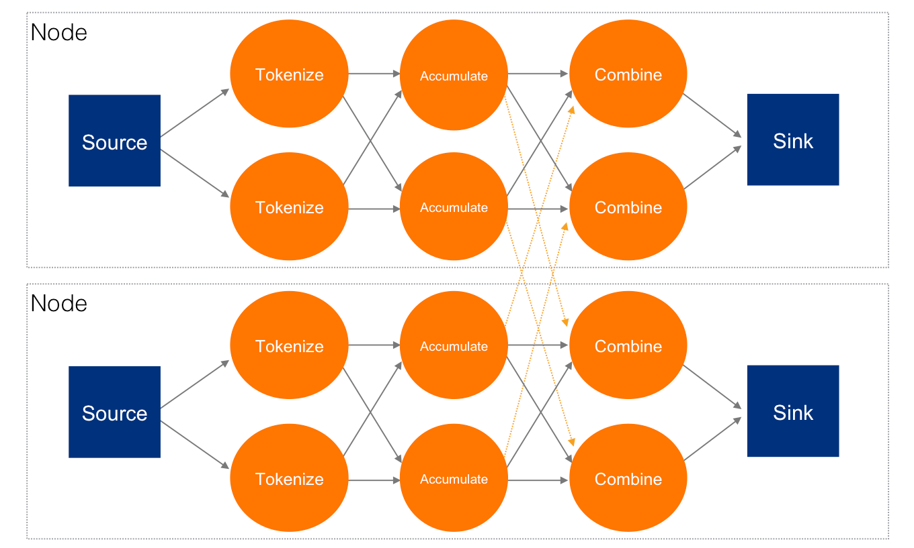
</div>
</div>
</div>
<div class="sect2">
<h3 id="unbounded-stream-processing"><a class="anchor" href="#unbounded-stream-processing"></a><a class="link" href="#unbounded-stream-processing">7.2. Unbounded Stream Processing</a></h3>
<div class="paragraph">
<p>So far we&#8217;ve worked with a bounded (finite) stream processing task.
In general, you provide Jet with one or more pre-existing datasets and
order it to mine them for interesting information. The most important
workhorse in this area is the "join, group and aggregate" operation: you
define a classifying function that computes a grouping key for each of
the datasets and an aggregate operation that will be performed on all
the items in each group, yielding one result item per distinct key. Jet
can apply the same operation on unbounded data streams as well.</p>
</div>
<div class="sect3">
<h4 id="the-importance-of-right-now"><a class="anchor" href="#the-importance-of-right-now"></a><a class="link" href="#the-importance-of-right-now">7.2.1. The Importance of &#8220;Right Now&#8221;</a></h4>
<div class="paragraph">
<p>In batch jobs the data we process represents a point-in-time snapshot of
our state of knowledge (for example, warehouse inventory where
individual data items represent items on stock). We can recapitulate
each business day by setting up regular snapshots and batch jobs.
However, there is more value hiding in the freshest data &mdash; our
business can win by reacting to minute-old or even second-old updates.
To get there we must make a shift from the finite to the infinite: from
the snapshot to a continuous influx of events that update our state of
knowledge. For example, an event could pop up in our stream every time
an item is checked in or out of the warehouse.</p>
</div>
<div class="paragraph">
<p>A single word that captures the above story is <em>latency</em>: we want our
system to minimize the latency from observing an event to acting upon
it.</p>
</div>
</div>
<div class="sect3">
<h4 id="windowing"><a class="anchor" href="#windowing"></a><a class="link" href="#windowing">7.2.2. Windowing</a></h4>
<div class="paragraph">
<p>In an unbounded stream, the dimension of time is always there.  Consider
a batch job: it may process a dataset labeled &#8220;Wednesday&#8221;, but the
computation itself doesn&#8217;t have to know this. Its results will be
understood from the outside to be &#8220;about Wednesday&#8221;. An endless stream,
on the other hand, delivers information about the reality as it is
unfolding, in near-real time, and the computation itself must deal with
time explicitly.</p>
</div>
<div class="paragraph">
<p>Another point: in a batch it is obvious when to stop aggregating and
emit the results: when we have exhausted the whole dataset. However,
with unbounded streams we need a policy on how to select bounded chunks
whose aggregate results we are interested in. This is called
<em>windowing</em>. We imagine the window as a time interval laid over the time
axis. A given window contains only the events that belong to that
interval.</p>
</div>
<div class="paragraph">
<p>A very basic type of window is the <em>tumbling window</em>, which can be
imagined to advance by tumbling over each time. There is no overlap
between the successive positions of the window. In other words, it
splits the time-series data into batches delimited by points on the time
axis. The result of this is very similar to running a sequence of batch
jobs, one per time interval.</p>
</div>
<div class="paragraph">
<p>A more useful and powerful policy is the <em>sliding window</em>: instead of
splitting the data at fixed boundaries, it lets it roll in
incrementally, new data gradually displacing the old. The window
(pseudo)continuously slides along the time axis.</p>
</div>
<div class="paragraph">
<p>Another popular policy is called the <em>session window</em> and it&#8217;s used to
detect bursts of activity by correlating events bunched together on the
time axis. In an analogy to a user&#8217;s session with a web application,
the session window &#8220;closes&#8221; when the specified session timeout elapses
with no further events.</p>
</div>
</div>
<div class="sect3">
<h4 id="time-ordering"><a class="anchor" href="#time-ordering"></a><a class="link" href="#time-ordering">7.2.3. Time Ordering and the Watermark</a></h4>
<div class="paragraph">
<p>Usually the time of observing an event is explicitly written in a field
of the stream item. There is no guarantee that items will occur in the
stream ordered by the value of that field; in fact in many cases it is
certain that they won&#8217;t. Consider events gathered from users of a mobile
app: for all kinds of reasons the items will arrive to our datacenter
out of order, even with significant delays due to connectivity issues.</p>
</div>
<div class="paragraph">
<p>This disorder in the event stream makes it more difficult to formally
specify a rule that tells us at which point all the data for a given
window has been gathered, allowing us to emit the aggregated result.</p>
</div>
<div class="paragraph">
<p>To approach these challenges we use the concept of the
<a href="http://docs.hazelcast.org/docs/jet/latest-dev/javadoc/com/hazelcast/jet/core/Watermark.html"><em>watermark</em></a>.
It is a timestamped item Jet inserts into the stream that says "from
this point on there will be no more items with timestamp less than
this". Unfortunately, we almost never know for sure when such a
statement becomes true and there is always a chance some events will
arrive even later. If we do observe such an offending item, we must
categorize it as &#8220;too late&#8221; and just filter it out.</p>
</div>
<div class="paragraph">
<p>Note the tension in defining the &#8220;perfect&#8221; watermark for a given use
case: it is bad both the more we wait and the less we wait to emit a
given watermark. The more we wait, the higher the latency of getting the
results of the computation; the less we wait, the worse their accuracy
due to missed events.</p>
</div>
<div class="paragraph">
<p>For these reasons Jet cannot determine the watermark on its own, you
must decide how much disorder to accept (and expect).</p>
</div>
</div>
</div>
<div class="sect2">
<h3 id="sliding-and-tumbling-window"><a class="anchor" href="#sliding-and-tumbling-window"></a><a class="link" href="#sliding-and-tumbling-window">7.3. Sliding and Tumbling Window</a></h3>
<div class="paragraph">
<p>Many quantities, like &#8220;the current rate of change of a price&#8221; require
you to aggregate your data over some time period. This is what makes the
sliding window so important: it tracks the value of such a quantity in
real time.</p>
</div>
<div class="paragraph">
<p>Calculating a single sliding window result can be quite computationally
intensive, but we also expect it to slide smoothly and give a new result
often, even many times per second. This is why we gave special attention
to optimizing this computation.</p>
</div>
<div class="paragraph">
<p>We optimize especially heavily for those aggregate operations that have
a cheap way of combining partial results and even more so for those
which can cheaply undo the combining. For cheap combining you have to
express your operation in terms of a commutative and associative (CA for
short) function; to undo a combine you need the notion of &#8220;negating&#8221; an
argument to the function. A great many operations can be expressed
through CA functions: average, variance, standard deviation and linear
regression are some examples. All of these also support the undoing
(which we call <em>deduct</em>). The computation of extreme values (min/max) is
an example that has CA, but no good notion of negation and thus doesn&#8217;t
support deducting.</p>
</div>
<div class="paragraph">
<p>This is the way we leverage the above properties: our sliding window
actually &#8220;hops&#8221; in fixed-size steps. The length of the window is an
integer multiple of the step size. Under such a definition, the
<em>tumbling</em> window becomes just a special case with one step per window.</p>
</div>
<div class="paragraph">
<p>This allows us to divide the timestamp axis into <em>frames</em> of equal
length and assign each event to its frame. Instead of keeping the event
object, we immediately pass it to the aggregate operation&#8217;s <em>accumulate</em>
primitive. To compute a sliding window, we take all the frames covered
by it and combine them. Finally, to compute the next window, we just
<em>deduct</em> the trailing frame and <em>combine</em> the leading frame into the
existing result.</p>
</div>
<div class="paragraph">
<p>Even without <em>deduct</em> the above process is much cheaper than the most
naïve approach where you&#8217;d keep all data and recompute everything from
scratch each time. After accumulating an item just once, the rest of the
process has fixed cost regardless of input size. With <em>deduct</em>, the
fixed cost approaches zero.</p>
</div>
<div class="sect3">
<h4 id="example-30-second-window-sliding-by-10-seconds"><a class="anchor" href="#example-30-second-window-sliding-by-10-seconds"></a><a class="link" href="#example-30-second-window-sliding-by-10-seconds">7.3.1. Example: 30-second Window Sliding by 10 Seconds</a></h4>
<div class="paragraph">
<p>We&#8217;ll now illustrate the above story with a specific example: we&#8217;ll
construct a 30-second window which slides by 10 seconds (i.e., three
steps per window). The aggregate operation is to simply count the number
of events. In the diagrams we label the events as <em>minutes:seconds</em>.
This is the outline of the process:</p>
</div>
<div class="olist arabic">
<ol class="arabic">
<li>
<p>Throw each event into its &#8220;bucket&#8221; (the frame whose time interval it
belongs to).</p>
</li>
<li>
<p>Instead of keeping the items in the frame, just keep the item count.</p>
</li>
<li>
<p>Combine the frames into three different positions of the sliding
window, yielding the final result: the number of events that occurred
within the window&#8217;s timespan.</p>
</li>
</ol>
</div>
<div class="imageblock" style="text-align: center">
<div class="content">
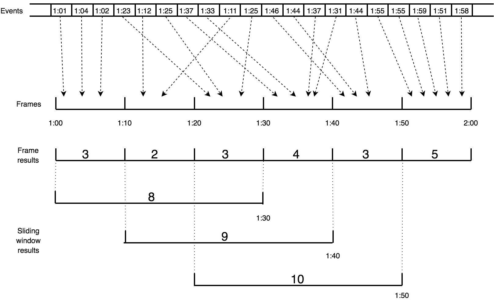
</div>
</div>
<div class="paragraph">
<p>This would be a useful interpretation of the results: "At the time 1:30,
the 30-second running average was 8/30 = 0.27 events per second. Over
the next 20 seconds it increased to 10/30 = 0.33 events per second."</p>
</div>
<div class="paragraph">
<p>Keep in mind that the whole diagram represents what happens on just one
cluster member and for just one grouping key. The same process is going
on simultaneously for all the keys on all the members.</p>
</div>
</div>
<div class="sect3">
<h4 id="two-stage-aggregation"><a class="anchor" href="#two-stage-aggregation"></a><a class="link" href="#two-stage-aggregation">7.3.2. Two-stage aggregation</a></h4>
<div class="paragraph">
<p>The concept of frame combining helps us implement two-stage aggregation
as well. In the first stage the individual members come up with their
partial results by frame and send them over a distributed edge to the
second stage, which combines the frames with the same timestamp. After
having combined all the partial frames from members, it combines the
results along the event time axis into the sliding window.</p>
</div>
<div class="imageblock" style="text-align: center">
<div class="content">

</div>
</div>
</div>
</div>
<div class="sect2">
<h3 id="session-window"><a class="anchor" href="#session-window"></a><a class="link" href="#session-window">7.4. Session Window</a></h3>
<div class="paragraph">
<p>In the abstract sense, the session window is a quite intuitive concept:
it simply captures a burst of events. If no new events occur within the
configured session timeout, the window closes. However, because the Jet
processor encounters events out of their original order, this kind of
window becomes quite tricky to compute.</p>
</div>
<div class="paragraph">
<p>The way Jet computes the session windows is easiest to explain in terms
of the <em>event interval</em>: the range
<code>[eventTimestamp, eventTimestamp + sessionTimeout]</code>.
Initially an event causes a new session window to be created, covering
exactly the event interval.</p>
</div>
<div class="imageblock" style="text-align: center">
<div class="content">
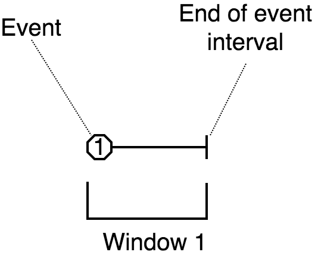
</div>
</div>
<div class="paragraph">
<p>A following event under the same key belongs to this window iff its
interval overlaps it. The window is extended to cover the entire
interval of the new event.</p>
</div>
<div class="imageblock" style="text-align: center">
<div class="content">

</div>
</div>
<div class="paragraph">
<p>If the event intervals don&#8217;t overlap, Jet creates new session window for
the new event.</p>
</div>
<div class="imageblock" style="text-align: center">
<div class="content">

</div>
</div>
<div class="paragraph">
<p>An event may happen to belong to two existing windows if its interval
bridges the gap between them; in that case they are combined into one.</p>
</div>
<div class="imageblock" style="text-align: center">
<div class="content">

</div>
</div>
<div class="paragraph">
<p>Once the watermark has passed the closing time of a session window, Jet
can close it and emit the result of its aggregation.</p>
</div>
</div>
<div class="sect2">
<h3 id="fault-tolerance-and-processing-guarantees"><a class="anchor" href="#fault-tolerance-and-processing-guarantees"></a><a class="link" href="#fault-tolerance-and-processing-guarantees">7.5. Fault Tolerance and Processing Guarantees</a></h3>
<div class="paragraph">
<p>One less-than-obvious consequence of stepping up from finite to infinite
streams is the difficulty of forever maintaining the continuity of the
output, even in the face of changing cluster topology. A Jet node may
leave the cluster due to an internal error, loss of networking, or
deliberate shutdown for maintenance. This will cause the computation job
to be suspended. Except for the obvious problem of new data pouring in
while we&#8217;re down, we have a much more fiddly issue of restarting the
computation in a differently laid-out cluster exactly where it left off
and neither miss anything nor process it twice. The technical term for
this is the "exactly-once processing guarantee".</p>
</div>
<div class="paragraph">
<p>Jet achieves fault tolerance in streaming jobs by making a snapshot of
the internal processing state at regular intervals. If a member of the
cluster fails while a job is running, Jet will detect this and restart
the job on the new cluster topology. It will restore its internal state
from the snapshot and tell the source to start sending data from the
last &#8220;committed&#8221; position (where the snapshot was taken). The data
source must have built-in support to replay the data from the given
checkpoint. The sink must either support transactions or be
<em>idempotent</em>, tolerating duplicate submission of data.</p>
</div>
<div class="paragraph">
<p>In a Jet cluster, one member is the <em>coordinator</em>. It tells other
members what to do and they report to it any status changes. The
coordinator may fail and the cluster will automatically re-elect another
one. If any other member fails, the coordinator restarts the job on the
remaining members.</p>
</div>
</div>
<div class="sect2">
<h3 id="jet-execution-model"><a class="anchor" href="#jet-execution-model"></a><a class="link" href="#jet-execution-model">7.6. Jet&#8217;s Execution Model</a></h3>
<div class="paragraph">
<p>At the heart of Jet is the
<a href="https://github.com/hazelcast/hazelcast-jet/blob/master/hazelcast-jet-core/src/main/java/com/hazelcast/jet/impl/execution/TaskletExecutionService.java"><code>TaskletExecutionService</code></a>.
It manages the threads that perform all the computation in a Jet job.
Although this class is not formally a part of Jet&#8217;s public API,
understanding how it schedules code for execution is essential if you
want to implement a cooperative processor.</p>
</div>
<div class="sect3">
<h4 id="cooperative-multithreading"><a class="anchor" href="#cooperative-multithreading"></a><a class="link" href="#cooperative-multithreading">7.6.1. Cooperative Multithreading</a></h4>
<div class="paragraph">
<p>Cooperative multithreading is one of the core features of Jet and can be
roughly compared to
<a href="https://en.wikipedia.org/wiki/Green_threads">green threads</a>.
It is purely a library-level feature and does not involve any low-level
system or JVM tricks; the <code>Processor</code> API is simply designed in such a
way that the processor can do a small amount of work each time it is
invoked, then yield back to the Jet engine. The engine manages a thread
pool of fixed size and on each thread, the processors take their turn in
a round-robin fashion.</p>
</div>
<div class="paragraph">
<p>The point of cooperative multithreading is better performance. Several
factors contribute to this:</p>
</div>
<div class="ulist">
<ul>
<li>
<p>The overhead of context switching between processors is much lower
since the operating system&#8217;s thread scheduler is not involved.</p>
</li>
<li>
<p>The worker thread driving the processors stays on the same core for
longer periods, preserving the CPU cache lines.</p>
</li>
<li>
<p>The worker thread has direct knowledge of the ability of a processor
to make progress (by inspecting its input/output buffers).</p>
</li>
</ul>
</div>
</div>
<div class="sect3">
<h4 id="tasklet"><a class="anchor" href="#tasklet"></a><a class="link" href="#tasklet">7.6.2. Tasklet</a></h4>
<div class="paragraph">
<p>The execution service doesn&#8217;t deal with processors directly; instead it
deals with <em>tasklets</em>.
:jet-master:/impl/execution/Tasklet.java[<code>Tasklet</code>]
is a very simple functional interface derived from the standard Java
<code>Callable&lt;ProgressState&gt;</code>. The execution service manages a pool of
worker threads, each being responsible for a list of tasklets. The
worker thread simply invokes the <code>call()</code> methods on its tasklets in a
round-robin fashion. The method&#8217;s return value tells whether the tasklet
made progress and whether it is now done.</p>
</div>
<div class="paragraph">
<p>The most important tasklet is the one driving a processor
(<code>ProcessorTasklet</code>); there are a few others that deal with network
sending/receiving and taking snapshots.</p>
</div>
</div>
<div class="sect3">
<h4 id="work-stealing"><a class="anchor" href="#work-stealing"></a><a class="link" href="#work-stealing">7.6.3. Work Stealing</a></h4>
<div class="paragraph">
<p>When a tasklet is done, its worker will inspect all the other workers'
tasklet lists to see if any of them has a longer tasklet list than its
own. If it finds such a worker, it will &#8220;steal&#8221; one of its tasklets to
even out the load per thread.</p>
</div>
</div>
<div class="sect3">
<h4 id="exponential-backoff"><a class="anchor" href="#exponential-backoff"></a><a class="link" href="#exponential-backoff">7.6.4. Exponential Backoff</a></h4>
<div class="paragraph">
<p>If none of the worker&#8217;s tasklets report having made progress, the worker
will go to a short sleep. If this happens again after it wakes up, it
will sleep for twice as long. Once it reaches 1 ms sleep time, it will
continue retrying once per millisecond to see if any tasklets can make
progress.</p>
</div>
</div>
<div class="sect3">
<h4 id="processor-tasklet"><a class="anchor" href="#processor-tasklet"></a><a class="link" href="#processor-tasklet">7.6.5. ProcessorTasklet</a></h4>
<div class="paragraph">
<p>:jet-core:/impl/execution/ProcessorTasklet.java[<code>ProcessorTasklet</code>]
is the one that drives a processor. It manages its inbox, outbox,
inbound/outbound concurrent queues, and tracks the current processor
state so it knows which of its callback methods to call.</p>
</div>
<div class="paragraph">
<p>During each <code>tasklet.call()</code>, <code>ProcessorTasklet</code> makes one call into
one of its processor&#8217;s callbacks. It determines the processor&#8217;s progress
status and reports it to the execution service.</p>
</div>
</div>
<div class="sect3">
<h4 id="non-cooperative-processor"><a class="anchor" href="#non-cooperative-processor"></a><a class="link" href="#non-cooperative-processor">7.6.6. Non-Cooperative Processor</a></h4>
<div class="paragraph">
<p>If a processor declares itself as non-cooperative, the execution service
will start a dedicated Java thread for its tasklet to run on.</p>
</div>
<div class="paragraph">
<p>Even if it&#8217;s non-cooperative, the processor&#8217;s callback methods must
still make sure they don&#8217;t run for longer than a second or so at a time.
Otherwise the tasklet will never be able to initiate a snapshot on the
processor.</p>
</div>
</div>
</div>
<div class="sect2">
<h3 id="running-a-jet-job"><a class="anchor" href="#running-a-jet-job"></a><a class="link" href="#running-a-jet-job">7.7. What Happens When you Submit a Job</a></h3>
<div class="paragraph">
<p>When you submit a <code>Job</code> to it, Jet replicates the DAG to the whole Jet
cluster and executes a copy of it on each member.</p>
</div>
<div class="imageblock">
<div class="content">

</div>
</div>
<div class="paragraph">
<p>Jet executes the job on a user-configurable number of threads which use
work stealing to balance the amount of work being done on each thread.
Each worker thread has a list of tasklets it is in charge of and as
tasklets complete at different rates, the remaining ones are moved
between workers to keep the load balanced.</p>
</div>
<div class="paragraph">
<p>Each instance of a <code>Processor</code> is wrapped in one tasklet which the
execution service repeatedly executes until it is done. A vertex with a
parallelism of 8 running on 4 members would have a total of 32 tasklets
running at the same time. Each member has the same number of tasklets
running.</p>
</div>
<div class="imageblock">
<div class="content">
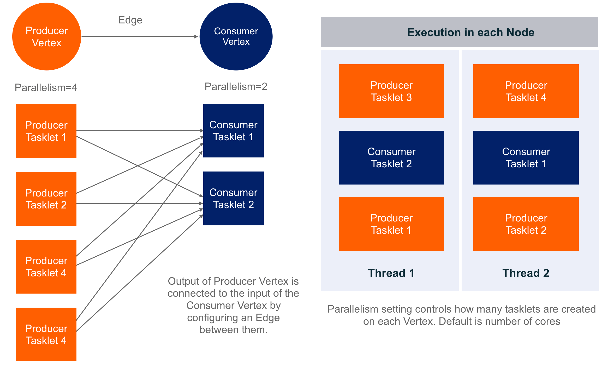
</div>
</div>
<div class="paragraph">
<p>When you make a request to execute a Job, the corresponding DAG and
additional resources are deployed to the Jet cluster. Jet builds an
execution plan for the DAG on each member, which creates the associated
tasklets for each Vertex and connects them to their inputs and outputs.</p>
</div>
<div class="paragraph">
<p>Jet uses Single Producer/Single Consumer ringbuffers to transfer the
data between processors on the same member. They are data-type agnostic,
so any data type can be used to transfer the data between vertices.</p>
</div>
<div class="paragraph">
<p>Ringbuffers, being bounded queues, introduce natural backpressure into
the system; if a consumer’s ringbuffer is full, the producer will have
to back off until it can enqueue the next item. When data is sent to
another member over the network, there is no natural backpressure, so
Jet uses explicit signaling in the form of adaptive receive windows.</p>
</div>
</div>
<div class="sect2">
<h3 id="distributed-snapshot"><a class="anchor" href="#distributed-snapshot"></a><a class="link" href="#distributed-snapshot">7.8. Distributed Snapshot</a></h3>
<div class="paragraph">
<p>The technique Jet uses to achieve
<a href="#fault-tolerance-and-processing-guarantees">fault tolerance</a>
is called a &#8220;distributed snapshot&#8221;, described in a
<a href="https://www.microsoft.com/en-us/research/wp-content/uploads/2016/12/Determining-Global-States-of-a-Distributed-System.pdf">paper by Chandy and Lamport</a>.
At regular intervals, Jet raises a global flag that says "it&#8217;s time for
another snapshot". All processors belonging to source vertices observe
the flag, create a checkpoint on their source, and emit a barrier item
to the downstream processors and resumes processing.</p>
</div>
<div class="paragraph">
<p>As the barrier item reaches a processor, it stops what it&#8217;s doing and
emits its state to the snapshot storage. Once complete, it forwards the
barrier item to its downstream processors.</p>
</div>
<div class="paragraph">
<p>Due to parallelism, in most cases a processor receives data from more
than one upstream processor. It will receive the barrier item from each
of them at separate times, but it must start taking a snapshot at a
single point in time. There are two approaches it can take, as explained
below.</p>
</div>
<div class="sect3">
<h4 id="exactly-once-snapshotting"><a class="anchor" href="#exactly-once-snapshotting"></a><a class="link" href="#exactly-once-snapshotting">7.8.1. Exactly-Once Snapshotting</a></h4>
<div class="paragraph">
<p>With <em>exactly-once</em> configured, as soon as the processor gets a barrier
item in any input stream (from any upstream processor), it must stop
consuming it until it gets the same barrier item in all the streams:</p>
</div>
<div class="imageblock" style="text-align: center">
<div class="content">
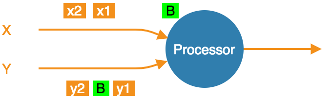
</div>
</div>
<div class="olist arabic">
<ol class="arabic">
<li>
<p>At the barrier in stream X, but not Y. Must not accept any more X
items.</p>
<div class="imageblock" style="text-align: center">
<div class="content">
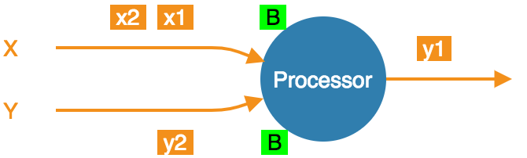
</div>
</div>
</li>
<li>
<p>At the barrier in both streams, taking a snapshot.</p>
<div class="imageblock" style="text-align: center">
<div class="content">

</div>
</div>
</li>
<li>
<p>Snapshot done, barrier forwarded. Can resume consuming all streams.</p>
</li>
</ol>
</div>
</div>
<div class="sect3">
<h4 id="at-least-once-snapshotting"><a class="anchor" href="#at-least-once-snapshotting"></a><a class="link" href="#at-least-once-snapshotting">7.8.2. At-Least-Once Snapshotting</a></h4>
<div class="paragraph">
<p>With <em>at-least-once</em> configured, the processor can keep consuming all
the streams until it gets all the barriers, at which point it will stop
to take the snapshot:</p>
</div>
<div class="imageblock" style="text-align: center">
<div class="content">

</div>
</div>
<div class="olist arabic">
<ol class="arabic">
<li>
<p>At the barrier in stream X, but not Y. Carry on consuming all
streams.</p>
<div class="imageblock" style="text-align: center">
<div class="content">
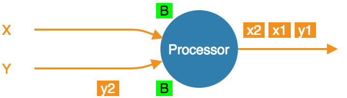
</div>
</div>
</li>
<li>
<p>At the barrier in both streams, already consumed <code>x1</code> and <code>x2</code>.
Taking a snapshot.</p>
<div class="imageblock" style="text-align: center">
<div class="content">
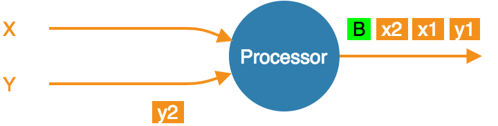
</div>
</div>
</li>
<li>
<p>Snapshot done, barrier forwarded.</p>
</li>
</ol>
</div>
<div class="paragraph">
<p>Even though <code>x1</code> and <code>x2</code> occur after the barrier, the processor
consumed and processed them, updating its state accordingly. If the
computation job stops and restarts, this state will be restored from the
snapshot and then the source will replay <code>x1</code> and <code>x2</code>. The processor
will think it got two new items.</p>
</div>
</div>
</div>
<div class="sect2">
<h3 id="stream-skew"><a class="anchor" href="#stream-skew"></a><a class="link" href="#stream-skew">7.9. Stream Skew</a></h3>
<div class="paragraph">
<p>We <a href="#time-ordering">explained</a> how we use the concept of watermark to
impose order onto a disordered data stream. However, items arriving out
of order aren&#8217;t our only challenge; modern stream sources like Kafka are
partitioned and distributed so &#8220;the stream&#8221; is actually a set of
independent substreams, moving on in parallel. Substantial time
difference may arise between events being processed on each one, but our
system must produce coherent output as if there was only one stream. We
meet this challenge by coalescing watermarks: as the data travels over a
partitioned/distributed edge, we make sure the downstream processor
observes the correct watermark value, which is the least of watermarks
received from the contributing substreams.</p>
</div>
<div class="sect3">
<h4 id="rules-of-watermark-propagation"><a class="anchor" href="#rules-of-watermark-propagation"></a><a class="link" href="#rules-of-watermark-propagation">7.9.1. Rules of Watermark Propagation</a></h4>
<div class="paragraph">
<p>Watermark objects are sent interleaved with other stream items, but are
handled specially:</p>
</div>
<div class="ulist">
<ul>
<li>
<p>The value of the watermark a processor emits must be strictly
increasing. Jet will throw an exception if it detects a non-increasing
watermark.</p>
</li>
<li>
<p>When a processor receives and handles a watermark, it is automatically
emitted to the outbox. Therefore there should be only one processor
emitting watermarks in the pipeline.</p>
</li>
<li>
<p>The watermark item is always broadcast, regardless of the edge type.
This means that all N upstream processors send their watermark to all
M downstream processors.</p>
</li>
<li>
<p>The processor will observe only the highest watermark received from
all upstream processors and from all upstream edges. This is called
<em>watermark coalescing</em>.</p>
</li>
</ul>
</div>
<div class="paragraph">
<p>Jet&#8217;s internal class
<a href="https://github.com/hazelcast/hazelcast-jet/blob/master/hazelcast-jet-core/src/main/java/com/hazelcast/jet/impl/execution/WatermarkCoalescer.java"><code>WatermarkCoalescer</code></a>
 manages watermarks received from multiple inputs. As it receives
watermark items from them, its duty is to decide when to forward the
watermark downstream. This happens at two levels:
* between multiple queues backing single edge
* between multiple input edges to single processor</p>
</div>
</div>
<div class="sect3">
<h4 id="idle-inputs"><a class="anchor" href="#idle-inputs"></a><a class="link" href="#idle-inputs">7.9.2. Idle inputs</a></h4>
<div class="paragraph">
<p>A special object called <em>idle message</em> can be emitted from source
processor when the processor sees no events for configured <em>idle
timeout</em>. This can happen in real life when some external partitions
have no events while others do.</p>
</div>
<div class="paragraph">
<p>When an <em>idle message</em> is received from an input, that input will be
excluded from watermark coalescing. This means that we will not wait to
receive watermark from idle input. It will cause that other active
inputs can be processed without any delay. When idle timeout is disabled
and some processor doesn&#8217;t emit any watermarks (because it sees no
events), the processing will stall indefinitely (unless
<a href="#max-watermark-retention">maximum retention</a>
is configured).</p>
</div>
</div>
</div>
<div class="sect2">
<h3 id="pitfalls-alo"><a class="anchor" href="#pitfalls-alo"></a><a class="link" href="#pitfalls-alo">7.10. The Pitfalls of At-Least-Once Processing</a></h3>
<div class="paragraph">
<p>In some cases <em>at-least-once</em> semantics can have consequences of quite
an unexpected magnitude, as we discuss next.</p>
</div>
<div class="sect3">
<h4 id="apparent-data-loss"><a class="anchor" href="#apparent-data-loss"></a><a class="link" href="#apparent-data-loss">7.10.1. Apparent Data Loss</a></h4>
<div class="paragraph">
<p>Imagine a very simple kind of processor: it matches up the items that
belong to a <em>pair</em> based on some rule. If it receives item A first, it
remembers it. Later on, when it receives item B, it emits that fact
to its outbound edge and forgets about the two items. It may also first
receive B and wait for A.</p>
</div>
<div class="paragraph">
<p>Now imagine this sequence: <code>A &#8594; BARRIER &#8594; B</code>. In at-least-once the
processor may observe both A and B, emit its output, and forget about
them, all before taking the snapshot. After the restart, item B will be
replayed because it occurred after the last barrier, but item A won&#8217;t.
Now the processor is stuck forever in a state where it&#8217;s expecting A and
has no idea it already got it and emitted that fact.</p>
</div>
<div class="paragraph">
<p>Problems similar to this may happen with any state the processor keeps
until it has got enough information to emit the results and then forgets
it. By the time it takes a snapshot, the post-barrier items will have
caused it to forget facts about some pre-barrier items. After a restart
it will behave as though it has never observed those pre-barrier items,
resulting in behavior equivalent to data loss.</p>
</div>
</div>
<div class="sect3">
<h4 id="non-monotonic-watermark"><a class="anchor" href="#non-monotonic-watermark"></a><a class="link" href="#non-monotonic-watermark">7.10.2. Non-Monotonic Watermark</a></h4>
<div class="paragraph">
<p>One special case of the above story concerns watermark items. Thanks to
watermark coalescing, processors are typically implemented against the
invariant that the watermark value always increases. However, in
<em>at-least-once</em> the post-barrier watermark items will advance the
processor&#8217;s watermark value. After the job restarts and the state gets
restored to the snapshotted point, the watermark will appear to have
gone back, breaking the invariant. This can again lead to apparent data
loss.</p>
</div>
</div>
</div>
</div>
</div>
<div class="sect1">
<h2 id="expert-zone"><a class="anchor" href="#expert-zone"></a><a class="link" href="#expert-zone">8. Expert Zone&#8201;&#8212;&#8201;The Core API</a></h2>
<div class="sectionbody">
<div class="paragraph">
<p>This section covers the Core API, Jet&#8217;s low-level API that directly
exposes the computation engine&#8217;s raw features. If you are looking for
the API to build your computation pipeline, please refer to the
<a href="#pipeline-api">Pipeline API</a> section.</p>
</div>
<div class="paragraph">
<p>Creating a Core API DAG requires expert-level familiarity with concepts
like partitioning schemes, vertex parallelism, distributed vs. local
edges, etc. Furthermore, this API offers no static type safety and it
is very easy to create a DAG that fails with a <code>ClassCastException</code> when
executed. Even though it is possible, this API is not intended to create
DAGs by hand; it offers the infrastructure on top of which to build
high-level DSLs and APIs that describe computation jobs.</p>
</div>
<div class="paragraph">
<p>Implementing a Core API <code>Processor</code> requires even greater expertise than
building a DAG. Among other things, you have to be acquainted in detail
with Jet&#8217;s concept of cooperative multithreading. While we provide as
much convenience as we can for extending Jet with your custom
processors, we cannot remove the dangers of using these facilities
improperly.</p>
</div>
<div class="sect2">
<h3 id="dag"><a class="anchor" href="#dag"></a><a class="link" href="#dag">8.1. DAG</a></h3>
<div class="paragraph">
<p>The DAG-building API is centered around the <a href="http://docs.hazelcast.org/docs/jet/latest-dev/javadoc/com/hazelcast/jet/core/DAG.html"><code>DAG</code></a>
class. This is a pure data class and can be instantiated on its own,
without a Jet instance. This makes it simple to separate the
job-describing code from the code that manages the lifecycle of Jet
instances.</p>
</div>
<div class="paragraph">
<p>You can "compile" a Jet pipeline into a <code>DAG</code>:</p>
</div>
<div class="listingblock">
<div class="content">
<pre class="CodeRay highlight"><code data-lang="java">DAG dag = pipeline.toDag();</code></pre>
</div>
</div>
<div class="paragraph">
<p>Studying these DAGs may be a useful aid while learning the Core API.</p>
</div>
<div class="paragraph">
<p>To start building a DAG from scratch, write</p>
</div>
<div class="listingblock">
<div class="content">
<pre class="CodeRay highlight"><code data-lang="java">DAG dag = <span class="keyword">new</span> DAG();</code></pre>
</div>
</div>
<div class="paragraph">
<p>A good practice is to structure the DAG-building code into the following
sections:</p>
</div>
<div class="olist arabic">
<ol class="arabic">
<li>
<p>Create all the vertices.</p>
</li>
<li>
<p>Configure the local parallelism of vertices.</p>
</li>
<li>
<p>Create the edges.</p>
</li>
</ol>
</div>
<div class="paragraph">
<p>Example:</p>
</div>
<div class="listingblock">
<div class="content">
<pre class="CodeRay highlight"><code data-lang="java"><i class="conum" data-value="1"></i><b>(1)</b>
Vertex source = dag.newVertex(<span class="string"><span class="delimiter">&quot;</span><span class="content">source</span><span class="delimiter">&quot;</span></span>,
        SourceProcessors.readFilesP(<span class="string"><span class="delimiter">&quot;</span><span class="content">.</span><span class="delimiter">&quot;</span></span>, UTF_8, <span class="string"><span class="delimiter">&quot;</span><span class="content">*</span><span class="delimiter">&quot;</span></span>, <span class="predefined-constant">false</span>, (file, line) -&gt; line)
);
Vertex transform = dag.newVertex(<span class="string"><span class="delimiter">&quot;</span><span class="content">transform</span><span class="delimiter">&quot;</span></span>, mapP(
        (<span class="predefined-type">String</span> line) -&gt; entry(line, line.length())
));
Vertex sink = dag.newVertex(<span class="string"><span class="delimiter">&quot;</span><span class="content">sink</span><span class="delimiter">&quot;</span></span>, SinkProcessors.writeMapP(<span class="string"><span class="delimiter">&quot;</span><span class="content">sinkMap</span><span class="delimiter">&quot;</span></span>));

<i class="conum" data-value="2"></i><b>(2)</b>
source.localParallelism(<span class="integer">1</span>);

<i class="conum" data-value="3"></i><b>(3)</b>
dag.edge(between(source, transform));
dag.edge(between(transform, sink));</code></pre>
</div>
</div>
<div class="colist arabic">
<table>
<tr>
<td><i class="conum" data-value="1"></i><b>1</b></td>
<td>Create the vertices</td>
</tr>
<tr>
<td><i class="conum" data-value="2"></i><b>2</b></td>
<td>Configure local parallelism</td>
</tr>
<tr>
<td><i class="conum" data-value="3"></i><b>3</b></td>
<td>Create the edges</td>
</tr>
</table>
</div>
<div class="sect3">
<h4 id="creating-a-vertex"><a class="anchor" href="#creating-a-vertex"></a><a class="link" href="#creating-a-vertex">8.1.1. Creating a Vertex</a></h4>
<div class="paragraph">
<p>The two mandatory elements of creating a vertex are its string
identifier and the supplier of processors. The latter can be provided in
three variants, differing in the degree of explicit control over the
lifecycle management of the processors. From simple to complex they are:</p>
</div>
<div class="olist arabic">
<ol class="arabic">
<li>
<p><a href="http://docs.hazelcast.org/docs/jet/latest-dev/javadoc/com/hazelcast/jet/function/DistributedSupplier.html"><code>DistributedSupplier&lt;Processor&gt;</code></a>
directly returns processor instances from its <code>get()</code> method. It is
expected to be stateless and return equivalent instances on each
call. It doesn&#8217;t provide any initialization or cleanup code.</p>
</li>
<li>
<p><a href="http://docs.hazelcast.org/docs/jet/latest-dev/javadoc/com/hazelcast/jet/core/ProcessorSupplier.html"><code>ProcessorSupplier</code></a>
returns in a single call all the processors that will run on a single
cluster member. It may specialize each instance, for example to
achieve local data partitioning. It is also in charge of the
member-local lifecycle (initialization and destruction).</p>
</li>
<li>
<p><strong><a href="http://docs.hazelcast.org/docs/jet/latest-dev/javadoc/com/hazelcast/jet/core/ProcessorMetaSupplier.html"><code>ProcessorMetaSupplier</code></a></strong>
returns in a single call an object that will be in charge of creating
all the processors for a vertex. Given a list of member addresses,
the object it returns is a <code>Function&lt;Address, ProcessorSupplier&gt;</code>
which will then be called with each of the addresses from the list to
retrieve the <code>ProcessorSupplier</code> specialized for the given member.</p>
</li>
</ol>
</div>
<div class="paragraph">
<p><code>ProcessorMetaSupplier</code> is the most fundamental facility. It is a
factory of <code>ProcessorSupplier</code> s. <code>DistributedSupplier&lt;Processor&gt;</code>
exists purely as convenience over <code>ProcessorSupplier</code> for the simplest
kinds of vertices.</p>
</div>
<div class="paragraph">
<p>You make the choice which of the three to use for a particular vertex
when you implement it. When you build a DAG from already implemented
vertices, you don&#8217;t have to care, or even know, which one it&#8217;s using.
You&#8217;ll call a factory method that returns one or the other and they will
integrate the same way into your <code>newVertex()</code> calls.</p>
</div>
</div>
<div class="sect3">
<h4 id="local-and-global-parallelism-of-vertex"><a class="anchor" href="#local-and-global-parallelism-of-vertex"></a><a class="link" href="#local-and-global-parallelism-of-vertex">8.1.2. Local and Global Parallelism of Vertex</a></h4>
<div class="paragraph">
<p>The vertex is implemented at runtime by one or more instances of
<code>Processor</code> on each member. Each vertex can specify how many of its
processors will run per cluster member using the <code>localParallelism</code>
property; every member will have the same number of processors. A new
<code>Vertex</code> instance has this property set to <code>-1</code>, which requests to use
the default value equal to the configured size of the cooperative thread
pool. The latter defaults to <code>Runtime.availableProcessors()</code> and is
configurable via
<a href="http://docs.hazelcast.org/docs/jet/latest-dev/javadoc/com/hazelcast/jet/config/InstanceConfig.html#setCooperativeThreadCount-int-"><code>InstanceConfig.setCooperativeThreadCount()</code></a>.</p>
</div>
<div class="paragraph">
<p>In most cases the only level of local parallelism that you&#8217;ll want to
explicitly configure is <code>1</code> for the cases where no parallelism is
desirable (e.g. on a source processor reading from a file).</p>
</div>
<div class="paragraph">
<p>The <strong>global parallelism</strong> of a vertex is the total number of its
processors running in the whole cluster, equal to local parallelism
multiplied by cluster size. It is especially relevant to the
distribution of partitions among processors. You should watch out for
and avoid the possibility that the global parallelism exceeds the number
of partitions because that would mean some processors get no
input/produce no output. This has severe consequences in a streaming job
with watermarks: the <a href="#max-watermark-retention">event skew</a> grows
without bound.</p>
</div>
</div>
<div class="sect3">
<h4 id="edge-original"><a class="anchor" href="#edge-original"></a><a class="link" href="#edge-original">8.1.3. Edge Ordinal</a></h4>
<div class="paragraph">
<p>An edge is connected to a vertex at a given <strong>ordinal</strong>, which
identifies it to the vertex and its processors. When a processor
receives an item, it knows which ordinal it came from. Things are
similar on the outbound side: the processor emits an item to a given
ordinal, but also has the option to emit the same item to all ordinals.
This is the most typical case and allows easy replication of a data
stream across several edges.</p>
</div>
<div class="paragraph">
<p>When you use the
<a href="http://docs.hazelcast.org/docs/jet/latest-dev/javadoc/com/hazelcast/jet/core/Edge.html#between-com.hazelcast.jet.core.Vertex-com.hazelcast.jet.core.Vertex-"><code>between(a, b)</code></a>
edge factory, the edge will be connected at ordinal 0 at both ends. When
you need a different ordinal, use the
<a href="http://docs.hazelcast.org/docs/jet/latest-dev/javadoc/com/hazelcast/jet/core/Edge.html#from-com.hazelcast.jet.core.Vertex-int-"><code>from(a, ord1).to(b, ord2)</code></a>
form. There must be no gaps in ordinal assignment, which means a vertex
will have inbound edges with ordinals 0..N and outbound edges with
ordinals 0..M.</p>
</div>
<div class="paragraph">
<p>This example shows the usage of <code>between()</code> and <code>from().to()</code> forms to
build a DAG with one source feeding two computational vertices:</p>
</div>
<div class="listingblock">
<div class="content">
<pre class="CodeRay highlight"><code data-lang="java">Vertex source = dag.newVertex(<span class="string"><span class="delimiter">&quot;</span><span class="content">source</span><span class="delimiter">&quot;</span></span>,
        SourceProcessors.readFilesP(<span class="string"><span class="delimiter">&quot;</span><span class="content">.</span><span class="delimiter">&quot;</span></span>, UTF_8, <span class="string"><span class="delimiter">&quot;</span><span class="content">*</span><span class="delimiter">&quot;</span></span>, <span class="predefined-constant">false</span>, (file, line) -&gt; line)
);
Vertex toUpper = dag.newVertex(<span class="string"><span class="delimiter">&quot;</span><span class="content">toUpper</span><span class="delimiter">&quot;</span></span>, mapP((<span class="predefined-type">String</span> in) -&gt; in.toUpperCase()));
Vertex toLower = dag.newVertex(<span class="string"><span class="delimiter">&quot;</span><span class="content">toLower</span><span class="delimiter">&quot;</span></span>, mapP((<span class="predefined-type">String</span> in) -&gt; in.toLowerCase()));

dag.edge(between(source, toUpper));
dag.edge(from(source, <span class="integer">1</span>).to(toLower));</code></pre>
</div>
</div>
</div>
<div class="sect3">
<h4 id="local-and-distributed-edge"><a class="anchor" href="#local-and-distributed-edge"></a><a class="link" href="#local-and-distributed-edge">8.1.4. Local and Distributed Edge</a></h4>
<div class="paragraph">
<p>A major choice to make in terms of routing the data coming out of a
processor is whether the candidate set of the target vertex&#8217;s processors
is unconstrained, encompassing all its processors across the cluster, or
constrained to just those running on the same cluster member. You
control this with the <code>distributed</code> property of the edge. By default the
edge is local and calling the <a href="http://docs.hazelcast.org/docs/jet/latest-dev/javadoc/com/hazelcast/jet/core/Edge.html#distributed--"><code>distributed()</code></a>
method removes this restriction.</p>
</div>
<div class="paragraph">
<p>You can minimize network traffic by employing local edges. They are
implemented with the most efficient kind of concurrent queue:
single-producer, single-consumer array-backed queue. It employs
wait-free algorithms on both sides and avoids even the latency of
<code>volatile</code> writes by using <code>lazySet</code>.</p>
</div>
<div class="paragraph">
<p>A good example of employing a local-distributed edge combo is two-stage
aggregation. Here&#8217;s how it looks on our <a href="#wordcount-dag-edges">Word
Count</a> example:</p>
</div>
<div class="listingblock">
<div class="content">
<pre class="CodeRay highlight"><code data-lang="java">dag.edge(between(tokenize, accumulate)
           .partitioned(wholeItem(), HASH_CODE))
   .edge(between(accumulate, combine)
           .distributed()
           .partitioned(entryKey()));</code></pre>
</div>
</div>
<div class="paragraph">
<p>Note that only the edge from <code>accumulate</code> to <code>combine</code> is distributed.</p>
</div>
</div>
<div class="sect3">
<h4 id="routing-policies"><a class="anchor" href="#routing-policies"></a><a class="link" href="#routing-policies">8.1.5. Routing Policies</a></h4>
<div class="paragraph">
<p>The <a href="http://docs.hazelcast.org/docs/jet/latest-dev/javadoc/com/hazelcast/jet/core/Edge.RoutingPolicy.html">routing policy</a>
decides which of the processors in the candidate set to route each
particular item to.</p>
</div>
<div class="sect4">
<h5 id="unicast"><a class="anchor" href="#unicast"></a><a class="link" href="#unicast">Unicast</a></h5>
<div class="paragraph">
<p>This is the default routing policy, the one you get when you write</p>
</div>
<div class="listingblock">
<div class="content">
<pre class="CodeRay highlight"><code data-lang="java">dag.edge(between(input, output));</code></pre>
</div>
</div>
<div class="paragraph">
<p>For each item it chooses a single destination processor with no further
restrictions on the choice. The only guarantee given by this policy is
that exactly one processor will receive the item, but Jet also takes
care to &#8220;spray&#8221; the items equally over all the reception candidates.</p>
</div>
<div class="paragraph">
<p>This choice makes sense when the data doesn&#8217;t have to be partitioned,
usually implying a downstream vertex which can compute the result based
on each item in isolation.</p>
</div>
</div>
<div class="sect4">
<h5 id="isolated"><a class="anchor" href="#isolated"></a><a class="link" href="#isolated">Isolated</a></h5>
<div class="paragraph">
<p>This is a more restricted kind of unicast policy: any given downstream
processor receives data from exactly one upstream processor. In some DAG
setups yoo may need to apply selective backpressure to individual
upstream processors, with this policy you can achieve it. If the
connected vertices have equal parallelism, an isolated edge creates a
one-to-one mapping between their processors, preserving the encounter
order and partitioning.</p>
</div>
<div class="paragraph">
<p>Activate this policy by calling <code>isolated()</code> on the edge:</p>
</div>
<div class="listingblock">
<div class="content">
<pre class="CodeRay highlight"><code data-lang="java">dag.edge(between(input, output).isolated());</code></pre>
</div>
</div>
</div>
<div class="sect4">
<h5 id="broadcast"><a class="anchor" href="#broadcast"></a><a class="link" href="#broadcast">Broadcast</a></h5>
<div class="paragraph">
<p>A broadcasting edge sends each item to all candidate receivers. Due to
the redundancy it creates, this kind of edge isn&#8217;t appropriate for the
main data stream. Its purpose is dispatching a small amount of data to
all the processors of a vertex, typically as a part of setting up before
processing the data stream. For this reason a broadcast edge is often
high-priority as well. For example, in a hash-join one vertex creates
the lookup hashtable and sends the same instance to all the processors
of the next vertex, the one that processes the main data stream.</p>
</div>
<div class="paragraph">
<p>Activate this policy by calling <code>broadcast()</code> on the edge:</p>
</div>
<div class="listingblock">
<div class="content">
<pre class="CodeRay highlight"><code data-lang="java">dag.edge(between(input, output).broadcast());</code></pre>
</div>
</div>
</div>
<div class="sect4">
<h5 id="partitioned"><a class="anchor" href="#partitioned"></a><a class="link" href="#partitioned">Partitioned</a></h5>
<div class="paragraph">
<p>A partitioned edge sends each item to the one processor responsible for
the item&#8217;s partition ID. On a distributed edge, this processor will be
unique across the whole cluster. On a local edge, each member will have
its own processor for each partition ID.</p>
</div>
<div class="paragraph">
<p>Jet automatically assigns partitions to processors during job
initialization. The number of partitions is fixed for the lifetime of a
cluster and you configure it on the IMDG level with the system property
<code>hazelcast.partition.count</code>. The number of partitions must not be less
than the highest global parallelism of any vertex, otherwise some
processors will get no partitions.</p>
</div>
<div class="paragraph">
<p>You can also refer to the
<a href="http://docs.hazelcast.org/docs/3.10.4/manual/html-single/index.html#data-partitioning">Hazelcast Reference Manual</a>
for more details on partitioning in Hazelcast IMDG.</p>
</div>
<div class="paragraph">
<p>This is the default algorithm to determine the partition ID of an item:</p>
</div>
<div class="olist arabic">
<ol class="arabic">
<li>
<p>Apply the key extractor function defined on the edge to retrieve the
partitioning key.</p>
</li>
<li>
<p>Serialize the partitioning key to a byte array using Hazelcast
serialization.</p>
</li>
<li>
<p>Apply Hazelcast&#8217;s standard <code>MurmurHash3</code>-based algorithm to get the
key&#8217;s hash value.</p>
</li>
<li>
<p>Partition ID is the hash value modulo the number of partitions.</p>
</li>
</ol>
</div>
<div class="paragraph">
<p>The above procedure is quite CPU-intensive, but has the crucial
property of giving repeatable results across all cluster members, which
may be running on disparate JVM implementations.</p>
</div>
<div class="paragraph">
<p>Another common choice is to use Java&#8217;s standard <code>Object.hashCode()</code>. It
is often significantly faster and it&#8217;s safe to use on a local edge.
On a distributed edge it is not a safe strategy in general because
<code>hashCode()</code> 's contract does not require repeatable results across
JVMs or even different instances of the same JVM version. If a given
class&#8217;s Javadoc explicitly specifies the hashing function it uses, then
its instances are safe to partition with <code>hashCode()</code>.</p>
</div>
<div class="paragraph">
<p>You can provide your own implementation of <code>Partitioner</code> to gain full
control over the partitioning strategy.</p>
</div>
<div class="paragraph">
<p>We use both partitioning strategies in the Word Count example:</p>
</div>
<div class="listingblock">
<div class="content">
<pre class="CodeRay highlight"><code data-lang="java">dag.edge(between(tokenize, accumulate)
        .partitioned(wholeItem(), Partitioner.HASH_CODE))
   .edge(between(accumulate, combine)
           .distributed()
           .partitioned(entryKey()));</code></pre>
</div>
</div>
<div class="paragraph">
<p>Note that the local-partitioned edge uses partitioning by hash code and
the distributed edge uses the default Hazelcast partitioning. It turns
out that in this particular example we could safely use the hash code
both times, but we leave it like this for didactic purposes. Since much
less data travels towards the combiner than towards the accumulator, the
performance of the whole job is hardly affected by this choice.</p>
</div>
</div>
<div class="sect4">
<h5 id="all-to-one"><a class="anchor" href="#all-to-one"></a><a class="link" href="#all-to-one">All-To-One</a></h5>
<div class="paragraph">
<p>The all-to-one routing policy is a special case of the <code>partitioned</code>
policy which assigns the same partition ID to all items. Jet randomly
chooses the partition while initializing the job. This policy makes
sense on a distributed edge when all the items from all the members must
go to the same member and the same processor instance running on it.
You should always set the local parallelism of the target vertex to 1,
otherwise there will be idle processors that never get any items.</p>
</div>
<div class="paragraph">
<p>On a local edge this policy doesn&#8217;t make sense since simply setting the
local parallelism of the target vertex to 1 constrains the local choice
to just one processor instance.</p>
</div>
<div class="paragraph">
<p>One case where the all-to-one routing is appropriate is global
aggregation (without grouping). A single processor must see all the
data. Here&#8217;s how we would set it between the first-stage and the
second-stage aggregating vertex:</p>
</div>
<div class="listingblock">
<div class="content">
<pre class="CodeRay highlight"><code data-lang="java">dag.edge(between(stage1, stage2).distributed().allToOne());</code></pre>
</div>
</div>
</div>
</div>
<div class="sect3">
<h4 id="priority"><a class="anchor" href="#priority"></a><a class="link" href="#priority">8.1.6. Priority</a></h4>
<div class="paragraph">
<p>By default the processor receives items from all inbound edges as they
arrive. However, there are important cases where an edge must be
consumed in full to make the processor ready to accept data from other
edges. A major example is a &#8220;hash join&#8221; which enriches the data stream
with data from a lookup table. This can be modeled as a join of two data
streams where the <em>enriching</em> stream contains the data for the lookup
table and must be consumed in full before consuming the stream to be
enriched.</p>
</div>
<div class="paragraph">
<p>The <code>priority</code> property controls the order of consuming the edges. Edges
are sorted by their priority number (ascending) and consumed in that
order. Edges with the same priority are consumed without particular
ordering (as the data arrives).</p>
</div>
<div class="paragraph">
<p>We can see a prioritized edge in action in the
<a href="https://github.com/hazelcast/hazelcast-jet-code-samples/blob/master/core-api/tf-idf-core-api/src/main/java/TfIdfCoreApi.java">TF-IDF</a>
example:</p>
</div>
<div class="listingblock">
<div class="content">
<pre class="CodeRay highlight"><code data-lang="java">dag.edge(between(stopwordSource, tokenize).broadcast().priority(-<span class="integer">1</span>));</code></pre>
</div>
</div>
<div class="paragraph">
<p>The <code>tokenize</code> vertex receives a set of <em>stopwords</em> and filters out
their occurrences from the input text. It must receive the entire set
before beginning to process the text.</p>
</div>
<div class="sect4">
<h5 id="a-fault-tolerance-caveat"><a class="anchor" href="#a-fault-tolerance-caveat"></a><a class="link" href="#a-fault-tolerance-caveat">A Fault Tolerance Caveat</a></h5>
<div class="paragraph">
<p>As explained in the section on the <a href="#snapshotting-callbacks">Processor</a>
API, Jet takes regular snapshots of processor state when fault tolerance
is enabled. A processor will get a special item in its input stream,
called a <em>barrier</em>. When working in the <em>exactly once</em> mode, as soon as
it receives it, it must stop pulling the data from that stream and
continue pulling from all other streams until it receives the same
barrier in all of them, and then emit its state to the snapshot storage.
This is in direct contradiction with the contract of edge
 prioritization: the processor is not allowed to consume any other
streams before having fully exhausted the prioritized ones.</p>
</div>
<div class="paragraph">
<p>For this reason Jet does not initiate a snapshot until all the
high-priority edges have been fully consumed.</p>
</div>
<div class="paragraph">
<p>Although strictly speaking this only applies to the <em>exactly once</em> mode,
Jet postpones taking the snapshot in <em>at least once</em> mode as well. Even
though the snapshot could begin early, it would still not be able to
complete until the processor has consumed all the prioritized edges,
started consuming non-prioritized ones, and received the barrier in all
of them. The result would be many more items processed twice after the
restart.</p>
</div>
</div>
</div>
<div class="sect3">
<h4 id="fine-tuning-edges"><a class="anchor" href="#fine-tuning-edges"></a><a class="link" href="#fine-tuning-edges">8.1.7. Fine-Tuning Edges</a></h4>
<div class="paragraph">
<p>Edges can be configured with an
<a href="http://docs.hazelcast.org/docs/jet/latest-dev/javadoc/com/hazelcast/jet/config/EdgeConfig.html"><code>EdgeConfig</code></a>
instance, which specifies additional fine-tuning parameters. For
example,</p>
</div>
<div class="listingblock">
<div class="content">
<pre class="CodeRay highlight"><code data-lang="java">dag.edge(between(tickerSource, generateTrades)
        .setConfig(<span class="keyword">new</span> EdgeConfig().setQueueSize(<span class="integer">512</span>)));</code></pre>
</div>
</div>
<div class="paragraph">
<p>Please refer to the Javadoc of
<a href="http://docs.hazelcast.org/docs/jet/latest-dev/javadoc/com/hazelcast/jet/config/EdgeConfig.html"><code>EdgeConfig</code></a>
for details.</p>
</div>
</div>
</div>
<div class="sect2">
<h3 id="how-to-build-a-dag"><a class="anchor" href="#how-to-build-a-dag"></a><a class="link" href="#how-to-build-a-dag">8.2. How to Build a DAG</a></h3>
<div class="sect3">
<h4 id="bounded-stream-batch-dag"><a class="anchor" href="#bounded-stream-batch-dag"></a><a class="link" href="#bounded-stream-batch-dag">8.2.1. Bounded Stream (Batch) DAG</a></h4>
<div class="paragraph">
<p>Let&#8217;s use the Core API to build the Word Count DAG, already described in
an <a href="#word-count-dag-model">earlier section</a>):</p>
</div>
<div class="imageblock" style="text-align: center">
<div class="content">
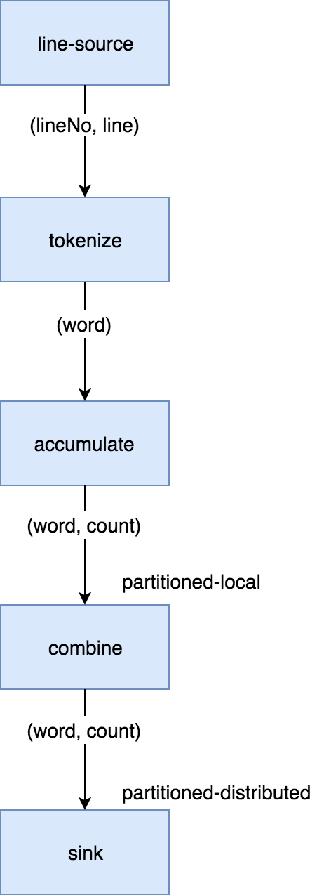
</div>
</div>
<div class="paragraph">
<p>We start by instantiating the DAG class and adding the source vertex:</p>
</div>
<div class="listingblock">
<div class="content">
<pre class="CodeRay highlight"><code data-lang="java">DAG dag = <span class="keyword">new</span> DAG();
Vertex source = dag.newVertex(<span class="string"><span class="delimiter">&quot;</span><span class="content">source</span><span class="delimiter">&quot;</span></span>, SourceProcessors.readMapP(<span class="string"><span class="delimiter">&quot;</span><span class="content">lines</span><span class="delimiter">&quot;</span></span>));</code></pre>
</div>
</div>
<div class="paragraph">
<p>Note how we can build the DAG outside the context of any running Jet
instances: it is a pure POJO.</p>
</div>
<div class="paragraph">
<p>The source vertex will read the lines from the <code>IMap</code> and emit items of
type <code>Map.Entry&lt;Integer, String&gt;</code> to the next vertex. The key of the
entry is the line number, and the value is the line itself. The built-in
map-reading processor will do just what we want: on each member it will
read only the data local to that member.</p>
</div>
<div class="paragraph">
<p>The next vertex is the <em>tokenizer</em>, which does a simple "flat-mapping"
operation (transforms one input item into zero or more output items).
The low-level support for such a processor is a part of Jet&#8217;s library,
we just need to provide the mapping function:</p>
</div>
<div class="listingblock">
<div class="content">
<pre class="CodeRay highlight"><code data-lang="java"><span class="comment">// (lineNum, line) -&gt; words</span>
<span class="predefined-type">Pattern</span> delimiter = <span class="predefined-type">Pattern</span>.compile(<span class="string"><span class="delimiter">&quot;</span><span class="char">\\</span><span class="content">W+</span><span class="delimiter">&quot;</span></span>);
Vertex tokenize = dag.newVertex(<span class="string"><span class="delimiter">&quot;</span><span class="content">tokenize</span><span class="delimiter">&quot;</span></span>,
        Processors.flatMapP((Entry&lt;<span class="predefined-type">Integer</span>, <span class="predefined-type">String</span>&gt; e) -&gt;
                traverseArray(delimiter.split(e.getValue().toLowerCase()))
                        .filter(word -&gt; !word.isEmpty()))
);</code></pre>
</div>
</div>
<div class="paragraph">
<p>This creates a processor that applies the given function to each
incoming item, obtaining zero or more output items, and emits them.
Specifically, our processor accepts items of type <code>Entry&lt;Integer,
String&gt;</code>, splits the entry value into lowercase words, and emits all
non-empty words. The function must return a <code>Traverser</code>, which is a
functional interface used to traverse a sequence of non-null items. Its
purpose is equivalent to the standard Java <code>Iterator</code>, but avoids the
cumbersome two-method API. Since a lot of support for cooperative
multithreading in Hazelcast Jet deals with sequence traversal, this
abstraction simplifies many of its aspects.</p>
</div>
<div class="paragraph">
<p>The next vertex will do the actual word count. We can use the built-in
<code>accumulateByKey</code> processor for this:</p>
</div>
<div class="listingblock">
<div class="content">
<pre class="CodeRay highlight"><code data-lang="java"><span class="comment">// word -&gt; (word, count)</span>
Vertex accumulate = dag.newVertex(<span class="string"><span class="delimiter">&quot;</span><span class="content">accumulate</span><span class="delimiter">&quot;</span></span>,
        Processors.accumulateByKeyP(singletonList(wholeItem()), counting())
);</code></pre>
</div>
</div>
<div class="paragraph">
<p>This processor maintains a hashtable that maps each distinct key to its
accumulated value. We specify <code>wholeItem()</code> as the <em>key extractor</em>
function: our input item is just the word, which is also the grouping
key. The second argument is the kind of aggregate operation we want to
perform: counting. We are relying on Jet&#8217;s out-of-the-box
definitions here, but it is easy to define your own aggregate operations
and key extractors. The processor emits nothing until it has received
all the input, and at that point it emits the hashtable as a stream of
<code>Entry&lt;String, Long&gt;</code>.</p>
</div>
<div class="paragraph">
<p>Next is the combining step which computes the grand totals from
individual members' contributions. This is the code:</p>
</div>
<div class="listingblock">
<div class="content">
<pre class="CodeRay highlight"><code data-lang="java"><span class="comment">// (word, count) -&gt; (word, count)</span>
Vertex combine = dag.newVertex(<span class="string"><span class="delimiter">&quot;</span><span class="content">combine</span><span class="delimiter">&quot;</span></span>,
        Processors.combineByKeyP(counting(), <span class="predefined-type">Util</span>::entry)
);</code></pre>
</div>
</div>
<div class="paragraph">
<p><code>combineByKey</code> is designed to be used downstream of <code>accumulateByKey</code>,
which is why it doesn&#8217;t need an explicit key extractor. The aggregate
operation must be the same as on <code>accumulateByKey</code>.</p>
</div>
<div class="paragraph">
<p>The final vertex is the sink; we want to store the output in
another <code>IMap</code>:</p>
</div>
<div class="listingblock">
<div class="content">
<pre class="CodeRay highlight"><code data-lang="java">Vertex sink = dag.newVertex(<span class="string"><span class="delimiter">&quot;</span><span class="content">sink</span><span class="delimiter">&quot;</span></span>, SinkProcessors.writeMapP(<span class="string"><span class="delimiter">&quot;</span><span class="content">counts</span><span class="delimiter">&quot;</span></span>));</code></pre>
</div>
</div>
<div class="paragraph">
<p>Now that we have all the vertices, we must connect them into a graph and
specify the edge type as discussed in the previous section. Here&#8217;s the
code:</p>
</div>
<div id="wordcount-dag-edges" class="listingblock">
<div class="content">
<pre class="CodeRay highlight"><code data-lang="java">dag.edge(between(source, tokenize))
   .edge(between(tokenize, accumulate)                            <i class="conum" data-value="1"></i><b>(1)</b>
           .partitioned(wholeItem(), Partitioner.HASH_CODE))
   .edge(between(accumulate, combine)                             <i class="conum" data-value="2"></i><b>(2)</b>
           .distributed()
           .partitioned(entryKey()))
   .edge(between(combine, sink));</code></pre>
</div>
</div>
<div class="colist arabic">
<table>
<tr>
<td><i class="conum" data-value="1"></i><b>1</b></td>
<td>Here we chose a <em>local partitioned</em> edge. For each word, there will
be a processor responsible for it on each member so that no items must
travel across the network. In the <code>partitioned()</code> call we specify two
things: the function that extracts the partitioning key (<code>wholeItem()</code>
&mdash; same as the grouping key extractor), and the policy object that
decides how to compute the partition ID from the key. Here we use the
built-in <code>HASH_CODE</code>, which will derive the ID from <code>Object.hashCode()</code>.
As long as the the definitions of <code>equals()/hashCode()</code> on the key
object match our expected notion of key equality, this policy is always
safe to use on a local edge.</td>
</tr>
<tr>
<td><i class="conum" data-value="2"></i><b>2</b></td>
<td>is a <em>distributed partitioned</em> edge: for each word there is a single
<code>combiner</code> processor in the whole cluster responsible for it and items
will be sent over the network if needed. The partitioning key is again
the word, but here it is the key part of the <code>Map.Entry&lt;String, Long&gt;</code>.
We are using the default partitioning policy here (Hazelcast&#8217;s own
partitioning scheme). It is the slower-but-safe choice on a distributed
edge. Detailed inspection shows that hashcode-based partitioning would
be safe as well because all of <code>String</code>, <code>Long</code>, and <code>Map.Entry</code> have
the hash function specified in their Javadoc.</td>
</tr>
</table>
</div>
<div class="paragraph">
<p>You can acces a full, self-contained Java program with the above DAG
code at the
<a href="https://github.com/hazelcast/hazelcast-jet-reference-manual/blob/master/src/main/java/WordCountCoreApi.java">Hazelcast Jet Reference Manual repository</a>.</p>
</div>
</div>
<div class="sect3">
<h4 id="unbounded-stream-dag"><a class="anchor" href="#unbounded-stream-dag"></a><a class="link" href="#unbounded-stream-dag">8.2.2. Unbounded Stream DAG</a></h4>
<div class="paragraph">
<p>For this example we&#8217;ll build a simple Jet job that monitors trading
events on a stock market, categorizes the events by stock ticker, and
reports the number of trades per time unit (the time window). In terms
of DAG design, not much changes going from batch to streaming. This is
how it looks:</p>
</div>
<div class="imageblock" style="text-align: center">
<div class="content">
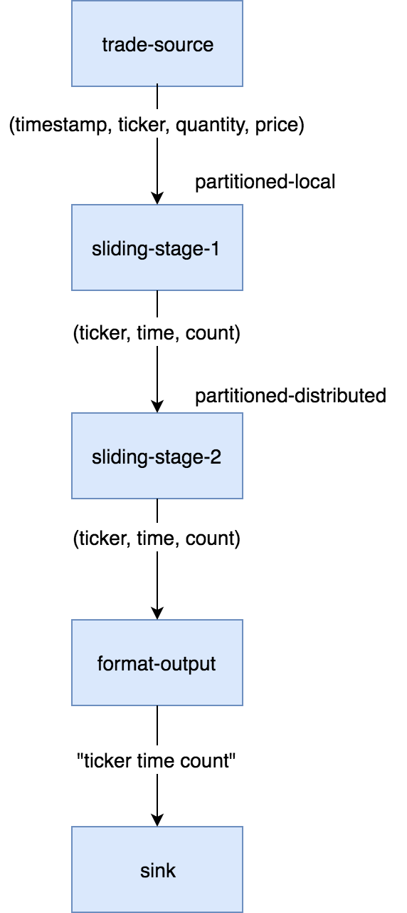
</div>
</div>
<div class="paragraph">
<p>We have the same cascade of source, two-stage aggregation, and sink. The
source is the event journal of a Hazelcast IMap (we assume some other
process continuously updates this map with trade events). On the sink
side there&#8217;s another mapping vertex, <code>format-output</code>, that transforms
the window result items into lines of text. The <code>sink</code> vertex writes
these lines to a file.</p>
</div>
<div class="paragraph">
<p>Here&#8217;s the DAG-building code in full:</p>
</div>
<div class="listingblock">
<div class="content">
<pre class="CodeRay highlight"><code data-lang="java">DistributedToLongFunction&lt;? <span class="local-variable">super</span> Trade&gt; timestampFn = Trade::timestamp;
DistributedFunction&lt;? <span class="local-variable">super</span> Trade, ?&gt; keyFn = Trade::productId;
SlidingWindowPolicy winPolicy = slidingWinPolicy(
        SLIDING_WINDOW_LENGTH_MILLIS, SLIDE_STEP_MILLIS);

DAG dag = <span class="keyword">new</span> DAG();
Vertex tradeSource = dag.newVertex(<span class="string"><span class="delimiter">&quot;</span><span class="content">trade-source</span><span class="delimiter">&quot;</span></span>,
        SourceProcessors.&lt;Trade, <span class="predefined-type">Long</span>, Trade&gt;streamMapP(
                TRADES_MAP_NAME,
                alwaysTrue(),                              <i class="conum" data-value="1"></i><b>(1)</b>
                EventJournalMapEvent::getNewValue,         <i class="conum" data-value="1"></i><b>(1)</b>
                JournalInitialPosition.START_FROM_OLDEST,  <i class="conum" data-value="2"></i><b>(2)</b>
                wmGenParams(
                        timestampFn,                       <i class="conum" data-value="3"></i><b>(3)</b>
                        limitingLag(SECONDS.toMillis(<span class="integer">3</span>)),  <i class="conum" data-value="4"></i><b>(4)</b>
                        emitByFrame(winPolicy),            <i class="conum" data-value="5"></i><b>(5)</b>
                        SECONDS.toMillis(<span class="integer">3</span>)                <i class="conum" data-value="6"></i><b>(6)</b>
                )));
Vertex slidingStage1 = dag.newVertex(<span class="string"><span class="delimiter">&quot;</span><span class="content">sliding-stage-1</span><span class="delimiter">&quot;</span></span>,
        Processors.accumulateByFrameP(
                singletonList(keyFn),
                singletonList(timestampFn),
                TimestampKind.EVENT,
                winPolicy, counting()
        ));
Vertex slidingStage2 = dag.newVertex(<span class="string"><span class="delimiter">&quot;</span><span class="content">sliding-stage-2</span><span class="delimiter">&quot;</span></span>,
    Processors.combineToSlidingWindowP(winPolicy, counting(),
            TimestampedEntry::fromWindowResult));
Vertex formatOutput = dag.newVertex(<span class="string"><span class="delimiter">&quot;</span><span class="content">format-output</span><span class="delimiter">&quot;</span></span>, mapUsingContextP(    <i class="conum" data-value="7"></i><b>(7)</b>
    ContextFactory.withCreateFn(x -&gt; DateTimeFormatter.ofPattern(<span class="string"><span class="delimiter">&quot;</span><span class="content">HH:mm:ss.SSS</span><span class="delimiter">&quot;</span></span>)),
    (DateTimeFormatter timeFormat, TimestampedEntry&lt;<span class="predefined-type">String</span>, <span class="predefined-type">Long</span>&gt; tse) -&gt;
        <span class="predefined-type">String</span>.format(<span class="string"><span class="delimiter">&quot;</span><span class="content">%s %5s %4d</span><span class="delimiter">&quot;</span></span>,
            timeFormat.format(Instant.ofEpochMilli(tse.getTimestamp())
                                     .atZone(ZoneId.systemDefault())),
            tse.getKey(), tse.getValue())
));
Vertex sink = dag.newVertex(<span class="string"><span class="delimiter">&quot;</span><span class="content">sink</span><span class="delimiter">&quot;</span></span>, SinkProcessors.writeFileP(
        OUTPUT_DIR_NAME, <span class="predefined-type">Object</span>::toString, UTF_8, <span class="predefined-constant">false</span>));

tradeSource.localParallelism(<span class="integer">1</span>);

<span class="keyword">return</span> dag
        .edge(between(tradeSource, slidingStage1)
                .partitioned(keyFn, HASH_CODE))
        .edge(between(slidingStage1, slidingStage2)
                .partitioned(entryKey(), HASH_CODE)
                .distributed())
        .edge(between(slidingStage2, formatOutput)
                .isolated())
        .edge(between(formatOutput, sink));</code></pre>
</div>
</div>
<div class="paragraph">
<p>You can see quite a lot of code going into the setup of the streaming
source. Let&#8217;s zoom in on it:</p>
</div>
<div class="colist arabic">
<table>
<tr>
<td><i class="conum" data-value="1"></i><b>1</b></td>
<td>filtering and mapping functions we supply directly to the source.
Hazelcast IMDG will apply them before serializing and sending to Jet so
this saves network traffic and CPU.</td>
</tr>
<tr>
<td><i class="conum" data-value="2"></i><b>2</b></td>
<td>where to start from in map&#8217;s event journal: the oldest entry still
available.</td>
</tr>
<tr>
<td><i class="conum" data-value="3"></i><b>3</b></td>
<td>function to apply to the event object to get its timestamp.</td>
</tr>
<tr>
<td><i class="conum" data-value="4"></i><b>4</b></td>
<td><a href="#watermark-policy">watermark policy</a>. Here we use the simplest
kind, <code>limitingLag</code>, which will make the watermark lag behind the top
observed event timestamp by the fixed amount we specified (3 seconds).</td>
</tr>
<tr>
<td><i class="conum" data-value="5"></i><b>5</b></td>
<td><a href="#watermark-throttling">watermark emission policy</a> that tells Jet
when to actually send a watermark event. Since the sliding window
processor ignores all watermark events that belong to the same frame, we
configure a matching policy that emits only one watermark per frame.</td>
</tr>
<tr>
<td><i class="conum" data-value="6"></i><b>6</b></td>
<td>partition idle timeout. This is a countermeasure to stalling
problems that occur when some of the IMap partitions don&#8217;t receive any
updates. Due to watermark coalescing this could stall the entire stream,
but with this setting a partition will be marked as idle after 3 seconds
of inactivity and then the rest of the system behaves as if it didn&#8217;t
exist.</td>
</tr>
<tr>
<td><i class="conum" data-value="7"></i><b>7</b></td>
<td>Here we use <code>mapUsingContextP</code> which allows us to create an object
available to the processor at a late point, after all the job
serialization-deserialization is done. In this case we need it because
the Java 8 <code>DateTimeFormatter</code> isn&#8217;t serializable.</td>
</tr>
</table>
</div>
<div class="paragraph">
<p>The full code of this sample is in
<a href="https://github.com/hazelcast/hazelcast-jet-code-samples/blob/master/core-api/streaming/stock-exchange-core-api/src/main/java/StockExchangeCoreApi.java">StockExchangeCoreApi.java</a>
and running it you&#8217;ll get an endless stream of data accumulating on the
disk. To spare your filesystem we&#8217;ve limited the execution time to 10
seconds.</p>
</div>
</div>
<div class="sect3">
<h4 id="tf-idf"><a class="anchor" href="#tf-idf"></a><a class="link" href="#tf-idf">8.2.3. Advanced Batch DAG &mdash; Inverted TF-IDF Index</a></h4>
<div class="paragraph">
<p>In this tutorial we&#8217;ll explore what the Core API DAG model offers beyond
the capabilities of the Pipeline API. Our DAG will feature splits,
joins, broadcast, and prioritized edges. We&#8217;ll access data from the file
system and show a simple technique to distribute file reading across Jet
members. Several vertices we use can&#8217;t be implemented in terms of
out-of-the-box processors, so we&#8217;ll also show you how to implement your
own with minimum boilerplate.</p>
</div>
<div class="paragraph">
<p>The full code is available at the <code>hazelcast-jet-code-samples</code>
repository:</p>
</div>
<div class="paragraph">
<p><a href="https://github.com/hazelcast/hazelcast-jet-code-samples/blob/master/core-api/batch/tf-idf-core-api/src/main/java/TfIdfJdkStreams.java">TfIdfJdkStreams.java</a></p>
</div>
<div class="paragraph">
<p><a href="https://github.com/hazelcast/hazelcast-jet-code-samples/blob/master/core-api/batch/tf-idf-core-api/src/main/java/TfIdfCoreApi.java">TfIdfCoreApi.java</a></p>
</div>
<div class="paragraph">
<p>Let us first introduce the problem. The inverted index is a basic data
structure in the domain of full-text search. First used in the 1950s, it
is still at the core of modern information retrieval systems such as
Lucene. The goal is to be able to quickly find the documents that
contain a given set of search terms, and to sort them by relevance. To
understand it we&#8217;ll need to throw in some terminology.</p>
</div>
<div class="ulist">
<ul>
<li>
<p>A <em>document</em> is treated as a list of words that has a unique ID. It is
useful to define the notion of a <em>document index</em> which maps each
document ID to the list of words it contains. We won&#8217;t build this index;
it&#8217;s just for the sake of explanation.</p>
</li>
<li>
<p>The <em>inverted index</em> is the inverse of the document index: it maps
each word to the list of documents that contain it. This is the
fundamental building block in our search algorithm: it will allow us to
find in O(1) time all documents relevant to a search term.</p>
</li>
<li>
<p>In the inverted index, each entry in the list is assigned a <em>TF-IDF
score</em> which quantifies how relevant the document is to the search
request.</p>
</li>
<li>
<p>Let DF (<em>document frequency</em>) be the length of the list: the
number of documents that contain the word.</p>
</li>
<li>
<p>Let D be the total number of documents that were indexed.</p>
</li>
<li>
<p>IDF (<em>inverse document frequency</em>) is equal to <code>log(D/DF)</code>.</p>
</li>
<li>
<p>TF (<em>term frequency</em>) is the number of occurrences of the word in
the document.</p>
</li>
<li>
<p>TF-IDF score is simply the product of <code>TF * IDF</code>.</p>
</li>
</ul>
</div>
<div class="paragraph">
<p>Note that IDF is a property of the word itself: it quantifies the
relevance of each entered word to the search request as a whole. The
list of entered words can be perceived as a list of filtering functions
that we apply to the full set of documents. A more relevant word will
apply a stronger filter. Specifically, common words like &#8220;the&#8221;, &#8220;it&#8221;,
&#8220;on&#8221; act as pure "pass-through" filters and consequently have an IDF of
zero, making them completely irrelevant to the search.</p>
</div>
<div class="paragraph">
<p>TF, on the other hand, is the property of the combination of word and
document, and tells us how relevant the document is to the word,
regardless of the relevance of the word itself.</p>
</div>
<div class="paragraph">
<p>When the user enters a search phrase:</p>
</div>
<div class="olist arabic">
<ol class="arabic">
<li>
<p>each individual term from the phrase is looked up in the inverted
index;</p>
</li>
<li>
<p>an intersection is found of all the lists, resulting in the list of
documents that contain all the words;</p>
</li>
<li>
<p>each document is scored by summing the TF-IDF contributions of each
word;</p>
</li>
<li>
<p>the result list is sorted by score (descending) and presented to the
user.</p>
</li>
</ol>
</div>
<div class="paragraph">
<p>Let&#8217;s have a look at a specific search phrase:</p>
</div>
<div class="listingblock">
<div class="content">
<pre class="CodeRay highlight"><code data-lang="text">the man in the black suit murdered the king</code></pre>
</div>
</div>
<div class="paragraph">
<p>The list of documents that contain all the above words is quite long&#8230;&#8203;
how do we decide which are the most relevant? The TF-IDF logic will make
those stand out that have an above-average occurrence of words that are
generally rare across all documents. For example, &#8220;murdered&#8221; occurs in
far fewer documents than &#8220;black&#8221;&#8230;&#8203; so given two documents where one
has the same number of &#8220;murdered&#8221; as the other one has of &#8220;black&#8221;,
the one with &#8220;murdered&#8221; wins because its word is more salient in
general. On the other hand, &#8220;suit&#8221; and &#8220;king&#8221; might have a similar
IDF, so the document that simply contains more of both wins.</p>
</div>
<div class="paragraph">
<p>Also note the limitation of this technique: a phrase is treated as just
the sum of its parts; a document may contain the exact phrase and this
will not affect its score.</p>
</div>
<div class="sect4">
<h5 id="building-inverted-index"><a class="anchor" href="#building-inverted-index"></a><a class="link" href="#building-inverted-index">Building the Inverted Index with Java Streams</a></h5>
<div class="paragraph">
<p>To warm us up, let&#8217;s see what it takes to build the inverted index with
just thread parallelism and without the ability to scale out across
many machines. It is expressible in Java Streams API without too much
work. The full code is <a href="https://github.com/hazelcast/hazelcast-jet-code-samples/blob/master/core-api/batch/tf-idf/src/main/java/TfIdfJdkStreams.java">here</a>.</p>
</div>
<div class="paragraph">
<p>We&#8217;ll start by preparing a <code>Stream&lt;Entry&lt;Long, String&gt;&gt; docWords</code>: a
stream of all the words found in all the documents. We use <code>Map.Entry</code> as
a holder of a pair of values (a 2-tuple) and here we have a pair of
<code>Long docId</code> and <code>String word</code>:</p>
</div>
<div class="listingblock">
<div class="content">
<pre class="CodeRay highlight"><code data-lang="java">Stream&lt;Entry&lt;<span class="predefined-type">Long</span>, <span class="predefined-type">String</span>&gt;&gt; docWords = docId2Name
        .entrySet()
        .parallelStream()
        .flatMap(TfIdfJdkStreams::docLines)
        .flatMap(<span class="local-variable">this</span>::tokenize);</code></pre>
</div>
</div>
<div class="paragraph">
<p>We know the number of all documents so we can compute <code>double
logDocCount</code>, the logarithm of the document count:</p>
</div>
<div class="listingblock">
<div class="content">
<pre class="CodeRay highlight"><code data-lang="java"><span class="directive">final</span> <span class="type">double</span> logDocCount = <span class="predefined-type">Math</span>.log(docId2Name.size());</code></pre>
</div>
</div>
<div class="paragraph">
<p>Calculating TF is very easy, just count the number of occurrences of
each distinct pair and save the result in a <code>Map&lt;Entry&lt;Long, String&gt;,
Long&gt;</code>:</p>
</div>
<div class="listingblock">
<div class="content">
<pre class="CodeRay highlight"><code data-lang="java"><span class="predefined-type">Map</span>&lt;Entry&lt;<span class="predefined-type">Long</span>, <span class="predefined-type">String</span>&gt;, <span class="predefined-type">Long</span>&gt; tfMap = docWords
        .parallel()
        .collect(groupingBy(identity(), counting()));</code></pre>
</div>
</div>
<div class="paragraph">
<p>And now we build the inverted index. We start from <code>tfMap</code>, group by
word, and the list under each word already matches our final product:
the list of all the documents containing the word. We finish off by
applying a transformation to the list: currently it&#8217;s just the raw
entries from the <code>tf</code> map, but we need pairs <code>(docId, tfIDfScore)</code>.</p>
</div>
<div class="listingblock">
<div class="content">
<pre class="CodeRay highlight"><code data-lang="java">invertedIndex = tfMap
    .entrySet()
    .parallelStream()
    .collect(groupingBy(
        e -&gt; e.getKey().getValue(),
        collectingAndThen(
            toList(),
            entries -&gt; {
                <span class="type">double</span> idf = logDocCount - <span class="predefined-type">Math</span>.log(entries.size());
                <span class="keyword">return</span> entries.stream().map(e -&gt;
                        tfidfEntry(e, idf)).collect(toList());
            }
        )
    ));</code></pre>
</div>
</div>
<div class="paragraph">
<p>The search function can be implemented with another Streams expression,
which you can review in the
<a href="https://github.com/hazelcast/hazelcast-jet-code-samples/blob/master/core-api/batch/tf-idf/src/main/java/SearchGui.java">SearchGui</a>
class. You can also run the
<a href="https://github.com/hazelcast/hazelcast-jet-code-samples/blob/master/core-api/batch/tf-idf/src/main/java/TfIdfJdkStreams.java">TfIdfJdkStreams</a>
class and take the inverted index for a spin, making actual searches.</p>
</div>
<div class="paragraph">
<p>There is one last concept in this model that we haven&#8217;t mentioned yet:
the <em>stopword set</em>. It contains those words that are known in advance to
be common enough to occur in every document. Without treatment, these
words are the worst case for the inverted index: the document list under
each such word is the longest possible, and the score of all documents
is zero due to zero IDF. They raise the index&#8217;s memory footprint without
providing any value. The cure is to prepare a file, <code>stopwords.txt</code>,
which is read in advance into a <code>Set&lt;String&gt;</code> and used to filter out the
words in the tokenization phase. The same set is used to cross out words
from the user&#8217;s search phrase, as if they weren&#8217;t entered. We&#8217;ll add this
feature to our DAG based model in the following section.</p>
</div>
</div>
<div class="sect4">
<h5 id="translating-to-jet-dag"><a class="anchor" href="#translating-to-jet-dag"></a><a class="link" href="#translating-to-jet-dag">Translating to Jet DAG</a></h5>
<div class="paragraph">
<p>Our DAG as a whole will look relatively complex, but it can be
understood as a &#8220;backbone&#8221; (cascade of vertices) starting from a
source and ending in a sink with several more vertices attached on the
side. This is just the backbone:</p>
</div>
<div class="imageblock" style="text-align: center">
<div class="content">
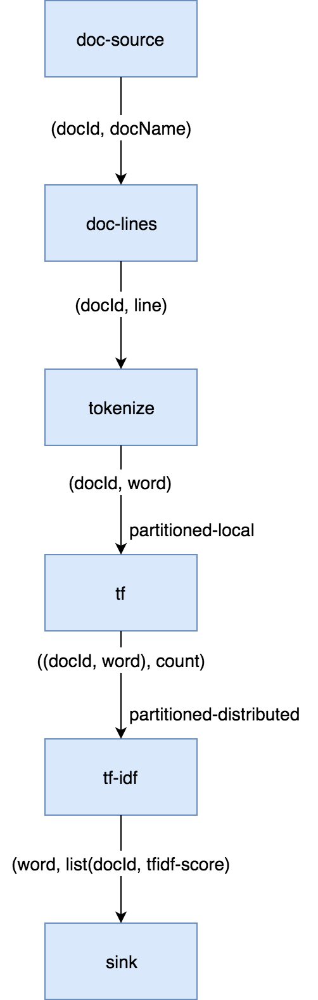
</div>
</div>
<div class="olist arabic">
<ol class="arabic">
<li>
<p>The data source is a Hazelcast <code>IMap</code> which holds a mapping from
document ID to its filename. The source vertex will emit all the map&#8217;s
entries, but only a subset on each cluster member.</p>
</li>
<li>
<p><code>doc-lines</code> opens each file named by the map entry and emits all its
lines in the <code>(docId, line)</code> format.</p>
</li>
<li>
<p><code>tokenize</code> transforms each line into a sequence of its words, again
paired with the document ID, so it emits <code>(docId, word)</code>.</p>
</li>
<li>
<p><code>tf</code> builds a set of all distinct pairs emitted from <code>tokenize</code> and
maintains the count of each pair&#8217;s occurrences (its TF score).</p>
</li>
<li>
<p><code>tf-idf</code> takes that set, groups the pairs by word, and calculates
the TF-IDF scores. It emits the results to the sink, which saves them
to a distributed <code>IMap</code>.</p>
</li>
</ol>
</div>
<div class="paragraph">
<p>Edge types follow the same pattern as in the word-counting job: after
flatmapping there is first a local, then a distributed partitioned edge.
The logic behind it is not the same, though: TF can actually compute the
final TF scores by observing just the local data. This is because it
treats each document separately (document ID is a part of the grouping
key) and the source data is already partitioned by document ID. The
TF-IDF vertex does something similar to word count&#8217;s combining, but
there&#8217;s again a twist: it will group the TF entries by word, but instead
of just merging them into a single result per word, it will keep them
all in lists.</p>
</div>
<div class="paragraph">
<p>To this cascade we add a <code>stopword-source</code> which reads the stopwords
file, parses it into a <code>HashSet</code>, and sends the whole set as a single
item to the <code>tokenize</code> vertex. We also add a vertex that takes the data
from <code>doc-source</code> and simply counts its items; this is the total
document count used in the TF-IDF formula. We end up with this DAG:</p>
</div>
<div class="imageblock" style="text-align: center">
<div class="content">

</div>
</div>
<div class="paragraph">
<p>The choice of edge types into and out of <code>doc-count</code> may look
surprising, so let&#8217;s examine it. We start with the <code>doc-source</code> vertex,
which emits one item per document, but its output is distributed across
the cluster. To get the full document count on each member, each
<code>doc-count</code> processor must get all the items, and that&#8217;s just what the
distributed broadcast edge will achieve. We&#8217;ll configure <code>doc-count</code>
with local parallelism of 1, so there will be one processor on every
member, each observing all the <code>doc-source</code> items. The output of
<code>doc-count</code> must reach all <code>tf-idf</code> processors on the same member, so we
use the local broadcast edge.</p>
</div>
<div class="paragraph">
<p>Another thing to note are the two flat-mapping vertices: <code>doc-lines</code> and
<code>tokenize</code>. From a purely semantic standpoint, composing flatmap with
flatmap yields just another flatmap. As we&#8217;ll see below, we&#8217;re using
custom code for these two processors&#8230;&#8203; so why did we choose to separate
the logic this way? There are actually two good reasons. The first one
has to do with Jet&#8217;s cooperative multithreading model: <code>doc-lines</code> makes
blocking file IO calls, so it must be declared <em>non-cooperative</em>;
tokenization is pure computation so it can be in a <em>cooperative</em>
processor. The second one is more general: the workload of <code>doc-lines</code>
is very uneven. It consists of waiting, then suddenly coming up with a
whole block of data. If we left tokenization there, performance would
suffer because first the CPU would be forced to sit idle, then we&#8217;d be
late in making the next IO call while tokenizing the input. The separate
vertex can proceed at full speed all the time.</p>
</div>
</div>
<div class="sect4">
<h5 id="implementation-code"><a class="anchor" href="#implementation-code"></a><a class="link" href="#implementation-code">Implementation Code</a></h5>
<div class="paragraph">
<p>As we announced, some of the processors in our DAG will need custom
implementation code. Let&#8217;s start from the source vertex. It is easy,
just the standard <code>IMap</code> reader:</p>
</div>
<div class="listingblock">
<div class="content">
<pre class="CodeRay highlight"><code data-lang="java">dag.newVertex(<span class="string"><span class="delimiter">&quot;</span><span class="content">doc-source</span><span class="delimiter">&quot;</span></span>, readMapP(DOCID_NAME));</code></pre>
</div>
</div>
<div class="paragraph">
<p>The stopwords-producing processor has custom code, but it&#8217;s quite
simple:</p>
</div>
<div class="listingblock">
<div class="content">
<pre class="CodeRay highlight"><code data-lang="java">dag.newVertex(<span class="string"><span class="delimiter">&quot;</span><span class="content">stopword-source</span><span class="delimiter">&quot;</span></span>, StopwordsP::<span class="keyword">new</span>);</code></pre>
</div>
</div>
<div class="listingblock">
<div class="content">
<pre class="CodeRay highlight"><code data-lang="java"><span class="directive">private</span> <span class="directive">static</span> <span class="type">class</span> <span class="class">StopwordsP</span> <span class="directive">extends</span> AbstractProcessor {
    <span class="annotation">@Override</span>
    <span class="directive">public</span> <span class="type">boolean</span> complete() {
        <span class="keyword">return</span> tryEmit(docLines(<span class="string"><span class="delimiter">&quot;</span><span class="content">stopwords.txt</span><span class="delimiter">&quot;</span></span>).collect(toSet()));
    }
}</code></pre>
</div>
</div>
<div class="paragraph">
<p>Since this is a source processor, all its action happens in
<code>complete()</code>. It emits a single item: the <code>HashSet</code> built directly from
the text file&#8217;s lines.</p>
</div>
<div class="paragraph">
<p>The <code>doc-count</code> processor can be built from the primitives provided in
Jet&#8217;s library:</p>
</div>
<div class="listingblock">
<div class="content">
<pre class="CodeRay highlight"><code data-lang="java">dag.newVertex(<span class="string"><span class="delimiter">&quot;</span><span class="content">doc-count</span><span class="delimiter">&quot;</span></span>, Processors.aggregateP(counting()));</code></pre>
</div>
</div>
<div class="paragraph">
<p>The <code>doc-lines</code> processor is more of a mouthful, but still built from
existing primitives:</p>
</div>
<div class="listingblock">
<div class="content">
<pre class="CodeRay highlight"><code data-lang="java">Vertex docLines = dag.newVertex(<span class="string"><span class="delimiter">&quot;</span><span class="content">doc-lines</span><span class="delimiter">&quot;</span></span>, flatMapUsingContextP(
        ContextFactory.withCreateFn(jet -&gt; <span class="predefined-constant">null</span>).nonCooperative(),
        (<span class="predefined-type">Object</span> ctx, Entry&lt;<span class="predefined-type">Long</span>, <span class="predefined-type">String</span>&gt; e) -&gt;
        traverseStream(docLines(<span class="string"><span class="delimiter">&quot;</span><span class="content">books/</span><span class="delimiter">&quot;</span></span> + e.getValue())
            .map(line -&gt; entry(e.getKey(), line)))));</code></pre>
</div>
</div>
<div class="paragraph">
<p>Let&#8217;s break down this expression&#8230;&#8203; <code>Processors.flatMap</code> returns a
standard processor that emits an arbitrary number of items for each
received item. We already saw one in the introductory Word Count
example. There we created a traverser from an array, here we create it
from a Java stream. We additionally apply the <code>nonCooperative()</code> wrapper
which will declare all the created processors non-cooperative. We
already explained why we do this: this processor will make blocking I/O
calls.</p>
</div>
<div class="paragraph">
<p><code>tokenize</code> is another custom vertex:</p>
</div>
<div class="listingblock">
<div class="content">
<pre class="CodeRay highlight"><code data-lang="java">dag.newVertex(<span class="string"><span class="delimiter">&quot;</span><span class="content">tokenize</span><span class="delimiter">&quot;</span></span>, TokenizeP::<span class="keyword">new</span>);</code></pre>
</div>
</div>
<div class="listingblock">
<div class="content">
<pre class="CodeRay highlight"><code data-lang="java"><span class="directive">private</span> <span class="directive">static</span> <span class="type">class</span> <span class="class">TokenizeP</span> <span class="directive">extends</span> AbstractProcessor {
    <span class="directive">private</span> <span class="predefined-type">Set</span>&lt;<span class="predefined-type">String</span>&gt; stopwords;
    <span class="directive">private</span> <span class="directive">final</span> FlatMapper&lt;Entry&lt;<span class="predefined-type">Long</span>, <span class="predefined-type">String</span>&gt;, Entry&lt;<span class="predefined-type">Long</span>, <span class="predefined-type">String</span>&gt;&gt;
            flatMapper = flatMapper(e -&gt; traverseStream(
            <span class="predefined-type">Arrays</span>.stream(DELIMITER.split(e.getValue().toLowerCase()))
                  .filter(word -&gt; !stopwords.contains(word))
                  .map(word -&gt; entry(e.getKey(), word))));

    <span class="annotation">@Override</span>
    <span class="annotation">@SuppressWarnings</span>(<span class="string"><span class="delimiter">&quot;</span><span class="content">unchecked</span><span class="delimiter">&quot;</span></span>)
    <span class="directive">protected</span> <span class="type">boolean</span> tryProcess0(<span class="annotation">@Nonnull</span> <span class="predefined-type">Object</span> item) {
        stopwords = (<span class="predefined-type">Set</span>&lt;<span class="predefined-type">String</span>&gt;) item;
        <span class="keyword">return</span> <span class="predefined-constant">true</span>;
    }

    <span class="annotation">@Override</span>
    <span class="annotation">@SuppressWarnings</span>(<span class="string"><span class="delimiter">&quot;</span><span class="content">unchecked</span><span class="delimiter">&quot;</span></span>)
    <span class="directive">protected</span> <span class="type">boolean</span> tryProcess1(<span class="annotation">@Nonnull</span> <span class="predefined-type">Object</span> item) {
        <span class="keyword">return</span> flatMapper.tryProcess((Entry&lt;<span class="predefined-type">Long</span>, <span class="predefined-type">String</span>&gt;) item);
    }
}</code></pre>
</div>
</div>
<div class="paragraph">
<p>This is a processor that must deal with two different inbound edges. It
receives the stopword set over edge 0 and then it does a flatmapping
operation on edge 1. The logic presented here uses the same approach as
the implementation of the provided <code>Processors.flatMap()</code> processor:
there is a single instance of <code>FlatMapper</code> that holds the business logic
of the transformation, and <code>tryProcess1()</code> directly delegates into it.
If <code>FlatMapper</code> is done emitting the previous items, it will accept the
new item, apply the user-provided transformation, and start emitting the
output items. If the outbox refuses a pending item, it will return
<code>false</code>, which will make the framework call the same <code>tryProcess1()</code>
method later, with the same input item.</p>
</div>
<div class="paragraph">
<p>Let&#8217;s show the code that creates the <code>tokenize</code> 's two inbound edges:</p>
</div>
<div class="listingblock">
<div class="content">
<pre class="CodeRay highlight"><code data-lang="java">dag.edge(between(stopwordSource, tokenize).broadcast().priority(-<span class="integer">1</span>))
   .edge(from(docLines).to(tokenize, <span class="integer">1</span>));</code></pre>
</div>
</div>
<div class="paragraph">
<p>Especially note the <code>.priority(-1)</code> part: this ensures that there will
be no attempt to deliver any data coming from <code>docLines</code> before all the
data from <code>stopwordSource</code> is already delivered. The processor would
fail if it had to tokenize a line before it has its stopword set in
place.</p>
</div>
<div class="paragraph">
<p><code>tf</code> is another simple vertex, built purely from the provided
primitives:</p>
</div>
<div class="listingblock">
<div class="content">
<pre class="CodeRay highlight"><code data-lang="java">dag.newVertex(<span class="string"><span class="delimiter">&quot;</span><span class="content">tf</span><span class="delimiter">&quot;</span></span>, aggregateByKeyP(
        singletonList(wholeItem()), counting(), <span class="predefined-type">Util</span>::entry));</code></pre>
</div>
</div>
<div class="paragraph">
<p><code>tf-idf</code> is the most complex processor:</p>
</div>
<div class="listingblock">
<div class="content">
<pre class="CodeRay highlight"><code data-lang="java">dag.newVertex(<span class="string"><span class="delimiter">&quot;</span><span class="content">tf-idf</span><span class="delimiter">&quot;</span></span>, TfIdfP::<span class="keyword">new</span>);</code></pre>
</div>
</div>
<div class="listingblock">
<div class="content">
<pre class="CodeRay highlight"><code data-lang="java"><span class="directive">private</span> <span class="directive">static</span> <span class="type">class</span> <span class="class">TfIdfP</span> <span class="directive">extends</span> AbstractProcessor {
    <span class="directive">private</span> <span class="type">double</span> logDocCount;

    <span class="directive">private</span> <span class="directive">final</span> <span class="predefined-type">Map</span>&lt;<span class="predefined-type">String</span>, <span class="predefined-type">List</span>&lt;Entry&lt;<span class="predefined-type">Long</span>, <span class="predefined-type">Double</span>&gt;&gt;&gt; wordDocTf =
            <span class="keyword">new</span> <span class="predefined-type">HashMap</span>&lt;&gt;();
    <span class="directive">private</span> <span class="directive">final</span> Traverser&lt;Entry&lt;<span class="predefined-type">String</span>, <span class="predefined-type">List</span>&lt;Entry&lt;<span class="predefined-type">Long</span>, <span class="predefined-type">Double</span>&gt;&gt;&gt;&gt;
            invertedIndexTraverser = lazy(() -&gt;
            traverseIterable(wordDocTf.entrySet())
                    .map(<span class="local-variable">this</span>::toInvertedIndexEntry));

    <span class="annotation">@Override</span>
    <span class="directive">protected</span> <span class="type">boolean</span> tryProcess0(<span class="annotation">@Nonnull</span> <span class="predefined-type">Object</span> item) {
        logDocCount = <span class="predefined-type">Math</span>.log((<span class="predefined-type">Long</span>) item);
        <span class="keyword">return</span> <span class="predefined-constant">true</span>;
    }

    <span class="annotation">@Override</span>
    <span class="annotation">@SuppressWarnings</span>(<span class="string"><span class="delimiter">&quot;</span><span class="content">unchecked</span><span class="delimiter">&quot;</span></span>)
    <span class="directive">protected</span> <span class="type">boolean</span> tryProcess1(<span class="annotation">@Nonnull</span> <span class="predefined-type">Object</span> item) {
        Entry&lt;Entry&lt;<span class="predefined-type">Long</span>, <span class="predefined-type">String</span>&gt;, <span class="predefined-type">Long</span>&gt; e =
                (Entry&lt;Entry&lt;<span class="predefined-type">Long</span>, <span class="predefined-type">String</span>&gt;, <span class="predefined-type">Long</span>&gt;) item;
        <span class="type">long</span> docId = e.getKey().getKey();
        <span class="predefined-type">String</span> word = e.getKey().getValue();
        <span class="type">long</span> tf = e.getValue();
        wordDocTf.computeIfAbsent(word, w -&gt; <span class="keyword">new</span> <span class="predefined-type">ArrayList</span>&lt;&gt;())
                 .add(entry(docId, (<span class="type">double</span>) tf));
        <span class="keyword">return</span> <span class="predefined-constant">true</span>;
    }

    <span class="annotation">@Override</span>
    <span class="directive">public</span> <span class="type">boolean</span> complete() {
        <span class="keyword">return</span> emitFromTraverser(invertedIndexTraverser);
    }

    <span class="directive">private</span> Entry&lt;<span class="predefined-type">String</span>, <span class="predefined-type">List</span>&lt;Entry&lt;<span class="predefined-type">Long</span>, <span class="predefined-type">Double</span>&gt;&gt;&gt; toInvertedIndexEntry(
            Entry&lt;<span class="predefined-type">String</span>, <span class="predefined-type">List</span>&lt;Entry&lt;<span class="predefined-type">Long</span>, <span class="predefined-type">Double</span>&gt;&gt;&gt; wordDocTf
    ) {
        <span class="predefined-type">String</span> word = wordDocTf.getKey();
        <span class="predefined-type">List</span>&lt;Entry&lt;<span class="predefined-type">Long</span>, <span class="predefined-type">Double</span>&gt;&gt; docidTfs = wordDocTf.getValue();
        <span class="keyword">return</span> entry(word, docScores(docidTfs));
    }

    <span class="directive">private</span> <span class="predefined-type">List</span>&lt;Entry&lt;<span class="predefined-type">Long</span>, <span class="predefined-type">Double</span>&gt;&gt; docScores(
            <span class="predefined-type">List</span>&lt;Entry&lt;<span class="predefined-type">Long</span>, <span class="predefined-type">Double</span>&gt;&gt; docidTfs
    ) {
        <span class="type">double</span> logDf = <span class="predefined-type">Math</span>.log(docidTfs.size());
        <span class="keyword">return</span> docidTfs.stream()
                       .map(tfe -&gt; tfidfEntry(logDf, tfe))
                       .collect(toList());
    }

    <span class="directive">private</span> Entry&lt;<span class="predefined-type">Long</span>, <span class="predefined-type">Double</span>&gt; tfidfEntry(
            <span class="type">double</span> logDf, Entry&lt;<span class="predefined-type">Long</span>, <span class="predefined-type">Double</span>&gt; docidTf
    ) {
        <span class="predefined-type">Long</span> docId = docidTf.getKey();
        <span class="type">double</span> tf = docidTf.getValue();
        <span class="type">double</span> idf = logDocCount - logDf;
        <span class="keyword">return</span> entry(docId, tf * idf);
    }
}</code></pre>
</div>
</div>
<div class="paragraph">
<p>This is quite a lot of code, but each of the three pieces is not too
difficult to follow:</p>
</div>
<div class="olist arabic">
<ol class="arabic">
<li>
<p><code>tryProcess0()</code> accepts a single item, the total document count.</p>
</li>
<li>
<p><code>tryProcess1()</code> performs a boilerplate group-and-aggregate operation,
collecting a list of items under each key.</p>
</li>
<li>
<p><code>complete()</code> outputs the accumulated results, also applying the final
transformation on each one: replacing the TF score with the final
TF-IDF score. It relies on a <em>lazy</em> traverser, which holds a
<code>Supplier&lt;Traverser&gt;</code> and will obtain the inner traverser from it the
first time <code>next()</code> is called. This makes it very simple to write code
that obtains a traverser from a map after it has been populated.</p>
</li>
</ol>
</div>
<div class="paragraph">
<p>Finally, our DAG is terminated by a sink vertex:</p>
</div>
<div class="listingblock">
<div class="content">
<pre class="CodeRay highlight"><code data-lang="java">dag.newVertex(<span class="string"><span class="delimiter">&quot;</span><span class="content">sink</span><span class="delimiter">&quot;</span></span>, SinkProcessors.writeMapP(INVERTED_INDEX));</code></pre>
</div>
</div>
</div>
</div>
</div>
<div class="sect2">
<h3 id="processor"><a class="anchor" href="#processor"></a><a class="link" href="#processor">8.3. Processor</a></h3>
<div class="paragraph">
<p><a href="http://docs.hazelcast.org/docs/jet/latest-dev/javadoc/com/hazelcast/jet/core/Processor.html"><code>Processor</code></a>
is the main type whose implementation is up to the user of the Core API:
it contains the code of the computation to be performed by a vertex.
There are a number of Processor building blocks in the Core API which
allow you to just specify the computation logic, while the provided code
handles the processor&#8217;s cooperative behavior. Please refer to the
<a href="#abstract-processor">AbstractProcessor</a> section.</p>
</div>
<div class="paragraph">
<p>A processor&#8217;s work can be conceptually described as follows: "receive
data from zero or more input streams and emit data into zero or more
output streams." Each stream maps to a single DAG edge (either inbound
or outbound). There is no requirement on the correspondence between
input and output items; a processor can emit any data it sees fit,
including none at all. The same <code>Processor</code> abstraction is used for all
kinds of vertices, including sources and sinks.</p>
</div>
<div class="paragraph">
<p>The implementation of a processor can be stateful and does not need to
be thread-safe because Jet guarantees to use the processor instances
from one thread at a time, although not necessarily always the same
thread.</p>
</div>
<div class="sect3">
<h4 id="cooperativeness"><a class="anchor" href="#cooperativeness"></a><a class="link" href="#cooperativeness">8.3.1. Cooperativeness</a></h4>
<div class="paragraph">
<p><code>Processor</code> instances are cooperative by default. The processor can opt
out of cooperative multithreading by overriding <code>isCooperative()</code> to
return <code>false</code>. Jet will then start a dedicated thread for it.</p>
</div>
<div class="paragraph">
<p>To maintain an overall good throughput, a cooperative processor must
take care not to hog the thread for too long (a rule of thumb is up to a
millisecond at a time). Jet&#8217;s design strongly favors cooperative
processors and most processors can and should be implemented to fit
these requirements. The major exception are sources and sinks because
they often have no choice but calling into blocking I/O APIs.</p>
</div>
</div>
<div class="sect3">
<h4 id="the-outbox"><a class="anchor" href="#the-outbox"></a><a class="link" href="#the-outbox">8.3.2. The Outbox</a></h4>
<div class="paragraph">
<p>The processor sends its output items to its
<a href="http://docs.hazelcast.org/docs/jet/latest-dev/javadoc/com/hazelcast/jet/core/Outbox.html"><code>Outbox</code></a>
which has a separate bucket for each outbound edge. The buckets have
limited capacity and will refuse an item when full. A cooperative
processor should be implemented such that when the outbox refuses its
item, it saves its processing state and returns from the processing
method. The execution engine will then drain the outbox buckets.</p>
</div>
</div>
<div class="sect3">
<h4 id="data-processing-callbacks"><a class="anchor" href="#data-processing-callbacks"></a><a class="link" href="#data-processing-callbacks">8.3.3. Data Processing Callbacks</a></h4>
<div class="sect4">
<h5 id="process-ordinal-inbox"><a class="anchor" href="#process-ordinal-inbox"></a><a class="link" href="#process-ordinal-inbox">process(ordinal, inbox)</a></h5>
<div class="paragraph">
<p>Jet passes the items received over a given edge to the processor by
calling
<a href="http://docs.hazelcast.org/docs/jet/latest-dev/javadoc/com/hazelcast/jet/core/Processor.html#process-int-com.hazelcast.jet.core.Inbox-"><code>process(ordinal, inbox)</code></a>.
All items received since the last <code>process()</code> call are in the inbox, but
also all the items the processor hasn&#8217;t removed in a previous
<code>process()</code> call. There is a separate instance of <code>Inbox</code> for each
inbound edge, so any given <code>process()</code> call involves items from only one
edge.</p>
</div>
<div class="paragraph">
<p>The processor must not remove an item from the inbox until it has fully
processed it. This is important with respect to the cooperative
behavior: the processor may not be allowed to emit all items
corresponding to a given input item and may need to return from the
<code>process()</code> call early, saving its state. In such a case the item should
stay in the inbox so Jet knows the processor has more work to do even if
no new items are received.</p>
</div>
</div>
<div class="sect4">
<h5 id="tryprocesswatermark-watermark"><a class="anchor" href="#tryprocesswatermark-watermark"></a><a class="link" href="#tryprocesswatermark-watermark">tryProcessWatermark(watermark)</a></h5>
<div class="paragraph">
<p>When new highest watermark is received from all input edges and all
input processor instances, the
<a href="http://docs.hazelcast.org/docs/jet/latest-dev/javadoc/com/hazelcast/jet/core/Processor.html#tryProcessWatermark-com.hazelcast.jet.core.Watermark-"><code>tryProcessWatermark(watermark)</code></a>
method is called. The watermark value is always greater than in the
previous call.</p>
</div>
<div class="paragraph">
<p>The implementation may choose to process only partially and return
<code>false</code>, in which case it will be called again later with the same
timestamp before any other processing method is called. When the method
returns <code>true</code>, the watermark is forwarded to the downstream processors.</p>
</div>
</div>
<div class="sect4">
<h5 id="tryprocess"><a class="anchor" href="#tryprocess"></a><a class="link" href="#tryprocess">tryProcess()</a></h5>
<div class="paragraph">
<p>If a processor&#8217;s inbox is empty, Jet will call its
<a href="http://docs.hazelcast.org/docs/jet/latest-dev/javadoc/com/hazelcast/jet/core/Processor.html#tryProcess--"><code>tryProcess()</code></a>
method instead. This allows the processor to perform work that is not
input data-driven. The method has a <code>boolean</code> return value and if it
returns <code>false</code>, it will be called again before any other methods are
called. This way it can retry emitting its output until the outbox
accepts it.</p>
</div>
<div class="paragraph">
<p>An important use case for this method is the emission of watermark
items. A job that processes an infinite data stream may experience
occasional lulls - periods with no items arriving. On the other
hand, a windowing processor is not allowed to act upon each item
immediately due to event skew; it must wait for a watermark item to
arrive. During a stream lull this becomes problematic because the
watermark itself is primarily data-driven and advances in response to
the observation of event timestamps. The watermark-inserting processor
must be able to advance the watermark even during a stream lull, based
on the passage of wall-clock time, and it can do it inside the
<code>tryProcess()</code> method.</p>
</div>
</div>
<div class="sect4">
<h5 id="complete"><a class="anchor" href="#complete"></a><a class="link" href="#complete">complete()</a></h5>
<div class="paragraph">
<p>Jet calls
<a href="http://docs.hazelcast.org/docs/jet/latest-dev/javadoc/com/hazelcast/jet/core/Processor.html#complete--"><code>complete()</code></a>
when all the input edges are exhausted. It is the last method to be
invoked on the processor before disposing of it. Typically this is where
a batch processor emits the results of an aggregating operation. If it
can&#8217;t emit everything in a given call, it should return <code>false</code> and will
be called again later.</p>
</div>
</div>
</div>
<div class="sect3">
<h4 id="snapshotting-callbacks"><a class="anchor" href="#snapshotting-callbacks"></a><a class="link" href="#snapshotting-callbacks">8.3.4. Snapshotting Callbacks</a></h4>
<div class="paragraph">
<p>Hazelcast Jet supports fault-tolerant processing jobs by taking
distributed snapshots. In regular time intervals each of the source
vertices will perform a snapshot of its own state and then emit a
special item to its output stream: a <em>barrier</em>. The downstream vertex
that receives the barrier item makes its own snapshot and then forwards
the barrier to its outbound edges, and so on towards the sinks.</p>
</div>
<div class="paragraph">
<p>At the level of the <code>Processor</code> API the barrier items are not visible;
<code>ProcessorTasklet</code> handles them internally and invokes the snapshotting
callback methods described below.</p>
</div>
<div class="sect4">
<h5 id="savetosnapshot"><a class="anchor" href="#savetosnapshot"></a><a class="link" href="#savetosnapshot">saveToSnapshot()</a></h5>
<div class="paragraph">
<p>Jet will call
<a href="http://docs.hazelcast.org/docs/jet/latest-dev/javadoc/com/hazelcast/jet/core/Processor.html#saveToSnapshot--"><code>saveToSnapshot()</code></a>
when it determines it&#8217;s time for the processor to save its state to the
current snapshot. Except for source vertices, this happens when the
processor has received the barrier item from all its inbound streams and
processed all the data items preceding it. The method must emit all its
state to the special <em>snapshotting bucket</em> in the Outbox, by calling
<code>outbox.offerToSnapshot()</code>. If the outbox doesn&#8217;t accept all the data,
it must return <code>false</code> to be called again later, after the outbox has
been flushed.</p>
</div>
<div class="paragraph">
<p>When this method returns <code>true</code>, <code>ProcessorTasklet</code> will forward the
barrier item to all the outbound edges.</p>
</div>
</div>
<div class="sect4">
<h5 id="restorefromsnapshot"><a class="anchor" href="#restorefromsnapshot"></a><a class="link" href="#restorefromsnapshot">restoreFromSnapshot()</a></h5>
<div class="paragraph">
<p>When a Jet job is restarting after having been suspended, it will first
reload all the state from the last successful snapshot. Each processor
will get its data through the invocations of
<a href="http://docs.hazelcast.org/docs/jet/latest-dev/javadoc/com/hazelcast/jet/core/Processor.html#restoreFromSnapshot-com.hazelcast.jet.core.Inbox-"><code>restoreFromSnapshot()</code></a>.
Its parameter is the <code>Inbox</code> filled with a batch of snapshot data. The
method will be called repeatedly until it consumes all the snapshot
data.</p>
</div>
</div>
<div class="sect4">
<h5 id="finishsnapshotrestore"><a class="anchor" href="#finishsnapshotrestore"></a><a class="link" href="#finishsnapshotrestore">finishSnapshotRestore()</a></h5>
<div class="paragraph">
<p>After it has delivered all the snapshot data to <code>restoreFromSnapshot()</code>,
Jet will call
<a href="http://docs.hazelcast.org/docs/jet/latest-dev/javadoc/com/hazelcast/jet/core/Processor.html#finishSnapshotRestore--"><code>finishSnapshotRestore()</code></a>.
The processor may use it to initialize some transient state from the
restored state.</p>
</div>
</div>
</div>
<div class="sect3">
<h4 id="alo-behavior"><a class="anchor" href="#alo-behavior"></a><a class="link" href="#alo-behavior">8.3.5. Best Practice: Document At-Least-Once Behavior</a></h4>
<div class="paragraph">
<p>As we discuss in the <a href="#pitfalls-alo">Under the
Hood</a> chapter, the behavior of a processor under <em>at-least-once</em> semantics
can deviate from correctness in extremely non-trivial and unexpected
ways. Therefore the processor should always document its possible
behaviors for that case.</p>
</div>
</div>
</div>
<div class="sect2">
<h3 id="abstract-processor"><a class="anchor" href="#abstract-processor"></a><a class="link" href="#abstract-processor">8.4. AbstractProcessor</a></h3>
<div class="paragraph">
<p><a href="http://docs.hazelcast.org/docs/jet/latest-dev/javadoc/com/hazelcast/jet/core/AbstractProcessor.html"><code>AbstractProcessor</code></a>
is a convenience class designed to deal with most of the boilerplate in
implementing the full <code>Processor</code> API.</p>
</div>
<div class="sect3">
<h4 id="receiving-items"><a class="anchor" href="#receiving-items"></a><a class="link" href="#receiving-items">8.4.1. Receiving items</a></h4>
<div class="paragraph">
<p>On the reception side the first line of convenience are the
<code>tryProcessN()</code> methods. While in the inbox the watermark and data items
are interleaved, these methods take care of the boilerplate needed to
filter out the watermarks. Additionally, they get one item at a time,
eliminating the need to write a suspendable loop over the input items.</p>
</div>
<div class="paragraph">
<p>There is a separate method specialized for each edge from 0 to 4
(<code>tryProcess0</code>..<code>tryProcess4</code>) and a catch-all method
<code>tryProcess(ordinal, item)</code>. If the processor doesn&#8217;t need to
distinguish between the inbound edges, the latter method is a good
match; otherwise, it is simpler to implement one or more of the
ordinal-specific methods. The catch-all method is also the only way to
access inbound edges beyond ordinal 4, but such cases are very rare in
practice.</p>
</div>
<div class="paragraph">
<p>Paralleling the above there are <code>tryProcessWm(ordinal, wm)</code> and
<code>tryProcessWmN(wm)</code> methods that get just the watermark items.</p>
</div>
</div>
<div class="sect3">
<h4 id="emitting-items"><a class="anchor" href="#emitting-items"></a><a class="link" href="#emitting-items">8.4.2. Emitting items</a></h4>
<div class="paragraph">
<p><code>AbstractProcessor</code> has a private reference to its outbox and lets you
access all its functionality indirectly. The <code>tryEmit()</code> methods offer
your items to the outbox. If you get a <code>false</code> return value, you must
stop emitting items and return from the current callback method of the
processor. For example, if you called <code>tryEmit()</code> from <code>tryProcess0()</code>,
you should return <code>false</code> so Jet will call <code>tryProcess0()</code> again later,
when there&#8217;s more room in the outbox. Similar to these methods there are
<code>tryEmitToSnapshot()</code> and <code>emitFromTraverserToSnapshot()</code>, to be used
from the <code>saveToSnapshot()</code> callback.</p>
</div>
<div class="paragraph">
<p>Implementing a processor to respect the above rule is quite tricky and
error-prone. Things get especially tricky when there are several items
to emit, such as:</p>
</div>
<div class="ulist">
<ul>
<li>
<p>when a single input item maps to many output items</p>
</li>
<li>
<p>when the processor performs a group-by-key operation and emits each
group as a separate item</p>
</li>
</ul>
</div>
<div class="paragraph">
<p>You can avoid most of the complexity if you wrap all your output in a
<code>Traverser</code>. Then you can simply say <code>return
 emitFromTraverser(myTraverser)</code>. It will:</p>
</div>
<div class="olist arabic">
<ol class="arabic">
<li>
<p>try to emit as many items as possible</p>
</li>
<li>
<p>return <code>false</code> if the outbox refuses an item</p>
</li>
<li>
<p>hold on to the refused item and continue from it when it&#8217;s called
again with the same traverser.</p>
</li>
</ol>
</div>
<div class="paragraph">
<p>There is one more layer of convenience relying on <code>emitFromTraverser()</code>:
the nested class <code>FlatMapper</code>, which makes it easy to implement a
flatmapping kind of transformation. It automatically handles the concern
of creating a new traverser when the previous one is exhausted and
reusing the previous one until exhausted.</p>
</div>
</div>
<div class="sect3">
<h4 id="traverser"><a class="anchor" href="#traverser"></a><a class="link" href="#traverser">8.4.3. Traverser</a></h4>
<div class="paragraph">
<p><code>Traverser</code> is a very simple functional interface whose shape matches
that of a <code>Supplier</code>, but with a contract specialized for the traversal
over a sequence of non-null items: each call to its <code>next()</code> method
returns another item of the sequence until exhausted, then keeps
returning <code>null</code>. A traverser may also represent an infinite,
non-blocking stream of items: it may return <code>null</code> when no item is
currently available, then later return more items.</p>
</div>
<div class="paragraph">
<p>The point of this type is the ability to implement traversal over any
kind of dataset or lazy sequence with minimum hassle: often just by
providing a one-liner lambda expression. This makes it very easy to
integrate with Jet&#8217;s convenience APIs for cooperative processors.</p>
</div>
<div class="paragraph">
<p><code>Traverser</code> also supports some <code>default</code> methods that facilitate
building a simple transformation layer over the underlying sequence:
<code>map</code>, <code>filter</code>, <code>flatMap</code>, etc.</p>
</div>
<div class="paragraph">
<p>The following example shows how you can implement a simple flatmapping
processor:</p>
</div>
<div class="listingblock">
<div class="content">
<pre class="CodeRay highlight"><code data-lang="java"><span class="type">class</span> <span class="class">ItemAndSuccessorP</span> <span class="directive">extends</span> AbstractProcessor {
    <span class="directive">private</span> <span class="directive">final</span> FlatMapper&lt;<span class="predefined-type">Integer</span>, <span class="predefined-type">Integer</span>&gt; flatMapper =
            flatMapper(i -&gt; traverseIterable(asList(i, i + <span class="integer">1</span>)));

    <span class="annotation">@Override</span>
    <span class="directive">protected</span> <span class="type">boolean</span> tryProcess(<span class="type">int</span> ordinal, <span class="predefined-type">Object</span> item) {
        <span class="keyword">return</span> flatMapper.tryProcess((<span class="type">int</span>) item);
    }
}</code></pre>
</div>
</div>
<div class="paragraph">
<p>For each received <code>Integer</code> this processor emits the number and its
successor. If the outbox refuses an item, <code>flatMapper.tryProcess()</code>
returns <code>false</code> and stays ready to resume the next time it is invoked.
The fact that it returned <code>false</code> signals Jet to invoke
<code>ItemAndSuccessorP.tryProcess()</code> again with the same arguments.</p>
</div>
</div>
</div>
<div class="sect2">
<h3 id="watermark-policy"><a class="anchor" href="#watermark-policy"></a><a class="link" href="#watermark-policy">8.5. WatermarkPolicy</a></h3>
<div class="paragraph">
<p>As mentioned in the
<a href="#time-ordering">Work_with_Jet</a> chapter, determining the watermark is somewhat of a black art; it&#8217;s
about superimposing order over a disordered stream of events. We must
decide at which point it stops making sense to wait even longer for data
about past events to arrive. There&#8217;s a tension between two opposing
forces here:</p>
</div>
<div class="ulist">
<ul>
<li>
<p>wait as long as possible to account for all the data;</p>
</li>
<li>
<p>get results as soon as possible.</p>
</li>
</ul>
</div>
<div class="paragraph">
<p>While there are ways to (kind of) achieve both, there&#8217;s a significant
associated cost in terms of complexity and overall performance. Hazelcast
Jet takes a simple approach and strictly triages stream items into
&#8220;still on time&#8221; and &#8220;late&#8221;, discarding the latter.</p>
</div>
<div class="paragraph">
<p><a href="http://docs.hazelcast.org/docs/jet/latest-dev/javadoc/com/hazelcast/jet/core/WatermarkPolicy.html"><code>WatermarkPolicy</code></a>
is the abstraction that computes the value of the watermark for a
(sub)stream of disordered data items. It takes as input the timestamp of
each observed item and outputs the current watermark value.</p>
</div>
<div class="sect3">
<h4 id="predefined-watermark-policies"><a class="anchor" href="#predefined-watermark-policies"></a><a class="link" href="#predefined-watermark-policies">8.5.1. Predefined watermark policies</a></h4>
<div class="paragraph">
<p>We provide some general, data-agnostic watermark policies in the
<a href="http://docs.hazelcast.org/docs/jet/latest-dev/javadoc/com/hazelcast/jet/core/WatermarkPolicies.html"><code>WatermarkPolicies</code></a>
class. They vary in how well they deal with advancing the watermark during
a stream lull. The better they deal with it, the more assumptions they
must make on the nature of the events' timestamp values and on the
relationship between the timestamps and the locally observed wall-clock
time.</p>
</div>
<div class="sect4">
<h5 id="limiting-lag"><a class="anchor" href="#limiting-lag"></a><a class="link" href="#limiting-lag">&#8220;Limiting Lag&#8221;</a></h5>
<div class="paragraph">
<p>The
<a href="http://docs.hazelcast.org/docs/jet/latest-dev/javadoc/com/hazelcast/jet/core/WatermarkPolicies.html#limitingLag-long-"><code>limitingLag()</code></a>
policy will maintain a watermark that lags behind the highest observed
event timestamp by a configured amount. In other words, each time an event
with the highest timestamp so far is encountered, this policy advances the
watermark to <code>eventTimestamp - lag</code>. This puts a limit on the spread
between timestamps in the stream: all events whose timestamp is more than
the configured <code>lag</code> behind the highest timestamp are considered late.</p>
</div>
</div>
<div class="sect4">
<h5 id="limiting-lag-and-delay"><a class="anchor" href="#limiting-lag-and-delay"></a><a class="link" href="#limiting-lag-and-delay">&#8220;Limiting Lag and Delay&#8221;</a></h5>
<div class="paragraph">
<p>The
<a href="http://docs.hazelcast.org/docs/jet/latest-dev/javadoc/com/hazelcast/jet/core/WatermarkPolicies.html#limitingLagAndDelay-long-long-"><code>limitingLagAndDelay()</code></a>
policy applies the same fixed-lag logic as above and adds another limit:
maximum delay from observing an item and advancing the watermark to at
least that item&#8217;s timestamp. A stream may experience a lull (no items
arriving) and this added limit will ensure that the watermark doesn&#8217;t stay
behind the highest timestamp observed before the onset of the lull.
However, the skew between substreams may still cause the watermark that
reaches the downstream vertex to stay behind some timestamps. This is
because the downstream will only get the lowest of all substream
watermarks.</p>
</div>
<div class="paragraph">
<p>The advantage of this policy is that it doesn&#8217;t assume anything about
the unit of measurement used for event timestamps.</p>
</div>
</div>
<div class="sect4">
<h5 id="limiting-lag-and-lull"><a class="anchor" href="#limiting-lag-and-lull"></a><a class="link" href="#limiting-lag-and-lull">&#8220;Limiting Lag and Lull&#8221;</a></h5>
<div class="paragraph">
<p>The
<a href="http://docs.hazelcast.org/docs/jet/latest-dev/javadoc/com/hazelcast/jet/core/WatermarkPolicies.html#limitingLagAndLull-long-long-"><code>limitingLagAndLull()</code></a>
policy is similar to <code>limitingLagAndDelay</code> in addressing the stream lull
problem and goes a step further by addressing the issues of lull combined
with skew. To achieve this it must introduce an assumption, though: that
the time unit used for event timestamps is milliseconds. After a given
period passes with the watermark not being advanced by the arriving data
(i.e., a lull happens), it will start advancing it in lockstep with the
passage of the local system time. The watermark isn&#8217;t adjusted <em>towards</em>
the local time; the policy just ensures the difference between local time
and the watermark stays the same during a lull. Since the system time
advances equally on all substream processors, the watermark propagated to
downstream is now guaranteed to advance regardless of the lull.</p>
</div>
<div class="paragraph">
<p>There is, however, a subtle issue with <code>limitingLagAndLull()</code>: if there
is any substream that never observes an item, that substream&#8217;s policy
instance won&#8217;t be able to initialize its &#8220;last seen timestamp&#8221; and will
cause the watermark sent to the downstream to forever lag behind all
the actual data.</p>
</div>
</div>
<div class="sect4">
<h5 id="limiting-timestamp-and-wall-clock-lag"><a class="anchor" href="#limiting-timestamp-and-wall-clock-lag"></a><a class="link" href="#limiting-timestamp-and-wall-clock-lag">&#8220;Limiting Timestamp and Wall-Clock Lag&#8221;</a></h5>
<div class="paragraph">
<p>The
<a href="http://docs.hazelcast.org/docs/jet/latest-dev/javadoc/com/hazelcast/jet/core/WatermarkPolicies.html#limitingTimestampAndWallClockLag-long-long-"><code>limitingTimestampAndWallClockLag()</code></a>
policy makes a stronger assumption: that the event timestamps are in
milliseconds since the Unix epoch and that they are synchronized with the
local time on the processing machine. It puts a limit on how much the
watermark can lag behind the local time. As long as its assumption holds,
this policy gives straightforward results. It also doesn&#8217;t suffer from the
subtle issue with <code>limitingLagAndLull()</code>.</p>
</div>
</div>
</div>
<div class="sect3">
<h4 id="watermark-throttling"><a class="anchor" href="#watermark-throttling"></a><a class="link" href="#watermark-throttling">8.5.2. Watermark Throttling</a></h4>
<div class="paragraph">
<p>The policy objects presented above will return the &#8220;ideal&#8221; watermark
value according to their logic; however it would be too much overhead to
insert a watermark item each time the ideal watermark advances
(typically a thousand times per second).
<a href="http://docs.hazelcast.org/docs/jet/latest-dev/javadoc/com/hazelcast/jet/core/WatermarkEmissionPolicy.html"><code>WatermarkEmissionPolicy</code></a>
is the object that decides whether to emit a watermark item given the last
emitted and the current value of the watermark. For the purpose of
sliding windows there is an easy answer: suppress all watermark items
that belong to the same frame as the already emitted one. Such items
would have no effect since the watermark must advance beyond a frame&#8217;s
end for the aggregating vertex to consider the frame completed and act
upon its results. The method
<a href="http://docs.hazelcast.org/docs/jet/latest-dev/javadoc/com/hazelcast/jet/core/WatermarkEmissionPolicy.html#emitByFrame-com.hazelcast.jet.core.WindowDefinition-"><code>emitByFrame()</code></a>
will return a policy with this kind of throttling applied. For other cases
there is
<a href="http://docs.hazelcast.org/docs/jet/latest-dev/javadoc/com/hazelcast/jet/core/WatermarkEmissionPolicy.html#emitByMinStep-long-"><code>emitByMinStep()</code></a>
which suppresses watermark items until the watermark has advanced at least
<code>minStep</code> ahead of the previously emitted one.</p>
</div>
</div>
<div class="sect3">
<h4 id="max-watermark-retention"><a class="anchor" href="#max-watermark-retention"></a><a class="link" href="#max-watermark-retention">8.5.3. Maximum Watermark Retention When Merging Substreams</a></h4>
<div class="paragraph">
<p>When two input streams are merged into one for downstream processing,
Jet waits for the watermark to advance in all substreams in order to
advance the overall watermark. The process that does this is called
<em>watermark coalescing</em> and it results in increased latency of the output
with respect to the input and possibly also increased memory usage due
to the retention of all the pending data.</p>
</div>
<div class="paragraph">
<p>The skew between two distributed streams is defined as the difference in
their watermark values. There is always some skew in the system and it&#8217;s
acceptable, but it can grow very large due to various causes such as a
hiccup on one of the cluster members (a long GC pause, for example),
external source hiccup, non-balanced partitions and so on.</p>
</div>
<div class="paragraph">
<p>An option to limit the watermark retention is available using
<a href="http://docs.hazelcast.org/docs/jet/latest-dev/javadoc/com/hazelcast/jet/config/JobConfig.html#setMaxWatermarkRetainMillis-int-">`JobConfig.setMaxWatermarkRetainMillis()
`</a>.
The option sets the maximum time to retain the watermarks while
coalescing them. A negative value disables the limit and Jet will retain
the watermark as long as needed. With this setting you choose a
trade-off between latency and correctness that arises when dealing with
stream skew.</p>
</div>
</div>
</div>
<div class="sect2">
<h3 id="vertices"><a class="anchor" href="#vertices"></a><a class="link" href="#vertices">8.6. Vertices in the Library</a></h3>
<div class="paragraph">
<p>While formally there&#8217;s only one kind of vertex in Jet, in practice
there is an important distinction between the following:</p>
</div>
<div class="ulist">
<ul>
<li>
<p>A <strong>source</strong> is a vertex with no inbound edges. It injects data from
the environment into the Jet job.</p>
</li>
<li>
<p>A <strong>sink</strong> is a vertex with no outbound edges. It drains the output of
the Jet job into the environment.</p>
</li>
<li>
<p>A <strong>computational</strong> vertex has both kinds of edges. It accepts some
data from upstream vertices, performs some computation, and emits the
results to downstream vertices. Typically it doesn&#8217;t interact with the
environment.</p>
</li>
</ul>
</div>
<div class="paragraph">
<p>The <code>com.hazelcast.jet.processor</code> package contains static utility
classes with factory methods that return suppliers of processors, as
required by the <code>dag.newVertex(name, procSupplier)</code> calls. There is a
convention in Jet that every module containing vertex implementations
contributes a utility class to the same package. Inspecting the
contents of this package in your IDE should allow you to discover all
vertex implementations available on the project&#8217;s classpath. For example,
there are modules that connect to 3rd party resources like Kafka and
Hadoop Distributed File System (HDFS). Each such module declares a class
in the same package, <code>com.hazelcast.jet.processor</code>, exposing the
module&#8217;s source and sink definitions.</p>
</div>
<div class="paragraph">
<p>The main factory class for the source vertices provided by the Jet core
module is <code>SourceProcessors</code>. It contains sources that ingest data from
Hazelcast IMDG structures like <code>IMap</code>, <code>ICache</code>, <code>IList</code>, etc., as well as
some simple sources that get data from files and TCP sockets (<code>readFiles</code>,
<code>streamSocket</code> and some more).</p>
</div>
<div class="paragraph">
<p>Paralleling the sources there&#8217;s <code>SinkProcessors</code> for the sink vertices,
supporting the same range of resources (IMDG, files, sockets). There&#8217;s
also a general <code>writeBuffered</code> method that takes some boilerplate out of
writing custom sinks. The user must implement a few primitives: create a
new buffer, add an item to it, flush the buffer. The provided code takes
care of integrating these primitives into the <code>Processor</code> API (draining
the inbox into the buffer and handling the general lifecycle).</p>
</div>
<div class="paragraph">
<p>Finally, the computational vertices are where the main action takes
place. The main class with factories for built-in computational
vertices is <code>Processors</code>.</p>
</div>
</div>
<div class="sect2">
<h3 id="custom-source-sink-vertex"><a class="anchor" href="#custom-source-sink-vertex"></a><a class="link" href="#custom-source-sink-vertex">8.7. Implement a Custom Source or Sink Vertex</a></h3>
<div class="paragraph">
<p>The Hazelcast Jet distribution contains vertices for the sources and
sinks exposed through the Pipeline API. You can extend Jet&#8217;s support for
sources and sinks by writing your own vertex implementations.</p>
</div>
<div class="paragraph">
<p>One of the main concerns when implementing a source vertex is that the
data source is typically distributed across multiple machines and
partitions, and the work needs to be distributed across multiple members
and processors.</p>
</div>
<div class="sect3">
<h4 id="how-jet-creates-and-initializes-a-job"><a class="anchor" href="#how-jet-creates-and-initializes-a-job"></a><a class="link" href="#how-jet-creates-and-initializes-a-job">8.7.1. How Jet Creates and Initializes a Job</a></h4>
<div class="paragraph">
<p>These are the steps taken to create and initialize a Jet job:</p>
</div>
<div class="olist arabic">
<ol class="arabic">
<li>
<p>The user builds the DAG and submits it to the local Jet client
instance.</p>
</li>
<li>
<p>The client instance serializes the DAG and sends it to a member of
the Jet cluster. This member becomes the <strong>coordinator</strong> for this Jet
job.</p>
</li>
<li>
<p>The coordinator deserializes the DAG and builds an execution plan for
each member.</p>
</li>
<li>
<p>The coordinator serializes the execution plans and distributes each
to its target member.</p>
</li>
<li>
<p>Each member acts upon its execution plan by creating all the needed
tasklets, concurrent queues, network senders/receivers, etc.</p>
</li>
<li>
<p>The coordinator sends the signal to all members to start job
execution.</p>
</li>
</ol>
</div>
<div class="paragraph">
<p>The most visible consequence of the above process is the
<a href="http://docs.hazelcast.org/docs/jet/latest-dev/javadoc/com/hazelcast/jet/core/ProcessorMetaSupplier.html"><code>ProcessorMetaSupplier</code></a>
type: one must be provided for each <code>Vertex</code>. In Step 3, the coordinator
deserializes the meta-supplier as a constituent of the <code>DAG</code> and asks it
to create <code>ProcessorSupplier</code> instances which go into the execution
plans. A separate instance of <code>ProcessorSupplier</code> is created
specifically for each member&#8217;s plan. In Step 4, the coordinator
serializes these and sends each to its member. In Step 5 each member
deserializes its <code>ProcessorSupplier</code> and asks it to create as many
<code>Processor</code> instances as configured by the vertex&#8217;s <code>localParallelism</code>
property.</p>
</div>
<div class="paragraph">
<p>This process is so involved because each <code>Processor</code> instance may need
to be differently configured. This is especially relevant for processors
driving a source vertex: typically each one will emit only a slice of
the total data stream, as appropriate to the partitions it is in charge
of.</p>
</div>
<div class="sect4">
<h5 id="processormetasupplier"><a class="anchor" href="#processormetasupplier"></a><a class="link" href="#processormetasupplier">ProcessorMetaSupplier</a></h5>
<div class="paragraph">
<p>The client serializes an instance of <code>ProcessorMetaSupplier</code> as part of
each <code>Vertex</code> in the <code>DAG</code>. The <strong>coordinator</strong> member deserializes the
instance and uses it to create <code>ProcessorSupplier`s by calling the
`ProcessorMetaSupplier.get()</code> method. Before that, coordinator calls the
<code>init()</code> method with a context object that you can use to get useful
information. The <code>get()</code> method takes <code>List&lt;Address&gt;</code> as a parameter,
which you should use to determine cluster members that will run the job,
if needed.</p>
</div>
</div>
<div class="sect4">
<h5 id="processorsupplier"><a class="anchor" href="#processorsupplier"></a><a class="link" href="#processorsupplier">ProcessorSupplier</a></h5>
<div class="paragraph">
<p>Usually this type will be custom-implemented in the same cases where the
meta-supplier is custom-implemented and will complete the logic of a
distributed data source&#8217;s partition assignment. It creates instances of
<code>Processor</code> ready to start executing the vertex&#8217;s logic.</p>
</div>
<div class="paragraph">
<p>Another use is to open and close external resources, such as files or
connections. We provide <code>CloseableProcessorSupplier</code> for this.</p>
</div>
</div>
</div>
<div class="sect3">
<h4 id="example-distributed-integer-generator"><a class="anchor" href="#example-distributed-integer-generator"></a><a class="link" href="#example-distributed-integer-generator">8.7.2. Example - Distributed Integer Generator</a></h4>
<div class="paragraph">
<p>Let&#8217;s say we want to write a simple source that will generate numbers
from 0 to 1,000,000 (exclusive). It is trivial to write a single
<code>Processor</code> which can do this using <code>java.util.stream</code> and
[<code>Traverser</code>](AbstractProcessor#page_Traverser):</p>
</div>
<div class="listingblock">
<div class="content">
<pre class="CodeRay highlight"><code data-lang="java"><span class="type">class</span> <span class="class">GenerateNumbersP</span> <span class="directive">extends</span> AbstractProcessor {

    <span class="directive">private</span> <span class="directive">final</span> Traverser&lt;<span class="predefined-type">Integer</span>&gt; traverser;

    GenerateNumbersP(<span class="type">int</span> upperBound) {
        traverser = Traversers.traverseStream(range(<span class="integer">0</span>, upperBound).boxed());
    }

    <span class="annotation">@Override</span>
    <span class="directive">public</span> <span class="type">boolean</span> complete() {
        <span class="keyword">return</span> emitFromTraverser(traverser);
    }
}</code></pre>
</div>
</div>
<div class="paragraph">
<p>Now we can build our DAG and execute it:</p>
</div>
<div class="listingblock">
<div class="content">
<pre class="CodeRay highlight"><code data-lang="java">JetInstance jet = Jet.newJetInstance();

<span class="type">int</span> upperBound = <span class="integer">10</span>;
DAG dag = <span class="keyword">new</span> DAG();
Vertex generateNumbers = dag.newVertex(<span class="string"><span class="delimiter">&quot;</span><span class="content">generate-numbers</span><span class="delimiter">&quot;</span></span>,
        () -&gt; <span class="keyword">new</span> GenerateNumbersP(upperBound));
Vertex logInput = dag.newVertex(<span class="string"><span class="delimiter">&quot;</span><span class="content">log-input</span><span class="delimiter">&quot;</span></span>,
        DiagnosticProcessors.writeLoggerP(i -&gt; <span class="string"><span class="delimiter">&quot;</span><span class="content">Received number: </span><span class="delimiter">&quot;</span></span> + i));
dag.edge(Edge.between(generateNumbers, logInput));

<span class="keyword">try</span> {
    jet.newJob(dag).join();
} <span class="keyword">finally</span> {
    Jet.shutdownAll();
}</code></pre>
</div>
</div>
<div class="paragraph">
<p>When you run this code, you will see the output as below:</p>
</div>
<div class="literalblock">
<div class="content">
<pre>Received number: 4
Received number: 0
Received number: 3
Received number: 2
Received number: 2
Received number: 2</pre>
</div>
</div>
<div class="paragraph">
<p>Since we are using the default parallelism setting on this vertex,
several instances of the source processor were created, all of which
generated the same sequence of values. Generally we want the ability
to parallelize the source vertex, so we have to make each processor emit
only a slice of the total data set.</p>
</div>
<div class="paragraph">
<p>So far we&#8217;ve used the simplest approach to creating processors: a
<code>DistributeSupplier&lt;Processor&gt;</code> function that keeps returning equal
instances of processors. Now we&#8217;ll step up to Jet&#8217;s custom interface that
gives us the ability to provide a list of separately configured
processors: <code>ProcessorSupplier</code> and its method <code>get(int processorCount)</code>.</p>
</div>
<div class="paragraph">
<p>First we must decide on a partitioning policy: what subset will each
processor emit. In our simple example we can use a simple policy: we&#8217;ll
label each processor with its index in the list and have it emit only
those numbers <code>n</code> that satisfy <code>n % processorCount  processorIndex</code>.
Let&#8217;s write a new constructor for our processor which implements this
partitioning logic:</p>
</div>
<div class="listingblock">
<div class="content">
<pre class="CodeRay highlight"><code data-lang="java">GenerateNumbersP(<span class="type">int</span> upperBound, <span class="type">int</span> processorCount, <span class="type">int</span> processorIndex) {
    traverser = Traversers.traverseStream(
            range(<span class="integer">0</span>, upperBound)
                     .filter(n -&gt; n % processorCount == processorIndex)
                     .boxed());

}</code></pre>
</div>
</div>
<div class="paragraph">
<p>Given this preparation, implementing <code>ProcessorSupplier</code> is easy:</p>
</div>
<div class="listingblock">
<div class="content">
<pre class="CodeRay highlight"><code data-lang="java"><span class="type">class</span> <span class="class">GenerateNumbersPSupplier</span> <span class="directive">implements</span> ProcessorSupplier {

    <span class="directive">private</span> <span class="directive">final</span> <span class="type">int</span> upperBound;

    GenerateNumbersPSupplier(<span class="type">int</span> upperBound) {
        <span class="local-variable">this</span>.upperBound = upperBound;
    }

    <span class="annotation">@Override</span> <span class="annotation">@Nonnull</span>
    <span class="directive">public</span> <span class="predefined-type">List</span>&lt;? <span class="directive">extends</span> Processor&gt; get(<span class="type">int</span> processorCount) {
        <span class="keyword">return</span>
                range(<span class="integer">0</span>, processorCount)
                .mapToObj(index -&gt; <span class="keyword">new</span> GenerateNumbersP(
                        upperBound, processorCount, index))
                .collect(toList());
    }
}</code></pre>
</div>
</div>
<div class="paragraph">
<p>Let&#8217;s use the custom processor supplier in our DAG-building code:</p>
</div>
<div class="listingblock">
<div class="content">
<pre class="CodeRay highlight"><code data-lang="java">DAG dag = <span class="keyword">new</span> DAG();
Vertex generateNumbers = dag.newVertex(<span class="string"><span class="delimiter">&quot;</span><span class="content">generate-numbers</span><span class="delimiter">&quot;</span></span>,
        <span class="keyword">new</span> GenerateNumbersPSupplier(<span class="integer">10</span>));
Vertex logInput = dag.newVertex(<span class="string"><span class="delimiter">&quot;</span><span class="content">log-input</span><span class="delimiter">&quot;</span></span>,
        DiagnosticProcessors.writeLoggerP(i -&gt; <span class="string"><span class="delimiter">&quot;</span><span class="content">Received number: </span><span class="delimiter">&quot;</span></span> + i));
dag.edge(Edge.between(generateNumbers, logInput));</code></pre>
</div>
</div>
<div class="paragraph">
<p>Now we can re-run our example and see that each number indeed occurs
only once. However, note that we are still working with a single-member
Jet cluster; let&#8217;s see what happens when we add another member:</p>
</div>
<div class="listingblock">
<div class="content">
<pre class="CodeRay highlight"><code data-lang="java">JetInstance jet = Jet.newJetInstance();
Jet.newJetInstance();

<span class="type">int</span> upperBound = <span class="integer">10</span>;
DAG dag = <span class="keyword">new</span> DAG();
<span class="comment">// rest of the code same as above</span></code></pre>
</div>
</div>
<div class="paragraph">
<p>Running after this change we&#8217;ll see that both members are generating the
same set of numbers. This is because <code>ProcessorSupplier</code> is instantiated
independently for each member and asked for the same number of
processors, resulting in identical processors on all members. We have to
solve the same problem as we just did, but at the higher level of
cluster-wide parallelism. For that we&#8217;ll need the
<code>ProcessorMetaSupplier</code>: an interface which acts as a factory of
<code>ProcessorSupplier</code> s, one for each cluster member. Under the hood it is
actually always the meta-supplier that&#8217;s created by the DAG-building
code; the above examples are just implicit about it for the sake of
convenience. They result in a simple meta-supplier that reuses the
provided suppliers everywhere.</p>
</div>
<div class="paragraph">
<p>The meta-supplier is a bit trickier to implement because its method
takes a list of Jet member addresses instead of a simple count, and the
return value is a function from address to <code>ProcessorSupplier</code>. In our
case we&#8217;ll treat the address as just an opaque ID and we&#8217;ll build a map
from address to a properly configured <code>ProcessorSupplier</code>. Then we can
simply return <code>map::get</code> as our function.</p>
</div>
<div class="listingblock">
<div class="content">
<pre class="CodeRay highlight"><code data-lang="java"><span class="type">class</span> <span class="class">GenerateNumbersPMetaSupplier</span> <span class="directive">implements</span> ProcessorMetaSupplier {

    <span class="directive">private</span> <span class="directive">final</span> <span class="type">int</span> upperBound;

    <span class="directive">private</span> <span class="directive">transient</span> <span class="type">int</span> totalParallelism;
    <span class="directive">private</span> <span class="directive">transient</span> <span class="type">int</span> localParallelism;

    GenerateNumbersPMetaSupplier(<span class="type">int</span> upperBound) {
        <span class="local-variable">this</span>.upperBound = upperBound;
    }

    <span class="annotation">@Override</span>
    <span class="directive">public</span> <span class="type">void</span> init(<span class="annotation">@Nonnull</span> <span class="predefined-type">Context</span> context) {
        totalParallelism = context.totalParallelism();
        localParallelism = context.localParallelism();
    }

    <span class="annotation">@Override</span> <span class="annotation">@Nonnull</span>
    <span class="directive">public</span> Function&lt;Address, ProcessorSupplier&gt; get(<span class="annotation">@Nonnull</span> <span class="predefined-type">List</span>&lt;Address&gt; addresses) {
        <span class="predefined-type">Map</span>&lt;Address, ProcessorSupplier&gt; map = <span class="keyword">new</span> <span class="predefined-type">HashMap</span>&lt;&gt;();
        <span class="keyword">for</span> (<span class="type">int</span> i = <span class="integer">0</span>; i &lt; addresses.size(); i++) {
            <span class="comment">// We'll calculate the global index of each processor in the cluster:</span>
            <span class="type">int</span> globalIndexBase = localParallelism * i;
            <span class="comment">// Capture the value of the transient field for the lambdas below:</span>
            <span class="type">int</span> divisor = totalParallelism;
            <span class="comment">// processorCount will be equal to localParallelism:</span>
            ProcessorSupplier supplier = processorCount -&gt;
                    range(globalIndexBase, globalIndexBase + processorCount)
                            .mapToObj(globalIndex -&gt;
                                    <span class="keyword">new</span> GenerateNumbersP(upperBound, divisor, globalIndex)
                            ).collect(toList());
            map.put(addresses.get(i), supplier);
        }
        <span class="keyword">return</span> map::get;
    }
}</code></pre>
</div>
</div>
<div class="paragraph">
<p>We change our DAG-building code to use the meta-supplier:</p>
</div>
<div class="listingblock">
<div class="content">
<pre class="CodeRay highlight"><code data-lang="java">DAG dag = <span class="keyword">new</span> DAG();
Vertex generateNumbers = dag.newVertex(<span class="string"><span class="delimiter">&quot;</span><span class="content">generate-numbers</span><span class="delimiter">&quot;</span></span>,
        <span class="keyword">new</span> GenerateNumbersPMetaSupplier(upperBound));
Vertex logInput = dag.newVertex(<span class="string"><span class="delimiter">&quot;</span><span class="content">log-input</span><span class="delimiter">&quot;</span></span>,
        DiagnosticProcessors.writeLoggerP(i -&gt; <span class="string"><span class="delimiter">&quot;</span><span class="content">Received number: </span><span class="delimiter">&quot;</span></span> + i));
dag.edge(Edge.between(generateNumbers, logInput));</code></pre>
</div>
</div>
<div class="paragraph">
<p>After re-running with two Jet members, we should once again see each
number generated just once.</p>
</div>
</div>
<div class="sect3">
<h4 id="sinks"><a class="anchor" href="#sinks"></a><a class="link" href="#sinks">8.7.3. Sinks</a></h4>
<div class="paragraph">
<p>Like a source, a sink is just another kind of processor. It accepts
items from the inbox and pushes them into some system external to the
Jet job (Hazelcast IMap, files, databases, distributed queues, etc.). A
simple way to implement it is to extend
<a href="#abstract-processor"><code>AbstractProcessor</code></a>
and override <code>tryProcess</code>, which deals with items one at a time.
However, sink processors must often explicitly deal with batching. In
this case directly implementing <code>Processor</code> is better because its
<code>process()</code> method gets the entire <code>Inbox</code> which can be drained to a
buffer and flushed out.</p>
</div>
</div>
<div class="sect3">
<h4 id="example-file-writer"><a class="anchor" href="#example-file-writer"></a><a class="link" href="#example-file-writer">8.7.4. Example: File Writer</a></h4>
<div class="paragraph">
<p>In this example we&#8217;ll implement a vertex that writes the received items
to files. To avoid contention and conflicts, each processor must write
to its own file. Since we&#8217;ll be using a <code>BufferedWriter</code> which takes
care of the buffering/batching concern, we can use the simpler approach
of extending <code>AbstractProcessor</code>:</p>
</div>
<div class="listingblock">
<div class="content">
<pre class="CodeRay highlight"><code data-lang="java"><span class="type">class</span> <span class="class">WriteFileP</span> <span class="directive">extends</span> AbstractProcessor <span class="directive">implements</span> <span class="predefined-type">Closeable</span> {

    <span class="directive">private</span> <span class="directive">final</span> <span class="predefined-type">String</span> path;

    <span class="directive">private</span> <span class="directive">transient</span> <span class="predefined-type">BufferedWriter</span> writer;

    WriteFileP(<span class="predefined-type">String</span> path) {
        <span class="local-variable">this</span>.path = path;
    }

    <span class="annotation">@Override</span>
    <span class="directive">public</span> <span class="type">boolean</span> isCooperative() {
        <span class="keyword">return</span> <span class="predefined-constant">false</span>;
    }

    <span class="annotation">@Override</span>
    <span class="directive">protected</span> <span class="type">void</span> init(<span class="annotation">@Nonnull</span> <span class="predefined-type">Context</span> context) <span class="directive">throws</span> <span class="exception">Exception</span> {
        Path path = Paths.get(<span class="local-variable">this</span>.path, context.jetInstance().getName()
                + <span class="string"><span class="delimiter">'</span><span class="content">-</span><span class="delimiter">'</span></span> + context.globalProcessorIndex());
        writer = Files.newBufferedWriter(path, StandardCharsets.UTF_8);
    }

    <span class="annotation">@Override</span>
    <span class="directive">protected</span> <span class="type">boolean</span> tryProcess(<span class="type">int</span> ordinal, <span class="predefined-type">Object</span> item) <span class="directive">throws</span> <span class="exception">Exception</span> {
        writer.append(item.toString());
        writer.newLine();
        <span class="keyword">return</span> <span class="predefined-constant">true</span>;
    }

    <span class="annotation">@Override</span>
    <span class="directive">public</span> <span class="type">void</span> close() <span class="directive">throws</span> <span class="exception">IOException</span> {
        <span class="keyword">if</span> (writer != <span class="predefined-constant">null</span>) {
            writer.close();
        }
    }
}</code></pre>
</div>
</div>
<div class="paragraph">
<p>Some comments:</p>
</div>
<div class="ulist">
<ul>
<li>
<p>The constructor declares the processor
<a href="#cooperativeness">non-cooperative</a> because it will perform blocking IO operations.</p>
</li>
<li>
<p><code>init()</code> method finds a unique filename for each processor by relying
on the information reachable from the <code>Context</code> object.</p>
</li>
<li>
<p>Note the careful implementation of <code>close()</code>: it first checks if
writer is null, which can happen if <code>newBufferedWriter()</code> fails in
<code>init()</code>. This would make <code>init()</code> fail as well, which would make the
whole job fail and then our <code>ProcessorSupplier</code> would call <code>close()</code>
to clean up.</p>
</li>
</ul>
</div>
<div class="paragraph">
<p>Cleaning up on completion/failure is actually the only concern that we
need <code>ProcessorSupplier</code> for: the other typical concern, specializing
processors to achieve data partitioning, was achieved directly from the
processor&#8217;s code. This is the supplier&#8217;s code:</p>
</div>
<div class="listingblock">
<div class="content">
<pre class="CodeRay highlight"><code data-lang="java"><span class="type">class</span> <span class="class">WriteFilePSupplier</span> <span class="directive">implements</span> ProcessorSupplier {

    <span class="directive">private</span> <span class="directive">final</span> <span class="predefined-type">String</span> path;

    <span class="directive">private</span> <span class="directive">transient</span> <span class="predefined-type">List</span>&lt;WriteFileP&gt; processors;

    WriteFilePSupplier(<span class="predefined-type">String</span> path) {
        <span class="local-variable">this</span>.path = path;
    }

    <span class="annotation">@Override</span>
    <span class="directive">public</span> <span class="type">void</span> init(<span class="annotation">@Nonnull</span> <span class="predefined-type">Context</span> context) {
        <span class="predefined-type">File</span> homeDir = <span class="keyword">new</span> <span class="predefined-type">File</span>(path);
        <span class="type">boolean</span> success = homeDir.isDirectory() || homeDir.mkdirs();
        <span class="keyword">if</span> (!success) {
            <span class="keyword">throw</span> <span class="keyword">new</span> JetException(<span class="string"><span class="delimiter">&quot;</span><span class="content">Failed to create </span><span class="delimiter">&quot;</span></span> + homeDir);
        }
    }

    <span class="annotation">@Override</span> <span class="annotation">@Nonnull</span>
    <span class="directive">public</span> <span class="predefined-type">List</span>&lt;WriteFileP&gt; get(<span class="type">int</span> count) {
        processors = Stream.generate(() -&gt; <span class="keyword">new</span> WriteFileP(path))
                           .limit(count)
                           .collect(Collectors.toList());
        <span class="keyword">return</span> processors;
    }

    <span class="annotation">@Override</span>
    <span class="directive">public</span> <span class="type">void</span> close(<span class="predefined-type">Throwable</span> error) {
        <span class="keyword">try</span> {
            <span class="keyword">for</span> (WriteFileP p : processors) {
                p.close();
            }
        } <span class="keyword">catch</span> (<span class="exception">IOException</span> e) {
            <span class="keyword">throw</span> <span class="keyword">new</span> JetException(e);
        }
    }
}</code></pre>
</div>
</div>
</div>
</div>
<div class="sect2">
<h3 id="core-best-practices"><a class="anchor" href="#core-best-practices"></a><a class="link" href="#core-best-practices">8.8. Best Practices</a></h3>
<div class="sect3">
<h4 id="inspecting-processor-input-and-output"><a class="anchor" href="#inspecting-processor-input-and-output"></a><a class="link" href="#inspecting-processor-input-and-output">8.8.1. Inspecting Processor Input and Output</a></h4>
<div class="paragraph">
<p>The structure of the DAG model is a very poor match for Java&#8217;s type
system, which results in the lack of compile-time type safety between
connected vertices. Developing a type-correct DAG therefore usually
requires some trial and error. To facilitate this process, but also to
allow many more kinds of diagnostics and debugging, Jet&#8217;s library offers
ways to capture the input/output of a vertex and inspect it.</p>
</div>
<div class="sect4">
<h5 id="peeking-with-processor-wrappers"><a class="anchor" href="#peeking-with-processor-wrappers"></a><a class="link" href="#peeking-with-processor-wrappers">Peeking with Processor Wrappers</a></h5>
<div class="paragraph">
<p>The first approach is to decorate a vertex declaration with a layer that
will log all the data traffic going through it. This support is present
in the
<a href="http://docs.hazelcast.org/docs/jet/latest-dev/javadoc/com/hazelcast/jet/core/processor/DiagnosticProcessors.html"><code>DiagnosticProcessors</code></a>
factory class, which contains the following methods:</p>
</div>
<div class="ulist">
<ul>
<li>
<p><code>peekInput()</code>: logs items received at any edge ordinal.</p>
</li>
<li>
<p><code>peekOutput()</code>: logs items emitted to any ordinal. An item emitted to
several ordinals is logged just once.</p>
</li>
</ul>
</div>
<div class="paragraph">
<p>These methods take two optional parameters:</p>
</div>
<div class="ulist">
<ul>
<li>
<p><code>toStringF</code> returns the string representation of an item. The default
is to use <code>Object.toString()</code>.</p>
</li>
<li>
<p><code>shouldLogF</code> is a filtering function so you can focus your log output
only on some specific items. The default is to log all items.</p>
</li>
</ul>
</div>
<div class="sect5">
<h6 id="example-usage"><a class="anchor" href="#example-usage"></a><a class="link" href="#example-usage">Example Usage</a></h6>
<div class="paragraph">
<p>Suppose we have declared the second-stage vertex in a two-stage
aggregation setup:</p>
</div>
<div class="listingblock">
<div class="content">
<pre class="CodeRay highlight"><code data-lang="java">DAG dag = <span class="keyword">new</span> DAG();
    Vertex combine = dag.newVertex(<span class="string"><span class="delimiter">&quot;</span><span class="content">combine</span><span class="delimiter">&quot;</span></span>,
            combineByKeyP(counting(), <span class="predefined-type">Util</span>::entry)
    );</code></pre>
</div>
</div>
<div class="paragraph">
<p>We&#8217;d like to see what exactly we&#8217;re getting from the first stage, so
we&#8217;ll wrap the processor supplier with <code>peekInput()</code>:</p>
</div>
<div class="listingblock">
<div class="content">
<pre class="CodeRay highlight"><code data-lang="java">Vertex combine = dag.newVertex(<span class="string"><span class="delimiter">&quot;</span><span class="content">combine</span><span class="delimiter">&quot;</span></span>,
        peekInputP(combineByKeyP(counting(), <span class="predefined-type">Util</span>::entry))
);</code></pre>
</div>
</div>
<div class="paragraph">
<p>Keep in mind that logging happens on the machine running hosting the
processor, so this technique is primarily targeted to Jet jobs the
developer runs locally in his development environment.</p>
</div>
</div>
</div>
<div class="sect4">
<h5 id="attaching-a-sink-vertex"><a class="anchor" href="#attaching-a-sink-vertex"></a><a class="link" href="#attaching-a-sink-vertex">Attaching a Sink Vertex</a></h5>
<div class="paragraph">
<p>Since most vertices are implemented to emit the same data stream to all
attached edges, it is usually possible to attach a diagnostic sink to
any vertex. For example, Jet&#8217;s standard
<a href="http://docs.hazelcast.org/docs/jet/latest-dev/javadoc/com/hazelcast/jet/core/processor/SinkProcessors.html#writeFileP-java.lang.String-"><code>writeFileP()</code></a>
sink vertex can be very useful here.</p>
</div>
<div class="sect5">
<h6 id="example-usage-2"><a class="anchor" href="#example-usage-2"></a><a class="link" href="#example-usage-2">Example Usage</a></h6>
<div class="paragraph">
<p>In the example from the Word Count tutorial we can add the following
declarations:</p>
</div>
<div class="listingblock">
<div class="content">
<pre class="CodeRay highlight"><code data-lang="java">Vertex diagnose = dag
        .newVertex(<span class="string"><span class="delimiter">&quot;</span><span class="content">diagnose</span><span class="delimiter">&quot;</span></span>, writeFileP(
                <span class="string"><span class="delimiter">&quot;</span><span class="content">tokenize-output</span><span class="delimiter">&quot;</span></span>, <span class="predefined-type">Object</span>::toString, UTF_8, <span class="predefined-constant">false</span>))
        .localParallelism(<span class="integer">1</span>);
dag.edge(from(tokenize, <span class="integer">1</span>).to(diagnose));</code></pre>
</div>
</div>
<div class="paragraph">
<p>This will create the directory <code>tokenize-output</code> which will contain one
file per processor instance running on the machine. When running in a
cluster, you can inspect on each member the input seen on that member.
By specifying the <code>allToOne()</code> routing policy you can also have the
output of all the processors on all the members saved on a single member
(although the choice of exactly which member will be arbitrary).</p>
</div>
</div>
</div>
</div>
<div class="sect3">
<h4 id="how-to-unit-test-a-processor"><a class="anchor" href="#how-to-unit-test-a-processor"></a><a class="link" href="#how-to-unit-test-a-processor">8.8.2. How to Unit-Test a Processor</a></h4>
<div class="paragraph">
<p>We provide some utility classes to simplify writing unit tests for your custom processors. You can find them in the
<a href="http://docs.hazelcast.org/docs/jet/latest-dev/javadoc/com/hazelcast/jet/core/test/package-summary.html"><code>com.hazelcast.jet.core.test</code></a>
package. Using these utility classes you can unit test your processor by
passing it some input items and asserting the expected output.</p>
</div>
<div class="paragraph">
<p>Start by calling
<a href="http://docs.hazelcast.org/docs/jet/latest-dev/javadoc/com/hazelcast/jet/core/test/TestSupport.html#verifyProcessor-com.hazelcast.jet.core.ProcessorSupplier-"><code>TestSupport.verifyProcessor()</code></a>
by passing it a processor supplier or a processor instance.</p>
</div>
<div class="paragraph">
<p>The test process does the following:</p>
</div>
<div class="ulist">
<ul>
<li>
<p>initialize the processor by calling <code>Processor.init()</code></p>
</li>
<li>
<p>do a snapshot+restore (optional, see below)</p>
</li>
<li>
<p>call <code>Processor.process(0, inbox)</code>. The inbox always contains one
item from the <code>input</code> parameter</p>
</li>
<li>
<p>every time the inbox gets empty, do a snapshot+restore</p>
</li>
<li>
<p>call <code>Processor.complete()</code> until it returns <code>true</code> (optional)</p>
</li>
<li>
<p>do a final snapshot+restore after <code>complete()</code> is done</p>
</li>
</ul>
</div>
<div class="paragraph">
<p>The optional snapshot+restore test procedure:</p>
</div>
<div class="ulist">
<ul>
<li>
<p>call <code>saveToSnapshot()</code></p>
</li>
<li>
<p>create a new processor instance and use it instead of the existing one</p>
</li>
<li>
<p>restore the snapshot using <code>restoreFromSnapshot()</code></p>
</li>
<li>
<p>call <code>finishSnapshotRestore()</code></p>
</li>
</ul>
</div>
<div class="paragraph">
<p>The test optionally asserts that the processor made progress on each call to any processing method. To be judged as having made progress, the callback method must do at least one of these:</p>
</div>
<div class="ulist">
<ul>
<li>
<p>take something from the inbox</p>
</li>
<li>
<p>put something to the outbox</p>
</li>
<li>
<p>return <code>true</code> (applies only to <code>boolean</code>-returning methods)</p>
</li>
</ul>
</div>
<div class="sect4">
<h5 id="cooperative-processors"><a class="anchor" href="#cooperative-processors"></a><a class="link" href="#cooperative-processors">Cooperative Processors</a></h5>
<div class="paragraph">
<p>The test will provide a 1-capacity outbox to cooperative processors. The
outbox will already be full on every other call to <code>process()</code>. This
tests the edge case: <code>process()</code> may be called even when the outbox is
full, giving the processor a chance to process the inbox without
emitting anything.</p>
</div>
<div class="paragraph">
<p>The test will also assert that the processor doesn&#8217;t spend more time in
any callback than the limit specified in <code>cooperativeTimeout(long)</code>.</p>
</div>
</div>
<div class="sect4">
<h5 id="cases-not-covered"><a class="anchor" href="#cases-not-covered"></a><a class="link" href="#cases-not-covered">Cases Not Covered</a></h5>
<div class="paragraph">
<p>This class does not cover these cases:</p>
</div>
<div class="ulist">
<ul>
<li>
<p>testing of processors which distinguish input or output edges by
ordinal</p>
</li>
<li>
<p>checking that the state of a stateful processor is empty at the end
(you can do that yourself afterwards with the last instance returned
from your supplier)</p>
</li>
<li>
<p>it never calls <code>Processor.tryProcess()</code></p>
</li>
</ul>
</div>
</div>
<div class="sect4">
<h5 id="example-usage-3"><a class="anchor" href="#example-usage-3"></a><a class="link" href="#example-usage-3">Example Usage</a></h5>
<div class="paragraph">
<p>This will test one of the jet-provided processors:</p>
</div>
<div class="listingblock">
<div class="content">
<pre class="CodeRay highlight"><code data-lang="java">TestSupport.verifyProcessor(mapP((<span class="predefined-type">String</span> s) -&gt; s.toUpperCase()))
           .disableCompleteCall()       <i class="conum" data-value="1"></i><b>(1)</b>
           .disableLogging()            <i class="conum" data-value="1"></i><b>(1)</b>
           .disableProgressAssertion()  <i class="conum" data-value="1"></i><b>(1)</b>
           .disableSnapshots()          <i class="conum" data-value="1"></i><b>(1)</b>
           .cooperativeTimeout(<span class="integer">2000</span>)                         <i class="conum" data-value="2"></i><b>(2)</b>
           .outputChecker(TestSupport.SAME_ITEMS_ANY_ORDER)  <i class="conum" data-value="3"></i><b>(3)</b>
           .input(asList(<span class="string"><span class="delimiter">&quot;</span><span class="content">foo</span><span class="delimiter">&quot;</span></span>, <span class="string"><span class="delimiter">&quot;</span><span class="content">bar</span><span class="delimiter">&quot;</span></span>))                      <i class="conum" data-value="4"></i><b>(4)</b>
           .expectOutput(asList(<span class="string"><span class="delimiter">&quot;</span><span class="content">FOO</span><span class="delimiter">&quot;</span></span>, <span class="string"><span class="delimiter">&quot;</span><span class="content">BAR</span><span class="delimiter">&quot;</span></span>));</code></pre>
</div>
</div>
<div class="colist arabic">
<table>
<tr>
<td><i class="conum" data-value="1"></i><b>1</b></td>
<td>Enabled by default</td>
</tr>
<tr>
<td><i class="conum" data-value="2"></i><b>2</b></td>
<td>The default is 1000ms</td>
</tr>
<tr>
<td><i class="conum" data-value="3"></i><b>3</b></td>
<td>The default is <code>Objects::equal</code></td>
</tr>
<tr>
<td><i class="conum" data-value="4"></i><b>4</b></td>
<td>The default is <code>emptyList()</code></td>
</tr>
</table>
</div>
</div>
<div class="sect4">
<h5 id="other-utility-classes"><a class="anchor" href="#other-utility-classes"></a><a class="link" href="#other-utility-classes">Other Utility Classes</a></h5>
<div class="paragraph">
<p><code>com.hazelcast.jet.test</code> contains these classes that you can use as
implementations of Jet interfaces in tests:</p>
</div>
<div class="ulist">
<ul>
<li>
<p><code>TestInbox</code></p>
</li>
<li>
<p><code>TestOutbox</code></p>
</li>
<li>
<p><code>TestProcessorContext</code></p>
</li>
<li>
<p><code>TestProcessorSupplierContext</code></p>
</li>
<li>
<p><code>TestProcessorMetaSupplierContext</code></p>
</li>
</ul>
</div>
<div class="paragraph">
<p>The class <code>JetAssert</code> contains a few of the <code>assertX()</code> methods normally
found in JUnit&#8217;s <code>Assert</code> class. We had to reimplement them to avoid a
dependency on JUnit from our production code.</p>
</div>
</div>
</div>
</div>
<div class="sect2">
<h3 id="jmx-and-management-center-integration"><a class="anchor" href="#jmx-and-management-center-integration"></a><a class="link" href="#jmx-and-management-center-integration">8.9. JMX and Management Center Integration</a></h3>
<div class="sect3">
<h4 id="configuration-2"><a class="anchor" href="#configuration-2"></a><a class="link" href="#configuration-2">8.9.1. Configuration</a></h4>
<div class="paragraph">
<p>The metrics collection is enabled by default. You can configure it
using the <code>hazelcast-jet.xml</code> file:</p>
</div>
<div class="listingblock">
<div class="content">
<pre class="CodeRay highlight"><code data-lang="xml"><span class="tag">&lt;metrics</span> <span class="attribute-name">enabled</span>=<span class="string"><span class="delimiter">&quot;</span><span class="content">true</span><span class="delimiter">&quot;</span></span> <span class="attribute-name">jmxEnabled</span>=<span class="string"><span class="delimiter">&quot;</span><span class="content">true</span><span class="delimiter">&quot;</span></span><span class="tag">&gt;</span>
    <span class="comment">&lt;!-- The number of seconds the metrics will be retained on
         the instance --&gt;</span>
    <span class="tag">&lt;retention-seconds&gt;</span>5<span class="tag">&lt;/retention-seconds&gt;</span>

    <span class="comment">&lt;!-- The metrics collection interval in seconds --&gt;</span>
    <span class="tag">&lt;collection-interval-seconds&gt;</span>5<span class="tag">&lt;/collection-interval-seconds&gt;</span>

    <span class="comment">&lt;!-- whether metrics should be collected for data structures.
         Metrics collection can have some overhead if there is a
         large number of data structures --&gt;</span>
    <span class="tag">&lt;metrics-for-data-structures&gt;</span>false<span class="tag">&lt;/metrics-for-data-structures&gt;</span>
<span class="tag">&lt;/metrics&gt;</span></code></pre>
</div>
</div>
<div class="paragraph">
<p>or using <code>JetConfig</code> object:</p>
</div>
<div class="listingblock">
<div class="content">
<pre class="CodeRay highlight"><code data-lang="java">JetConfig jetConfig = <span class="keyword">new</span> JetConfig();
<span class="comment">// use set-methods on this object</span>
MetricsConfig metricsConfig = jetConfig.getMetricsConfig();</code></pre>
</div>
</div>
</div>
<div class="sect3">
<h4 id="exposed-jmx-mbeans"><a class="anchor" href="#exposed-jmx-mbeans"></a><a class="link" href="#exposed-jmx-mbeans">8.9.2. Exposed JMX MBeans</a></h4>
<div class="paragraph">
<p>Jet exposes metrics using the JVM&#8217;s standard JMX interface. You can use
tools such as Java Mission Control or JConsole to display them. All
Jet-related beans are stored under
<code>com.hazelcast.jet/Metrics/&lt;instanceName&gt;/</code> node.</p>
</div>
<div class="sect4">
<h5 id="list-of-the-beans-and-their-attributes"><a class="anchor" href="#list-of-the-beans-and-their-attributes"></a><a class="link" href="#list-of-the-beans-and-their-attributes">List of the Beans and their Attributes</a></h5>
<table class="tableblock frame-all grid-all spread">
<colgroup>
<col style="width: 40%;">
<col style="width: 60%;">
</colgroup>
<thead>
<tr>
<th class="tableblock halign-left valign-top">Property</th>
<th class="tableblock halign-left valign-top">Description</th>
</tr>
</thead>
<tbody>
<tr>
<td class="tableblock halign-left valign-top"><p class="tableblock"><code>cooperativeWorker-&lt;N&gt;</code></p></td>
<td class="tableblock halign-left valign-top"><p class="tableblock">* <strong>iterationCount</strong>: The total number of iterations the driver of tasklets in cooperative
thread N makes. It should increase by at least 250 iterations/s. Lower
value means some of the cooperative processors blocks for too long.</p>
<p class="tableblock">* <strong>taskletCount</strong>:The number of assigned tasklets to cooperative thread N</p></td>
</tr>
<tr>
<td class="tableblock halign-left valign-top"><p class="tableblock"><strong>Job-related metrics, nested under</strong><br>
<code>job=&lt;jobId&gt;</code><br>
&nbsp;&nbsp; <code>/exec=&lt;executionId&gt;</code><br>
&nbsp;&nbsp; <code>/vertex=&lt;vertexName&gt;</code></p></td>
<td class="tableblock halign-left valign-top"><p class="tableblock">All job-related metrics are nested under these nodes. If the vertex is
a source or a sink, additionally <code>source=true</code> or <code>sink=true</code> is
inserted to the tree.</p></td>
</tr>
<tr>
<td class="tableblock halign-left valign-top"><p class="tableblock"><code>/ordinal=&lt;N&gt;</code></p></td>
<td class="tableblock halign-left valign-top"><p class="tableblock">This MBean groups metrics for input or output ordinal <em>N</em>.</p>
<p class="tableblock">Values in this section are 0 for non-distributed edges, they only
account for data actually transmitted over the network between members.
This numbers include watermarks, snapshot barriers etc.</p>
<p class="tableblock">* <strong>distributedBytesIn</strong>: Total number of bytes received from remote
members</p>
<p class="tableblock">* <strong>distributedBytesOut</strong>: Total number of bytes sent to remote members</p>
<p class="tableblock">* <strong>distributedItemsIn</strong>: Total number of items received from remote
members</p>
<p class="tableblock">* <strong>distributedItemsOut</strong>: Total number of items sent to remote members</p></td>
</tr>
<tr>
<td class="tableblock halign-left valign-top"><p class="tableblock"><code>/proc=N</code></p></td>
<td class="tableblock halign-left valign-top"><p class="tableblock">This MBean groups metrics for processor instance <em>N</em>. The <em>N</em> is
global processor index. Processor is the parallel worker doing the work
of the vertex.</p>
<p class="tableblock">* <strong>lastReceivedWm</strong>: The value of watermark received last</p>
<p class="tableblock">* <strong>queuesCapacity</strong>: The total capacity of input queues<br>
* <strong>queuesSize</strong>: The total number of items waiting in input queues</p>
<p class="tableblock">All input queues for all edges to the processor are added in the above
two metrics. If size is close to capacity, backpressure is applied and
this processor is a bottleneck.</p>
<p class="tableblock">If input edges are of different priority, edges with higher priority
are reflected first. After these are completed, the next priority edges
are reflected etc.</p></td>
</tr>
<tr>
<td class="tableblock halign-left valign-top"><p class="tableblock"><code>/proc=N</code><br>
&nbsp;&nbsp; <code>/ordinal=&lt;M&gt;</code></p></td>
<td class="tableblock halign-left valign-top"><p class="tableblock">This MBean groups metrics pertaining to processor instance <em>N</em> and
input or output edge <em>M</em>. <em>M</em> can be a number, or it can be <code>snapshot</code>
for output items written to state snapshot.</p>
<p class="tableblock">* <strong>emittedCount</strong>: The number of emitted items. This number includes
watermarks, snapshot barriers etc. Unlike <code>distributedItemsOut</code>, it
includes items emitted items to local processors.</p>
<p class="tableblock">* <strong>receivedCount</strong>: The number of received items. This number does not
include watermarks, snapshot barriers etc. It&#8217;s the number of items the
<code>Processor.process</code> method will receive.</p>
<p class="tableblock">* <strong>receivedBatches</strong>: The number of received batches.
<code>Processor.process</code> receives a batch of items at a time, this is the
number of such batches. By dividing <em>receivedCount</em> by
<em>receivedBatches</em>, you get the average batch size. It will be 1 under
low load.</p></td>
</tr>
</tbody>
</table>
</div>
</div>
<div class="sect3">
<h4 id="jet-management-center"><a class="anchor" href="#jet-management-center"></a><a class="link" href="#jet-management-center">8.9.3. Jet Management Center</a></h4>
<div class="paragraph">
<p>The above metrics are also exposed in the Jet Management Center. Please
refer to its reference manual for more information.</p>
</div>
</div>
</div>
</div>
</div>
<div class="sect1">
<h2 id="phone-homes"><a class="anchor" href="#phone-homes"></a><a class="link" href="#phone-homes">Appendix A: Phone Homes</a></h2>
<div class="sectionbody">
<div class="paragraph">
<p>Hazelcast uses phone home data to learn about the usage of Hazelcast Jet.</p>
</div>
<div class="paragraph">
<p>Hazelcast Jet instances call our phone home server initially when they
are started and then every 24 hours. This applies to all the instances
joined to the cluster.</p>
</div>
<div class="sect2">
<h3 id="what-is-sent-in"><a class="anchor" href="#what-is-sent-in"></a><a class="link" href="#what-is-sent-in">A.1. What is sent in?</a></h3>
<div class="paragraph">
<p>The following information is sent in a phone home:</p>
</div>
<div class="ulist">
<ul>
<li>
<p>Hazelcast Jet version</p>
</li>
<li>
<p>Local Hazelcast Jet member UUID</p>
</li>
<li>
<p>Download ID</p>
</li>
<li>
<p>A hash value of the cluster ID</p>
</li>
<li>
<p>Cluster size bands for 5, 10, 20, 40, 60, 100, 150, 300, 600 and &gt; 600</p>
</li>
<li>
<p>Number of connected clients bands of 5, 10, 20, 40, 60, 100, 150, 300, 600 and &gt; 600</p>
</li>
<li>
<p>Cluster uptime</p>
</li>
<li>
<p>Member uptime</p>
</li>
<li>
<p>Environment Information:</p>
<div class="ulist">
<ul>
<li>
<p>Name of operating system</p>
</li>
<li>
<p>Kernel architecture (32-bit or 64-bit)</p>
</li>
<li>
<p>Version of operating system</p>
</li>
<li>
<p>Version of installed Java</p>
</li>
<li>
<p>Name of Java Virtual Machine</p>
</li>
</ul>
</div>
</li>
<li>
<p>Hazelcast IMDG Enterprise specific:</p>
<div class="ulist">
<ul>
<li>
<p>Number of clients by language (Java, C++, C#)</p>
</li>
<li>
<p>Flag for Hazelcast Enterprise</p>
</li>
<li>
<p>Hash value of license key</p>
</li>
<li>
<p>Native memory usage</p>
</li>
</ul>
</div>
</li>
</ul>
</div>
</div>
<div class="sect2">
<h3 id="phone-home-code"><a class="anchor" href="#phone-home-code"></a><a class="link" href="#phone-home-code">A.2. Phone Home Code</a></h3>
<div class="paragraph">
<p>The phone home code itself is open source. Please see <a href="https://github.com/hazelcast/hazelcast/blob/master/hazelcast/src/main/java/com/hazelcast/util/PhoneHome.java">here</a>.</p>
</div>
</div>
<div class="sect2">
<h3 id="disabling-phone-homes"><a class="anchor" href="#disabling-phone-homes"></a><a class="link" href="#disabling-phone-homes">A.3. Disabling Phone Homes</a></h3>
<div class="paragraph">
<p>Set the <code>hazelcast.phone.home.enabled</code> system property to false either
in the config or on the Java command line.</p>
</div>
<div class="paragraph">
<p>Starting with Hazelcast Jet 0.5, you can also disable the phone home
using the environment variable <code>HZ_PHONE_HOME_ENABLED</code>. Simply add the
following line to your <code>.bash_profile</code>:</p>
</div>
<div class="listingblock">
<div class="content">
<pre>export HZ_PHONE_HOME_ENABLED=false</pre>
</div>
</div>
</div>
<div class="sect2">
<h3 id="phone-home-url"><a class="anchor" href="#phone-home-url"></a><a class="link" href="#phone-home-url">A.4. Phone Home URL</a></h3>
<div class="paragraph">
<p>The URL used for phone home requests is</p>
</div>
<div class="listingblock">
<div class="content">
<pre>http://phonehome.hazelcast.com/ping</pre>
</div>
</div>
</div>
</div>
</div>
<div class="sect1">
<h2 id="license-questions"><a class="anchor" href="#license-questions"></a><a class="link" href="#license-questions">Appendix B: License Questions</a></h2>
<div class="sectionbody">
<div class="paragraph">
<p>Hazelcast Jet is distributed using the
<a href="http://www.apache.org/licenses/LICENSE-2.0">Apache License 2</a>,
therefore permissions are granted to use, reproduce and distribute it
along with any kind of open source and closed source applications.</p>
</div>
<div class="paragraph">
<p>Depending on the used feature-set, Hazelcast Jet has certain runtime
dependencies which might have different licenses. Following are
dependencies and their respective licenses.</p>
</div>
<div class="sect2">
<h3 id="embedded-dependencies"><a class="anchor" href="#embedded-dependencies"></a><a class="link" href="#embedded-dependencies">B.1. Embedded Dependencies</a></h3>
<div class="paragraph">
<p>Embedded dependencies are merged (shaded) with the Hazelcast Jet
codebase at compile-time. These dependencies become an integral part of
the Hazelcast Jet distribution.</p>
</div>
<div class="paragraph">
<p>For license files of embedded dependencies, please see the <code>license</code>
directory of the Hazelcast Jet distribution, available at our
<a href="https://jet.hazelcast.org/download/">download page</a>.</p>
</div>
<div class="sect3">
<h4 id="minimal-json"><a class="anchor" href="#minimal-json"></a><a class="link" href="#minimal-json">B.1.1. minimal-json</a></h4>
<div class="paragraph">
<p>minimal-json is a JSON parsing and generation library which is a part of
the Hazelcast Jet distribution. It is used for communication
between the Hazelcast Jet cluster and the Management Center.</p>
</div>
<div class="paragraph">
<p>minimal-json is distributed under the
<a href="http://opensource.org/licenses/MIT">MIT license</a> and offers the same
rights to add, use, modify, and distribute the source code as the Apache
License 2.0 that Hazelcast uses. However, some other restrictions might
apply.</p>
</div>
</div>
<div class="sect3">
<h4 id="runtime-dependencies"><a class="anchor" href="#runtime-dependencies"></a><a class="link" href="#runtime-dependencies">B.1.2. Runtime Dependencies</a></h4>
<div class="paragraph">
<p>Depending on the used features, additional dependencies might be added
to the dependency set. Those runtime dependencies might have other
licenses. See the following list of additional runtime dependencies.</p>
</div>
</div>
<div class="sect3">
<h4 id="apache-hadoop"><a class="anchor" href="#apache-hadoop"></a><a class="link" href="#apache-hadoop">B.1.3. Apache Hadoop</a></h4>
<div class="paragraph">
<p>Hazelcast integrates with Apache Hadoop and can use it as a data
 sink or source. Jet has a dependency on the libraries required to
 read from and write to the Hadoop File System.</p>
</div>
<div class="paragraph">
<p>Apache Hadoop is distributed under the terms of the
<a href="http://www.apache.org/licenses/LICENSE-2.0">Apache License 2</a>.</p>
</div>
</div>
<div class="sect3">
<h4 id="apache-kafka"><a class="anchor" href="#apache-kafka"></a><a class="link" href="#apache-kafka">B.1.4. Apache Kafka</a></h4>
<div class="paragraph">
<p>Hazelcast integrates with Apache Kafka and can make use of it as a
data sink or source. Hazelcast has a dependency on Kafka client
libraries.</p>
</div>
<div class="paragraph">
<p>Apache Kafka is distributed under the terms of the
<a href="http://www.apache.org/licenses/LICENSE-2.0">Apache License 2</a>.</p>
</div>
</div>
<div class="sect3">
<h4 id="spring"><a class="anchor" href="#spring"></a><a class="link" href="#spring">B.1.5. Spring</a></h4>
<div class="paragraph">
<p>Hazelcast integrates with Spring and can be configured using Spring
Context. Jet has a dependency on the libraries required to create a
Spring context.</p>
</div>
<div class="paragraph">
<p>Spring is distributed under the terms of the
<a href="http://www.apache.org/licenses/LICENSE-2.0">Apache License 2</a>.</p>
</div>
</div>
</div>
</div>
</div>
<div class="sect1">
<h2 id="faq"><a class="anchor" href="#faq"></a><a class="link" href="#faq">Appendix C: FAQ</a></h2>
<div class="sectionbody">
<div class="paragraph">
<p>You can refer to the <a href="https://jet.hazelcast.org/faq/">FAQ</a> page to see the
answers to frequently asked questions related to topics such as the
relationship and differences between Hazelcast Jet and Hazelcast IMDG,
Jet&#8217;s APIs and roadmap.</p>
</div>
</div>
</div>
<div class="sect1">
<h2 id="common-exceptions"><a class="anchor" href="#common-exceptions"></a><a class="link" href="#common-exceptions">Appendix D: Common Exceptions</a></h2>
<div class="sectionbody">
<div class="paragraph">
<p>You may see the following exceptions thrown when working with Jet:</p>
</div>
<div class="ulist">
<ul>
<li>
<p><a href="http://docs.hazelcast.org/docs/jet/latest-dev/javadoc/com/hazelcast/jet/JetException.html"><code>JetException</code></a>:
A general exception thrown if a job failure occurs. It has the original
exception as its cause.</p>
</li>
<li>
<p><a href="http://docs.hazelcast.org/docs/jet/latest-dev/javadoc/com/hazelcast/jet/core/TopologyChangedException.html"><code>TopologyChangedException</code></a>:
Thrown when a member participating in a job leaves the cluster. If
auto-restart is enabled, Jet will restart the job automatically, without
throwing the exception to the user.</p>
</li>
<li>
<p><a href="http://docs.hazelcast.org/docs/jet/latest-dev/javadoc/com/hazelcast/jet/core/JobNotFoundException.html"><code>JobNotFoundException</code></a>:
Thrown when the coordinator node is not able to find the metadata for a
given job.</p>
</li>
</ul>
</div>
<div class="paragraph">
<p>There are also several Hazelcast exceptions that might be thrown when
interacting with <code>JetInstance</code>. For a description of Hazelcast IMDG
exceptions, please refer to the
<a href="http://docs.hazelcast.org/docs/3.10.4/manual/html-single/index.html#common-exception-types">IMDG Reference manual</a>.</p>
</div>
</div>
</div>
<div class="sect1">
<h2 id="glossary"><a class="anchor" href="#glossary"></a><a class="link" href="#glossary">Glossary</a></h2>
<div class="sectionbody">
<div class="dlist glossary">
<dl>
<dt>Accumulation</dt>
<dd>
<p>The act of building up an intermediate result inside a mutable object
(called the <em>accumulator</em>) as a part of performing an aggregate
operation. After all accumulation is done, a <em>finishing</em> function is
applied to the object to produce the result of the operation.</p>
</dd>
<dt>Aggregate Operation</dt>
<dd>
<p>A set of functional primitives that instructs Jet how to calculate some
aggregate function over one or more data sets. Used in the group-by,
co-group and windowing transforms.</p>
</dd>
<dt>Aggregation</dt>
<dd>
<p>The act of applying an <em>aggregate function</em> to a stream of items. The
result of the function can be simple, like a sum or average, or complex,
like a collection of all aggregated items.</p>
</dd>
<dt>At-Least-Once Processing Guarantee</dt>
<dd>
<p>The system guarantees to process each item of the input stream(s), but
doesn&#8217;t guarantee it will process it just once.</p>
</dd>
<dt>Batch Processing</dt>
<dd>
<p>The act of processing a finite dataset, such as one stored in Hazelcast
IMDG or HDFS.</p>
</dd>
<dt>Client Server Topology</dt>
<dd>
<p>Hazelcast topology where members run outside the user
application and are connected to clients using client libraries. The
client library is installed in the user application.</p>
</dd>
<dt>Co-Grouping</dt>
<dd>
<p>An operation that is a mix of an SQL JOIN and GROUP BY with specific
restrictions. Sometimes called a &#8220;stream join&#8221;. Each item of each stream
that is being joined must be mapped to its grouping key. All items with
the same grouping key (from all streams) are aggregated together into a
single result. However, the result can be structured and preserve all
input items separated by their stream of origin. In that form the
operation effectively becomes a pure JOIN with no aggregation.</p>
</dd>
<dt>DAG</dt>
<dd>
<p>Directed Acyclic Graph which Hazelcast Jet uses to model the
relationships between individual steps of the data processing.</p>
</dd>
<dt>Edge</dt>
<dd>
<p>A DAG element which holds the logic on how to route the data from one
vertex&#8217;s processing units to the next one&#8217;s.</p>
</dd>
<dt>Embedded Topology</dt>
<dd>
<p>Hazelcast topology where the members are in-process with the user
application and act as both client and server.</p>
</dd>
<dt>Event time</dt>
<dd>
<p>A data item in an infinite stream typically contains a timestamp data
field. This is its <em>event time</em>. As the stream items go by, the event
time passes as the items' timestamps increase. A typical distributed
stream has a certain amount of event time disorder (items aren&#8217;t
strictly ordered by their timestamp) so the &#8220;passage of event time&#8221; is a
somewhat fuzzy concept. Jet uses the <em>watermark</em> to superimpose order
over the disordered stream.</p>
</dd>
<dt>Exactly-Once Processing Guarantee</dt>
<dd>
<p>The system guarantees that it will process each item of the input
stream(s) and will never process an item more than once.</p>
</dd>
<dt>Fault Tolerance</dt>
<dd>
<p>The property of a distributed computation system that gives it
resilience to changes in the topology of the cluster running the
computation. If a member leaves the cluster, the system adapts to the
change and resumes the computation without loss.</p>
</dd>
<dt>Hash-Join</dt>
<dd>
<p>A special-purpose stream join optimized for the use case of data
enrichment. Each item of the <em>primary</em> stream is joined with one item
from each of the <em>enriching</em> streams. Items are matched by the join key.
The name "hash-join" stems from the fact that the contents of the
enriching streams are held in hashtables for fast lookup. Hashtables are
replicated on each cluster member, which is why this operation is also
known as a &#8220;replicated join&#8221;.</p>
</dd>
<dt>Hazelcast IMDG</dt>
<dd>
<p>An In-Memory Data grid (IMDG) is a data structure that resides entirely
in memory, and is distributed among many machines in a single location
(and possibly replicated across different locations). IMDGs can support
millions of in-memory data updates per second, and they can be clustered
and scaled in ways that support large quantities of data. Hazelcast IMDG
is the in-memory data grid offered by Hazelcast.</p>
</dd>
<dt>HDFS</dt>
<dd>
<p>Hadoop Distributed File System. Hazelcast Jet can use it both as a data
source and a sink.</p>
</dd>
<dt>Jet Job</dt>
<dd>
<p>A unit of distributed computation that Jet executes. One job has one DAG
specifying what to do. A distributed array of Jet processors performs
the computation.</p>
</dd>
<dt>Kafka</dt>
<dd>
<p>Apache Kafka is a product that offers a distributed publish-subscribe
message queue with guarantees of delivery and message persistence. The
most commonly used component over which heterogenous distributed
systems exchange data.</p>
</dd>
<dt>Latency</dt>
<dd>
<p>The time that passes from the occurrence of an event that triggers some
response to the occurrence of the response. In the case of Hazelcast
Jet&#8217;s stream processing, latency refers to the time that passes from the
point in time the last item that belongs to a window enters the system
to the point where the result for that window appears in the output.</p>
</dd>
<dt>Member</dt>
<dd>
<p>A Hazelcast Jet instance (node) that is a member of a cluster. A single
JVM can host one or more Jet members, but in production there should be
one member per physical machine.</p>
</dd>
<dt>Partition (Data)</dt>
<dd>
<p>To guarantee that all items with the same grouping key are processed by
the same processor, Hazelcast Jet uses a total surjective function to
map each data item to the ID of its partition and assigns to each
processor its unique subset of all partition IDs. A partitioned edge
then routes all items with the same partition ID to the same processor.</p>
</dd>
<dt>Partition (Network)</dt>
<dd>
<p>A malfunction in network connectivity that splits the cluster into two
or more parts that are mutually unreachable, but the connections among
nodes within each part remain intact. May cause each of the parts to
behave as if it was &#8220;the&#8221; cluster that lost the other members. Also
known as &#8220;split brain&#8221;.</p>
</dd>
<dt>Pipeline</dt>
<dd>
<p>Hazelcast Jet&#8217;s name for the high-level description of a computation job
constructed using the Pipeline API. Topologically it is a DAG, but the
vertices have different semantics than the Core API vertices and are
called <em>pipeline stages</em>. Edges are implicit and not expressed in the
API. Each stage (except for source/sink stages) has an associated
<em>transform</em> that it performs on its input data.</p>
</dd>
<dt>Processor</dt>
<dd>
<p>The unit which contains the code of the computation to be performed by a
vertex. Each vertex’s computation is implemented by a processor. On each
Jet cluster member there are one or more instances of the processor
running in parallel for a single vertex.</p>
</dd>
<dt>Session Window</dt>
<dd>
<p>A window that groups an infinite stream&#8217;s items by their timestamp. It
groups together bursts of events closely spaced in time (by less than
the configured session timeout).</p>
</dd>
<dt>Sliding Window</dt>
<dd>
<p>A window that groups an infinite stream&#8217;s items by their timestamp. It
groups together events that belong to a segment of fixed size on the
timeline. As the time passes, the segment slides along, always extending
from the present into the recent past. In Jet, the window doesn&#8217;t
literally slide, but hops in steps of user-defined size. (&#8220;Time&#8221; here
refers to the stream&#8217;s own notion of time, i.e., <em>event time</em>.)</p>
</dd>
<dt>Source</dt>
<dd>
<p>A resource present in a Jet job&#8217;s environment that delivers a data
stream to it. Hazelcast Jet uses a <em>source connector</em> to access the
resource. Alternatively, <em>source</em> may refer to the DAG vertex that hosts
the connector.</p>
</dd>
<dt>Sink</dt>
<dd>
<p>A resource present in a Jet job&#8217;s environment that accepts its output
data. Hazelcast Jet uses a <em>sink connector</em> to access the resource.
Alternatively, <em>sink</em> may refer to the vertex that hosts the connector.</p>
</dd>
<dt>Skew</dt>
<dd>
<p>A generalization of the term &#8220;clock skew&#8221; applied to distributed stream
processing. In this context it refers to the deviation in <em>event time</em>
as opposed to wall-clock time in the classical usage. Several substreams
of a distributed stream may at the same time emit events with timestamps
differing by some delta, due to various lags that accumulate in the
delivery pipeline for each substream. This is called <em>stream skew</em>.
<em>Event skew</em> refers to the disorder within a substream, where data items
appear out of order with respect to their timestamps.</p>
</dd>
<dt>Split Brain</dt>
<dd>
<p>A popular name for a <em>network partition</em>, which see above.</p>
</dd>
<dt>Stream Processing</dt>
<dd>
<p>The act of processing an infinite stream of data, typically implying
that the data is processed as soon as it appears. Such a processing job
must explicitly deal with the notion of time in order to make sense of
the data. It achieves this with the concept of <em>windowing</em>.</p>
</dd>
<dt>Throughput</dt>
<dd>
<p>A measure for the volume of data a system is capable of processing per
unit of time. Typical ways to express it for Hazelcast Jet are in terms
of events per second and megabytes per second.</p>
</dd>
<dt>Tumbling Window</dt>
<dd>
<p>A window that groups an infinite stream&#8217;s items by their timestamp. It
groups together events that belong to a segment of fixed size on the
timeline. As the time passes, the segment &#8220;tumbles&#8221; along, never
covering the same point in time twice. This means that each event
belongs to just one tumbling window position. (&#8220;Time&#8221; here refers to the
stream&#8217;s own notion of time, i.e., <em>event time</em>.)</p>
</dd>
<dt>Vertex</dt>
<dd>
<p>The DAG element that performs a step in the overall computation. It
receives data from its inbound edges and sends the results of its
computation to its outbound edges. There are three kinds of vertices:
source (has only outbound edges), sink (has only inbound edges) and
computational (has both kinds of edges).</p>
</dd>
<dt>Watermark</dt>
<dd>
<p>A concept that superimposes order over a disordered underlying data
stream. An infinite data stream&#8217;s items represent timestamped events,
but they don&#8217;t occur in the stream ordered by the timestamp. The value
of the watermark at a certain location in the processing pipeline
denotes the lowest value of the timestamp that is expected to occur in
the upcoming items. Items that don&#8217;t meet this criterion are discarded
because they arrived too late to be processed.</p>
</dd>
<dt>Windowing</dt>
<dd>
<p>The act of splitting an infinite stream&#8217;s data into <em>windows</em> according
to some rule, most typically one that involves the item&#8217;s timestamps.
Each window becomes the target of an aggregate function, which outputs
one data item per window (and per grouping key).</p>
</dd>
</dl>
</div>
</div>
</div>
</div>
<div id="footer">
<div id="footer-text">
Last updated 2018-10-09 10:36:08 UTC
</div>
</div>
</body>
</html>